{kind=link}
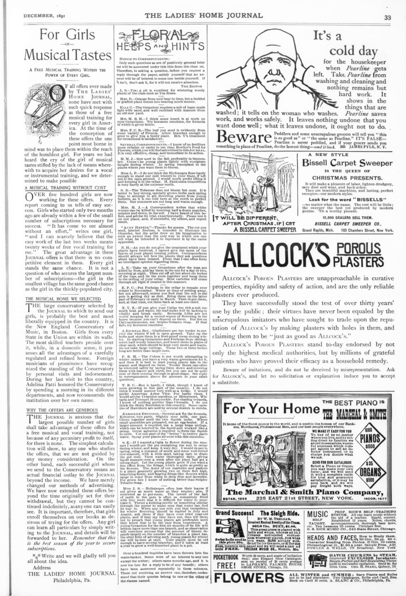
Ladies Home Journal
A New Style Bissell Carpet Sweeper Is the Queen of Christmas Presents
it
is
it
to
A BISSELL CARPET SWEEPER
—no matter what the name.
the
genius.
Grand Rapids, Mich.
A NEW STYLE
Bissell Carpet Sweeper
IS THE QUEEN OF
CHRISTMAS PRESENTS.
It will make a pleasure of labor, lighten drudgery,
save dust and wear, and back-aches.
They are beautiful machines, and lasting, perfect
sweepers—our modern styles.
Look for the word “ BISSELLS”’
The cost will be little;
best yet produced by modern
‘Tis a worthy present.
15,000 DEALERS SELL THEM.
BISSELL CARPET SWEEPER CO.,
103 Chambers Street, New York.
sweeper the
{kind=link}
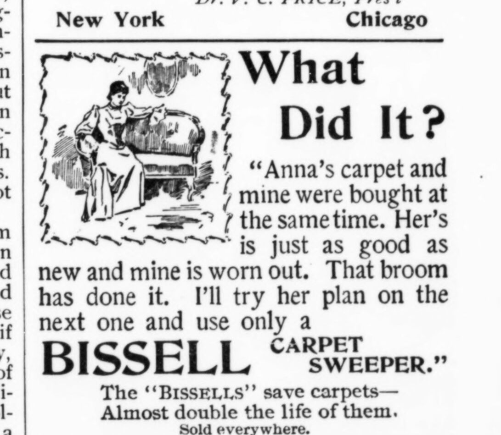
Ladies Home Journal
The Bissells save carpets - almost double the life of them
if
of
a
Chicago
ee f What
Wiey,, Did It?
/ «Anna’s carpet and
"=i ' mine were bought at
<==? / the sametime. Her’s
ini i hae os eOek a
new and mine is worn out. That broom
has done it. I'll try her plan on the
next one and use only a
BI SSEL CARPET
SWEEPER.”
The ‘‘BISSELLS’’ save carpets—
Almost double the life of them.
Sold everywhere.
New York
4
=e
-7
Ped he eet
{kind=link}
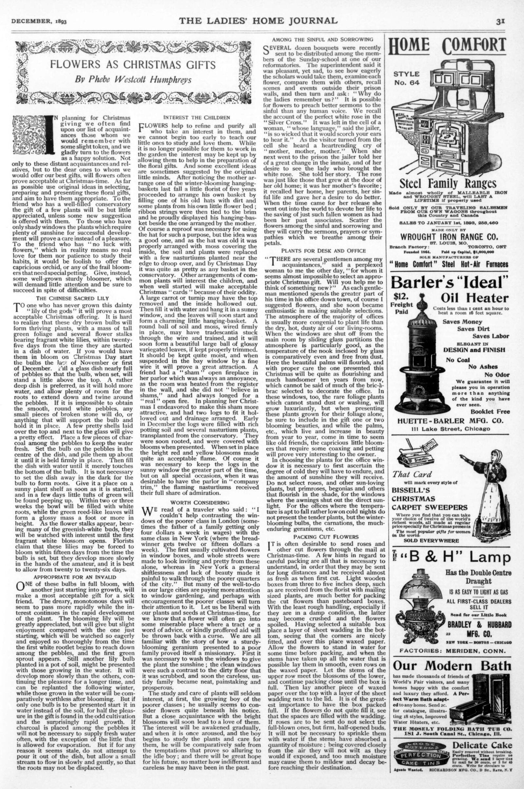
Ladies Home Journal
Bissell's Christmas Carpet Sweepers - twelve of the world's richest woods
111 Lake Street, Chicago
That Card
will mark every style of
BISSELL’S
CHRISTMAS
CARPET SWEEPERS
Where you find that you can take
your choice of twelve of the world’s
richest woods, all made at regular
price specially for Christmas presents
The most pepeter ‘or women
im the wor wife f
SOLD EVERYWHERE
{kind=link}
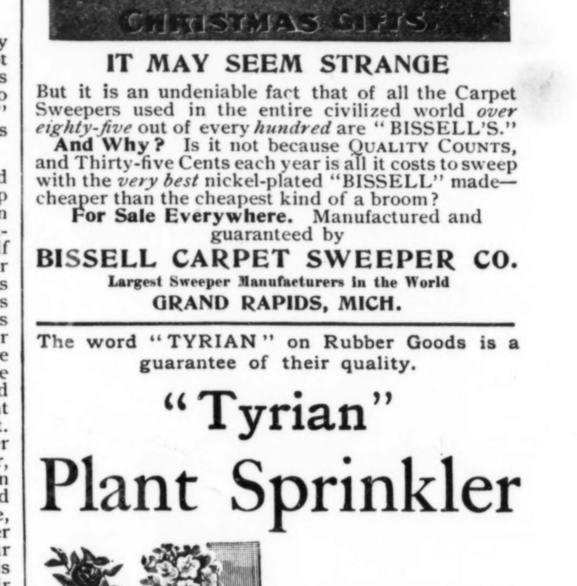
Ladies Home Journal
Eighty-five out of every hundred are Bissell's
is
is
is
IT MAY SEEM STRANGE
But it is an undeniable fact that of all the Carpet
Sweepers used in the entire civilized world over
eighty-five out of every hundred are “ BISSELL’S.”
And Why ? Is it not because QuALITY CouNTs,
and Thirty-five Cents each year is all it costs tosweep
with the very dest nickel-plated ‘“BISSELL”’ made—
cheaper than the cheapest kind of a broom?
or Sale Everywhere. Manufactured and
guaranteed by
BISSELL CARPET SWEEPER CO.
Largest Sweeper Manufacturers in the World
GRAND RAPIDS, MICH.
The word ‘‘TYRIAN” on Rubber Goods is a
guarantee of their quality.
“Tyrian”
Plant Sprinkler
{kind=link}
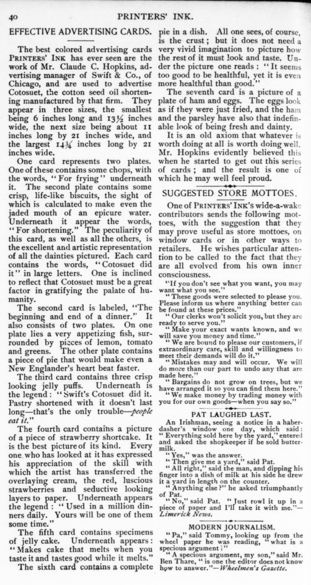
Printers' Ink
Effective Advertising Cards — Cotosuet show cards by Claude C. Hopkins, advertising man…
40
EFFECTIVE ADVERTISING CARDS.
The best colored advertising cards
PRINTERS’ INK has ever seen are the
work of Mr. Claude C. Hopkins, advertising
manager of Swift & Co., of
Chicago, and are used to advertise
Cotosuet, the cotton seed oil shortening
manufactured by that firm. They
appear in three sizes, the smallest
being 6 inches long and 13% inches
wide, the next size being about II
inches long by 21 inches wide, and
the largest 1434 inches long by 21
inches wide.
One card represents two plates.
One of these contains some chops, with
the words, ‘‘ For frying’’ underneath
it. The second plate contains some
crisp, life-like biscuits, the sight of
which is calculated to make even the
jaded mouth of an epicure water.
Underneath it appear the words,
‘For shortening.” The peculiarity of
this card, as well as all the others, is
the excellent and artistic representation
of all the dainties pictured. Each card
contains the words, ‘‘Cotosuet did
it’’ in large letters. One is inclined
to reflect that Cotosuet must be a great
factor in gratifying the palate of humanity.
The second card is labeled, ‘“The
beginning and end of a dinner.” It
also consists of two plates. On one
plate lies a very appetizing fish, surrounded
by picces of lemon, tomato
and greens. The other plate contains
a piece of pie that would make éven a
New Englander’s heart beat faster.
The third card contains three crisp
looking jelly puffs. Underneath is
the legend: ‘‘Swift’s Cotosuet did it.
Pastry shortened with it doesn’t last
long—that’s the only trouble—/eople
eat it.”
The fourth card contains a picture
of a piece of strawberry shortcake. It
is the best pictureof its kind. Every
one who has looked at it has expressed
his appreciation of the skill with
which the artist has transferred the
overlaying cream, the red, luscious
strawberries and seductive looking
layers to paper. Underneath appears
the legend : ‘‘ Used ina million dinners
daily. Yours will be one of them
some time.”
The fifth card contains specimens
of jelly cake. Underneath appears:
‘Makes cake that melts when you
taste it and tastes good while it melts.”
The sixth card contains a complete
PRINTERS’
INK.
pie ina dish. All one sees, of course,
is the crust; but it does not need a
very vivid imagination to picture how
the rest of it must look and taste. Under
the picture one reads: ‘‘ It seems
too good to be healthful, yet it is even
more healthful than good.’’
The seventh card is a picture of a
plate of ham and eggs. The eggs look
as if they were just fried, and the ham
and the parsley have also that indefinable
look of being fresh and dainty.
It is an old axiom that whatever i
worth doing at all is worth doing well.
Mr. Hopkins evidently believed this
when he started to get out this series
of cards; and the result is one of
which he may well feel proud.
li. baste cae «aban
SUGGESTED STORE MOTTOES.
One of PRINTERS’ INK’s wide-a-wak:
contributors sends the following mottoes,
with the suggestion that they
may prove useful as store mottoes, on
window cards or in other ways t
retailers. He wishes particular attention
to be called to the fact that they
are all evolved from his own inner
consciousness.
“If you don’t see what you want, you may
want what you see.”’
‘“* These goods were selected to please you.
Please inform us where anything better can
be found at these prices.”
** Our clerks won’t solicit you, but they ar«
ready to serve you.”’
“* Make your exact wants known, and we
will save you money and time.”
‘We are bound to please our customers, if
extraordinary care, skill and willingness to
meet their demands will do it.”
** Mistakes may and will occur. We will
do move than our part to undo any that are
made here.”’
“* Bargains do not grow on trees, but we
have arranged it so you can find them here.”
‘““We make money by trading money with
you for our own goods—when you say so.”’
; oo
PAT LAUGHED LAST.
An Irishman, seeing a notice in a haberdasher’s
window one day, which said:
“* Everything sold here by the yard,’’ entered
and asked the shopkeeper if he sold butter
milk.
** Yes,’’ was the answer.
** Then give me a yard,” said Pat.
* All right,’’ said the man, and dipping his
finger into a dish of milk at his side = fae
it a yard in length on the counter.
‘“* Anything else ?’’ he asked triumphantly
of Pat.
“No,” said Pat. ‘* Just rowl it up in a
piece of paper and I'll take it with me.”’—
Limerick News.
MODERN JOURNALISM.
** Pa,” said Tommy, looking up from the
wheel paper he was reading, “what is a
specious argument :”’
““A specious argument, my son,’’ said Mr.
Ben Thare, “‘ is one the editor does not know
how to answer.”— Wheelmen’s Gazette.
{kind=link}
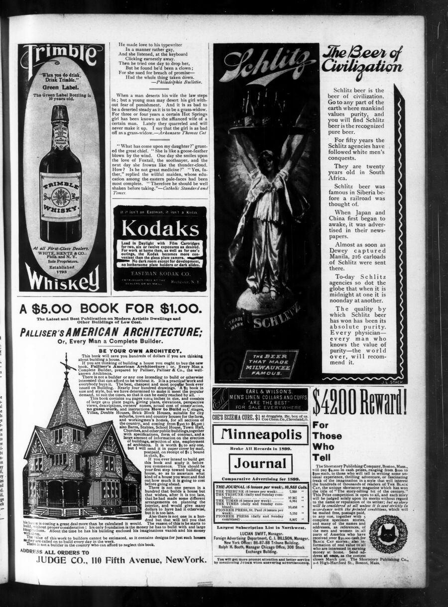
Judge
{kind=link}
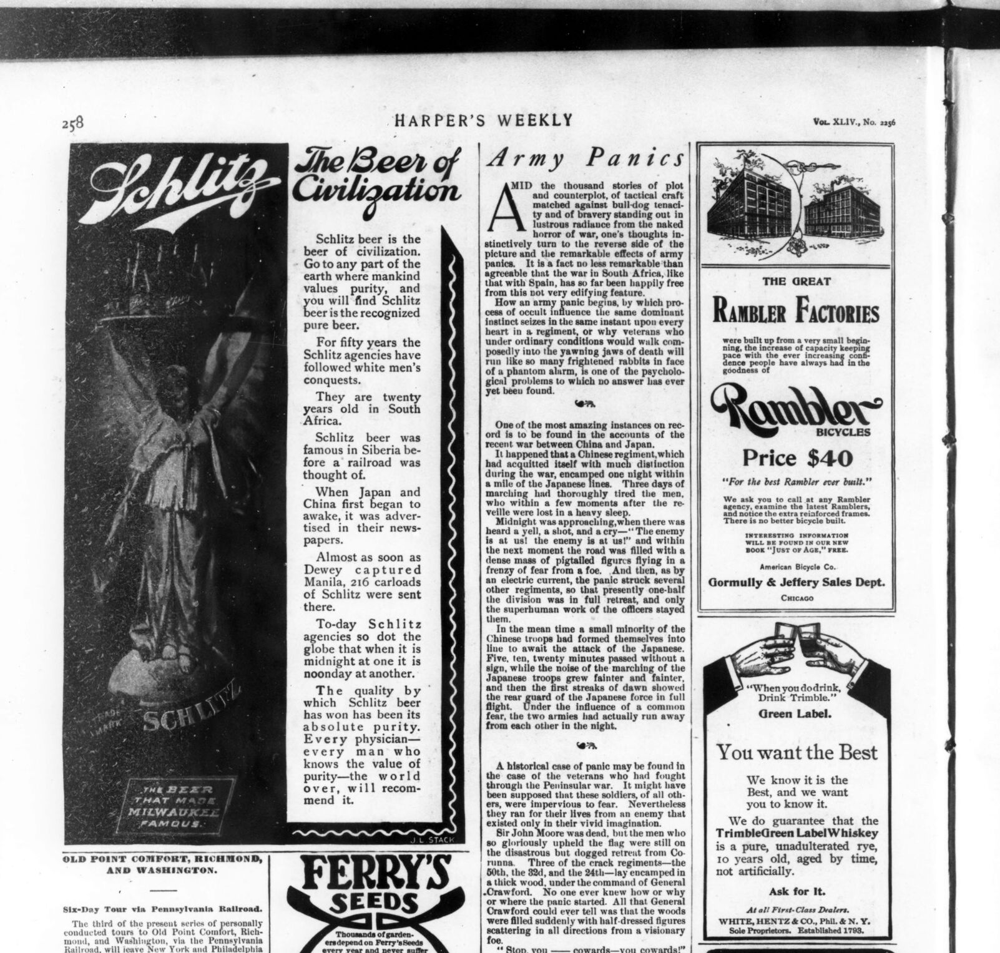
Harper's Weekly
4.1 2-2
THAT ™
MILWAU
/ FAMOUS
HARPER’S WEEKLY
Schlitz beer is the
beer of civilization.
Go to any part of the
earth where mankind
values purity, and
ou will find Schlitz
er is the recognized
pure beer.
For fifty years the
Schlitz agencies have
followed white men’s
conquests.
They are twenty
years old in South
Africa.
Schlitz beer was
famous in Siberia before a railroad was
thought of.
When Japan and
China first began to
awake, it was advertised in their newspapers.
Almost as soon as
Dewey captured
Manila, 216 carloads
of Schlitz were sent
there.
To-day Schlitz
agencies so dot the
globe that when it is
midnight at one it is
noonday at another.
The quality by —
which Schlitz beer
has won has been its
absolute purity.
Every physician—
every man who
knows the value of
purity—the world
over, will recommend it.
OLD POINT COMFORT, RICHMOND,
AND WASHINGTON.
Six-Day Tour via Pennsylvania Railroad.
The third of the present series of peneenety
conducted tours to Old Point Comfort, Richmond, and Washington, via the Pennsylvania
Railroad, will ieave New York and Philadelphia
FERRY
SEEDS
Thousands of gardeners depend on Ferry’sSeeds
every year and never suffer
She Zeer of [Army Panics
MID the thousand stories of plot
and counterplot, of tactical craft
matched against bull-dog tenacity and of bravery standing out in
lustrous radiance from the naked
horror of war, one’s thoughts instinctively turn to the reverse side of the
picture and the remarkable effects of army
panics. It is a fact no less remarkable ‘than
agreeable that the war in South Africa, like
that with Spain, has so far been happily free
from this not very edifying feature.
How an army panic begins, by which process of occult influence the same dominant
instinct seizes in the same instant upon every
heart in a regiment, or why veterans who
under ordinary conditions would walk composedly into the yawning jaws of death will
run like so many frightened rabbits in face
of a phantom alarm, is one of the psychological problems to which no answer has ever
yet been found.
Sa.
One of the most amazing instances on record is to be found in the accounts of the
recent war between China and Japan.
It happened that a Chinese regiment,which
had acquitted itself with much distinction
during the war, encam one night within
a mile of the Japanese lines. Three days of
marching had thoroughly tired the men,
who within a few moments after the reveille were lost in a heavy sleep.
Midnight was approaching,when there was
heard a yell, a shot, and a cry—‘‘ The enemy
is at us! the enemy is at us!” and within
the next moment the road was filled with a
dense mass of pigtailed figurcs flying in a
frenzy of fear from a foe. And then, as by
an electric current, the panic struck several
other regiments, so that presently one-half
the division was in full retreat, and only
- superhuman work of the officers stayed
them.
In the mean time a small minority of the
Chinese troops had formed themselves into
line to await the attack of the Japanese.
Five, ten, twenty minutes passed without a
sign, while the noise of the marching of the
Japanese troops grew fainter and fainter,
and then the first streaks of dawn showed
the rear guard of the Japanese force in full
flight. Ender the influence of a common
fear, the two armies had actually run away
from each other in the night.
@a.
A historical case of panic may be found in
the case of the veterans who had fought
through the Peninsular war. It might have
been supposed that these soldiers, of all others, were impervious to fear. Nevertheless
they ran for their lives from an enemy that
existed ron, bo their vivid imagination.
Sir John Moore was dead, but the men who
so gloriously upheld the flag were still on
the disastrous but dogged retreat from Corunna. Three of the crack regiments—the
| 60th, the 32d, and the 24th—lay encamped in
a thick wood, under the command of General
-Crawford. No one ever knew how or why
or where the panic started. All that General
Crawford could ever tell was that the woods
were filled suddenly with half-dressed figures
0e.
tae in all directions from a visionary |
‘* Stop, you —— cowards—you cowards!”
Vow. XLIV., No. 2256
THE GREAT
Rampier Factories
were built up from a very small beginning, the increase of capacity keepin,
pace with the ever increasing confidence people have always had in the
goodness of
Ror BICYCLES
Price $40
"For the best Rambler ever built.”’
We ask you to call at any Rambler
agency, examine the latest Ramblers,
and notice the extra reinforced frames.
There is no better bicycle built.
INTERESTING INFORMATION
WILL BE FOUND IN OUR NEW
BOOK “‘Just oF AGE,” FREE.
American Bicycle Co.
Gormully & Jeffery Sales Dept.
Cuicaco
‘“‘When you dodrink,
Drink Trimble.”
Green Label.
You want the Best
We know it is the
Best, and we want
you to know it.
We do guarantee that the
TrimbleGreen Label Whiskey
is a pure, unadulterated rye,
10 years old, aged by time,
not artificially.
Ask for It.
At all First-Class Dealers.
WHITE, HENTZ & CO., Phil. & N. Y¥.
Sole Established 1793.
{kind=link}
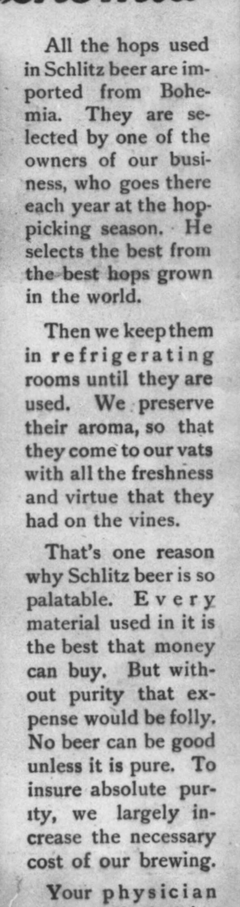
Harper's Weekly
All the hops used
in Schlitz beer are imported from Bohemia. They are selected by one of the
owners of our business, who goes there
each year at the go F
picking season, e
selects the best from
the-best hops grown
in the world.
Then we keepthem
in refrigerating
rooms until they are
used, We. preserve
their aroma, so that
they come to our vats
with all the freshness
and virtue that they
had on the vines.
That’s one reason
why Schlitz beer is so
palatable. Every
material used in it is
the best that money
can buy, But without purity that expense would be folly.
No beer can be good
unless it is pure. To
insure absolute purity, we largely increase the necessary
cost of our brewing.
Your physician
{kind=link}
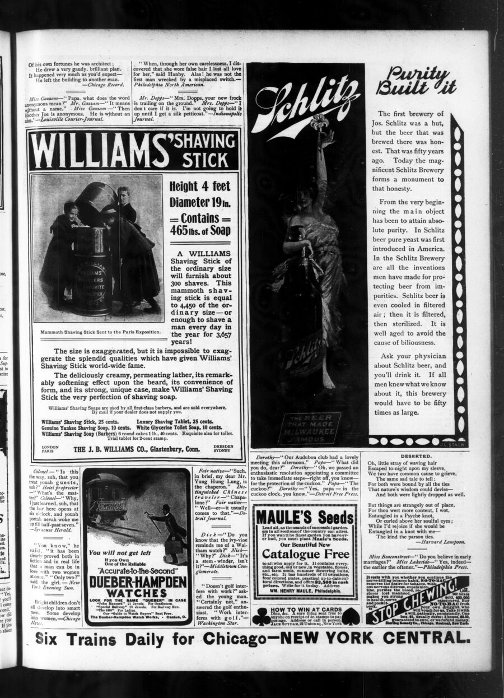
Judge
{kind=link}
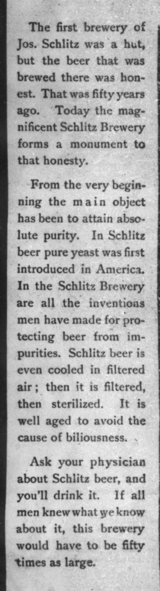
Harper's Weekly
The first brewery of
Jos. Schlitz was a hut,
but the beer that was
brewed there was honest. That was fifty years
ago. Today the magnificent Schlitz Brewery
forms a monument to
that honesty.
From the very beginning the main object
has been to attain absolute purity. In Schlitz
beer pure yeast was first
introduced in America.
In the Schlitz Brewery
are all the
men have made for protecting beer from impurities. Schlitz beer is
even cooled in filtered
air; then it is filtered,
It is
well aged to avoid the
inventions
then sterilized.
cause of biliousness.
Ask your physician
about Schlitz beer, and
you'll drink it. If all
men knew what we know
about it, this brewery
would have to be fifty
times as large.
{kind=link}
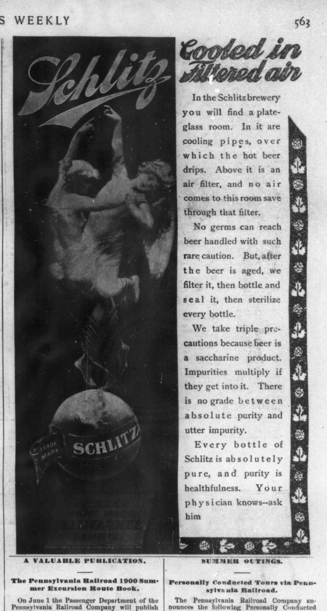
Harper's Weekly
WEEKLY
563
@
MAY
In the Schlitz brewery
you will find a plateglass room. In it are
cooling pipes, over
which the hot beer
Above it is an
air filter, and no air
drips.
> comes to. this room save
through that filter.
No germs can reach
beer handled with such
rare caution. But,after
the beer is aged, we
filter it, then bottle and
seal it, then sterilize
every bottle.
We take triple precautions because beer is
LA.
i ee
a saccharine product. fag
Impurities multiply if db
they get intoit. There 3
is no grade between
absolute purity and
utter impurity.
Every bottle of
Schlitz is absolutely
purity is
pure, and
healthfulness. Your
physician knows--ask
him
A VALUABLE PUBLICATION.
The Pennsylvania Raliroad 1900 Summer Excursion Route Book,
On June 1 the Passenger Department of the
Pennsylvania Railroad Company will publish
SUMMER OUTINGS.
Personally Conducted Tours via Penunsyivenia BRallroad.
The Pennsylvania Railroad Company announces the following Personally Conducted
{kind=link}
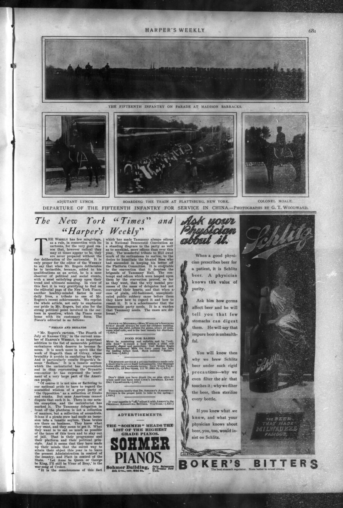
Harper's Weekly
{kind=link}
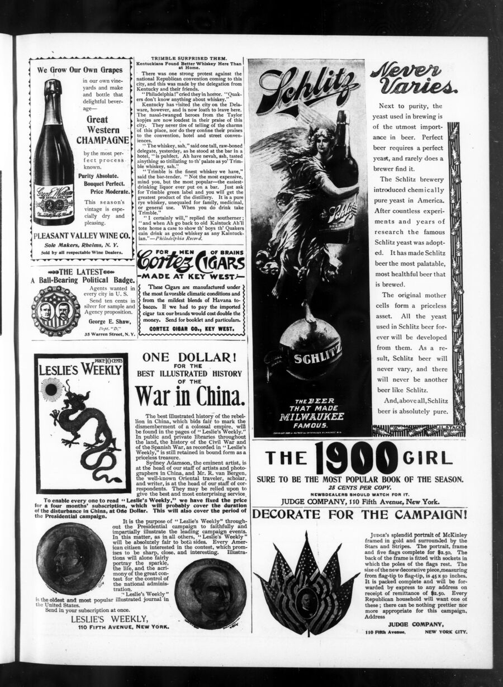
Judge
{kind=link}
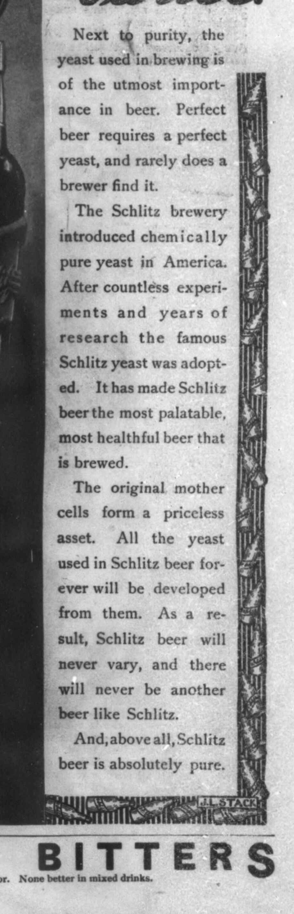
Harper's Weekly
Next
yeast used in, brewing is
purity, the
of the utmost import- (
ance in beer. Perfect Bam
beer requires a perfect
“a
yeast, and rarely does a
<.
brewer find it.
The Schlitz brewery
introduced chemically
Le ee
pure yeast in America.
WAY
*.
After countless experi-
)
=e
ments and years of
research the famous =
Schlitz yeast was adopt- If
ed. Ithas made Schliiz Hz
» beerthe most palatable, y!
» most healthful beer that if
is brewed. I
The original, mother if
cells form a priceless 4
asset. All the yeast \y
used in Schlitz beer for- Bag
ever will be developed ly
from them. As a re- i
sult, Schlitz beer will [W
never vary, and there IE
will never be another Bi
beer like Schlitz. eo.
And, above all, Schlitz
beer is absolutely pure. \'
a
Nes aie RM SL STAC
Seidl ene Tsiwhers
~
Z
BITTERS
None better in
{kind=link}
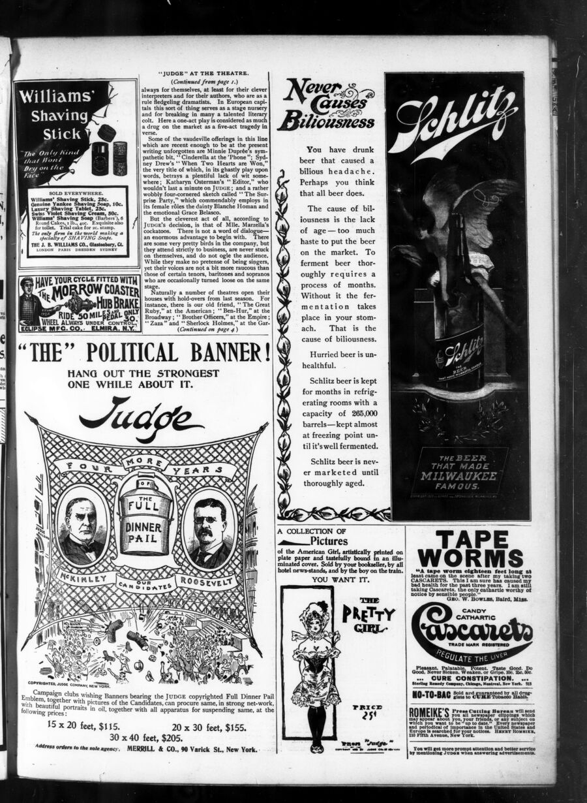
Judge
{kind=link}
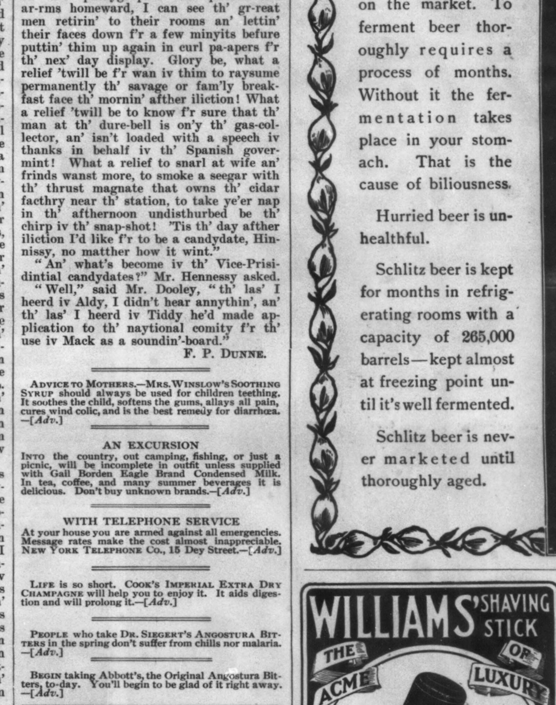
Harper's Weekly
a
I
ar-rms homeward, I can see th’ gr-reat
men retirin’ to their rooms an’ lettin’
their faces down f’r a few minyits befure
puttin’ thim u in in curl pa-apers f’r
th’ nex’ day display. Glory be, what a
relief *twill be f’r wan iv thim to raysume
aig th’ sav: or fam’ly breakast face th’ mornin’ afther iliction! What
a relief ’twill be to know f’r sure that th’
man at th’ dure-bell is on’y th’ gas-collector, an’ isn’t loaded with a s h iv
thanks in behalf iv th’ Spanish govermint! What a relief to snarl at wife an’
frinds wanst more, to smoke a seegar with
th’ thrust magnate that owns th’ cidar
facthry near th’ station, to take ye’er nap
in th’ afthernoon undisthurbed be th’
chirp iv th’ snap-shot! °Tis th’ day afther
iliction I'd like f’r to be a candydate, Hinnissy, no matther how it wint.”
“ An’ what’s become iv th’ Vice-Prisidintial candydates?” Mr. Hennessy asked.
“Well,” said Mr. Dooley, “th’ las’ I
heerd iv Aldy, I didn’t hear annythin’, an’
th’ las’ I heerd iv Tiddy he’d made a
plication to th’ naytional comity f’r th’
use iv Mack as a soundin’-board.”
F. P. DuNNeE.
ADVICE To MoTHERs.—MRrs, WINSLOW’s SOOTHING
Syrup should always be used for children teething.
It southes the child, softens the gums, allays oS gcin,
rer. colic, and is the best remedy for
oa v.
AN EXCURSION
nm tea, ,» and many summer bev it is
delicious. Don’t buy ‘ania Srande-LAded
WITH TELEPHONE SERVICE
At r house are armed against all emergencies.
Message rates make the cost almost le
New York TELEPHONE Co., 15 Dey Street.—[Adv.]
Lure is so short. Coox’s Impexiat Extra Dry
CHAMPAGNE will help you to enjoy it. It aids digestion and will prolong it.—{Adv.]
Prope who take Dr. Sizcert’s ANGostuRA Brrbir y Jn "72 spring don’t suffer from chills nor a.
v.
Brorn taking Abbott’s, the Original Anyostura Bitbar te ou'll in to be glad of it right away.
on the market. To
ferment beer thoroughly requires a
process of months,
Without it the
mentation
fertakes
place in your stomach. That is the
cause of biliousness.
Hurried beer is unhealthful.
Schlitz beer is kept
for months in refrigerating rooms with a
capacity of 265,000
barrels—kept almost
at freezing point until it’s well fermented.
Schlitz beer is never marketed until
y thoroughly aged.
STICK
{kind=link}
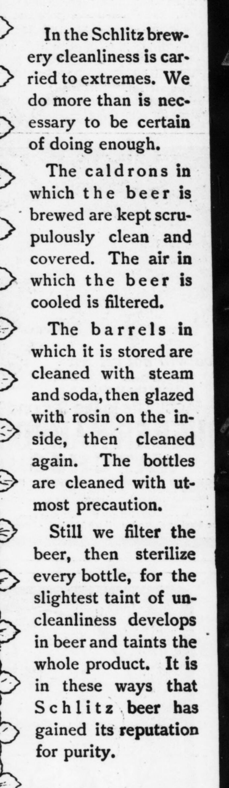
Judge
In the Schlitz brewery cleanliness is carried to extremes. We
do more than is necessary to be certain
of doing enough.
The caldrons in
which the beer is
‘ brewed are kept scrupulously clean and
covered. The air in
which the beer is
cooled is filtered,
The barrels in
which it is stored are
cleaned with steam
and soda, then glazed
with rosin on the inside, then cleaned
again. The bottles
are cleaned with utmost precaution.
Still we filter the ©
beer, then sterilize
every bottle, for the
slightest taint of uncleanliness develops
in beer and taints the ©
whole product. It is
in these ways that
Schlitz .beer has
gained its reputation
for purity.
{kind=link}
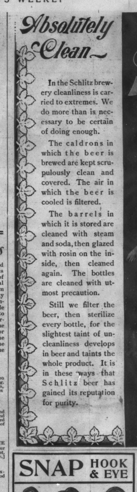
Harper's Weekly
of
to
and
and
sed
of
t.
: Absaliilely
oS Clea ~
In the Schlitz brewery cleanliness is carried to extremes. We
do more than is necessary to be certain
of doing enough.
.
The caldrons in
which the beer is
brewed are kept scrupulously clean and
covered. The air in
which the beer is
cooled is filtered.
The barrels in
which it is stored are
cleaned with steam
and soda, then glazed
with rosin on the inside, then cleaned
again. The bottles
are cleaned with utmost precaution.
Still we filter the
beer, then sterilize
every bottle, for the
slightest taint of uncleanliness develops
in beer and taints the
whole product. It is
in these “ways - that
Schlitz beer has
gained its reputgtion
for purity. ..
EAln0aSy Q
Orr
+
Soi
re
Fs
OO
SNA HOOK
& EYE
{kind=link}
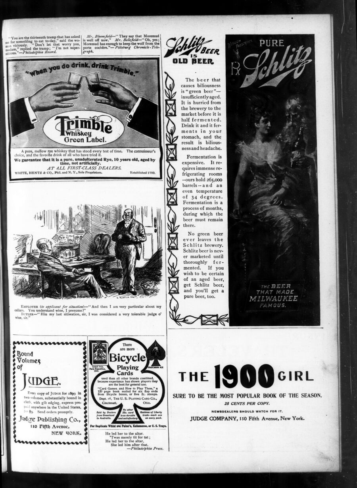
Judge
{kind=link}
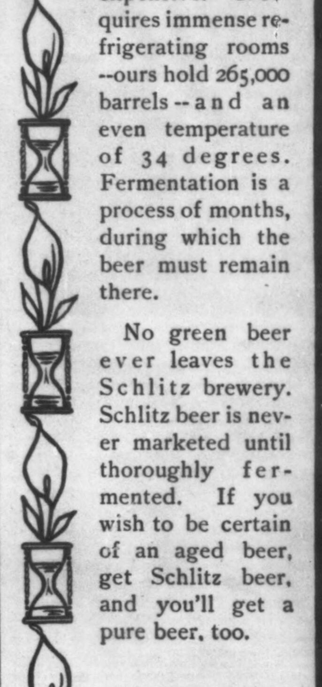
Harper's Weekly
quires immense refrigerating rooms
--ours hold 265,000
barrels--and an
even temperature
of 34 degrees.
Fermentation is a
process of months,
during which the
beer must remain
there.
No green beer
=
x ever leaves the
§ Schlitz brewery.
MSS Schlitz beer is never marketed until
thoroughly fermented, If you
wish to be certain
of an aged beer,
get Schlitz beer,
and you'll get a
pure beer, too.
{kind=link}
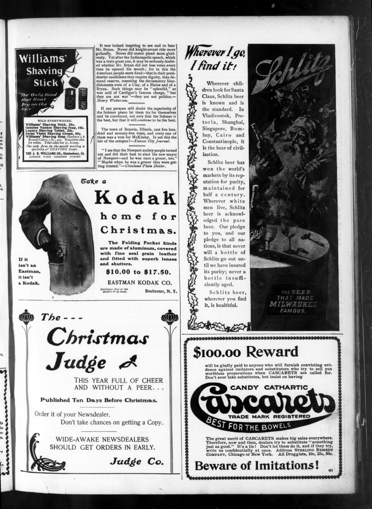
Judge
{kind=link}
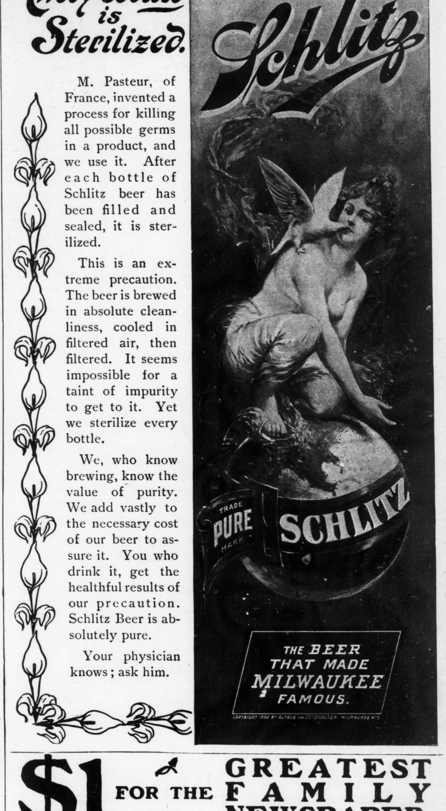
Judge
06
tecilized)
M. Pasteur, of
France, invented a
process for killing
all possible germs
in a product, and
we use it. After
each bottle of
Schlitz beer has
been filled and
sealed, it is ster-
/ ilized.
Q 4H) This is an extreme precaution.
The beer is brewed
in absolute clean-
\/ liness, cooled in
filtered air, then
filtered. It seems
impossible for a
taint of impurity
to get to it. Yet
we sterilize every
bottle.
We, who know
brewing, know the
. value of purity.
/ We add vastly to ,
the necessary cost
of our beer to assure it. You who
drink it, get the
healthful results of
| our precaution.
Schlitz Beer is absolutely pure.
gab
4
iit SER
a ee eeeneesenseanene
Your physician Lt [ie = 8 28 « |
knows ; het him | THAT MADE
\| | MILWAUKEE
CEA) » / # Famous.
get 4) =< CaovalaaT ee 3
—. %
S) >)
A GREATEST
FOR THE F A M I L Y
{kind=link}
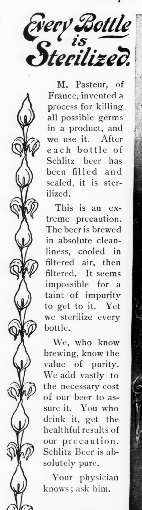
Harper's Weekly
Hey Mottle
ee)
M. Pasteur, of
France, invented a
process for killing
all possible germs
\( in a product, and
Nya we use it.
Q),; each bottle of
Schlitz beer has
been filled and
| sealed, is ster-
( ilized.
Qy py This is an exVD the
of our beer to astreme precaution.
The beer is brewed
in absolute clean-
\/ liness,
filtered air,
filtered.
impossible for a
taint of
. to get to it.
| we sterilize every
G) bottle.
We, who know
brewing, know the
value of
We add vastly to
necessary cost
sure
drink it, get
: healthful results of
/ our precaution,
Schlitz Beer is absolutely pure.
Your
knows; ask him.
After
cooled in
then
It seems
impurity
Yet
purity.
it. You who
the
physician
{kind=link}
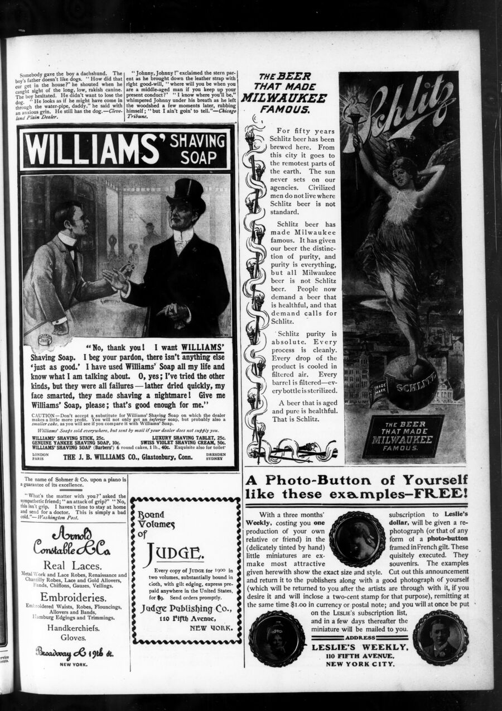
Judge
{kind=link}
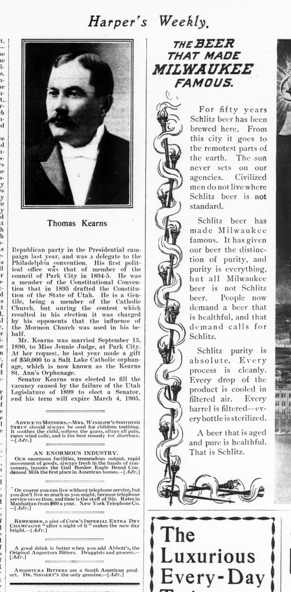
Harper's Weekly
.
he
Republican party in the Presidential campaign last year, and was a delegate to the
Philadelphia convention.
ical
council of Park City in 1894-5.
a member
tion that in 1895 drafted the Constitution of the State of Utah. He is a Gentile, being a member of the Catholic
Chureh, but auring the contest which
resulted in his election it was charged
by his opponents that the influence of
the Mormon Church was used in his behalf
1890, to Miss Jennie Judge, at Park City.
At her
of $50,000 to a Salt Lake
age,
St. Ann’s Orphanage.
vacancy caused by the failure of the Utah
Legislature of 1899 to
and his term will expire March 4,
Syrup should always be used for children teething.
It soothes the child, softens the gums, allays all pain,
cures wind colic, and is the best remedy for diarrhaa.
—[Adv.
movement of goods, always fresh in the hands of consumers, insures the Gail Borden Eagle Brand Condensed Milk the first place in American homes.—{ Adv.
you don’t live as much as you might, because telephone
service saves time, and time is the stuff of life. Rates in
Manhattan from $60 a year. }
—[ Adv, ] |
|
CHAMPAGN
bright.—[{ Adv.] |
Original Angostura Bitters.
[Adv.]
uct. Dr. SIEGERT’S the only genuine.—[ Adz.
Harper's
Thomas Kearns
His first politmember of the
He was
of the Constitutional Convenoffice was that of
Mr. Kearns was married September 15,
he last year made a gift
Catholic orphanwhich is now known as the Kearns
request,
Senator Kearns was elected to fill the
Senator,
1905.
elect a
ADVICE TO MOTHERS.—MkS. WINSLOW’S SOOTHING
AN ENORMOUS INDUSTRY.
Ovr enormous facilities, tremendous output, rapid
~ OF course youcan live without telephone service, but
New York Telephone Co.
REMEMBER, a pint of CoOoK’s IMPERIAL Extra Dry
ie after a night of it’ makes the new day
A good drink is better when you add Abbott’s, the
Druggists and grocers.-
ANGOSTURA BITTERS are a South American prodMILWAUKEE
Weekly,
THE BEER
THAT MADE
FAMOUS.
For fifty years
Schlitz beer has been
brewed here. From
this city it goes to
the remotest parts of
the earth. The .sun
never sets on our
agencies. Civilized
men do not live where
Schlitz not
standard.
Schlitz beer has
made Milwaukee
(( famous. It has given
our beer the distincpurity, and
beer is
tion of
purity is everything
but all Milwaukee
beer is not Schlitz
beer. People now
demand a beer that
/ is healthful, and that
IC demand calls for
)) Schlitz.
Schlitz
absolute.
process is
Every drop of the
product is cooled 1
filtered air. Every
barrel is filtered—every bottle is sterilized.
purity is
Every
cleanly.
A beer that is aged
and pure is healthful.
That is Schlitz.
A A I A I |
| | The
| Luxurious
| | Every-Day
i
'
t
:
{kind=link}
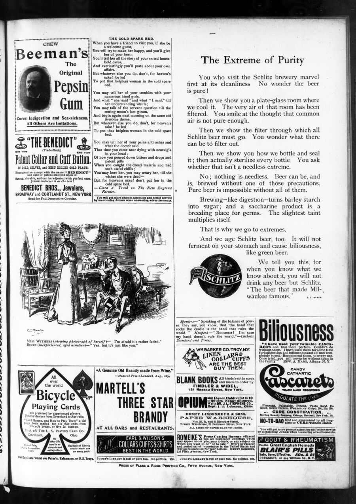
Judge
{kind=link}
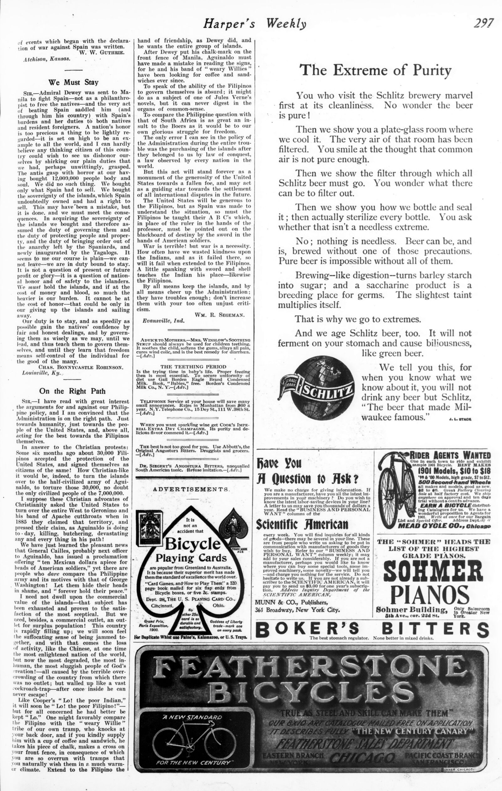
Harper's Weekly
The Extreme of Purity
You who visit the Schlitz brewery marvel first at its cleanliness. No wonder the beer is pure! Then we show you a plate-glass room where we cool it. The very air of that room has been filtered. You smile at the thought that common air is not pure enough. Then we show the filter through which all Schlitz beer must go. You wonder what there can be to filter out. Then we show you how we bottle and seal it; then actually sterilize every bottle. Brewing — like digestion — turns barley starch into sugar; and a saccharine product is a breeding place for germs. The slightest taint multiplies itself. That is why we go to extremes.
{kind=link}
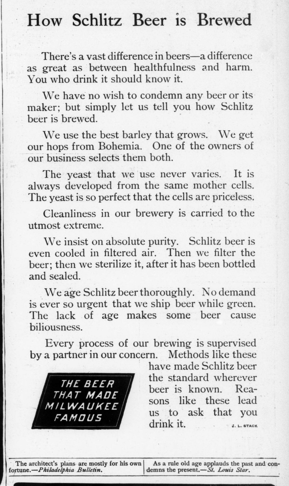
Judge
How Schlitz Beer is Brewed
There’s a vast difference in beers—a difference
as great as between healthfulness and harm.
You who drink it should know it.
We have no wish to condemn any beer or its
maker; but simply let us tell you how Schlitz
beer is brewed.
We use the best barley that grows. We get
our hops from Bohemia. One of the owners of
our business selects them both.
The yeast that we use never varies. It is
always developed from the same mother cells.
The yeast is so perfect that the cells are priceless.
Cleanliness in our brewery is carried to the
utmost extreme.
We insist on absolute purity. Schlitz beer is
even cooled in filtered air. Then we filter the
beer; then we sterilize it, after it has been bottled
and sealed.
We age Schlitz beer thoroughly. No demand
is ever so urgent that we ship beer while green.
The lack of age makes some beer cause
biliousness.
Every process of our brewing is supervised
by a partnerin ourconcern. Methods like these
have made Schlitz beer
the standard wherever
beer is known. Reasons like these lead
us to ask that you
drink it.
THE BEER
THAT MADE
MILWAUKEE
FAMOUS
J. L. STACK
The architect’s plans. are mostly for his own
fortune.—Philadelphia Bulletin,
demns the present.— Sz, Louis Star.
As a rule old age applauds the past and con-
{kind=link}
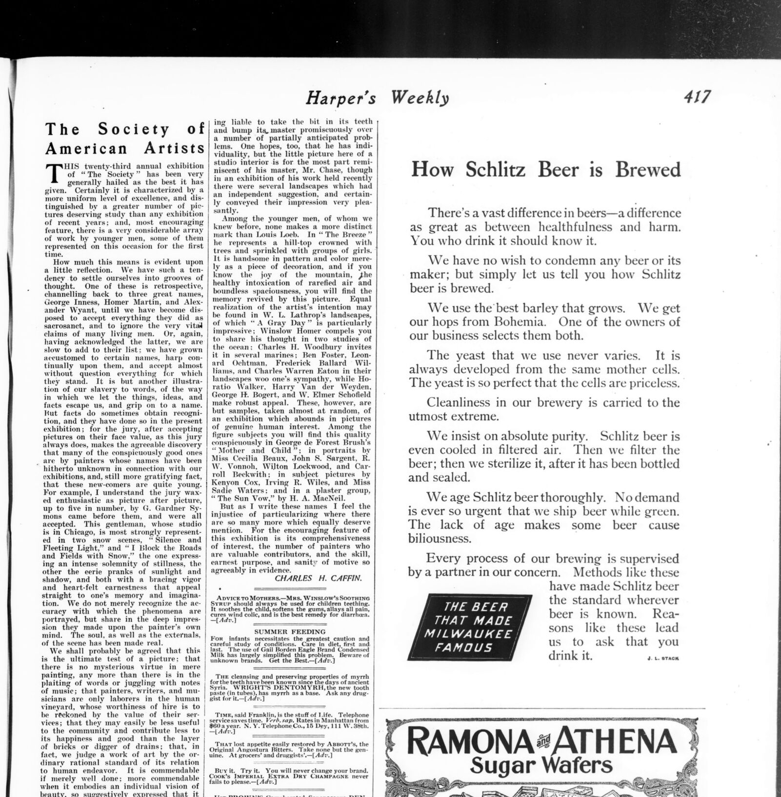
Harper's Weekly
The
Society of
American Artists
Te twenty-third annual exhibition
f “The Society” has been very
generally hailed as the best it has
given. Certainly it is characterized by a
more uniform level of excellence, and distinguished by a greater number of pictures deserving study than any exhibition
of recent years; and, most encouraging
feature, there is a very considerable array
of work by younger men, some of them
represented on this occasion for the first
time.
How much this means is evident upon
a little reflection. We have such a tendeney to settle ourselves into grooves of
thought. One of these is retrospective,
channelling back to three great names,
George Inness, Homer Martin, and Alexander Wyant, until we have become disposed to accept everything they did as
sacrosanct, and to ignore the very vitad
claims of many living men. Or, again,
having acknowledged the latter, we are
slow to add to their list: we have grown
accustomed to certain names, harp continually upon them, and accept almost
without question everything fer which
they stand. It is but another illustration of our slavery to words, of the way
in which we let the things, ideas, and
facts escape us, and grip on to a name.
Rut facts do sometimes obtain recognition, and they have done so in the present
exhibition; for the jury, after accepting
pictures on their face value, as this jury
always does, makes the agreeable discovery
that many of the conspicuously good ones
_ are by painters whose names have been
hitherto unknown in connection with our
exhibitions, and, still more gratifying fact,
that these new-comers are quite young.
For example, I understand the jury waxed enthusiastic as picture after picture,
up to five in number, by G. Gardner Symons came before them, and were all
accepted. This gentleman, whose studio
is in Chicago, is most strongly represented in two snow scenes, “Silence and
Fleeting Light,” and “I Block the Roads
and Fields with Snow,” the one expressing an intense solemnity of stillness, the
other the eerie pranks of sunlight and
shadow, and both with a bracing vigor
and heart-felt earnestness that appeal
straight to one’s memory and imagination. We do not merely recognize the accuracy with which the phenomena are
portrayed, but share in the deep impression they made upon the painter’s own
mind. The soul, as well as the externals,
of the scene has been made real.
We shall probably be agreed that this
is the ultimate test of a picture; that
there is no mysterious virtue in mere
painting, any more than there is in the
plaiting of words or juggling with notes
of music; that painters, writers, and musicians are only laborers in the human
vineyard, whose worthiness of hire is to
be reckoned by the value of their ser-
| careful study of conditions.
last.
vices; that they may easily be less useful |
to the community and contribute less to
its happiness and good than the layer
of bricks or digger of drains; that, in
fact, we judge a work of art by the ordinary rational standard of its relation
to human endeavor. It is commendable
if merely well done; more commendable
when it embodies an individual vision of
beauty, so suggestively expressed that it
|
ing liable to take the bit in its teeth
and bump its, master promiscuously over
a number of partially anticipated problems. One hopes, too, that he has individuality, but the little picture here of a
studio interior is for the most part reminiscent of his master, Mr. Chase, though
in an exhibition of his work held recently
there were several landscapes which had
an independent suggestion, and certainly conveyed their impression very pleasantly.
Among the younger men, of whom we
knew before, none makes a more distinct
mark than Louis Loeb. In “ The Breeze”
he represents a_ hill-top crowned with
trees and sprinkled with groups of girls.
It is handsome in pattern and color merely as a piece of decoration, and if you
know the joy of the mountain, phe
healthy intoxication of rarefied air and
boundless spaciousness, you will find the
memory revived by this picture. Equal
realization of the artist’s intention may
be found in W. L. Lathrop’s landscapes,
of which “ A Gray Day” is particularly
impressive; Winslow Homer compels you
to share his thought in two studies of
the ocean; Charles H. Woodbury invites
it in several marines; Ben Foster, Leonard Ochtman. Frederick Ballard Williams, and Charles Warren Eaton in their
landscapes woo one’s sympathy, while Horatio Walker, Harry Van der Weyden,
George H. Bogert, and W. Elmer Schofield
make robust appeal. These, however, are
but samples, taken almost at random, of
an exhibition which abounds in pictures
of genuine human interest. Among the
figure subjects you will find this quality
conspicuously in George de Forest Brush’s
“Mother and Child”; in portraits by
Miss Cecilia Beaux, John S. Sargent, R.
W. Vonnoh, Wilton Lockwood, and Carroll Beckwith; in subject pictures by
Kenyon Cox, Irving R. Wiles, and Miss
Sadie Waters; and in a plaster group,
“The Sun Vow,” by H. A. MacNeil.
But as I write these names I feel the
injustice of particularizing where there
are so many more which equally deserve
mention. For the encouraging feature of
this exhibition is its comprehensiveness
of interest, the number of painters who
are valuable contributors, and the skill,
earnest purpose, and sanity of motive so
agreeably in evidence.
CHARLES H. CAFFIN.
ADVICE TO MOTHERS.—MRS. WINSLOW’s SOOTHING
Syrup should always be used for children teething.
It soothes the child, softens the gums, allays all pain,
cores ind colic, and is the best remedy for diarrhwa.
—|_ Aad.
SUMMER FEEDING
For infants necessitates the greatest caution and
Care in diet, first and
The use of Gail Borden Eagle Brand Condensed
simplified this problem.
Milk has largel
a. Get the Best.—[Adv.]
unknown bran
THE cleansing and preserving properties of myrrh
for the teeth have been known since the days of ancient
Syria. WRIGHT’S DENTOMYRH, the new tooth
paste (in tubes), has myrrh as a base. Ask any druggist for it.—[Adv.]
TIME, said Franklin, is the stuff of Life. Telephone
service —- or Verb, sap. Rates in Manhattan from
| li N. Y. Telephone Co., 15 Dey, 111 W. 38th.
— Ac
Tuat lost appetite easily restored by ABBoTT’s, the
Original Angostura Bitters. Take none but the genuine. At grocers’ and druggists’.—[Adv.]
Buy it. Try it. You will never change your brand.
Cook’s IMPERIAL ExTRA Dry CHAMPAGNE never
fails to please. — J
Cutonee
Beware of |
Harper’s Weekly
How Schlitz Beer is Brewed
There’s a vast difference in beers—a difference
as great as between healthfulness and harm.
You who drink it should know it.
We have no wish to condemn any beer or its
maker; but simply let us tell you how Schlitz
beer is brewed.
We use the best barley that grows
our hops from Bohemia.
We get
One of the owners of
our business selects them both.
The yeast that we use never varies.
always developed from the
It is
same mother cells.
The yeast is so perfect that the cells are priceless.
Cleanliness in our brewery is carried to the
utmost extreme.
We insist on absolute purity.
even cooled in filtered air.
sterilize it, after it has been bottled
beer; then we
and sealed,
Schlitz beer is
Then we filter the
Weage Schlitz beer thoroughly. Nodemand
is ever so urgent that we ship beer while green.
The lack of age makes some
biliousness.
beer cause
Every process of our brewing is supervised
by a partner in our concern.
THE BEER
THAT MADE
MILWAUKEE
FAMOUS
Methods like these
have made Schlitz beer
the standard wherever
beer is known. Reasons like these lead
us to ask that you
drink it.
d. L. STACK
RAMONA#ATHENA
_ Sugar Wafers
{kind=link}
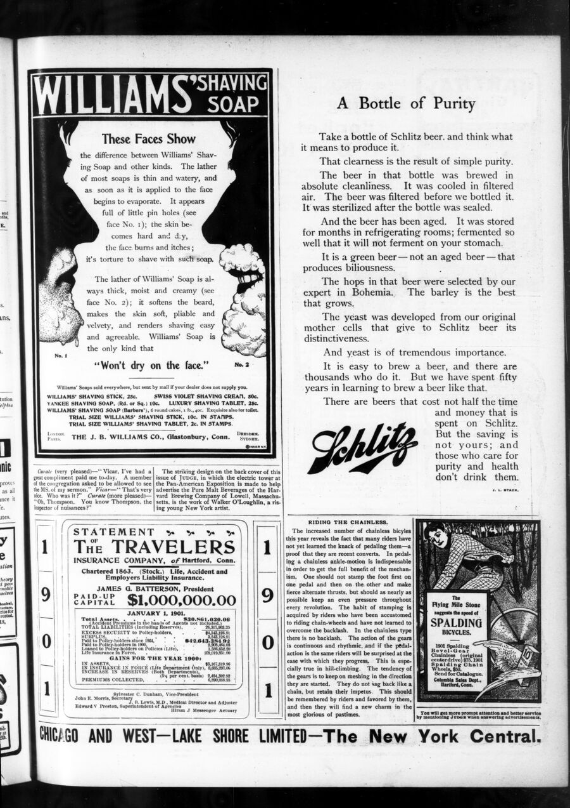
Judge
{kind=link}
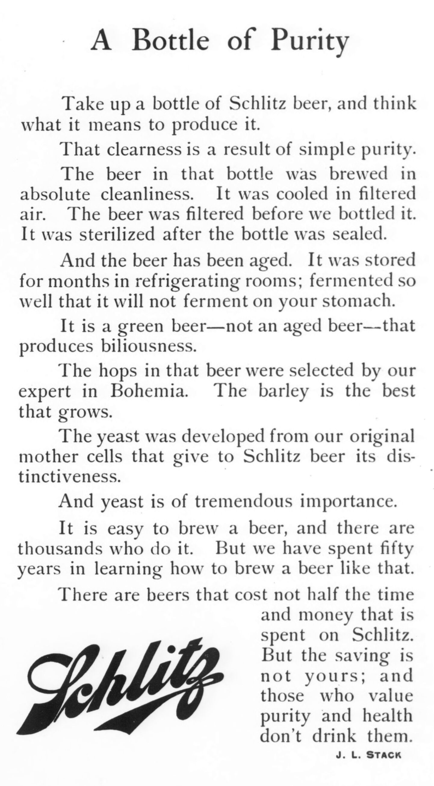
Harper's Weekly
A Bottle
of Purity
Take up a bottle of Schlitz beer, and think
what it means to produce it.
That clearness is a result of simple purity.
The beer in that bottle was brewed in
absolute cleanliness.
It was cooled in filtered
air. The beer was filtered before we bottled it.
It was sterilized after the bottle was sealed.
And the beer has been aged.
It was stored
for months in refrigerating rooms; fermented so
well that it will not ferment on your stomach.
It is a green beer—not an aged beer—that
produces biliousness.
The hops in that beer were selected by our
expert in Bohemia.
that grows.
The barley is the best
The yeast was developed from our original
mother cells that give
tinctiveness.
to Schlitz beer vt disAnd yeast is of tremendous importance.
It is easy to brew a beer, and there are
thousands who do it.
But we have spent fifty
years in learning how to brew a beer like that.
There are beers that cost not half the time
and money that is
spent on Schlitz.
But the saving is
not yours; and
those who value
purity and health
don’t drink them.
J. L. STACK
{kind=link}
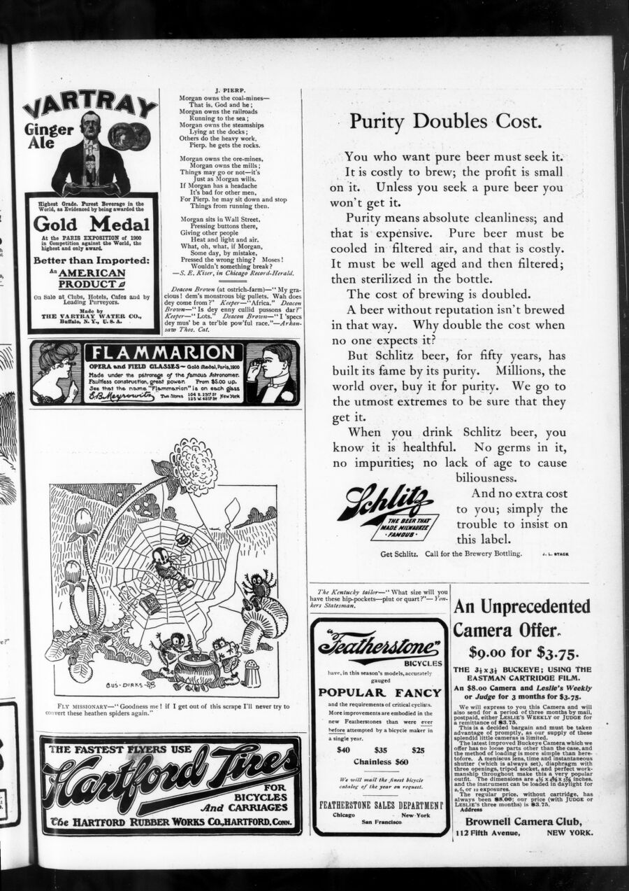
Judge
{kind=link}
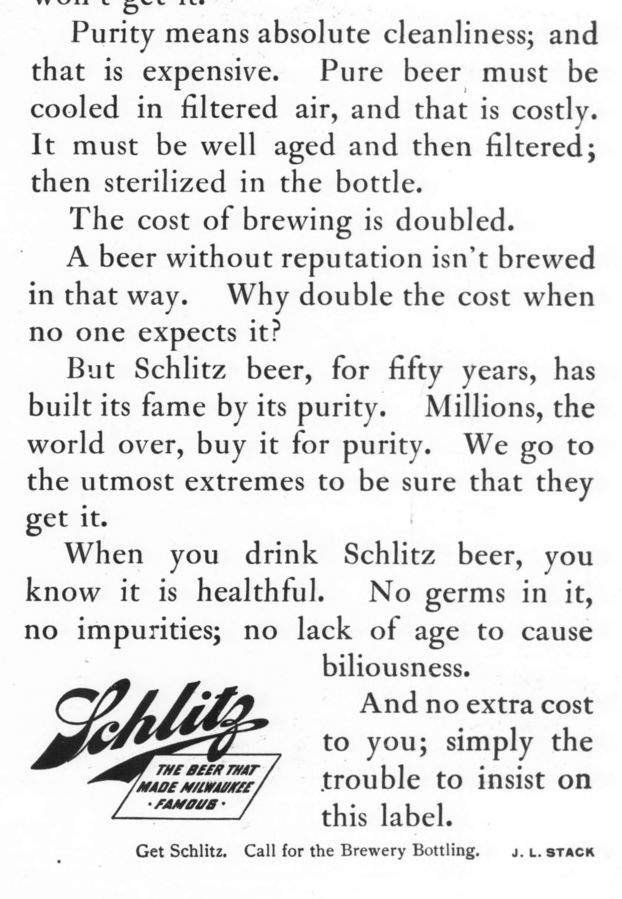
Harper's Weekly
get
Purity means absolute cleanliness; and
that is expensive.
Pure beer must be
cooled in filtered air, and that is costly.
It must be well aged and then filtered ;
then sterilized in the bottle.
The cost of brewing is doubled.
A beer without reputation isn’t brewed
in that way.
no one expects it?
But Schlitz beer,
built its fame by its p
Why double the cost when
for fifty years, has
urity. Millions, the
world over, buy it for purity. We go to
the utmost extremes
get at:
When
to be sure that they
you drink Schlitz beer, you
know it is healthful.
No germs in it,
no impurities; no lack of age to cause
Get Schlitz. Call for
biliousness.
And no extra cost
to you; simply the
trouble to insist on
this label.
the Brewery Bottling. J. L. STACK
{kind=link}
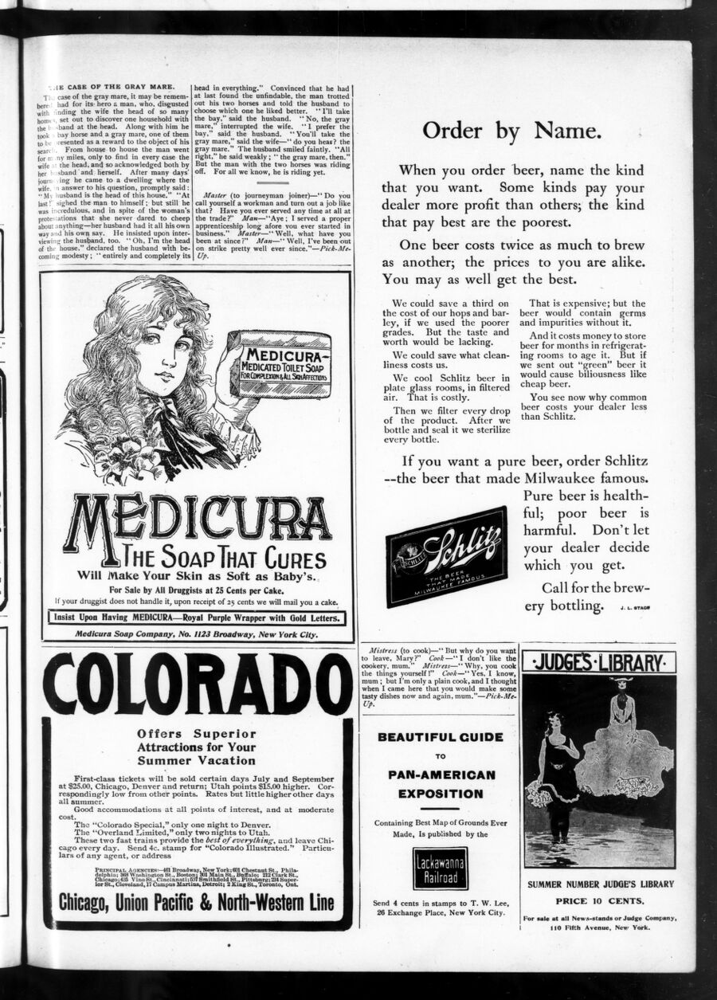
Judge
{kind=link}
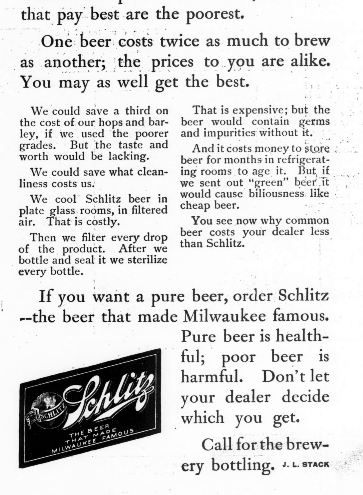
Harper's Weekly
that pay. best are the poorest.
One: beer. costs twice as much to brew
as another; the prices to you are alike.
You may as well get the best.
We could save a third on
the cost of our hops and barley, if we used the poorer
grades. But the taste and
worth would be lacking.
We could save what cleanliness costs us.
We cool Schlitz beer in
plate glass rooms, in filtered
air. That is costly.
Then we filter every drop
of the product. After we
bottle and seal it we sterilize
every bottle.
That is expensive; but the
beer would contain germs
and impurities without it.
And it costs money to store : |
beer for months in refrigerating rooms to age it. B
we sent out “green” beer it
would cause biliousness. like .
cheap beer. aia
You see now why common
beer costs your dealer less
than Schlitz.
If you want a pure beer, order Schlitz
--the beer that made Milwaukee famous.
Pure beer is healthful; poor beer is
harmful. Don’t let
your dealer decide
| which you get.
Call for the brewery bottling. J. L. STACK
But, if _.
{kind=link}
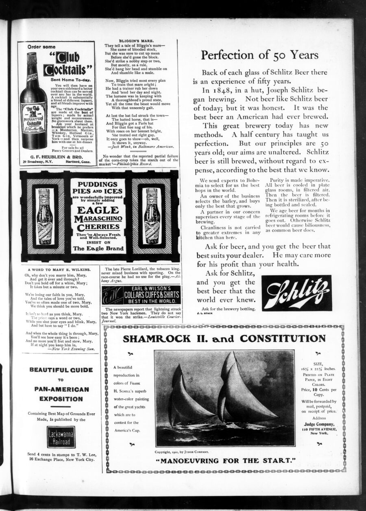
Judge
{kind=link}
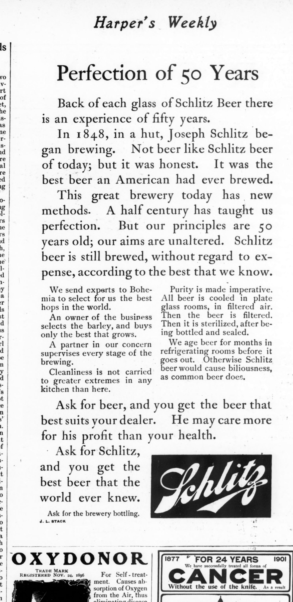
Harper's Weekly
two
art
of
the
as
fine
are
noone |
|
|
a
|
be
of |
a
Harper’s Weekly
Perfection of 50 Years
Back of each glass of Schlitz Beer there
is an experience of fifty years.
In 1848, in a hut, Joseph Schlitz beNot
gan brewing.
of today; but it was honest.
beer like Schlitz beer
It was the
best beer an American had ever brewed.
This great brewery today has new
methods.
perfection.
A half century has taught us
But our principles are 50
years old; our aims are unaltered. Schlitz
beer is still brewed, without regard to expense, according to the best that we know.
We send experts to Bohemia to select for us the best
hops in the world.
An owner of the business
selects the barley, and buys
only the best that grows.
A partner in our concern
supervises every stage of the
brewing.
Cleanliness is not carried
to greater extremes in any
kitchen than here.
Purity is made imperative.
All beer is cooled in plate
glass rooms, in filtered air.
Then the beer is filtered.
Then it is sterilized, after being bottled and sealed.
We age beer for months in
refrigerating rooms before it
goes out. Otherwise Schlitz
beer would cause biliousness,
as common beer does,
Ask for beer, and you get the beer that
best suits your dealer.
He may care more
for his profit than your health.
- Ask for Schlitz,
and you get the
best beer that the
world ever knew.
Ask for the brewery bottling.
d. L. STACK
OXYDONOR
TRADE MARK :
REGISTERED NOV. 24, 1896 For Self -treatwentaey ment. Causes ab-
§& sorption of Oxygen
F from the Air, thus
disease
i877 ~ FOR 24 YEARS
We have successfully treated all forms of
CER
Without the use of the knife. As a result
{kind=link}
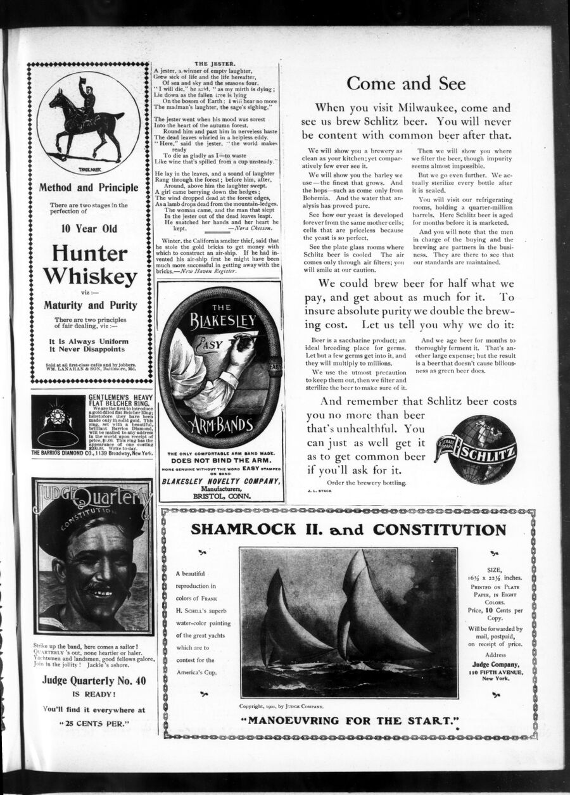
Judge
{kind=link}
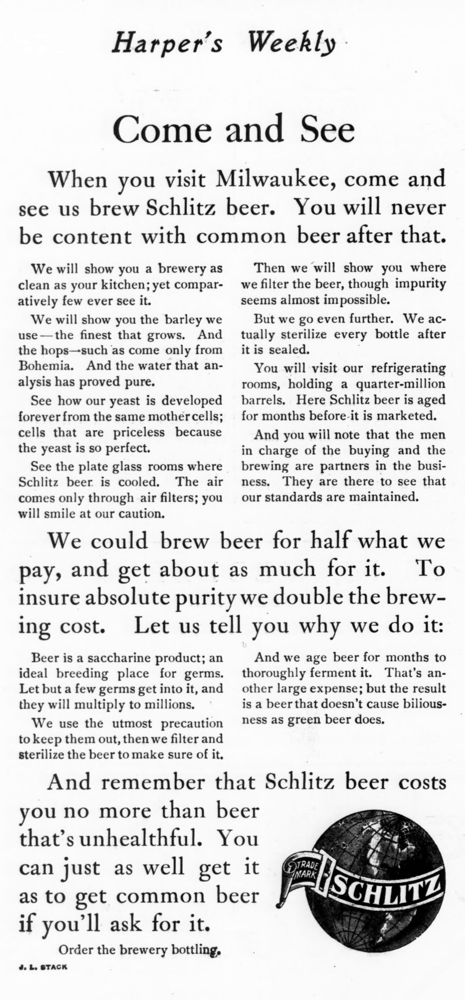
Harper's Weekly
Harper’s
Weekly -
Come and See
When you visit Milwaukee, come and
see us brew Schlitz beer. You will never
be content with common beer after that.
We will show you a brewery as
clean as your kitchen; yet comparatively few ever see it.
We will show you the barley we
use —the finest that grows. And
the hops—such as come only from
Bohemia. And the water that analysis has proved pure.
See how our yeast is developed
forever from the same mother cells;
cells that are priceless because
the yeast is so perfect.
See the plate glass rooms where
Schlitz beer is cooled. The air
comes only through air filters; you
will smile at our caution.
Then we will show you where
we filter the beer, though impurity
seems almost impossible.
But we go even further. We actually sterilize every bottle after
it is sealed.
You will visit our refrigerating
rooms, holding a quarter-million
barrels. Here Schlitz beer is aged
for months before-it is marketed.
And you will note that the men
in charge of the buying and the
brewing are partners in the business. They are there to see that
our standards are maintained.
We could brew beer for half what we
pay, and get about as much for it. To
insure absolute purity we double the brewing cost.
Beer is a saccharine product; an
ideal breeding place for germs.
Let but a few germs get into it, and
they will multiply to millions.
We use the utmost precaution
to keep them out, then we filter and
sterilize the beer to make sure of it,
Let us tell you why we do it:
And we age beer for months to
thoroughly ferment it. That’s another large expense; but the result
is a beer that doesn’t cause biliousness as green beer does.
And remember that Schlitz beer costs
you no more than beer
that’s unhealthful. You
can just as well get it
as to get common beer
if you'll ask for it.
Order the brewery bottling,
@. L. STACK
{kind=link}
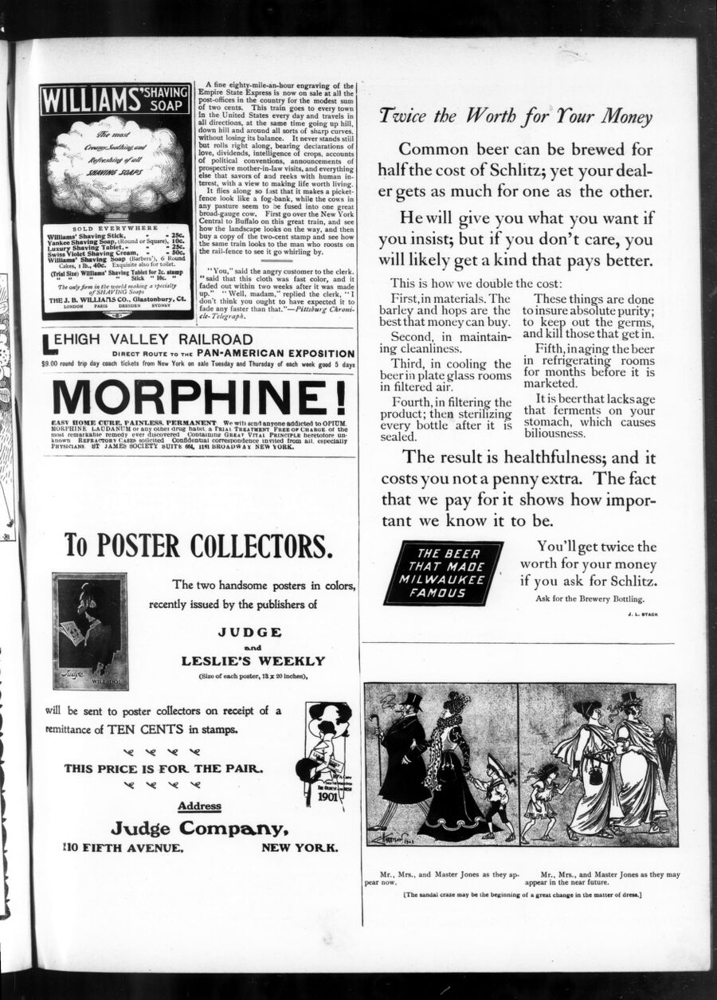
Judge
{kind=link}
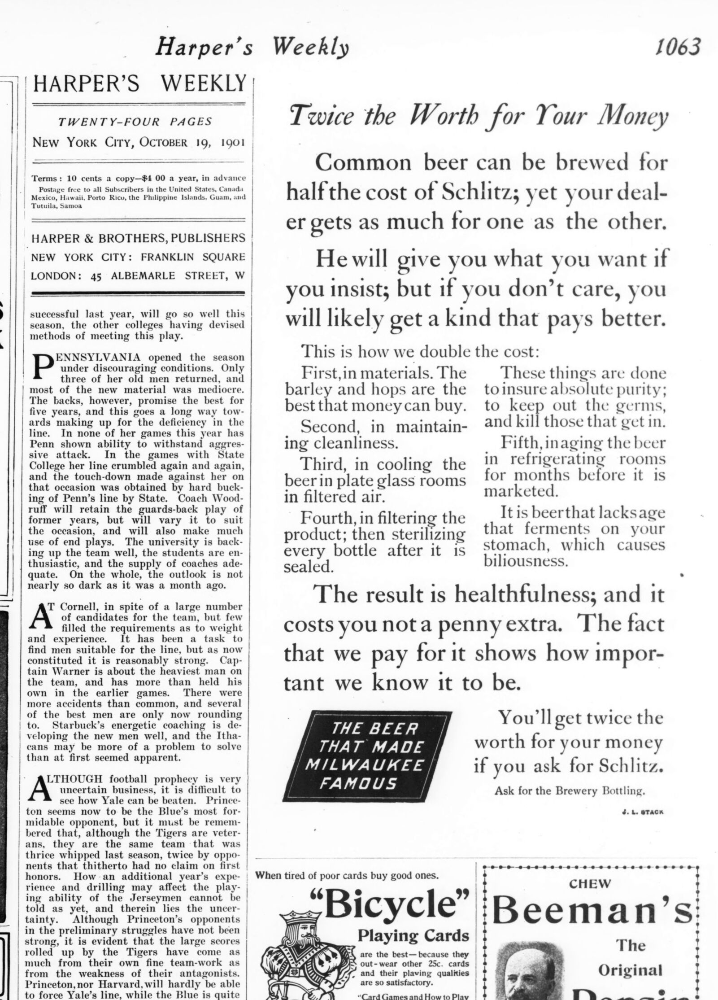
Harper's Weekly
-
|
| | TWENTY-FOUR PAGES
New York City, OCTOBER 19, 1901
Terms: 10 cents a copy—$4 00 a year, in advance
Postage free to all Subscribers in the United States, Canada |
Mexico, Hawaii, Porto Rico, the Philippine Islands, Guam, and
Toutuila, Samoa
HARPER & BROTHERS, PUBLISHERS |;
NEW YORK CITY: FRANKLIN SQUARE
LONDON: 45 ALBEMARLE STREET, W |
| successful last year, will go so well this
| season, the other colleges having devised
| methods of meeting this play.
| ENNSYLVANIA opened the season
| Pp under discouraging conditions. Only
three of her old men returned, and
most of the new material was mediocre.
The backs, however, promise the best for
five years, and this goes a long way towards making up for the deficiency in the
line. In none of her games this year has
Penn shown ability to withstand aggressive attack. In the games with State
College her line crumbled again and again,
and the touch-down made against her on
that occasion was obtained by hard bucking of Penn’s line by State. Coach Woodruff will retain the guards-back play of
former years, but will vary it to suit
the occasion, and will also make much
use of end plays. The university is backing up the team well, the students are enthusiastic, and the supply of coaches adequate. On the whole, the outlook is not
nearly so dark as it was a month ago.
ay
A of candidates for the team, but few
filled the requirements as to weight
and experience. It has been a task to
find men suitable for the line, but as now
constituted it is reasonably strong. Captain Warner is about the heaviest man on
the team, and has more than held his
own in the earlier games. There were
more accidents than common, and several
of the best men are only now rounding
| to. Starbuck’s energetic coaching is developing the new men well, and the Itha-
| cans may be more of a problem to solve
than at first seemed apparent.
Cornell, in spite of a large number
uncertain business, it is difficult to
PrinceAM incerta football prophecy is very
H see how Yale can be beaten.
ton seems now to be the Blue’s most for- |
| midable opponent, but it must be remem-
| bered that, although the Tigers are veter-
| thrice whipped last season, twice by oppo- |
nents that thitherto had no claim on first |
| honors. How-an additional year’s experience and drilling may affect the playing ability of the Jerseymen cannot be
told as yet, and therein lies the uncertainty. Although Princeton’s opponents
in the preliminary struggles have not been
strong, it is evident that the large scores
rolled up by the Tigers have come as
much from their own fine team-work as
from the weakness of their antagonists.
Princeton,nor Harvard, will hardly be able
to force Yale’s line, while the Blue is quite
|
| ans, they are the same team that was |
|
|
|
Harper’s Weekly
/'HARPER’S WEEKLY |
1063
Twice the Worth for Your Money
Common beer can be brewed tor
half the cost of Schlitz; yet your dealer gets as much tor one as the other.
Hewill give you what you want if
you insist; but if you don’t care, you
will likely get a kind that pays better.
This is how we double the cost:
First,in materials. The
barley and hops are the
best that money can buy.
_ Second, in maintaining cleanliness.
Third, in cooling the
beer in plate glass rooms
in filtered air.
Fourth, in filtering the
product; then sterilizing
every bottle after it is
sealed.
These things are done
toinsure absolute purity;
to keep out the germs,
and kill those that get in.
Fifth, inaging the beer
in refrigerating rooms
for months before it is
marketed.
It is beerthat lacksage
that ferments on your
stomach, which causes
biliousness.
The result is healthfulness; and it
costs you nota penny extra. The fact
that we pay for it shows how important we know it to be.
) THE BEER
THAT MADE /|
MILWAUKEE /
FAMOUS |
When tired of poor cards buy good ones.
Playing Cards
Ly <
"she and their plaving qualities
ay are so satisfactory.
:\
o-e-e-e-e-e-¢
|
|
|
|
|
|
|
|
me are the best— because they |
out-wear other 25c. cards |
“Card Games and Howto Play |
You'll get twice the
worth for your money
if you ask for Schlitz.
Ask for the Brewery Bottling.
é. &. STACK
-@-@-@- eee 88 eB eB eC SOC OBE OHH OS
CHEW
Beeman’s
The
Original
© @-@-¢-@@¢ © ¢«# @-@-«@-@6<@ @ ¢
{kind=link}
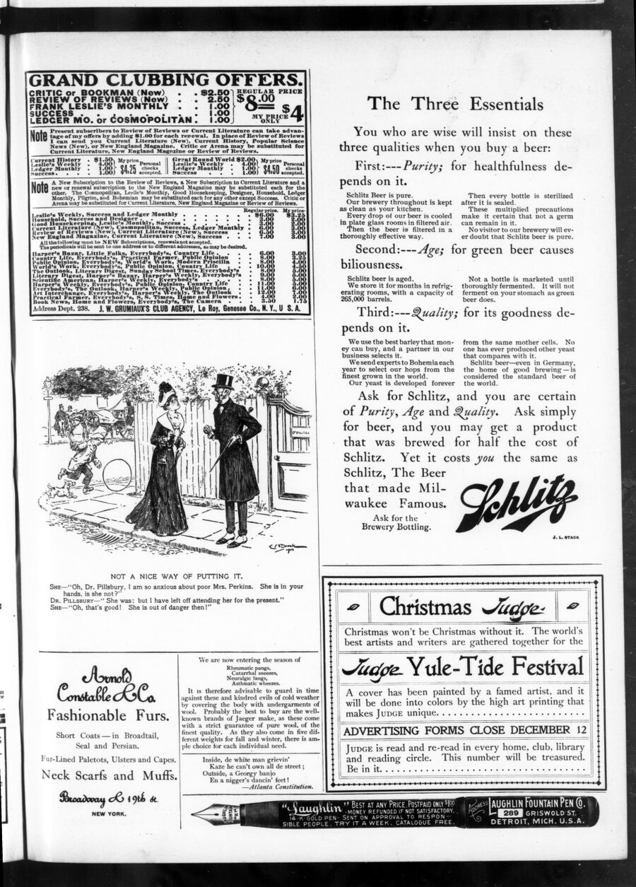
Judge
{kind=link}
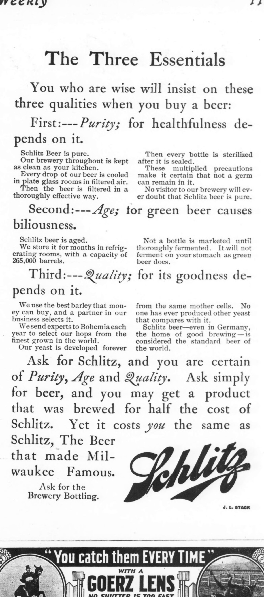
Harper's Weekly
Weekly
The Three Essentials
You who are wise will insist on these
three qualities when you buy a beer:
First:--- Purity; for healthfulness depends on it.
Schlitz Beer is pure.
Our brewery throughout is kept
as clean as your kitchen.
_ Every drop of our beer is cooled
in plate glass rooms in filtered air.
Then the beer is filtered in a
thoroughly effective way.
Then every bottle is sterilized
after it is sealed.
These multiplied precautions
make it certain that not a germ
can remain in it.
No visitor to our brewery will ever doubt that Schlitz beer is pure.
Second:---4ge; tor green beer causes
biliousness.
Schlitz beer is aged.
We store it for months in refrigerating rooms, with a capacity of
265,000 barrels.
Third:--- Quality;
pends on it.
We use the best barley that money can buy, and a partner in our
business selects it.
Wesend experts to Bohemia each
year to select our hops from the
finest grown in the world.
Our yeast is developed forever
Not a bottle is marketed until
thoroughly fermented. It-will not
ferment on your stomach as green
beer does.
for its goodness defrom the same mother cells. No
one has ever produced other yeast
that compares with it.
Schlitz beer—even in Germany,
the home of good brewing —is
considered the standard beer of
the world.
Ask for Schlitz, and you are certain
of Purity, Age and Quality.
Ask simply
for beer, and you may get a product
that was brewed for half the cost of
Schlitz.
Schlitz, The Beer
that made Milwaukee Famous.
Ask for the
Brewery Bottling.
Yet it costs you the same as
d. L. STACK
catch them EVERY TIME).
WITH A
GOERZ LENS
| NO SHUTTER IS TOO FAST
{kind=link}
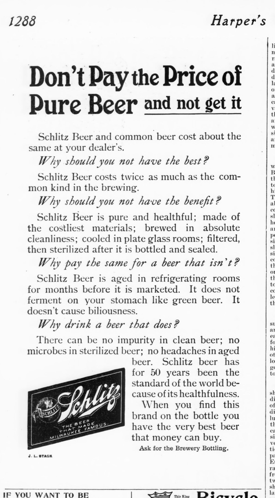
Harper's Weekly
1288 Harper's
Don’t Pay the Price of
Pure Beer and not get it
Schlitz Beer and common beer cost about the
same at your dealer's.
Why should you not have the best?
Schlitz Beer costs twice as much as the common kind in the brewing.
Why should you not have the benefit?
Schlitz Beer is pure and healthful; made of
the costliest materials; brewed in absolute
cleanliness; cooled in plate glass rooms; filtered,
then sterilized after it is bottled and sealed.
Why pay the same for a beer that isn’t?
Schlitz Beer is aged in refrigerating rooms
for months before it is marketed. It does not
ferment on your stomach like green beer. It
doesn’t cause biliousness.
Why drink a beer that does?
There can be no impurity in clean beer; no
microbes in sterilized beer; no headaches in aged
beer. Schlitz beer has
for 50 years been the
standard of the world because ofits healthfulness.
When you find this
brand on the bottle you
have the very best beer
that money can buy.
Ask for the Brewery Bottling.
dé. L. STACK
IF YOU WANT TO BE
This King
of
a
an
to
are
the
on
the
the
ger
to
of
the
can
six
{kind=link}
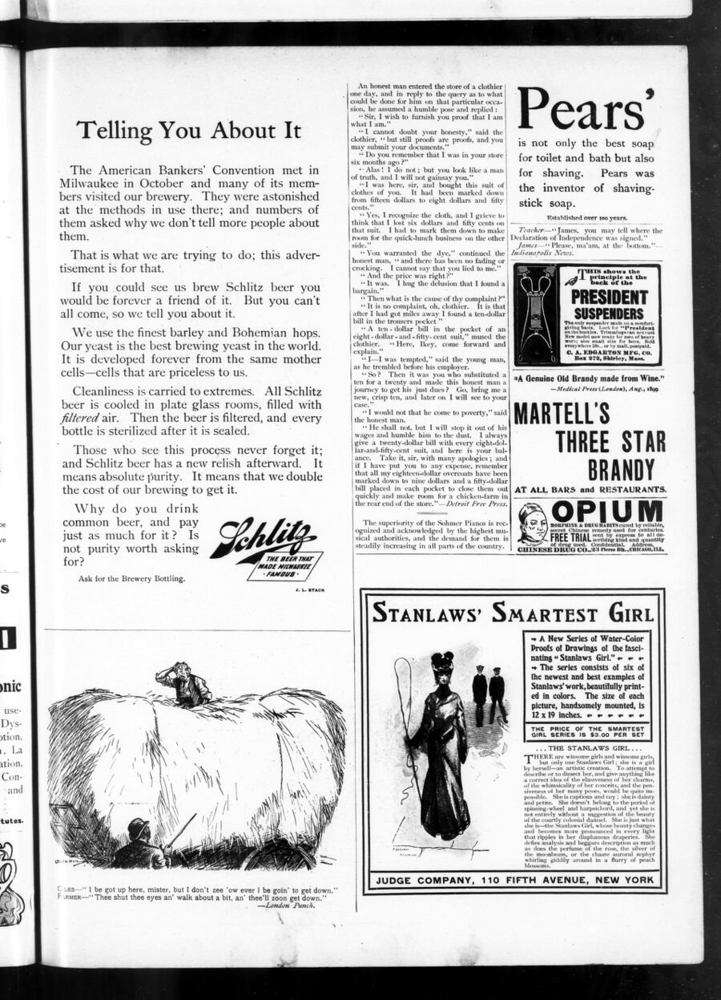
Judge
{kind=link}
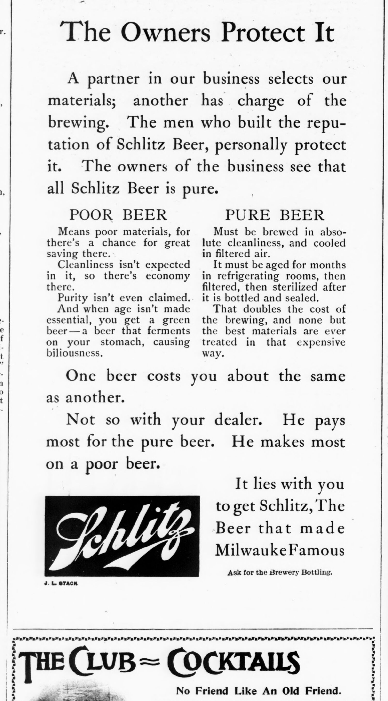
Harper's Weekly
”
The Owners Protect It
A partner in our business selects our
materials;
another has charge of the
brewing. The men who built the reputation of Schlitz Beer, personally protect
it.
The owners of the business see that
all Schlitz Beer is pure.
POOR BEER
Means poor materials, for
there’s a chance for great
saving there.
Cleanliness isn’t expected
in it, so there’s economy
there.
Purity isn’t even claimed.
And when age isn’t made
essential, you get a green
beer—a beer that ferments
on your stomach, causing
biliousness.
PURE BEER
Must be brewed in absolute cleanliness, and cooled
in filtered air.
It must be aged for months
in refrigerating rooms, then
filtered, then sterilized after
it is bottled and sealed.
That doubles the cost of
the brewing, and none but
the best materials are ever
treated in that expensive
way.
One beer costs you about the same
as another.
Not so with your dealer.
most for the pure beer.
on a poor beer.
3. L. STACK
He pays
He makes most
It lies with you
to get Schlitz, The
Beer that made
MilwaukeFamous
Ask for the Brewery Bottling.
Pua PP
= Sa No Friend Like An Old Friend.
eA a wns
RR RE
{kind=link}
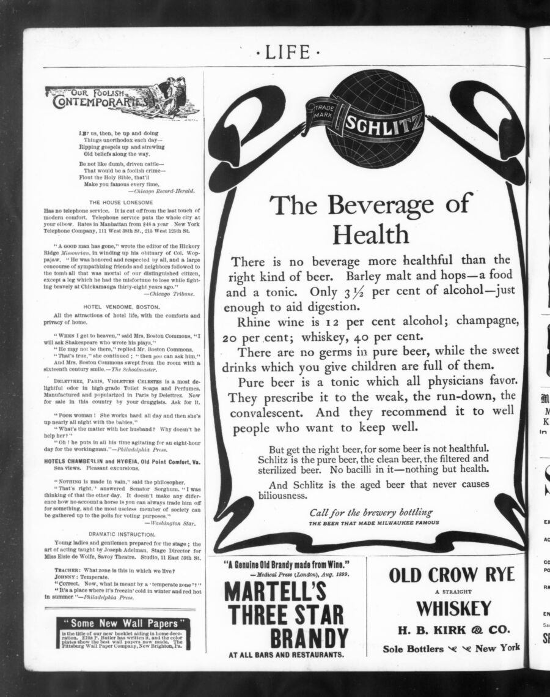
Life
{kind=link}
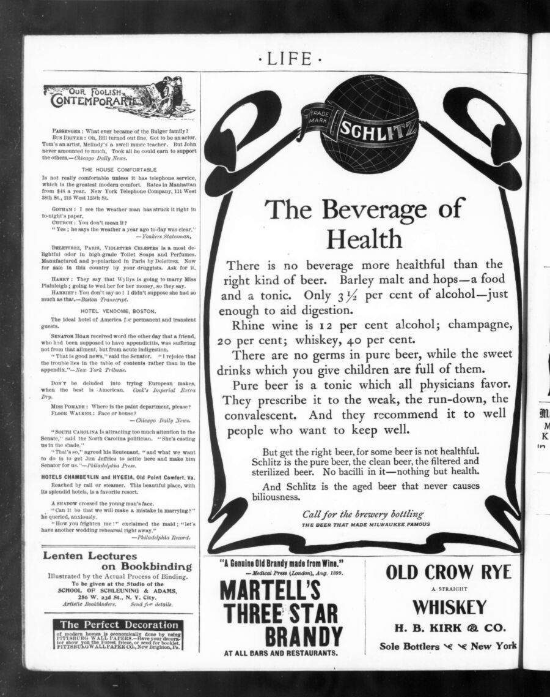
Life
{kind=link}
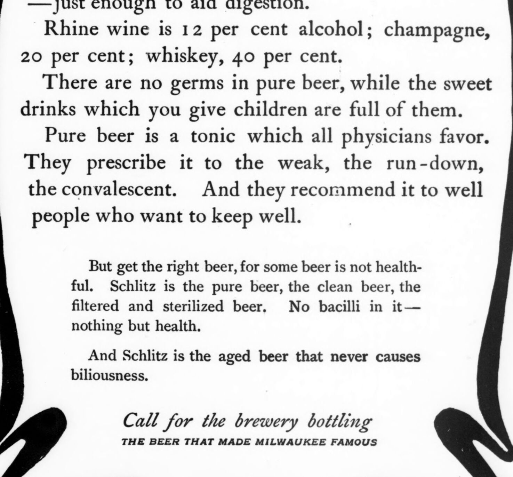
Harper's Weekly
—just enough to aid digestion.
Rhine wine is 12 per cent alcohol; champagne,
20 per cent; whiskey, 40 per cent.
There are no germs in pure beer, while
drinks which you give children are full of
the sweet
them.
Pure beer is a tonic which all physicians favor.
They prescribe it to the weak, the run-down,
the convalescent. And they recommend i
people who want to keep well.
t to well
But get the right beer, for some beer is not healthful. Schlitz is the pure beer, the clean beer, the
filtered and sterilized beer.
nothing but health.
No bacilli in it—
And Schlitz is the aged beer that never causes
biliousness.
Call for the brewery bottling
THE BEER THAT MADE MILWAUKEE FAMOUS
{kind=link}
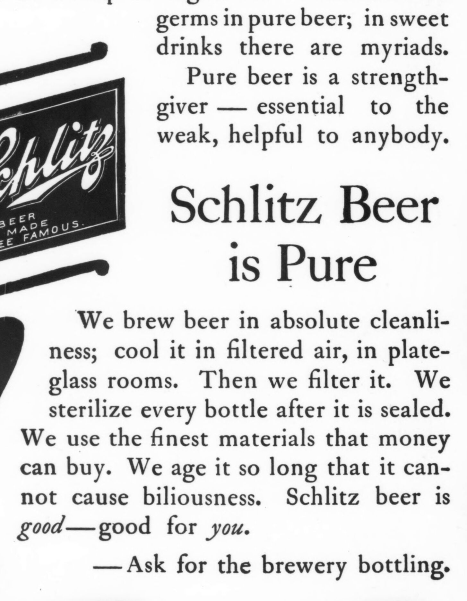
Life
germs in pure beer; in sweet
drinks there are myriads.
Pure beer is a strengthgiver — essential to the
weak, helpful to anybody.
Schlitz, Beer
is Pure
We brew beer in absolute cleanliness; cool it in filtered air, in plateglass rooms. Then we filter it. We
sterilize every bottle after it is sealed.
We use the finest materials that money
can buy. We age it so long that it cannot cause biliousness. Schlitz beer is
good—good for you.
—Ask for the brewery bottling.
{kind=link}
Life
{kind=link}
Harper's Weekly
Barley in it for food; Hops for a tonic;
just enough Alcohol (3% per cent) to
be a help to digestion. ‘There are no
germs in pure beer; in sweet drinks
there are myriads.
Pure beer is a strengthgiver— essential to the weak,
helpful to anybody.
Schlitz Beer
is Pure
We brew beer in absolute cleanliness; cool it in filtered air, in plateglass rooms. Then we filter it. We
sterilize every bottle after it is sealed.
We use the finest materials that
money can buy. We age it so long
that it cannot cause biliousness. Schlitz
beer is good— good for you.
—Ask for the brewery bottling.
{kind=link}
Life
Purity's 7 Points
These are the seven points that make a beer healthful. A beer that has them is both good and good for you. It is a tonic and a food. It is the beverage of health. Omit the beer without them. And remember that Schlitz beer costs just the same as common beer. You'll get it if you ask for it. But if you don't care, your dealer may give you a beer that costs less than half so much to brew. — 1. We use the best barley that money can buy. We get our hops from Bohemia. A partner in our business selects all materials. 2. Our yeast is forever the same. 3. Cleanliness in our brewery is carried to utmost extremes. 4. We cool Schlitz beer in a plate glass room, in filtered air, to keep germs away from it. 5. We age it for months, until it is well fermented. It is the “green beer” that causes biliousness. 6. Every drop of Schlitz beer is thoroughly filtered. 7. After it is bottled and sealed, every bottle is sterilized.
{kind=link}
Harper's Weekly
Purity’s 7 Points
These are the seven , 1
points that make a beer
healthful. We use the best barley that money can buy.
We get our hops from
Bohemia. A partner
in our business selects
all materials.
2
Our yeast is
foreverthe same
and it gives to
Schlitzthe flavor
no other’ beer
can have.
3
Cleanliness in
our brewery is
carried to utmost extremes.
A beer that has them
is both good and good
for you.
THE BEER /
THAT MADE /
MILWAUKEE /
FAMOUS. /
We cool Schlitz beer
in a plate glass room,
in filtered air, to keep
germs away from it.
It is a tonic anda food.
It is the beverage of
health.
Omit the. beer without 5
them. We age it for months,
until it is well fermented. It is the “green
beer” that causes biliousness.
And remember that
Schlitz beer costs just the
same as common beer.
You'll get it if you ask
for it.
But if you don’t care,
your dealer may give you
a beer that costs less than
half so much to brew.
Ask for the brewery
bottling.
Every drop of Schlitz
is thoroughly filtered.
7
After it is bottled and
sealed, every bottle is
sterilized.
{kind=link}
Life
{kind=link}
Life
{kind=link}
Life
{kind=link}
Life
the users never see it brewed
Any water will do. No air is too
impure for the cooling
No filtering, no sterilizing; almost
no ageing, for ageing ties up money.
What is the use of expense and
care when there is no reputation to
defend ?—
When few people who drink it know
even the name of the maker.
Schlitz is a pure beer, famous for fifty
To maintain its standard, we double the necessary cost of our brewing.
tered air, in a plate glass room.
The product must be aged for
months, until thoroughly fermented,
else it causes biliousness.
The beer must be filtered, then
sterilized in the bott!
You’re always welcome to that brew:
ery for the owners are proud of it.
And the size of it proves the eventual
success of worth.
years.
Don’t you prefer a pure
beer, a good beer, a healthful beer, when it costs
no more than the common?
Ask for the brewery bottling.
{kind=link}
Harper's Weekly
brewing may be done under any
sort of surroundings.
Cleanliness is not important, for
the users never see it brewed.
Any water will do. - No air is too
impure for the cooling.
No filtering, no sterilizing; almost
no ageing, for ageing ties up money.
What is the use of expense and
care when there is no reputation to
defend ?—
When few people who drink it know
even the name of the maker.
Schlitz is a pure beer, famous for fifty years.
To maintain its standard, we double the necessary cost of our brewing. Don’t you prefer a pure
beer, a good beer, a healthful beer, when it costs
no more than the common?
Ask for the brewery bottling.
The brewery must be as clean as
your kitchen; the utensils as clean.
The cooling must be done in filtered air, in a plate glass room.
The product must be aged for
months, until thoroughly fermented,
else it causes biliousness,
The beer must be filtered, then
sterilized in the bottle.
You’re always welcome to that brewery for the owners are proud of it.
And the size of it proves the eventual
success of worth.
{kind=link}
Life
{kind=link}
Life
{kind=link}
Harper's Weekly
it is good.
BUT—the beer must be pure.
Impurity means germs, and germs multiply rapidly in any
saccharine product like beer.
And the beer must be old.
Age means perfect fermentation. Without it, beer ferments
on the stomach, causing biliousness.
Schlitz beer is brewed in absolute Not a germ can exist in it.
cleanliness. These costly precautions have
It is cooled in a plate glass room, made Schlitz the standard for purity
in filtered air. wherever beer is known.
Then it is filtered; then aged for You can get it just as well as commonths in refrigerating rooms. After mon beer if you ask for it.
it is bottled and sealed every bottle ———
is sterilized. Ask for the Brewery Bottling.
{kind=link}
Life
unhealthful, because beer is saccharine. Impurities multiply in it,
And a “green beer”— insufficiently aged
— causes biliousness. But a pure beer—well
aged—is the beverage of health.
Schlitz beer costs twice what common beer costs in the brewing. One-half pays
for the product; the other half for its purity.
One-half is spent in cleanliness, in filtering
even the air that touches it, in filtering the
beer, in sterilizing every bottle. And it pays
the cost of aging the beer’ for months before
we deliver it.
If you ask for Schlitz you get purity and age,
yet pay no more than beer costs without them.
Ask for the Brewery Bottling.
{kind=link}
Life
{kind=link}
Harper's Weekly
get a pure
Even a touch of impurity makes beer
unhealthful, because beer is saccharine. Im.
purities multiply in it.
And a “green beer”— insufhciently aged
— causes biliousness. But a pure beer—well
aged—is the beverage of health.
Schlitz beer costs twice what common beer costs in the brewing. One-half pays
for the product; the other half for its purity.
One-half is spent in cleanliness, in filtering
even the air that touches it, in filtering the
beer, in sterilizing every bottle. And it pays
the cost of aging the beer for months before
we deliver it.
If you ask for Schlitz you get purity and age,
yet pay no more than beer costs without them.
Ask for the Brewery Bottling.
{kind=link}
Life
———
Purity is Free
Schlitz beer costs the same as common beer, so
that purity is free to you.
Yet purity costs us as much as the beer itself.
It requires absolute cleanliness. It compels us
to filter even the air that cools the beer. Then
we must carefully filter the beer, and sterilize
every bottle after it is sealed.
And the beer must be aged for months
in a temperature of 34 degrees, for otherwise the beer would cause biliousness.
Don’t let your dealer decide which beer
you shall drink, for he makes most on the
common kinds.
Ask for Schlitz, for purity means healthfulness, yet that purity is free.
Not a beverage known to man is more healthful
than beer, if it’s pure.
Barley-malt and hops—a halfdigested food and a tonic.
Your doctor says the weak must have
it. Why not the strong ?.
But don’t drink a germ-laden beer,
when Schlitz is sold everywhere.
Ask for the brewery
bottling.
{kind=link}
Life
{kind=link}
Harper's Weekly
“HARPER’S
WEEKLY
_—_
Purity is Free
Schlitz beer costs the same as common beer, so
that purity is free to you.
Yet purity costs us as much as the beer itself.
It requires absolute cleanliness. It compels us
to filter even the air that cools the beer.
we must carefully filter the beer, and sterilize
every bottle after it is sealed.
And the beer must be aged for months
in a temperature of 34 degrees, for otherwise the beer would cause biliousness.
common kinds.
Don’t let your dealer decide which beer
you shall drink, for he makes most on the
Ask for Schlitz, for purity means healthfulness, yet that purity is free.
than beer, if it’s pure.
Barley-malt and hops—a halfdigested food and a tonic.
Your doctor says the weak must have
it. Why not the strong?
But don’t drink a germ-laden beer,
when Schlitz is sold everywhere.
Ask for the brewery
bottling.
Not a beverage known to man is more healthful
{kind=link}
Life
{kind=link}
Life
{kind=link}
Harper's Weekly
ciently aged, half-fermented -- ferments
on the stomach, causing biliousness and
headaches.
Schlitz Beer is well aged.
There is beer that’s not pure--- not free
from bacilli.
But Schlitz Beer is pure.
None but the costliest materials
go into Schlitz Beer—the best of
barley, hops and yeast. A partner
in our business selects them.
We spend more on cleanliness
alone than the whole cost of brewing without it.
We cool Schlitz Beer in plate sterilize every bottle after it is
glass rooms, and filter all the air sealed. Sterilized beer can’t have
that touches it.
Yet
Beer Is flealthful
But a “green beer’--- beer insufhiIt’s not good for you.
That’s an extreme precaution.
We age it for months, at a temperature of 34 degrees, before we
market it.
' That’s a heavy expense.
Then we filter the beer, then
germs in it.
Schlitz Beer --- brewed with all these
precautions, that double the
cost of the brewing ---
costs you no more than
common beer, if you
will ask for it.
Ask for the brewery bottling.
{kind=link}
Life
{kind=link}
Judge
{kind=link}
Life
{kind=link}
Harper's Weekly
Can anyone suppose that
it is our good
than
ne —rather
your good —that
we serve by it?
We do it'to attain absolute
purity —to avoid the remotest possibility of germs— to make Schlitz Beer healthful
— to escape the cause of biliousness ; the lack of
age and proper fermentation.
Why accept a common
beer —brewed without
any of these precautions
—when Schlitz Beer
costs no more?
e®
That Made wi"
Your dealer may prefer to furnish a beer that
pays a little more profit; but does it pay you to
permit it? Isn’t pure beer— Schlitz Beer —
worth asking for? Ask for the Brewery Bottling,
{kind=link}
Life
Over One Million Barrels
of Schlitz Beer Sold in One Year
This makes us, by over
one hundred thousand barrels,
Milwaukee’s largest brewers,
and Milwaukee, as you know, is
the most renowned brewing
center in the world.
This is How It Was Done
For fifty years we have doubled We age ourbeer formonths before
the necessary cost of our brew- we market it. That is why Schlitz
ing that Schlitz Beer might be pure. Beer doesn’t cause biliousness.
We cool Schtitz Beer in plate We filter Schlitz Beer through
glass rooms, and all the air that wonderful filters, then sterilize
touches it comes through filters. every bottle after it is sealed.
The Beer that Made Milwaukee Famous
{kind=link}
Harper's Weekly
DURITY
Means
Purity requires pure water.
We get it from six wells, driven downto rock. No
purer water flows anywhere in the world.
Purity necessitates pure air.
All the air that touches Schlitz Beer, after the
boiling process, passes first through an air filter.
Pure beer must be filtered.
Every drop of Schlitz Beer is filtered by machin
ery through masses of white wood pulp.
Pure beer contains no germs.
Schlitz Beer is sterilized after it is bottled and
sealed, by a process invented by M. Pasteur, of
France. It requires one and one-half hours.
That’s how we double the necessary
cost of our brewing. We do it to
make purity certain—to make Schlitz
Beer healthful.
Will you drink common beer, and
pay just as much for it, when Schlitz
Beer can be had for the asking.
Ask for the Brewery bottling.
{kind=link}
Printers' Ink
No Cure, No Pay — reproduces 'How a Penny May Cure a Sick Friend' ad copy
14
NO CURE, NO PAY.
Recently a rather remarkable
page advertisement appeared in
Chicago Sunday papers paid for by
Dr. Shoop of proprietary medicine
fame. “Here are the names of
1,000 Chicago people whom I have
cured. Probably the names of
some of your friends are among
them,” said the introduction. The
address of each patient was also
given and the statement made that
while curing these 1,000 people in
Chicago the doctor had failed to
cure seventeen. It was strong advertising.
A Printers’ INK reporter sent
to Dr. Shoop’s headquarters, Racine,
Wis., found a six story building
with a recent six story addition
occupied by this business. Dr.
Shoop, himself, minus the beard
he wears in his advertising was
found behind a battery of fifty or
seventy*five stenographers.
“There is an impression, Doctor,”
said the reporter, “that your
send no money until cured plan
is very successful?”
“Well, it is too early to say definitely
concerning that. You know
this plan is only a year or two old.
I have been in the business fifteen
years. There are many objections
to our present offer. We have to
rely on what people hundreds of
miles away tell us and the adjustments
with druggists are something
unheard of. We have to
have a separate department for this
purpose alone.”
‘A fair sample of the advertising
is as follows:
HOW A PENNY
May Cure a Sick Friend.
Simply write a postal card telling me
a needs help. Tell me which book to
sen
Spend but that penny to aid your sick
friend, then I will do this:
I will mail him an order—good at an any
drug store—for six bottles Dr. Shoop’s
Restorative. He may take it a month
at my risk. If it succeeds, the cost is
$5.50. If it fails, I will pay the druggist
myself.
That may seem too fair to be possible
—but try me. have furnished my
treatment on just those terms in hundreds
of thousands of difficult cases.
My records show that 39 out of each
40 have paid, and paid gladly, because
they got well.
I willingly pay for the rest.
The remedy that stands that test is
a result of a lifetime’s work. It is the
only remedy yet made that strengthens
PRINTERS’ INK.
the inside nerves. My way alone brings
back the nerve power which operates
the vital organs. There is no other way
to make weak organs well.
You will know it when you read my
k.
Book No, 1 on D;
Simply state Book No. 2 on th t.
which book you m | Book Ro. 3 on the Kidneys,
want, he Book No. 4 for Wenn
bul, Racine, Book 6 for Men (sealed).
Mild cases, not diet are 9
cured by one or two bottles. At ali
druggists.
“The presumption is that if the
patient pays, he has been cured?”
asked the reporter.
“Yes, but they do not always pay
when cured. Sometimes a man
will get six bottles from one druggist
and his wife six more from
another simply for the , Purpose of
getting it for nothing.”
“Do you find that the use of
your own picture in the advertising
increases sales?”
“TI don’t know. I run my advertisements
both ways. There is a
great deal about this advertising
business that none.of us know. We
use dailies, weeklies and magazines
of. general circulation. Our contracts
expire in the spring and I
am in doubt whether to keep up
this line or not.”
The Shoop advertising gets about
as close to the reader as any printed
message can. To a sick man
it must be peculiarly attractive. No
money down, no cure no pay, only
a month’s time to be cured.
Still Dr. Shoop says that there
are serious disadvantages about
this offer, and he does not know
whether ‘he will continue the plan
after this spring or not.
CATCH LINE OF WELL-KNOWN
AD ILLUSTRATED.
\I
=
q nace
“ALWAYS SOLD IN A YELLOW BOx.”—
THE PROPHYLACTIC TOOTH BRUSH, FLORENCE
MANUFACTURING CO.
{kind=link}
Judge
{kind=link}
Life
{kind=link}
Judge
{kind=link}
Life
{kind=link}
Harper's Weekly
Our Costly
Brewing
The water used in SCHLITZ Beer comes
from six wells, driven down to rock.
The barley is the finest grown, selected
personally by a partner in our concern.
The hops come
mostly from Bohemia,
and cost twice what common hops cost.
Every process of
the brewing is in personal charge of two of the brothers who
own the business.
All the air that touches SCHLITZ Beer is
filtered.
Every drop of SCHLITZ Beer is
filtered through masses of white wood pulp.
Every bottle is cleaned by machinery four
times before using.
After the bottle is filled and sealed, it is sterilized for 1! hours by
Common beer can_ be
the process of M. Pasteur.
brewed for half the cost of
SCH LITZ; but our extra cost is all spent to insure absolute
purity. Yet common beer and SCHLITZ Beer cost you
the same.
Why not get the best for your money?
Ask for the Brewery Bottling.
{kind=link}
Harper's Weekly
Means
Purity requires pure water.
We get it from six wells, driven down to rock. No purer
water flows anywhere in the world.
Purity necessitates pure air.
All the air that touches Schlitz Beer, after the boiling process, passes first through an air filter.
Pure beer must be filtered.
Every drop of Schlitz beer is filtered by machinery
through masses of white wood pulp.
Pure beer contains no germs.
Schlitz Beer is sterilized after it is bottled and sealed,
by a process invented by M. Pasteur, of France. It
requires one and one-half hours.
That’s how we double the necessary cost
of our brewing. We do it to make purity
certain —to make Schlitz Beer healthful.
Will you drink common beer, and pay just
as much for it, when Schlitz Beer can
be had for the asking.
Ask for the Brewery Bottling.
”
{kind=link}
Life
{kind=link}
Harper's Weekly
Means
Purity requires pure water.
We get it from six wells, driven down to rock. No purer
water flows anywhere in the world.
Purity necessitates pure air.
All the air that touches Schlitz Beer, after the boiling process, passes first through an air filter.
Pure beer must be filtered.
Every drop of Schlitz beer is filtered by machinery.
through masses of white wood pulp.
Pure beer contains no germs.
Schlitz Beer is sterilized after it is bottled and sealed,
by a process invented by M. Pasteur, of France. It
requires one and one-half hours.
That’s how we double the necessary cost
of our brewing. We do it to make purity
certain —to make Schlitz Beer healthful.
Will you drink common beer, and pay just
as much for it, when Schlitz Beer can
be had for the asking.
Ask for the Brewery Bottling.
{kind=link}
PřÍTel Lidu
Liquozone display ad (Czech-language, Pritel Lidu)
{kind=link}
Life
{kind=link}
Judge
{kind=link}
Life
Those are sales of Schlitz Beer
makin it the leader of all Milwaukee beers b far.
>
That’s a result of maintaining absolute
purity. We doubled the necessary cost of our
brewing to have Schlitz Beer right.
The Result Is
A Million Barrels a Year
We have used the best materials —the finest barley
—paid as high as twice what we need pay for hops.
We bored six wells to rock to get pure water.
We kept our brewing as clean as your cooking.
The Result Is
A Million Barrels a Year
We filtered all the air that touched the beer.
We filtered the beer through white wood pulp.
We aged it until it could not cause biliousness.
We sterilized every bottle after it was sealed.
The Result Is
A Million Barrels a Year
Isn’t Schlitz Beer —pure peer—worth
asking for, when the cost is the
Same as of common beer?
{kind=link}
Harper's Weekly
Over
a Million
Barrels a Year
Those are sales of Schlitz Beer
making it the leader of all Milwaukee beers, by far.
That’s a result of maintaining absolute
purity. We doubled the necessary cost of our
brewing to have Schlitz Beer right.
The Result Is
A Million Barrels a Year
We have used the best materials —the finest barley
—paid as high as twice what we need pay for hops.
We bored six wells to rock to get pure water.
We kept our brewing as clean as your cooking.
The Result Is
A Million Barrels a Year
We filtered all the air that touched the beer.
We filtered the beer through white wood pulp.
We aged it until it could not cause biliousness.
We sterilized every bottle after it was sealed.
The Result Is
A Million Barrels a Year
Isn’t Schlitz Beer —pure beer—worth
asking for, when the cost is the
same as of common beer?
Ask for the Brewery Bottling.
{kind=link}
Life
{kind=link}
Harper's Weekly
0 9-
| THE BEER
| THAT MADE
MILWAUKEE
FAMOUS
RG RET TST TPIT
More and More
People are
Demanding Pure
Beer
During 1902 the sales of Schlitz
Beer exceeded the year before by
132,916 barrels. That’s the largest
increase shown by any brewery in
the world.
This Year We
Want You
We will give you a beer made from
the best materials grown.
We will brew it in absolute cleanliness.
We will get our water from six
wells, bored to rock.
We will filter all the air that
touches it.
We will age it for months, so it
cannot cause biliousness.
We will sterilize every bottle after
it is sealed.
We will double, in these ways,
the necessary cost of our brewing.
Yet Schlitz Beer shall cost you
just what the common beer costs.
Will you try it?
Ask for the Brewery Bottling
{kind=link}
Life
{kind=link}
Harper's Weekly
More and More
People are
Demanding Pure
Beer
132,916 barrels. That’s the largest
increase shown by any brewery in
the world.
This Year We
Want You
We will give you a beer made from
the best materials grown.
We will brew it in absolute cleanliness.
We will get our water from six
wells, bored to rock.
We will filter all the air that
touches it.
We will age it for months, so it
cannot cause biliousness.
We will sterilize every bottle after
it is sealed.
During 1902 the sales of Schlitz |
Beer exceeded the year before by |
|
We will double, in these ways,
the necessary cost of our brewing.
Yet Schlitz Beer shall cost you
just what the common beer costs.
Will you try it?
Ask for the Brewery Bottling
{kind=link}
Life
{kind=link}
Life
{kind=link}
Harper's Weekly
HARPER’S WEEKLY
The Water Used
in Schlitz Beer
comes from
six wells
bored to rock
.
We are on the shore of Lake
Michigan, yet we go into the earth
to get water that is absolutely pure.
And we go to Bohemia for hops,
when other hops cost but half.
Wespend fortunes on cleanliness.
We not only filter the beer, but
we filter all the air that touches it.
And we age the beer for months
in refrigerating rooms, so it cannot
cause biliousness.
Then we sterilize each bottle, to
kill every possible germ.
Schlitz sales
increased 132,916
barrels last year
That’s a greater increase than of
any other brewery in the world,
and above are the reasons for it.
Ask for the Bottling.
{kind=link}
Life
{kind=link}
Harper's Weekly
THE BEER
THAT MADE
MILWAUKEE
HARPER’S WEEKLY
The Water Used
in Schlitz Beer
comes from
six wells
bored to rock
We are on the shore of Lake
Michigan, yet we go into the earth
to get water that is absolutely pure.
And we go to Bohemia for hops,
when. other hops cost but half.
Wespend fortunes on cleanliness.
We not only filter the beer, but
we filter all the air that touches it.
And we age the beer for months
in refrigerating rooms, so it cannot
cause biliousness.
Then we sterilize each bottle, to
kill every possible germ.
Schlitz sales
increased 132,916
barrels last year
That’s a greater increase than of |
any other brewery in the world,
and above are the reasons for it.
|
{kind=link}
Judge
{kind=link}
Life
{kind=link}
Harper's Weekly
eee
Pesan
ony
Say
vy
paenee
ate
q@osse ti
opnneeeds
ae
A Doctor’s Reasons ae
Patient: ‘Why do you say Schlitz beer? Isn’t
any other beer as good?”
Doctor: “Perhaps; but I don’t know it. I do
know that Schlitz beer is pure.”
Patient: “What do you mean by pure?”
Doctor: “I mean free from germs. Impurity
means bacilli; and in a saccharine product like beer
bacilli multiply rapidly. I do not recommend a
beer that may contain them.”
Patient:
“How do you know that Schlitz beer
is pure?”
Doctor: “I have seen it brewed. Cleanliness is
carried to extremes in that brewery. The beer is
cooled in plate glass rooms, in filtered air. The
beer is then filtered. - Yet, after all these precautions,
every bottle is sterilized-—by Pasteur’s process—after
it-is.sealed. I- know that beer treated in that way
is pure.”
Patient: “And is pure beer good for me?”
socipe: “It is good for anybody. The hops
form a tonic; the barley a food. The trifle of alcohol
is an aid to digestion. And the custom of drinking
beer supplies the body with fluid to wash out the
waste. People who don’t drink beer seldom drink
enough fluid of any kind. A great deal of ill-health
is caused by the lack of it.”
Patient: ‘But doesn’t beer cause bilfousnéess?”
Doctor: “Not Schlitz Beer. Biliousness is caused
by ‘green’ beer—beer that is insufficiently aged.
But Schlitz. beer is always aged for months before
it is marketed.”
Ask for the brewery bottling.
THE BEER THAT MADE MILWAUKEE FAMOUS
{kind=link}
Harper's Weekly
ETHEL
“A jolly good book about a very nice girl. . . . There
is only one other story with which this can be compared — ‘The Dolly Dialogues.’ Yet we should rather
every year to get the best that are
grown, and we pay for them twice
what common hops cost.
A partner in our business buys
our barley, and selects the best
from all.
We get our water from six weils,
bored to rock.
Our yeast is all dcveioped from
the original mother cells which
helped make Schlitz Beer famous.
We even filter air
All the air that touches Schlitz
Beer comes to it through air filters.
And the beer itself is filtered
through white wood pulp.
Then we age it for montns,
until it can’t cause biliousness.
We sterilize every bottle.
Yet Schlitz Beer
costs only
common beer
prices
Ask for the brewery bottling.
{kind=link}
Life
{kind=link}
Judge
{kind=link}
Harper's Weekly
{kind=link}
Harper's Weekly
Visitor; “Does your whole family drink
beer?”
Host: “Just Schlitz beer—no other. Our
physician says that Schlitz beet is good for
them.”
Visitor: “Why Schlitz beer and no other?”
Host: “Because Schlitz beer is pure. There
are no germs init. Schlitz beer is bréwed in
absolute cleanliness, and cooled in filtered air.
The makers go down 1400 feet for the water
they use init. They filter the beer, then sterilize
every bottle—by Pasteur’s process—after it is
sealed.”
Visitor: “But peer makes me bilious.”
Host: “Schlitz beer will not, that’s another
advantage. Biliousness is caused by ‘green’
beer—beer hurried into the market before it is
sufficiently aged. Schlitz beer is aged for
months in refrigerating rooms before it is
bottled.”
Visitor: “And what do you pay for it?”
Host: “Just what you pay for other beer.
I secure the most careful brewing in the world
for what you pay without it. I: get a beer that
costs twice as much as common beer in the
brewing, by simply demanding Schlitz.”
Visitor: “I'll do that next time.”
Host: “Yes,and ever afterward. People are
learning these facts, and Schlitz sales now exceed a million barrels annually. Ask for the
brewery bottling.”
{kind=link}
Life
{kind=link}
Harper's Weekly
Yet You
would pay
the same
Common beer—brewed without
all our precautions — costs you no
less than Schlitz Beer.
When you can get a pure beer—
a healthful beer — at just the price
of a poor beer, isn’t it wise to ask
for Schlitz?
Ask for the brewery bottiing
Mrs. Mackay and Mrs. T. P.
O’Connor warmly recommend
Madame Schneider de Perroud
as a Teacher for English
Girls wishing to learn French,
16, Rond
Her apartment,
ome Point de la Porte "Maillot,
overlooks the Bois de Boulogne, has_ balconies, bathroom, perfect ventilation, and
for every home comfort. Girls
intrusted to Madame Schneier de Perroud, who is unusually gifted as a Teacher,
e will not only learn French
ng 1S rapidly, but be beneficially
{kind=link}
Life
{kind=link}
Judge
{kind=link}
Harper's Weekly
Yet You
would pay
the same
Common beer—brewed without
all our precautions — costs you no
less than Schlitz Beer.
When you can get a pure beer—
a healthful beer — at just the price
of a poor beer, isn’t it wise to ask
for Schlitz?
Ask for the brewery bottling
Eczema
Salt Rheum, Ringworm, Itch,
Acne or other skin troubles,
promptly relieved and cured by
ydrozone
{kind=link}
Life
{kind=link}
Harper's Weekly
——\
Visitor: “Does your whole family drink
beer?”
Host: “Just Schlitz beer—no other. Our
physician says that Schlitz beet is good for
them.’
Visitor: ‘Why Schlitz beer and no other?”
Host: “Because Schlitz beer is pure. There
are no germs init. Schlitz beer is brewed in
absolute cleanliness, and cooled in filtered air.
' The makers go down 1400 feet for the water
they use init. They filter the beer, then sterilize
every bottle—by Pasteur’s process—after it is
sealed.”
Visitor: “But beer makes me bilious.”
The Beer That Made Milwaukee Famous
ae)
SY ORE SZ
.
Host: “Schlitz beer will not, that’s another
advantage. Biliousness is caused by ‘green’
beer—beer hurried into the market before it is
sufficiently aged. Schlitz beer is aged for
months in refrigerating rooms before it is
bottled.”
Visitor: “And what do you pay for it?” :
Host: “Just what you pay for other beer.
I secure the most careful brewing in the world
for what you pay without it. I get a beer that
costs twice as much as common beer in the
brewing, by simply demanding Schlitz.”
~ Visitor: “I’ll do that next time.”
. Host: “Yes,and ever afterward. People are
learning these facts, and Schlitz sales now exceed a million barrels annually. Ask for the
brewery bottling.”
_
ip RAR” SOS i A a
{kind=link}
Life
Visitor: “Does your whole family drink
beer ae
Host:
physician
Schlitz
that
other. Our
Schlitz beer is good for
“Just beer—no
says
them.”
Visitor: “Why Schlitz beer and no other?”
Host:
“Because Schlitz beer is pure. There are
no germs in it.
Schlitz beer is brewed in absolute
cleanliness, and cooled in filtered air. The makers
go down 1400 feet for the water they use in it.
They filter the beer, then sterilize every bottle—
by Pasteur’s process—after it is sealed.”
Visitor: “But beer makes me bilious.”’
Host: “Schlitz beer will not, that’s another
advantage. Biliousness is caused by ‘green’ beer
beer hurried into the market before it is sufficiently aged. Schlitz beer is aged for months
in refrigerating rooms before it is bottled.”
Visitor:
Host: “Just what you pay for other beer. |
secure the most careful brewing in the world for
what you pay without it. I get a beer that costs
twice as much as common beer in the brewing
by simply demanding Schlitz.”
“T’ll do that next time.”
“And what do you pay for it?”
Visitor:
Host: “Yes, and ever afterward. People are
learning these facts, and Schlitz sales now exceed
a million barrels annually. Ask for the
brewery bottling.”
{kind=link}
Harper's Weekly
The yeast in
Schlitz Beer
never changes
Beside purity, there’s nothing
more important in beer than the
yeast.
We experimented for years to
get a yeast that was right—a yeast
that would give a better flavor than
any other beer had.
When we got it we saved the
mother cells. And all the yeast
used in Schlitz beer from that time,
and forever, is developed from
those original cells.
But its best
goodness
is purity
means
Drinking Schlitz Beer
drinking good health.
Not another beverage which you
drink is so carefully made. We
even filter all the air that touches
it, and sterilize every bottle after
it is sealed.
Yet the price of common beer
buys it.
Ask for the brewery bottling.
{kind=link}
Life
The yeast in
Schlitz Beer
never changes
Beside purity, there’s nothing
more important in beer than the
yeast.
We experimented for years to
get a yeast that was right— a yeast
that would give a better flavor than
any other beer had.
When we got it we saved the
mother cells. And all the yeast
used in Schlitz beer from that time,
and forever, is developed from
those original cells.
But its best
goodness
is purity
Drinking Schlitz Beer
drinking good health.
means
Not another beverage which you
drink is so carefully made. We
even filter all the air that touches
it, and sterilize every bottle after
it is sealed.
Yet the price of common beer
{kind=link}
Harper's Weekly
{kind=link}
Life
{kind=link}
Harper's Weekly
There is
no biliousness
in old beer
The beer that makes you bilious
is what we call a “green beer.” It
is beer that is marketed too soon
— that is insufficiently aged.
Westore Schlitz Beer for months
in refrigerating rooms, and _ this
fact requires a storage capacity for
425,000 barrels.
We keep it there until it is well
fermented. That adds to the cost,
of course. That is why some beers
are shipped green.
We are
that careful
all through
Careful about materials — about
cleanliness.
So careful that we filter all the
air that touches Schlitz Beer.
And when it is bottled and
sealed, we sterilize every bottle.
Your doctor will tell you to
drink Schlitz Beer, rather than
common beer; and it costs you no
more than the common.
Ask for the brewery bottling.
TOUR TO THE PACIFIC COAST.
Via Pennsylvania Railroad, Account Meeting National Bankers’ Association,
On account of the meeting of the National Bankers’
Association, to be held at San Francisco, Cal., October
{kind=link}
Life
{kind=link}
The News & Observer
Liquozone Kills Inside Germs
{kind=link}
The Independent
Dr. Shoop's Restorative (generic)
{kind=link}
Harper's Weekly
{kind=link}
The News & Observer
We Will Buy A 50c. Bottle of Liquozone and Give it to You to Try
{kind=link}
Life
{kind=link}
The News & Observer
Liquozone Sunday display ad (rotating copy series) - 1903-10-25
{kind=link}
Houston Post
Dr. Shoop's Rheumatic Cure - six bottles on trial
{kind=link}
The News & Observer
Liquozone Sunday display ad (rotating copy series) - 1903-11-01
{kind=link}
Life
It is easy to claim “‘pure beer,”’ but
one must double the cost to make it.
Schlitz is actually pure.
We go 1400 feet down for water.
We spend fortunes on cleanliness.
We not only filter the beer, but
{kind=link}
Harper's Weekly
{kind=link}
The News & Observer
Liquozone Sunday display ad (rotating copy series) - 1903-11-08
{kind=link}
Life
{kind=link}
Harper's Weekly
{kind=link}
Asheville Citizen
We Paid $100,000 For Liquozone
{kind=link}
Life
Purity — above everything — distinguishes Schlitz beer from the common.
There’s a difference, of course, in
the barley, the hops, the yeast. We
use the costliest materials. But the
goodness of Schlitz is mainly due to its
healthfulness.
The artesian water used—the absolute
cleanliness—the filtering of the beer,
and of even the air that touches it—the
extreme aging—the sterilizing of every
bottle after it is sealed; those are the
facts that make Schlitz what it is.
Those are the _ reasons why the
demand for Schlitz exceeds a million
barrels annually.
Yet no standard beer—no beer that
1S good for you—costs
less.
Se Cae er
{kind=link}
Judge
{kind=link}
Asheville Citizen
UNKNOWN: t anctlfled mnl heightened and nil our sorrows mnl burilens lightened ind
{kind=link}
Harper's Weekly
{kind=link}
Life
{kind=link}
Judge
{kind=link}
Harper's Weekly
\
=<
Schlitz Beer
Receives World’s Highest Endorsement
European government scientist awards Schlitz the highest
honor.
From Weihenstephan, Bavaria, the most renowned school
of brewing in the world, comes this triumph for Schlitz.
The Beer That Made Milwaukee Famous pronounced best
American beer by the Bavarian Government’s famous scientist,
Prof. Dr. Hans Vogel, Director of the Scientific Station for the
Art of Brewing, subventioned by the Royal Bavarian Government.
We spend fortunes on cleanliness.
We clean every tub, every boiling vat, tank or barrel, every pipe
and pump, every time we use it.
We bore wells down 1400 feet
to rock for pure water.
We cool the beer in filtered air.
We filter the beer by machinery.
We store Schlitz beer for
months in refrigerating rooms,
until it is well fermented — until
it cannot cause biliousness.
Bavaria is the cradle of the art of brewing.
SCIENTIFIC STATION FOR THE ART
OF BREWING
WEIHENSTEPHAN, near FREISING
( Subventioned by the Royal Bavarian Gov't )
PROF. DR. HANS VOGEL
ACADEMICAL DIRECTOR
WEIHENSTEPHAN, Nov. 22, 1903.
Schlitz Brewing Co.,
Milwaukee, U. S. A.
Through the courtesy of Commerzienrath (Counsellor of
Commerce) Dr. Datterer, I have received several bottles of
your beer.
I have not only partaken of same, but have also made a
searching chemical analysis, the result of which I enclose.
The analysis, as a matter of course, can give no idea of an
important feature, the flavor of the beer.
I frequently receive samples of American beers for analyzation, but I can truthfully say without flattering, that I never
drank a better American beer than yours.
The beer tasted full (round) and fresh, and no trace of the
usual disagreeable pasteurization flavor was discernible.
Once more permit me to express my recognition.
Very respectfully,
HANS VOGEL.
S< °
{kind=link}
Life
{kind=link}
Harper's Weekly
{kind=link}
Judge
{kind=link}
Life
{kind=link}
Life
{kind=link}
Judge
{kind=link}
Life
{kind=link}
Judge
{kind=link}
San Antonio Sunday Light, p. 10
50c. Bottle Free — When Medicine Fails, Try Liquozone — We'll Pay for it
Medicine must fail in a germ trouble because medicine never kills inside germs. Any germ-killing drug is a poison to you and it cannot be taken internally. Liquozone is the only way known to kill germs in the body without killing the tissues too. To prove this — if you need it — we will gladly pay for a bottle and give it to you to try. We Paid $100,000 for the American rights to Liquozone — the highest price ever paid for similar rights on any scientific discovery.
{kind=link}
Houston Post
Bottles of Oxygen / One Bottle of Liquozone (kills inside germs)
{kind=link}
Life
{kind=link}
Harper's Weekly
{kind=link}
Harper's Weekly
{kind=link}
Harper's Weekly
[Display line lost to OCR] … Is Just This:
Barley — selected by a partner in our concern — from the best barley that grows. And we malt it ourselves. Hops — brought in large part from Bohemia — selected by our buyers from the finest hops in the world. Water — from six artesian wells bored 1400 feet to rock. Just a food and a tonic — brewed with the extreme of cleanliness — cooled in filtered air — sterilized in the bottle after the bottle is sealed. It is one of the best things in the world for you. Ask your doctor what he thinks about drinking Schlitz beer.
{kind=link}
Harper's Weekly
{kind=link}
Omaha Daily Bee
Who Are Users of Liquozone
{kind=link}
Harper's Weekly
{kind=link}
The News & Observer
Nine Nations Now Use Liquozone
{kind=link}
The Charlotte News
Liquozone Costs Nothing If It Fails
{kind=link}
The Commoner
One Million Dollars Have Been Spent to Give Liquozone Free
{kind=link}
Harper's Weekly
{kind=link}
Harper's Weekly
{kind=link}
Harper's Weekly
{kind=link}
Houston Post
Liquozone Free (small notice ad)
{kind=link}
Houston Post, p. 3
Well people use Liquozone even more than the sick. Millions use it to keep well. May we buy you a 50c. bottle to try?
[The ad listed roughly forty conditions in two columns, then:] All diseases that begin with fever — all inflammation — all catarrh — all contagious diseases — all the results of impure or poisoned blood. In nervous debility Liquozone acts as a vitalizer, accomplishing what no drugs can do.
{kind=link}
Omaha Daily Bee
Millions Know That Liquozone Does What Medicine Cannot Do
{kind=link}
The Commoner
One Home in Five Has Someone Cured by Liquozone
{kind=link}
Harper's Weekly
{kind=link}
Houston Post
Dr. Shoop's Restorative - free dollar bottle by mail
{kind=link}
Life
{kind=link}
Harper's Weekly
{kind=link}
Houston Post, p. 7
We Offer $5000 As a Guarantee on Liquozone. The First Bottle is Free.
A great deal is said in these days about Liquozone. Millions are telling of the good it has done; for one home in five wherever you go has some one whom Liquozone has cured. But so great a good could not be done to humanity without harming the interests of a few. The consumption of medicine has immensely decreased. And a few of the injured, to serve selfish interests, seek to disparage that which has done the good. Nothing whatever enters into the product save the gas and the liquid used to absorb it, plus a touch of color. And to emphasize this answer we offer $5000 to any one who can disprove it. We have published no testimonials, no evidence of cures. We have never asked a soul to buy it.
{kind=link}
Harper's Weekly
{kind=link}
Life
{kind=link}
Harper's Weekly
{kind=link}
Judge
{kind=link}
Life
{kind=link}
Harper's Weekly
{kind=link}
Judge
{kind=link}
Houston Post
Dr. Shoop's (indigestion/kidney/heart small ad)
{kind=link}
Life
{kind=link}
Houston Post
Judge Liquozone by What It Does (we buy the first bottle)
{kind=link}
Life
{kind=link}
Judge
{kind=link}
The Independent
If You Suffer From Germ Troubles
{kind=link}
Life
{kind=link}
The Commoner
Germ Diseases Call For Liquozone
{kind=link}
Judge
{kind=link}
Houston Post
Germ attacks display ad (Won't you let us show you at our cost)
{kind=link}
Judge
{kind=link}
Life
{kind=link}
Life
TMS
in Schlitz beer
always the
developed from
mother cells.
The peculiar
Schlitz is due in
yeast. But more is
—to the cleanliness,
the aging, the
Ask for the Brewery Bottling. demand
See that the cork or crown ts branded
°
|
The
jThat Made Milwaukee
{kind=link}
Judge
{kind=link}
Life
{kind=link}
Judge
{kind=link}
Asheville Citizen
I'm well because of Liquozone
{kind=link}
Houston Post
The quickest way to learn Liquozone is by a test (we buy first bottle)
{kind=link}
Judge
{kind=link}
The Raleigh Evening Times
It is Wrong to Suffer From a Germ Disease
{kind=link}
Judge
{kind=link}
San Antonio Daily Express
The Virtue Of Liquozone is Best Told by a Test - and It's Free
{kind=link}
Judge
{kind=link}
Judge
{kind=link}
Judge
{kind=link}
Judge
{kind=link}
Judge
{kind=link}
Judge
{kind=link}
Judge
{kind=link}
Judge
{kind=link}
Judge
{kind=link}
Cosmopolitan
Cosmopolitan Magazine
PicAren Enact .
Distinguish Schlitz beer from the
common.
Other beer may be equal to
Schlitz in your liking. But perhaps
and the after-effect is biliousness.
it is green beer—ainsufficiently aged;
Or it may be impure, unfiltered,
unsterilized; and the after-effect J |
{kind=link}
Judge
{kind=link}
Judge
{kind=link}
Judge
{kind=link}
Judge
{kind=link}
Houston Post
We Will Buy You a Bottle of New Liquozone and Give it to You to Try
{kind=link}
Judge
{kind=link}
Judge
{kind=link}
Fort Worth Record and Register, 31 Mar 1907, p. 33
We Offer $1,000 For a Disease Germ That Liquozone Cannot Kill
[Standing guarantee headline, printed on every bottle and used as a display line in newspaper advertising.]
{kind=link}
Life
Mp |
Oy
Pu rity’ Is 5 Supremes
The materials we use are the best we can buy.
And a partner in our business selects them.
The goodness of Schlitz is due largely to them.
But the supremacy of Schlitz as a home beer
has been gained by the fact of its absolute purity.
Purity is not so conspicuous as some qualities
in beer, yet it is very expensive. That is why it
is rare.
But what does it matter how good a beer is
if it is not a pure beer? If its use is unhealthful? If its result is biliousness?
Schlitz beer is known as the pure beer the
world over.
or
xo
J, Ask for the Brewery
Bottling.
See that the cork or
Th e B e e r crown ts branded Schlitz.
_| That Made Milwaukee Famous.
-—
{kind=link}
Judge
{kind=link}
Cosmopolitan
Cosmopolitan Magazine
Let your home beer be Schlitz because
of its purity. Get the good -without the
harm.
In our brewery, cleanliness is carried to extremes. Even the air in our cooling rooms
is filtered.
Every bottle of Schlitz beer is sterilized, to
insure freedom from germs.
And all Sehlitz beer is aged for months, so
that it cannot cause biliousness.
Be as careful of your beer as you are of your
food. Order Schlitz and be sure of it.
Ask for the Brewery Bottling.
See that the cork or crown
ts branded Schlitz.
~~ The Beer
That Made Milwaukee Famous.
When you write, please mention the Cosmopolitan
{kind=link}
Life
{kind=link}
Judge
{kind=link}
Life
1400
OW feet deep.
Our barley is selected by a partner in our business—selected from the best that 1s grown.
Most of our hops are Bohemian.
Our yeast is produced forever from the same
mother cell. ’’Tis a yeast that no one can duplicate.
That is why Schlitz beer 1s good.
. But we spend more on purity—more time, more
skill, more money—than on any other cost of our
brewing.
That is why Schlitz beer is good for you.
*
oF
if
Ask for the Brewery
Bottling.
See that the cork or
ait e B e e Ir crown is branded Schlitz.
| That Made Milwaukee Famous.
{kind=link}
Judge
{kind=link}
Life
>»
water comes 1400 —«<—
8 feet deep.
Our barley is selected by a partner in our business—selected from the best that is grown.
Most of our hops are Bohemian.
Our yeast is produced forever from the same
mother cell. ’Tis a yeast that no one can duplicate.
That is why Schlitz beer is good.
But we spend more on purity—more time, more
skiil, more money—than on any other cost of our
brewing.
That is why Schlitz beer is good for you.
, =”
0, Ask for the Brewery
Bottling.
See that the cork or
Th e B e er crown 1s branded Schlitz.
e Milwaukee Famous.
| ‘ThatM
{kind=link}
Judge
{kind=link}
Life
{kind=link}
Judge
{kind=link}
Judge
{kind=link}
Life
{kind=link}
Life
{kind=link}
Judge
{kind=link}
Life
{kind=link}
Judge
{kind=link}
Life
{kind=link}
Judge
{kind=link}
Life
{kind=link}
Judge
{kind=link}
Life
{kind=link}
Life
never buy any other.
air, where we cool it.
long that it cannot cause biliousness.
How Schlitz beer is brewed, you would
You would see plate glass rooms, filled with filtered
You would see glass-lined tanks where we age it so
{kind=link}
Judge
{kind=link}
Life
<5 "at
wZ ae
a
How Schlitz beer is brewed, you would
never buy any other.
You would see plate glass rooms, filled with filtered
air, where we cool it.
You would see glass-lined tanks where we age it so
long that it cannot cause biliousness.
How we filter it through white wood pulp. How
we sterilize every bottle. How cleanliness is carried
to extremes.
You would realize better how much purity means
if you saw the methods we use, and the amount that
we spend to attain it.
o
XS
tf Ask for the Brewery
Bottling.
See that the cork or
The B ee r crown 1s branded Schlitz.
That Made Milwaukee Famous.
PRESS OF > REDFI ELD BROTHERS, 5, NEW NEW YORK
{kind=link}
Judge
{kind=link}
Cosmopolitan
c Purity—there is. nothing else half so
important in beer. And nothing else is
nearly so expensive.
Purity means absolute cleanliness.
It means freedom from germs. Even the air
in our cooling rooms is filtered. And every
bottle of Schlitz beer is sterilized after it is sealed.
It means an aged beer—aged for -months,
until it cannot cause biliousness.
Without tnose precautions, no beer can be
healthful. And who would knowingly drink
beer that was not?
Ask for the Brewery Bottling.
See that the cork or crown
ts branded Schlitz.
he Beer
That Made Milwaukee Famous.
When you write, please mention the Cosmopolitan
{kind=link}
Life
{kind=link}
Judge
{kind=link}
Life
{kind=link}
Life
[Display line lost to OCR] … on purity than on all other costs of our brewing
We go to extremes. For instance, we wash every bottle four times by machinery. We filter even the air in our cooling rooms. We sterilize every bottle after it is sealed. Then we age Schlitz beer, in glass-lined tanks, so long that it cannot cause biliousness. Not to make the beer taste better, or look better. Not to secure any apparent advantage. But to insure absolute purity. To give you a beer that is healthful. Don't you want it?
{kind=link}
Judge
{kind=link}
Judge
{kind=link}
Omaha Daily Bee
Van Camp's Pork and Beans campaign
Don't Bake Beans With all your trouble you can't get anything half so good as Van Camp's It isn't your fault, but you lack the facilities. It requires a fierce heat to break down the fibre of beans, and you cannot apply it. That is why home-cooked beans are hard to digest. That is why you regard them as heavy food. Beans, above all foods, need to be factory cooked. Our ovens are heated to 245 degrees That's why our beans are digestible And we bake in live steam, so all are baked well without browning or breaking. That's why they are mealy, yet nutty. They are baked in the cans the beans, the tomato sauce and the pork all together. Thus their delicious blend. You can't do as we do, because you lack the facilities. Why bother to try it? Let us cook for you. Van Camp's pork and beans baked with tomato sauce t ' We use Michigan beans, picked over by hand from the - choicest part of the crop. Only the whitest, the plumpest, the fullest-grown. Our tomatoes are not picked creen and ripened in shipment, but ripened in full on the vines. That gives to our sauce its superlative nest. We could buy beans for one -seventh, and sauce for one -fifth what we pay We pay $2.10 per bushel for our beans, though beans are sold as low as thirty cents. We could buy tomato sauce, ready made, for exactly one-fifth what we spend to make it. No wonder if some brands sell cheaper than ours. ; But you will never accept them after you once try Van Csmp'a. 10, IS and 20f er can. Van Camp Packing Company, Indianapolis ni
{kind=link}
Life
{kind=link}
Omaha Daily Bee
Van Camp's Pork and Beans campaign
A steaming hot meal in ten minutes. And what do you know that's so good? Put the can of Van Camp's in hot water. Then open it, and there is your ready-cooked meal steaming hot. A delicious meal without work, without waiting. , . Our beans come to' you just as fresh and as savory as when they came out of our ovens. . . And you've never tasted beans that approach them. Let us cook for you. We are experts on beans, and we have the facilities We. have 6pent 47 years in learning how best tb prepar baked beans with tomato sauce. No wonder we know. But more than knowledge is needed. . . - Our ovens are heated to 245 degrees It requires that . ' fierce heat to break down the fibre, and you cannot apply it.1 Home-cooked beans, for that reason, are hard to digest " Van Camp's pork and beans ; "aaaaaaaaS aaaaaaaaaaaaawaaBaw aSaaaaaaaaaal aaaaaaaaal aaaaaaaaaaaaaaBI ( baked with tomato sauce ' We use Michigan beans, selected by hand, for which we pay $2.10 per bushel. That's seven times the price of Bpjrpe beans. We could buy tomato sauce, ready made, for exactly one-fifth what we spend to make it. Then we bake the beans, the tomato sauce and the pork all together. That gives our delicious blend. Encourage your folks to eat beans by getting the best beans for them y-e 'Beans are Nature's choicest food. They are 23 nitrogenous 84 nutriment. And see the saving, when compared with meat. You will want them every day, instead of once a week, when you once get a taste of Van Camp's. Order a can today and see. 10, 15 and per can. Van Camp Packing Company, Indianapolis, In J.
{kind=link}
Judge
{kind=link}
Edgefield Advertiser
Van Camp's Pork and Beans campaign
goods were bought close and we can make prices that should interest you. Ramsey & Jones. Try our "Moja'1 coffee, the fiupfct 25 cents coffee in town. B. Timmons. FOR SALE: One good young mole; am overstocked. P. B. DAY, Trenton, S. C. Van Camp's Pork and Beans, and Hui'ed Com Hominy. B. Timmons. Nothing superior to our "White
home.
{kind=link}
Life
{kind=link}
Omaha Daily Bee
Van Camp's Pork and Beans campaign
Your Oven Isn't Hot A fierce heat is required to make beans digestible; you can't apply it It is simply impossible to bake beans at borne, and bake them as tbey should be baked. You lack the facilities.
Home-baked beans are heavy and hard to digest, because of insufficient heat. You fail to break down their fibre. Let us bake for you. We bake in live steam, and our ' ovens are heated to 245 degrees. The result is, our beans are digestible. That nutty flavor and that sparkling zest are found in Van Camp's alone The nutty flavor comes from using only the plumpest, ripest beans. It is also due. to baking without bursting. The piquant tans comes from vine-ripened tomatoes. Our sauce costs us five times what some sauce is sold for. The delicious blend comes from baking the beans, the tomato sauce and the pork for 90 minutes together. Van Camp's pork and beans baked with tomato sauce Baking beans at home is a bother. It takes too much time. That is why you don't serve them frequently. Van Camp's are always ready. Put the can in hot water, then open, and you have a delicious meal steaming hot. You will eat more beans when you know Van Camp's. First, because they're convenient. Second, because they're so good. Beans are 84 per cent nutriment; yet see how many you get for ten cents Beans and meat have about the same food value, but look at the difference in cost. Suppose your people ate beans once a day think what you would save. Why not tempt them with beans which are as good as beans can be f Then note how soon they ask for more. They will like Van Camp's better than meat. 10, IS and 20 f per caa. Van Camp Packing Company. Indianapolis, Ind.
{kind=link}
Life
{kind=link}
Judge
{kind=link}
Omaha Daily Bee
Van Camp's Pork and Beans campaign
We Know How Please learn what a difference thero is in baked beans, and what makes it First the bean.. We pay $2.10 per bushel for ours, to get the choicest Michigan beans. Some sell for 30 cents. We get only the whitest, the plumpest, the fullest-grown. Then the tomato sauce. We could buy sauce ready made for exactly one-fifth what ours costs to make. But we use only vine-ripened tomatoes. . We have spent 47 years in learning how best to prepare these beans We cook in live steam, so the beans are not browned, not broken. They are baked until mealy, yet they are nutty Our ovens are. heated to 245 degrees, so the fibre is' ' broken down, and the beans are digestible. The beans, the tomato sauce and the pork are all baked together. Thus we get our delicious blend. Van Camp's pork and beans baited with tomato sauce Compare them with home-cooked beans. Home beans are heavy and hard to digest, becauss) yotl " lack the facilities to apply the needed heat. Some', are baked to a crisp; some are less than naif baked. And if you ever compare Van Camp's with other brands s you will see why we advertise. Beans are 84 per cent nutriment. They are Nature's choicest food Beans form one of the cheapest foods, compared with their food value. And one of the very best. . ' , Then why not serve the best beans, so that your people . will want them more frequently ? And why not carry a dozen cans in the house ? Then you . have a hearty, delicious meal always ready. 10, 15 and 20f per can. Van Camp Packing Company, Indianapolis, In J.
{kind=link}
Cosmopolitan
Cosmopolitan—Advertising Section
Let your home beer be Schlitz because
of its purity. Get the good without the
harm.
In our brewery, cleanliness is carried to extremes. Even the air in our cooling rooms
is filtered.
Every bottle of Schlitz beer is sterilized, to
insure freedom from germs.
And all Schlitz beer is aged for months, so
that it cannot cause biliousness.
Be as careful of your beer as you are of your
food. Order Schlitz and be sure of it.
See that the cork or crown
ts bvanded Schlitz.
he Beer
That Made Milwaukee Famous.
Ask for the Brewery Bottling. ]
When you write, please mention the Cosmopolitan
{kind=link}
Judge
{kind=link}
Omaha Daily Bee
Van Camp's Pork and Beans campaign
' wood."', by Walter A. Dyer; "The Garden's Fatron. Saint',, the Toad," by Frances Duncan; "The Framing of Home Pictures," by Warren it Manning; "Some Facts About
Is a 224-page publication consisting of 192 pages of fiction and thirty-two pages of scenes from' ths latest plays there Is a
entertaining story by Avery Abbott, en
'1
Pay the Price
Don't let anybody convince you that the cheapest beans are best V ' v -fle pay 2.10 per bushel for the beans that we use. Yet beans can be bought as low as 30c. Ours are picked out by hand from the choicest Michigan beans, to get only the best. " r We epend exactly five limes as much to make our tomato sauce as the price of other sauce ready-made. ' That's why some brands sell for less than Van Camp's. The best beans are most economical. You'll serve them in place of meat Cheap beans are not wanted often. Van Camp's can be served every day. Think what that will save you in labor. Think what it will save on your meat bills. , Beans are Nature's choicest food 84 fo nutriment. Get beansSvith our nutty flavor- beans with our spark- ' ' "line rest and you'll find that you can't serve enough of them. Van Camp's pork and beans baked with tomato sauce '. You regard beans as heavy food, hard to digest, simply because you try to bake them at home. Beans, to be digestible, must be factory cooked. The heat of your oven can't break down their fibre. The fierce heat of our oven does. Then we bake in live steam, thus the beans are left whole. That's why they are nutty ' . tud mealy. You don't lmow how good baked beans can be until you know Van Camp's We get our delicious blend by baking the beans, the . , ' tomato sauce and the pork all together for 90 minutes. There are brands that cost less, yet pay your grocer more profit. He may want you to try them. But you will never be satisfied with other beans homo - T baked or factory baked when you once taste Van Camp's. .' ; 10, IS and 20f per can. " f . Van Camp Packing Company, Indianapolis, Ind.
{kind=link}
Cosmopolitan
Uj thy
Gi G3 tL.
Va ae
LT
Your Home will be healthier when you keep bottled
Schlitz. The barley is a food—the hops are a tonic. And
the drinking of liquids flushes the system of waste.
Every doctor knows that most people drink too little.
On this account, their systems become clogged with waste.
There lies the main good of watering places. They induce
the drinking of water.
That is one reason why the drinking of beer is good
for you. It leads you to drink more liquid than you would
drink without it. And that liquid is both a food and a tonic.
The sturdiest peoples of the earth drink the most of it.
But be sure that the beer is aged, so it will not cause
biliousness. And be sure it is pure.
e Schlitz beer is all healthfulness.
Ask for the Brewery Bottling.
See that the cork or crown ts branded Schiitz.
The Beer That Made Milwaukee Famous
When you write, please mention the Cosmopolitan
{kind=link}
Edgefield Advertiser
Van Camp's Pork and Beans campaign
caiised deepest sorrow e ru on g ber
took place Monday afteruoou in the Stevens burial ground, near the home of the lamented Capt. W. L. Stevens. It was there that many of Mr. Holland's relatives were buried. Van Camp's Pork and Beans, and Hul'ed Com Hominv. 13. Tim mons.
{kind=link}
Saturday Evening Post, p. 21
This Astounding Car For $1,500
A 4-cyl., 5-passenger, 24-30 h.-p. car. A millionaire's car brought, by mammoth production, down within reach of the many. Looks like the costliest cars — does all that the costliest do. Yet, so low in price — so economical in upkeep — that fifty times as many people can now own a powerful, high-grade car. For two years we have worked to perfect this car. Not to sell at $1,500; for nobody dreamed, two years ago, that such a car could ever be sold for that. We expected the cost to run at least $2,000. But the panic last fall cut the prices of materials, and we are giving you the benefit of our ability to purchase ahead. Not a car selling within $500 of our price can stand for a moment in actual comparison with the Chalmers-Detroit. Our factory cost on this engine alone is $261. The actual cost of the ball bearings in this car is $103. So simple in control that a novice can master the car in ten minutes. Our contracts for materials are only sufficient for 2,500 cars. After that the price must advance if materials advance.
{kind=link}
Printers' Ink, pp. 28–29
Safe Advertising / We Pay One Ad-Writer $1,000 per Week
We stand for safe advertising. Any other kind is unnecessary. A newspaper campaign can be proved out in six towns just as well as in six hundred. A magazine campaign can be proved in six mediums just as well as in sixty. Before one spreads out he can know to a certainty what the results will be. Our question is never, What are you going to spend? We ask ourselves, rather, What are the possibilities? — Mr. Claude C. Hopkins, now permanently at the head of our copy department, receives a salary of $1,000 per week. The highest salary ever paid in advertising. But Mr. Hopkins, as a salesman in print, is unrivaled. He has made more money for advertisers, in more different lines, than any other man who ever wrote copy. And he is safe. Experienced enough to avoid the impossible. Able enough to make the possible pay.
{kind=link}
Collier's
Chalmers-Detroit
GRAND RAPIDS
LL USA, BR Hklivery NOW
Chalmers- Detroit Thirty
‘It’s a good car’’
A 4-cyl., 5-passenger, 24-30 h.-p. car. Made
by the makers of the Thomas-Detroit Forty
This Astounding Car
For $1,500
A millionaire’s car brought, by mammoth production, down within reach
of the many. Looks like the costliest cars—does all that the costliest do.
Yet, so low in price—so economical in upkeep—that fifty times as many
people can now own a powerful, high-grade car.
For two years—after we perfected the Thomas-Detroit
- Forty—we have worked to perfect this car.
Not to sell at $1,500; for nobody dreamed, two years ago,
that such a car could ever be sold for that. We simply aimed
at perfection in a light-weight car—a car with low cost of upkeep.
We expected the cost to run at least $2,000.
But the panic last fall cut the prices of materials, and we
are giving you the benefit of our ability to purchase ahead.
year than ever. Rivals may follow us with four-cylinder cars
costing even less than this.
But the novelty lies in a car that you can take pride in—a
large and luxurious car—a perfect and powerful car—selling at
a price like this.
There we have no competition. Not a car selling within
$500 of our price can stand for a moment in actual comparison
with the Chalmers-Detroit Thirty.
Ready for delivery.
Low-priced cars are not new; there will be more this Catalogue on application.
fecting it.
designer in America.
Note that this car is not an experiment—not
a hasty makeshift. We
have worked for over two years in per
Three of the new cars have
been run over 7,000 miles.
Designed by Mr. H. E. Coffin, our
vice-president, for years the chief de
signer of the Thomas Companies. He
is recognized as the leading automobile
Mr. Coffin made two trips to Eu
rope, to combine in this car the
best
foreign features with the
best American.
He has thus
made it the typical car of
today.
Chalmers- The
Detroit
Motor Co.
2705 Jefferson Ave. 2
DETROIT, MICH.
a
Te,
Please send the catalog to
FH PRD LE
Name
Address
follows,
respect, the
lines are hand
some,
vative.
yet conser
The car
in this
leading
cars ot
t he
year.
‘ey The
ity
*
ase
5
bas
,
finish and upholstering are the same as
are found in cars costing double this
price.
The wheel base is 110 inches—compare
that with rival cars. We have
only a 2-inch longer base in our
$2,750 car.
Thus we give you a roomy and
elegant five-passenger car—not a car
that looks cheap because small.
Weight 2,000 pounds, which means
a low tire cost, a low cost of upkeep.
Power 24-30 h. p.—sufficient for any
requirement. Speed 45 to 50 miles
per hour.
Now let us compare the mechanical
features with some high-priced cars.
The four cylinders are cast together,
as in the latest Fiat, the Darracq, and
ascore of great foreign Our
factory cost on this engine alone is
$261. Yet 4-cylinder automobile engines
are sold as low as $75.
We use the Unit Power Plant, as in
cars.
the new Decauville, the Motobloc and
others. Motor, clutch and transmission
form a single unit, so they cannot
get out of alignment.
The body is suspended, for easy rid
ing, after the style of the Mercedes.
The valves are like those of the Napier.
The 3 Elliptic Springs are like the
Renault and others.
Selective sliding gear transmission;
three speeds forward and_ reverse.
Perfect dust protection.
As completely fitted with annular ball
bearings as the Mercedes, Hotchkiss
and Renault. Very few of the costliest
American cars many. The
actual cost of the ball bearings in this
car is $103.
use so
we used, until
Anti
you on
ignition
than
‘‘Forty.”’
protect
double
Brakes heavier
this year, on our
backing device to
hills. Provision for
system.
The lubrication system which is now
used on the ‘‘Forty’’ and which is be
ing adopted on all leading cars. A
multiple disc clutch—similar to that
used on the Isotta, Fiat and many
others. The gas intake is waterjacketed,
to save you the trouble arising
through cold gasoline.
Floating type rear axle, used heretofore
only on the highest-priced cars.
Wheels 32 inches; tires 3% inches.
So simple in control that a novice
can master the car in ten minutes.
Compare these features, one by one,
with the costliest cars. You will note
we have stinted nowhere. We did not
start out to make this a cheap car.
Then compare the same features with
other low-priced cars, and you will see
why we have no competition.
Please send us this coupon now for
our catalogue. Our contracts for materials
are only sufficient for 2,500
cars. After that the price must ad
vance if nvaterials advance. So please
get the facts at once, so as to decide
if you want one.
Chalmers-Detroit Motor Co.,2705 Jefferson Ave., Detroit, Mich.
Makers of the Thomas-Detroit Forty
Now called the Chalmers-Detroit Forty
HUGH CHALMERS, President
Successor to E. R. Thomas-Detroit Co.
This change in name involves no change in
ownership, personnel or management. It is
simply made to avoid the confusion of two
Thomas concerns operating on separate lines.
{kind=link}
Saturday Evening Post
Our Profit Nine Per Cent
Here is one so good that our profit — based on our full capacity of 2,500 cars — will be but nine per cent. The factory cost on this 4-cyl. engine is $261. The transmission costs us $94. The axles — made of Nickel Steel — cost us $125. We could save half or more on any of them were we trying to stint on this car.
{kind=link}
Collier's
Try Our Rivals, Too
[Full period copy recovered from Collier's, 26 Sep 1908. Hopkins' account of the strategy: “I urged people to buy the brands suggested and compare them with Van Camp's. That appeal won over others.”]
{kind=link}
Saturday Evening Post
Chalmers-Detroit
THE SATURDAY EVENING POST 33
Chalmers-Detroit “30”— $1500 Stands Test of 13 Tons
In a testing machine at the University of
66 Jy? 9 a y
It’s a Good Car Michigan, our two-bearing crank-shaft could )
not be bent under less than 26,000 pounds
strain, Its greatest possible strain in the
A high-grade 4-cylinder, 5-passenger,
24-30 horse-power car, made by the
makers of the Thomas-Detroit Forty.
806 Ca
motor is 3,000 pounds.
rs Already Delivered
Placing your order now for a Chalmers-Detroit ‘‘30” you have a tremendous
advantage over the buyer of any other car.
You know these cars are right because they have already stood the test of
actual use in the hands of owners.
Hundreds have been delivered since July ist. They have been driven
thousands of miles.
But not a single weakness in any feature has developed. That is because
every feature of our car was thoroughly tested and tried out before we adopted
it. For our reputation is at stake on this car.
Some of our features, of course, differ from those of other cars that have
been hurried out to meet this price.
But that is because we are using the latest
and best ideas. Rivals who stay in the field are bound to adopt them in time.
Two important features in which we are in advance of most competitors,
are the two-bearing crank-shaft and the cylinders cast in one piece.
There is every advantage in the two-bearing crank-shaft. It saves room
in the hood, allowing for longer body.
It lends itself to the use of ball bearings.
It affords extraordinary large connecting rod bearings. Insures perfect
alignment—two bearings can’t get out of line. Is simple and rigid.
There is no question as to the strength of this feature. The world’s best
engineers have adopted it for cars of this class. It has been used for two years
on the 4-cylinder Thomas cabs—not a single case of crank-shaft trouble.
The Car That’s Ready Now
You can get prompt delivery and enjoy
your Chalmers-Detroit ‘‘30” this Fall.
Nearly everywhere in the country there is
good automobiling weather up to January
ist. With a Limousine body you can use
your car all Winter long.
If you get your car this Fall or Winter,
you will have it ready for use for the
first Spring day. And when you want it,
you know you'll want it badly. For your
own sake don’t wait until the Spring rush
is on.
Please decide if you want this car.
Send for our catalog. For now is
the time to order, even for future delivery.
Even now the demand is almost overwhelming.
Next Spring it will be wholly
so. We cannot supply one-tenth the demand
if all buyers see this car.
Don’t take our word. Here is what a few of our 1909 owners say. We
have plenty more letters like these but we haven’t room for them.
Mr. H. C. Walker, Vice-Pres., Boston Leather
Binding Co., Boston, Mass., writes :
“T want to compliment you on the quality and
appearance of your ‘30’ car. Its ability to
climb hills and drive through mud and cond. was
a revelation.’
Mr. R. J. Chard, Lakewood, N. J., writes:
“Our ‘30’ touring car is so simple to control
that my son drove it home from New York after
only five minutes’ instruction. It has given perfect
satisfaction, running smoothly and _noiseessly.”’
Mr. C. A. Davies, Expert Machinist, San Antonio,
Texas, writes :
‘The Chalmers-Detroit ‘30’ embodies the best
features of a medium-priced car. It is the
easiest riding. The arrangement of the machinery
is more compact and harmonious than in any
car I have seen.
Mr. J. B. Knight, Tacoma, Wash., writes:
ae think I have established a gasoline record
with my ‘30,’ having driven from Olympia to
Tacoma, 32 miles, averaging 21 miles to one
gallon. I have found no hill too steep for this car
to climb with five passengers.’
This change in name involves no change
in ownership, personnel or management.
It is simply made to avoid the confusion
of two Thomas concerns operating on
separate lines.
Mr. F. J. Gaines, Paris Model Co., New York,
writes :
‘The Chalmers-Detroit ‘30’ has given me more
pleasure than any car | ever had. It’s a wonder.”
Mr. G. B. Wix, 362 Riverside Drive, New York,
writes :
“T cannot imagine how anyone could improve
on the Chalmers-Detroit ‘30.’ I have had no
trouble whatever with my car, and every time I
use it I like it better.’
Mr. Thos. J. Fay, Electrical Engineer, Brooklyn,
writes :
“ Having run out of oil on the road, I made 10
miles without any oil at all. I can only account
for the fact that the motor was not damaged, by
taking into account your use of ball bearings on
the crank-shaft, and the liberal bearing service
of the connecting rods.”
Mr. H. P. Brainerd, Petaluma, Cal., writes:
“T had never run a car before the day I purchased
my ‘30.’ Next day I ran it most of the
way home from San Francisco. Since then I
have run it every day without assistance. It is
all that you claim for it.”
Chalmers-Detroit Motor Co., Detroit, Mich.
Successors to E. R. Thomas-Detroit Co.
(Members Association Licensed Automobile Manufacturers.)
Tests at the University of Michigan prove that our crank-shaft will not
bend under less than 26,000 pounds strain. We never hope to get more than
3000 pounds strain in the motor.
806 of our cars are now in actual use without a single crank-shaft strain
or breakage. One of our cars has run 15,000 miles without sign of trouble—
200 miles per day without the loss of a single day or development of a single
weakness. Can competitors’ arguments weigh against this wealth of fact?
Casting four cylinders together is in line with the most up-to-date
practice. They are cast together on the Fiat, Hotchkiss, Mors, Delahaye, Unic,
and other foreign cars, costing several times our price. They will be so in four
high-grade American makes for 1909.
Four cylinders en bloc mean lightness, compactness, absence of vibration,
perfect alignment, rigidity. They mean perfect water circulation, equal temperature
in all cylinders. They permit the short bonnet so distinctive of foreign cars,
And they leave more room for the body.
Against all of these advantages, rivals argue ‘‘cost of replacement.”- In
that rare event we will replace the four cylinders for $35, the usual charge
for one.
The long hood, the separate cylinders, and the complex crank-shaft must all
be discarded on cars of this size. This is the day of simplicity.
Don’t accept arguments against these features, until you have examined this
car. Then judge for yourself who is right.
Chalmers-Detroit “30” Limousine — $2500
This is the first moderate-priced, high- economical to operate and easy
grade limousine on the American market. tires. It turns readily and can be easily
Nothing approaching it has ever been built handled in narrow and crowded city
for less than $3500. streets.
Built upon a well-tried chassis, the car
has all the style and aristocratic appear:
: ‘ : oe be necessary to order now.
ance of a high-priced limousine. Finish
To secure prompt delivery of “30”
Limousine in time for winter use it will
and upholstery are of the highest standard.
This car has adequate power for every
purpose without the trouble and expense of
a big, over-powered motor. It is, therefore,
CUT THIS OUT
Chalmers-Detroit Motor Co.,
Detroit, Mich.
Mail your new catalog to
Sat. Ev'g Post—3
{kind=link}
Cosmopolitan
the
world
Wherever civilization has gone,
Schlitz beer has followed.
It has been known in South Africa
since the white man first went there. It
is shipped in large quantities to the
frigid wilds of Siberia. It is advertised
in the quaint newspapers of China and
Japan. Since Dewey captured the
Philippines Schlitz goes there in solid
train loads.
Schlitz has won against the competition of the whole world.
The reason is we go to extremes in
cleanliness. Our materials are chosen
from among the best grown by one of
our partners. Our brewing is watched
by another. The beer is cooled in
filtered air. It is aged for months in
glass lined steel tanks. Every bottle
is sterilized. There are
no impurities, no biliousness in Schlitz.
It keeps in any
climate and always
retains ‘its delicious flavor.
Ask for the Brewery Bottling.
See that the cork or crown
ts branded Schiittz.
{kind=link}
Saturday Evening Post
Chalmers-Detroit
806 Cars Already.
Vv
Touring Cars
Tourabouts
Roadsters
Price
THE SATURDAY EVENING POST
25
Chalmers-Detroit “30”
$1500
**It’s a Good Car”’
A high-grade 4-cylinder, 5-passenger,
24-30 horse-power car, made by the
makers of the Thomas-Detroit Forty.
The only man who doesn’t praise the Chalmers “30”
806 of our $1500 ‘‘30’s’’ have already been delivered. Not
last year’s models, but all of them built this year.
806 people are actually running these cars. 806 owners,
scattered all over America, know them by their performance.
Some are nearby you—some are your neighbors, perhaps.
Ask them what they think. We will gladly abide
by their judgment.
Don’t judge the car that is best for you by what salesmen
or advertisements say. There are 806 people who
know these cars as you'll know them. Hear what they say.
These Facts are Important
This is areal touring car, with r10inch
wheel base. The body is hung
between the axles— not way over the
rear axle to make room for a ‘“‘big,
handsome hood.’’ The hood isn’t important;
it’s the engine under the hood.
Multiple disc clutch, three-speed transmission,
floating rear axle, ¥% elliptic
springs, quick- detachable tires, etc.
Engineers will tell you that, in every
point, this car is exactly right.
One of these cars has been running
200 miles every day, rain or shine, for
91 days. The run is from Detroit to
Pontiac and back. The car has run so
far 18,200 miles, always on schedule,
without a miss. And the car is still
running. No other car at any price has
ever done this before.
In the Sweepstake Races, run over
the Vanderbilt Cup course on Saturday,
October roth, our cars won first
and second in their class. They distanced
everyone else, and beat the next
car by 34 minutes. That means that
our car was over 25 miles ahead in a
race of 150 miles. The ‘‘30’’ that won
first averaged 48 miles per hour. The
’
**30’’ which won second averaged 46
miles per hour.
The winner of the Vanderbilt Cup
Races on Saturday, October 24th, averaged
64 miles per hour. That was
record-breaking time for speciallybuilt
racing cars. Over that same
course our ‘‘30,’’ costing but $1500,
averaged 48 miles per hour. Do you
want any better evidence that these
cars are right?
This was not luck—there were two
cars, remember. Both of the cars
more than lapped every competitor.
The man who*won second had never
seen the car until an hour before he
drove it. And he drove a car which,
the day before, had run into a cow on
the course.
Both were stock cars—just like the
806 cars now being run by owners.
Just like the car that you’ ll get.
Dealers have ordered 3,047 of these
cars. Of these, 806 are already delivered.
We are shipping from 15 to
18 cars daily. Those who want these
cars, and wait too long, are bound to be
disappointed.
is the man who doesn’t own one.
Then, if you fear that some other car may be better,
refer the question to some unbiased expert—to some
mechanical engineer.
part, Then follow his advice.
Let him make comparisons, part by
Our ‘‘30”’ was designed by Mr. H. E. Coffin, one of
America’s best engineers. The man who has designed
more successful medium-priced cars than any other man
in the business.
Any competent engineer will tell you that this man has
now made the best low-priced car on the market.
The Chalmers-Detroit “Forty’’ is a
dandy car, as a thousand users know.
It is, by all odds, the best mediumpriced
car on the market. And the fact
that we make it, and that Mr. Coffin
designed it, is the best guarantee we
can possibly offer of what our “30”? is.
The ‘‘Forty”’ is the speediest, quietest,
most economical car of its class.
It has won first place as a hill climber.
It has won dozens of contests in hill
climbing, in speed and endurance.
Chalmers - Detroit “Forty’”’ Roadster
So far we have delivered, of 1909
models, 178 of the “Forties.’’ Our
capacity is only 500, and last year we
ran about 200 short of demands. The
demand is created, almost solely, by
what users say to each other.
Made in two styles—Touring Car
and Roadster. Price, $2750.
CUT THIS OUT
Chalmers-Detrott Motor Co.,
Detroit, Mich.
Chalmers-Detroit Motor Co., Makers, Detroit, Mich.
Successors to E. R. Thomas-Detroit Co.
(Members Association Licensed Automobile Manufacturers.)
Mail your new catalog to
THE SATURDAY EVENING Post s
—=_ eB ae eee ee ee ee ee ee ee oe ee ee oe
nb SSN RTA Sa TES OTE LE
{kind=link}
Collier's
Chalmers-Detroit
Three Styles
Touring Cars
Tourabouts
Roadsters
Chalmers-Detroit “30”
“It’s a Good Car”
Over 1,000 Now In Use
The time for argument is past.
Price, $1500
We invite you
now to judge this car by performance.
More than
running these cars.
Praise or attack
1000 owners—everywhere—are
They’ll say what the cars
are immaterial
now
can do.
now. Facts
speak louder than theories when a thousand cars
are running.
A score of great records—both for speed and
endurance—have already
been won by our 30.”
For 100 days, one of these cars made four trips
daily between
Detroit and Pontiac—208 miles a day.
It ran 20,800 miles without a single mechanical mishap.
It did not miss a day or a trip in all those 100
The Two-Bearing
Crank Shaft
People who want to sell other cars talk
about our two-bearing crank shaft. They
are anxiously watching for one to give out.
They will be disappointed.
It has been tested at the University of
Michigan, under eight times the load
that it gets in the car.
It has been tested for years in Europe,
and has come to be widely adopted. It
has been tested in Belgium, for 25,000
miles, on a motor of 96 horse power.
It has been tested for years on hundreds
of 4-cylinder cabs put out by Thomas of
Buffalo, and without a single mishap.
No amount of talk against the two
bearing crank shaft by persons whose self
interest leads them into prejudice can off
set the fact that this shaft withstands every
test of experiment and use. Some people
may have a ¢heory that our two-bearing
crank shafts will break. But the fact is,
they don’t—and won’t. 1,000 of these
crank shafts are in use and are giving
entire satisfaction. Not one has broken.
You can’t break them. We will let
any buyer write his own guarantee on
our two-bearing crank shaft.
A le ng bonnet does not make the car
Neither does a short bonnet. It’s
the motor under the bonnet.
suta short bonnet does allow of hanging
the body between the axles. That means
ease in riding. Every useless inch put into
the bonnet means one lost somewhere
else W he n you make the bonnet aninch
lo inger than it need be, you must either
kimp the body an inch, or shove it back
over the rear axle, where it will ride hard.
Chalmers-Detroit Motor Co., Detroit, Mich.
The short bonnet has long been the best
European practice. On all the best light
cars of Europe you find the short bonnet
and suspended body as in the ‘‘30.’’
We are talking only of light 30 horse
power Cars.
Two ball bearings cannot get out of
line. More than two are hard to keep
in line.
Four Cylinders
En Bloc
Rivals who still cling to separate cylinders
denounce the fact that ours are cast
together.
Many of the most successful foreign
makers have used the en bloc cylinders
for years in their light cars. They are
used in the Hotchkiss, Mors, Fiat, Unic,
Beatrix, Delahaye, Aster and other great
on cars. A number of American
builders are now following our lead in
cylinder casting.
Separate cylinders waste room—make
the short hood impossible, and every
extra inch in the hood means an inch
less in the tonneau.
Cylinders en bloc are immensely light
and compact. They are rigid. They allow
ample water space and aid circulation.
Sut rivals say, ‘‘Think of the cost of
replacement.’’ That’s too rare to con
sider. But we will sell you four new
cylinders, if you ever need them, for $35
That answers all.
When you come to the New York Show, bring a
good engineer along with you I et ‘him examine
our features and con re mwithothers. (¢
petitors will argue all sorts of chimerical ‘thin gs
Ask a good enginee fe or the truth.
days of rain and shine and snow. It had been driven
more than 6,000 miles before it started on the 20,800
mile trip.
a record.
Last June when we first announced this astounding
car, the facts seemed too good to be true. One
could scarcely believe that such a car—the most
up-to-date car on the market—could be sold for $1500.
Now more than one-third of our possible output
actual use. asking for more
cars than we can make. Don’t wait too long if you
at the New York Show in
January 16-23.
No other car at any price ever made such
is in Our dealers are
vant one. See them
Madison Square Garden,
Chalmers-Detroit “Forty”
Formerly Thomas-Detroit Forty
This ts the Roadster—Made also as a Touring Car.
The Chalmers- Detroit“ Forty”’
needs no advertisement. For
years it has held first placeamong delivered. We
medium priced cars. And the
fact that we make it,
Mr. Coffin designed it, is the last year. Yet the demand
best guarantee we can possibly
offer of what our “30” is.
The “Forty”
quietest, most economical car of
users say to each other.
is the speediest, Made in two styles
itsclass. Nosimilarcar has made
so many records in hill climbing,
Cut This Out
Chalmers-Detroit Motor Co.,
speed and endurance. It has
amply proved its supremacy.
Vail your new catalog to
About half of our output of
1909 models have been already
shall probably
fall several hundred cars short
and that of meeting demands, as we did
created, almost solely, by what
Touring
Car and Roadster—price $2750.
Detroit, Mich.
Formerly E. R. Thomas-Detroit Co.
(Members Association Licensed Automobile Manufacturers.)
{kind=link}
Collier's
Chalmers-Detroit
css | FO | Le
:
m
To Those 50,000
People
Who Want the Utmost in a Low-Priced Car
This is the tale of the ChalmersDetroit
**30’’—price $1,500. It is
such a tale as no one else can tell.
You owe to yourself its perusal.
This year full 50,000 people will
want a high-grade, low-priced car.
For this innovation taps an enormous
field.
Thousands of people can now,
for the first time, own a ear to take
pride in.
Others are owners of high-priced
cars, who have wearied of the cost
of upkeep. They will get the same
service from these lighter ears at
one-fourth the cost of maintenance.
Others will keep a high-priced car
for occasional service. But they will
buy one of these—in Tourabout or
Roadster style—to save the big ear.
This new demand will be several
times greater than the best makers
ean supply.
But Don’t Pay $1,500
For An Inferior Car
There is no need now to accept
inferiority because you want a lowpriced
car. You can demand—in
all save power—the utmost the
world ean give.
Remember that when bicycles
were cut from $150 to $75 you got
better wheels than ever.
So in automobiles. The best car
man can build, under 30 h. p., can
be sold for $1,500.
In fact, the Chalmers-Detroit
**30’’—sold at that price is the
most advanced ear on the market.
There is no need for skimping
anywhere. No need for buying a
makeshift. No need for taking an
out-of-date car,or an inexperienced
make.
For $1,500 you ought to buy as
good a ear of 30 h. p. judged by
design and mechanical features as
any price could make. This is just
what one gets in the ChalmersDetroit
‘630.’’
No Other Car Like This
There are plenty of 2ood-looking
ears now which sell at this price,
or below it. It is a very easy thing
to make a good-looking car. But it
requires rare skill, and a great deal
of time, to design a mechanically
perfect car.
Any good and unbiased engineer,
who makes the comparisons,
will tell you that no car in its
class begins to compare with the
Chalmers-Detroit ‘‘30.’’
The reasons are these:
More than two years ago we saw
this craze coming—the demand for
a high-grade, low-priced car.
More than two years ago we set
our famous designer—Mr. H. E.
Coffin—at work on it.
Mr. Coffin designed our ‘‘ Forty ”’
the best medium-priced car ever
sold Ile was for years the chief
designer for the Thomas Companies
There is no designer who
will claim to be more capable
Chalmers-Detroit Motor Company, Detroit, Mich.
Formerly E. R. Thomas-Detroit Co.
(Members Association Licensed Automobile Manufacturers)
Mr. Coffin made two trips to
Europe to glean ideas for this car
from the best engineers of the Old
World.
Then he spent two full years in
creating this most up-to-date car
on the market.
When the craze came—as it did
this season—this splendid car was
ready.
No other car in this class has
such careful preparation back of
it. Others were not begun until
the demand developed.
Our Profit, Nine Per Cent
Another fact is this: Our profit
on the Chalmers-Detroit ‘‘30’’ is
exactly nine per cent.
Our 4-cyl. engine costs us $261.
Yet there are 4-cyl. engines which
sell as low as $75.
Our transmission costs us $94.
miles we took out the bearings—in
perfect condition—and_ exhibited
them at the New York and Chicago
Shows.
On Election Day, last November,
100 of these cars, in 100 cities, each
ran 200 miles without a stop of the
engine. Plenty of other cars have
made non-stop runs. But never
did 100 cars of the same make all
fulfill such a strenuous test.
So the Chalmers-Detroit ‘‘30”’
at $1,500—has proved reliability
and endurance better than any
other car ever made.
What Herreshoff Says
There is no higher authority,
perhaps, in America than John B.
Herreshoff. It was he who designed
all the yachts which have
defended the America Cup for
years. He is also President of the
Chalmers-Detroit “30”
Price $1500
A 4-cylinder, 5-passenger, high-grade car. Made as
Touring Car, Tourabout and Roadster
Our axles cost us $125. The annular
ball bearings used in this car
cost us $103. No other ears, except
very high-priced ones, use so
many.
So it is all through. We have
stinted nowhere. In every feature
we give you the best that any price
ean buy.
No other car gives nearly so
much for the money. Never will
any car give any more. For never
will an automobile maker charge
you less than nine per cent.
Any lower price—any extras
free—mean much less value where
you need it most.
A 27,000 Mile Test
One of these cars—a stock car—
has run 27,000 miles.
For 100 consecutive days it made
208 miles per day. It made those
20,800 miles without missing a
trip, and without a single mechan
ical breakdown. This same ear had
run 6,000 miles before this test was
begun
No other car at any price ever
stood such a test as that.
When this car had run 27,000
Herreshoff Mfg. Co., of Bristol,
Ct., and one of the foremost designers
of the world. This is what
he writes:
‘‘In placing my order this A. M.
for a Chalmers-Detroit ‘‘30,’’ and
also advising my friend to join me
in purchasing another of the same
model (which has been done today
), I did so after due consideration,
examination and trial, and |
feel satisfied that it is one of the
best four-cylinder ears of its size,
uw
and certainly the best for the
money that has yet been on the
market.’’
Do you think that any good,
unprejudiced engineer in America
will disagree with his conclusions ?
Things That Others Lack
Naturally this car has many features
which our competitors lack. It
is natural also that those who lack
them should try to belittle them.
The four-cylinders in the Chalmers-Detroit
‘‘30’’ are cast together,
as in most of the late
foreign cars. One purpose is
lightness, compactness and perfect
water circulation. Thus we also
secure the popular short bonnet
and give the extra room in the
tonneau.
We replace this four-cylinder
block for $35 should it freeze and
erack. So this risk is no more than
on separate cylinders.
We also use the two-bearing
erank shaft. Thus we secure perfect
alignment, which none can secure
with four and five bearings.
We make this crank shaft eight
times as strong as is necessary, to
eliminate all risk of bending.
Our wheel base is 110 inches.
We use the Unit Power Plant.
Our gas intake is water jacketed.
We give you the new one-pedal
control. The fires are the Diamond
Quick Detachable.
Every feature is in aceord with
the best engineering practice.
1,500 Cars Delivered
1,500 of these cars are already
delivered to users. All our rivals
together have not so many in use.
Our capacity is only 2,500 of
these cars, so only 1,000 more people
can get them. We have agents
in 228 cities, so they can sell, on
the average, less than five cars
each.
Judge for yourself how long
these cars will last. Judge the desirability
for acting early. For
those who buy when the ChalmersDetroit
‘‘30’s’’ are gone will get
no ear like this.
Our 2,500 cars, which will be
running this summer, will show
thousands of people what a car
they have missed.
The Utmost Value That
Any Price Can Buy
The Chalmers-Detroit Forty excels
our “30” only in size and power. It
was designed by Mr. Coffin, and has
for vears been recognized as the best
medium-priced car on the market It
has won scores of important events
his is as good a car as any pric
can buy. To pay more is extravagance
All that anyone wants in a 5-passenge
car is here in its highest perfection
The-* dandy cal quiet speedy And
powerful. We have never been able to
IN ANSWERING THIS ADVERTIS
PLEASE MENTION ER’S
supply the demand for them. Last yea
we ran 200 short.
Made in. several stvles of bodies
Price $2,750 The “ Forty” Roadster
is the raciest-looking car of its class
Send us this coupon for catalog sl]
ing all styles of both cars.
= a asaTlceaertlCoaetllaetOOCeetlCeetlOeeE OeeetOeeetOeeeeeeee e
i CHALMERS-DETROIT MOTOR CO.
i Detroit, Mich. ,
§ Please send n g a
E
i Vawme
4 S/3 / |
! !
y City and S i
rrr
{kind=link}
Collier's
Chalmers-Detroit
Kept
Hours
——
nsable
many
. Soup
tle re.
emain
prac.
to the
yaby’s
wrists.
tf, as it
iquids
Tranter
Vill not
-y.
At
ormaof
all.
suaran
teed
2 Year
inders
bx
free
delphia
Tells all
a Patent.
m, D.C.
OLLIER'S
Of the Chalmers-Detroit ‘‘30’s’’
we have already delivered about
1,500 cars. And a very large percentage
have been sold to men who
could afford any car—men who
have already owned higher priced
cars.
This car has been called ‘‘ A millionaire’s
car brought within reach
of the many.’’ But we did not suppose
that so much of our output
would go to men used to paying
three times our price.
For the Chalmers-Detroit ‘‘30’’
is sold for $1500.
What Does It Mean ?
Some of these men buy the
Chalmers-Detroit ‘‘30’’ because the
high-priced car costs too much to
keep up.
Some are buying our ‘‘30,’’ in
Tourabout or Roadster style, to
serve most of their uses, and thus
save the big ear.
This is our explanation:
These men who know ecars—who
lemand the best—are first to reenize
all the perfections of the
(halmers-Detroit ‘‘30.”’
If they are not themselves competent
judges, they employ engineers
to make comparisons for them.
They are less apt than the new
owner to be influenced by arguments.
They go to the bottom of
things.
And they have found, in the
Chalmers-Detroit ‘‘30,’’ the most
up-to-date car at any price on the
market.
They Know Mr. Coffin
The men who know good automobiles
also know Mr. H. E. Coffin,
the man who designed our ‘‘30.”’
They have known him for years
as the chief designer of the Thomas
Companies. They have known him
as designer of the Chalmers- Detroit
‘*Forty’’—the best medium-priced
ear on the market.
And they know that when Mr.
Coffin spent two years on our ‘‘30”’
—made two trips to Europe to gain
ideas for it—he has surely created
a type of car which they want.
The result is, many of our cars
are going to old owners:
3ut this is the car of the many.
There are 50,000 people who can
now, for the first time, own a highgrade
ear.
The Most.for the Money
The Chalmers-Detroit ‘‘30’’
should appeal, above all, to the
economical. Its:vefy low cost, and
Chalmers-Detroit Motor Company, Detroit, Mich.
Formerly E. R. Thomas-Detroit Co.
Men Who Can Afford Any Car Are
Proud’ to Own This $1
Chalmers-Detroit “30”
Price $1500
A 4-cylinder, 5-passenger, high-grade car. Made as
Touring Car, Tourabout and Roadster
its low cost of upkeep, open the
way to an army of new owners.
We made the ear for them, and
we are anxious that they should
get it.
Our profit on this car runs only
nine per cent. There was never a
car that gave so much for the
money.
The factory cost on our 4-cyl.
engine is $261. Our transmission
costs us $94. Our axles cost us
$125. The annular ball bearings
used in this ear cost us $103. None
but the very highest-priced cars use
anywhere near so many.
The man who wants to get the
most for his money has no choice
whatever. Never did a car at any
price much real value.
Never can any car give any more.
give so
The Features of the Future
The features of the ChalmersDetroit
‘‘30’’ are the features
which will mark the best cars of
the future. In fact, they belong
to a pretty large share of the best,
highest priced cars of the present.
For instance, the cylinders cast
Every great foreign car
under 30 h. p. has now adopted this
feature. A new 6-cyl. forgign car
has just come out with it. The
Stearns—a famous American car—
has adopted it.
Just as soon as makers can
change their models, you will find
the four cylinders cast together in
nearly, all the best cars.
For in this way alone can one
get perfect alignment, and perfect
water circulation. In this way alone
ean one secure the popular short
bonnet,.and give the extra room in
the tonneau.
en bloe.
The two-bearing crank shaft is
another feature which is bound to
be generally used. It has been used
for two years in the Thomas Taxiears
which get the. severest
sort of strains.
cabs
This feature gives us_ perfect
alignment, which three to _ five
bearings can’t give. It enables us
to employ ball bearings. And it
shortens the hood so, on the same
wheel base, we can give more room
to the passengers.
We are making this crank shaft
eight times as strong as is necesYet
it involves so little friction
that a draft of air can turn it,
as we showed at the Automobile
Shows.
sary.
We use powerful brakes, which
are very essential. We use the Unit
Power Plant—the one-pedal control.
Our gas intake is water jacketed.
Our tires are quick detach:
a ee
500 One
able. All of these features will be
adopted in time in the cars which
succeed in this class.
The Best Tested Car
No other car at any price has
stood such severe tests for reliability
as has the Chalmers-Detroit
*90.°”
One of these cars has been run
over 27,000 miles. One of them
ran, for 100 consecutive days, 208
miles per day, without missing a
trip and without a single mechanical
breakdown.
One hundred of these cars, in
100. cities, each made a non-stop
run of 200 miles last Election Day.
Never before has any car shown
such average reliability.
Those are the facts which people
appreciate who have had experience
with ears.
1,500 Cars in Use
Another fact is that nearly 1,500
users are already running these
ears. There are
where proving these cars every
day. It is a very easy matter te
learn what the cars are doing.
But our whole output for this
season, of the Chalmers-Detroit
**30,’’ is 2,500 cars. So there are
only 1,000 more to be sold. That
means but four cars for each one
of our agents.
These cars will go to those who
act first, and to those who investiPlease
send us this
coupon to learn all the facts.. Then
talk with our nearest agent.
owners everygate
most.
The Utmost Value That
Any Price Can Buy
The Chalmers-Detroit ‘‘Forty’’
excels our ‘‘30’’ only in size and
It was designed by Mr.
Coffin and has for years been reepower.
ognized as the best medium-priced
ear on the market. It has won
scores of important events.
This is as good a car as any
price can buy. To pay more is
extravagance. All that
wants in a 5-passenger car is here
anyone
in its highest perfection.
The dandy car—quiet, speedy
and powerful. We have never
been able to supply the demand for
them. Last year we ran 200 short.
(Members Association Licensed Automobile Manufacturers)
IN ANSWERING THIS ADVERTISEMENT PLEASE MENTION COLLIER’S
Made in Roadster, Baby Tonneau
and Touring Car bodies—
price $2,750. The ‘‘Forty’’ Roadster
is the raciest looking ear of
its class.
Send us this coupon for Catalog
showing all styles of both cars.
J
| CHALMERS-DETROIT MOTOR CO. §
' Detroit, Mich. P
i
y Please send me your catalog. :
| |
i Name — i
$ . 1
I Street <”
| a
fo ees ll cr f
, City te
Pi 5
r State ee .
i CoLiier’s, New York. Pt
—_e ew eee eee eee ee od
36
{kind=link}
Printers' Ink
The 'Worst Ad' Contest — reproduces 'Serve One Breakfast Shot from Guns' clipping
PRINTERS’ INK.
The “Worst Ad” Contest
Printers’ Ink offers a cash prize for “ Worst Ad” examples
which have appeared within 3 months. Send in examples,
with a short letter telling why the ad is bad advertising
NO. 31.
Maprson, Wis., Jan. 21, 1909.
Editor of Printers’ Inx:
I am enclosing an advertisement that
may receive some consideration as a
“bad” one.
Imagine serving a _ breakfast of
cereals shot from a gun with kernels
puffed eight times their size and the
granules all — and probably covered
with powder dust. The gun gives
: od
aod 3 ‘
?
Serve One Breakfast
Shot from Guns
Serve this food once, and we have you. You'll
sever go back to common cereals then.
Think of kernels of grain puffed to eight times
their size.
The coats are unbroken; the shapes are unchanged.
But the starch granules are all exploded.
Prof. Anderson, formerly of Columbia University,
invented this process to make cereals digestible.
But he made them also so enticing that people fore
ett all else.
Quaker Puffed Wheat, 10¢
Quaker Putfed Rice, 13¢
The whole grain is put into great steel gans. “The
guns are sealed, then revolved for an hour, in a heat of
The moisture in the grain terns to steam, under
terrific pressure. Then we fire the guns.
Instantly every starch granule ¢xplofies into a
myriad particles, so the digestive juices can get to them,
The wheat or the rice looks just as it 4id, but magnified
eight times over. Get a package—see it.
All the Patents are controlled by The Quaker Oats Company.
a@ wrong impression, the headline is
vague, the name of the cereal inconspicuous,
and the reading matter the
wrong kind of stuff entirely.
Very truly yours,
. J. Van Deusen.
316 W. Dayton St.
NO. 32.
Editor of Printers’ Inx:
I submit for the Worst Ad Contest
an advertisement from last Sunday's
Sun. This is so bad that comment is
unnecessary.
Concentration is a good point, but
detail must not be rushed into oblivion.
T. R. W.
—--—+or———"
NO. 33.
Editor of Printers’ Ink:
Here is the most asinine piece of
advertising, in both make-up and reckless
Is
Ed
{kind=link}
The Daily News (Batavia, NY)
The Foods Shot From Guns
[Earliest located instance of the campaign line, as a display line in newspaper advertising.]
{kind=link}
Print campaign
Calling-out-audience condensed milk ads
{kind=link}
Saturday Evening Post
Hudson Twenty $900 launch ad — 'Strong-Speedy-Roomy-Stylish' (The Men Behind the Hudson…
$900
ye alld
Strong Speedy —Roomy- Stylish
There have been many low priced cars, but never one so big, strong, speedy and good looking as this one.
In the Hudson “Twenty” you get the best automobile value ever offered for less than $1000. In this car
you find that something called class—that something which other cars at or near this price have lacked.
Most low priced cars have been too small. In the Hudson “Twenty”
you get a big car.
Note the long wheel base—100 inches.
Note the hig
strong wheels, the large radiator, big hood, staunch, clean-made frame.
This car looks a big car.
It isa big car.
Other cars selling under
$1,000 have not been roomy. One felt cramped after riding in them.
The Hudson “Twenty” has ample leg room.
There is no Roadster
made, regardless of price, that affords more comfort to those who ride in
it. From the front seat to the dash there is a space of 31 inches.
, Designers of other cars selling around the price of the Hudson
Twenty” have not seemed to realize that it is as easy to make a good
looking car as it is to make another kind.
The Hudson ‘‘Twenty”’ has a sliding
gear transmission, selective type, three
speeds forward and reverse, such as you
find on the Packard, Peerless, Pierce,
Lozier and other high grade cars. Most
other low-priced cars do not have this
type of transmission
All the Power You Need
The motor is vertical, four cylinder,
four cycle, water cooled, known as the
Renault type. And Renauit motors are
the pride of France.
The Hudson ‘‘ Twenty ’’ motor develops
all the power you can want. Any Hudson
‘Twenty’’ will do 50 miles an hour. On
the Grosse Pointe race track one of them
has been driven a mile a minute.
The frame of the Hudson ‘‘Twenty ’’ is
of the best open hearth stock. It is 34"
x 1}" section, accurately and carefully
riveted together with hot rivets, and
braced against all possible strains. Our
frames are made by the Hydraulic Pressed
Steel Company of Detroit, the company
which makes frames also for the highpriced
Stearns cars
Single Piece l-Beam Axle
‘The front axle is a one piece dropforged
I-beam section, of the best grade
of open. hearth steel, carefully heat
treated, The Peerless, Pierce, Matheson,
Lozier and: other high grade cars use
drop forged front axles.
The rear axle is of the semi-floating
type, shaft-driven, proved out by a score
of makers.
Perfect Comfort Here
There is more rake to the steering
than is found on the\average car,
ost
his
The Men Behind the Hudson
L. Hudson, President—Mr. Hudson is a leading, conservative business man and capitalist
J.
of Detroit
Hugh Chalmers, Vice President—Mr. Chalmers is .president of the Chalmers-Detroit Motor Company.
He was formerly vice-president and general manager of the National Cash Register Company,
f R. B. Jackson, Treasurer and General Manager—Mr. Jackson is a mechanical engineer. He was
actory manager of the Olds Motor Works from’1903 to 1907.
hin bt Ww. Dunham, Chief Engineer and Designer—Mr. Dunham was chief engineer of the Amern
Motor Carriage Company from 1901 to 1904, In the latter year he became associated with the Olds
He was chief engineer of the Olds Motor Works from early in
stor Works in a designing capacity.
on
oad until March Ist, i909. Mr, Dunham's, success in the past as a designer of high-grade motor cars
‘al wave satisfaction to their owners is the best proof that the Hudson “ Twenty” will give satisfaction,
D. Chapin, Secretary—Mr. Chapin is treasurer and general manager of the Chalmers-Detroit
R.
Motor Company,
H. E. Coffin, Vice President and Chief E
of the Chal 's-Detroit Motor Company, isa
member of the board of directors.
Hudson Motor Car Company, Detroit, Michigan
THE SATURDAY EVENING POST
Hudson’Twetity }
Here is a car that is good looking.
the graceful and harmonious lines.
and the frame.
standpoint more satisfying.
There is no car with better lines.
Equipment:—Two large
headlights, generator, two
side oil lamps, tail lamps,
full set tools and horn—
$900 F. O. B. Detroit.
With Bosch magneto, top,
Prest-O-Lite tank, double
ii rumble seat—$1050.
It is big and racy looking. Note
Observe the sweep of the fenders
None from this
A man who can afford a half dozen cars will enjoy the Hudson
“Twenty” as well as the man who can own but one,
Judged by every mechanical
and engineering standard this car
is thoroughly up-to-date without embodying any experimental features.
It is a car that looks anc acts like the more expensive.
Stylish, satisfying.
Some High Grade Features
allows the driver a comfortable position.
The generous diameter of the steering
wheel makes the car easy to handle.
The springs are of special steel, semielliptic
in front, and three-quarter-elliptic
in the rear, such as you find in the
Renault, Chalmers-Detroit, Pierce and
others
Lubrication is of the pump circulated,
constant splash system, which has proved
so satisfactory on the Oldsmobile, Chalmers-Detroit
and other highly successful
cars
The body is composed of the best grade
of ash, carefully placed and securely
bolted to the frame.
and roomy and wel) upholstered
It Pleases the Eye
In color the ‘‘Twenty”’ is a rich maroon,
with mouldings and edges of bonnet
striped in black. / Leather is blue black
Fenders, fender irons, pedals, and top
irons are enameled black. The radiator,
steering column, side lamp brackets, hub
caps, and side control levers are of brass.
Steps are aluminum.
The tires are 32"x3" in front and 32"x34"
in the rear. The crank shaft hasa tensile
strength of 100,000 pounds; the clutch is
leather faced, cone type; the clearance is
124 inches under the steering knuckles.
Worm and segment type steering gear,
with extra large bearings, is used, and
the control is of the accepted standard
sort, shifted by lever on the right hand
side,
(Members A. L. A. M.)
The seats are large’
It is big, roomy,
Fulfills Every Demand
The Hudson ‘‘Twenty’ not only looks
like the more expensive cars, but it acts
like them too.
It can go faster than most careful
drivers want to ride, it can climb all of
the hills, and stand up on all sorts of
roads, and it will do this work on a small
amount of gasoline, and at a low cost of
repairs and tires.
The Hudson ‘‘Twenty "’ is the ideal car
at the price. It leaves nothing to be
desired.
Nothing experimental about it.
ing untried.
The ‘‘Twenty "’ has been recognized by
the Association of Licensed Automobile
Manufacturers. It is the only fourcylinder
licensed car selling for less than $1,000.
Deliveries will begin in July, and orders
will be filled in rotation as received.
Please wire or write for catalog and name
of nearest dealer.
Noth5.
E. P.
Hudson Motor Car Company }
Detroit, Mich.
Please send me catalog and name of nearest
dealer
Name
Address
a
{kind=link}
Collier'S
Hudson Twenty $900 launch ad — 'Most low priced cars have been too small'
Hudson’ Iwenty
$900
Most low priced cars have been too small. In the Hudson “Twenty”
you get a big car.
Note the long wheel base—100 inches.
Note the big,
~\ There have been many low priced cars, but never one so big, strong, speedy and
. good looking as this one. In the Hudson “Twenty” you get the best automobile
value ever offered for less than $1000.
called class—that something which other cars at or near this price have lacked. /
Equipment :-—Two large
headlights, generator, two
side oil lamps, tail lamps,
full set tools and horn—
$900 F. O. B. Detroit.
With Bosch magneto, top,
Prest-O-Lite tank, double
rumble seat—$105S0.
In this car you find that something
Here is a car that is good looking. It is big and raey looking. Note
the graceful and: harmonious lines.
Observe the sweep of the fenders
strong wheels, the large radiator, big hood, staunch, clean-made frame.
This car looks a big car. It isa big car. Other cars selling under
$1,000 have not beén roomy. One felt cramped after riding in them.
The Hudson “Twenty” has ample leg room. There is no Roadster
made, regardless of price, that affords more comfort to those who ride in
it. From the front seat tosthe dash there is a space of 31 inches.
Designers of other cars selling around the price of the Hudson
“Twenty” have not seemed to realize that it is as easy to make a good
and the frame. There is no car with better lines, None from this
standpoint more satisfying. j
y
A man who can afford a half dozen cars will enjoy the Hudson
“Twenty” as well as the man who can own but One, ’
Judged by every mechanical and engineering standard this car
is thoroughly up-to-date without embodying ‘amy experimental features.
It is a car that looks and acts like the more egpemsive. It is big, roomy,
looking car as it is to make another kind.
Some High Grade Features
\
The Hudson ‘‘Twenty’’ has a sliding
gear transmission, selective type, three
speeds forward and reverse, such as you
find on the Packard, Peerless, Pierce,
Lozier and other high grade cars. Most
other low-priced cars do not have this
type of transmission.
All the Power You Need
The motor is vertical, four cylinder,
four cycle, water cooled, known as the
Renault type. And Renault motors are
the pride of France.
The Hudson ‘‘Twenty’’ motor develops
all the power you can want. Any Hudson
“*Twenty’’ will do 50 miles an hour. On
the Grosse Pointe race track one of them
has been driven a mile a minute.
The frame of the Hudson ‘‘Twenty ’”’ is
of the best open hearth stock. It is 34"
x 14" section, accurately and carefully
riveted together with hot rivets, ard
braced against all possible strains. Our
Hudson Motor Car Company
Detroit, Mich.
Please send me catalog and name oft nearest
dealer
Na
Address
City State...
—
Hudson Motor Car Company,
frames are made by the Hydraulic Pressed
Steel Company of Detroit, the company
which makes frames also for the highpriced
Stearns cars.
Single Piece I-Beam Axle
‘The front axle is a one piece dropforged
I-beam section, of the best grade
of open .hearth steel, carefully heat
treated. The Peerless, Pierce, Matheson,
Lozier and, other high grade cars use
drop forged front axles.
The rear axle is of the semi-floating
type, shaft-driven, proved out by a score
of makers.
Perfect Comfort Here .
There is more fake,to the steering post
than is found on\h@ average car. This
allows the driver §e@Omfortuble position.
The generous diameter of the steering
wheel makes the car easy, to handle.
The springs are of ‘gpéeial steel, semielliptic
in front, and thre@-quarter-elliptic
in the rear, such as ‘you find in the
tenault, Chalmers-Detreit, Pierce and
others
Lubrication is of the pump eirculated,
constant splash system, which has proved
so satisfactory on the Oldsmobile, Chalmers-Detroit
and other highly Successful
cars.
The body is composed of the best grade
of ash, carefully placed and se@urély
bolted to the frame. The seats are large
and roomy and well upholstered.
Stylish, satisfying.
It Pleases the Eye
In color the ‘‘Twenty’’ is a rich maroon,
with mouldings and edges of bonnet
striped in black. Leather is blue blackt
Fenders, fender irons, pedals, and t@p
irons are enameled black. The radiator
steering column, side lamp brackets, Aub
caps, and side control levers are of b®ass.’
Steps are aluminum.
The tires are 32"x3" in front and@aexs3"
in the rear. The crank shaft has@teénsile
strength of 100,000 pounds; the’elutch is
leather faced, cone type; the cléafance is
124 inches under the steering Knuckles.
Worm and segment type steering gear,
with extra large bearings, is used, and the
control is of the accepted standard sort,
shifted by lever on the right hand side.
The Hudson ‘‘Twenty” not only looks
like the more expensive ¢ars, but it acts
like them too.
Fulfills Every Demand
Tt can go faster than most careful
drivers want to ride, it can climb all of
the hills, and stand up on all sorts of
roads, and it will do this work on a small
amount of gasoline, and at a low cost of
repairs and tires
The Hudson ‘‘Twenty’’ is the ideal car
at the price. It leaves nothing to be
desired
Nothing experimental about it. Nothing
untried.
The ‘‘Twenty’”’ has been recognized by
the Association of Licensed Automobile
Manufacturers. It is the only four cylinder
licensed car selling for less than $1,000.
Deliveries will begin in July, and orders
will be filled in rotation as received.
Please wire or write for catalog and name
of nearest dealer.
J. L. Hudson, President—Mr
capitalist of Detroit,
Detroit Moto® Company. He was
National Cash Register Company
Company, is a member of the board of direc
Hugh Chalmers, Vice President—Mr
formerly vice-president
R. B. Jackson, Treasurer and General Manager—M1
Detroit,
The Men Behind the Hudson
Hudson is a leading, conservative business man and
Chalmers is president of the Chalmersand
general manager of the
Jackson is a mechanical
engineer, (He Was factory manager of the Olds Motor Works from 1903 to 1907.
Geo. W. Dunham, Chief Engineer and Designer—Mr. Dunham was chief engineer
of the American Motor Carriage Company from L901 to 1904 In the latter year he became
associated with the Olds Motor Works in a designing capacity He was chief engineer of the
Olds Meter Works from early in 1907 until March 1, 1909. Mr. Dunham’s success in the past
is a @e@signer of high-gradk motor cars that gave satisfaction to their owners is the best proof
thatthe Hudson ‘“T'wenty’’ will give satisfaction
R. D. Chapin, Secretary—Mr. Chapin is treasurer and general manager of the
Chalmers- Detroit Motor Company
H. E. Coffin, Vice President and Chief Engineer of the Chalmers-Detroit Motor
Michigan
(Members ae 4 M.)
§
MENT PLEASE MENTION )LLIER’S
{kind=link}
Saturday Evening Post
Hudson Twenty — '1,452 Cars Asked For In Five Days'
THE SATURDAY EVENING POST
Hutson _y tv
“Look for the triangle on the Radiator
1,452 Cars Asked For In Five Days
The highest compliment ever paid a new car followed our announcement to the
trade. Every automobile dealer in America received practically the same
day an announcement of the Hudson “20,” giving complete specifications and
a list of officers, engineers and directors of the Hudson Motor Car Company.
t— $1050.
Equipment: . \
oil lar t i $900.
With I O-Lite tank 1 WwW
This announcement was received by dealers the 19th of May. 104 men who sent telegrams, and 1,873 who wrote letters are all acDuring
five days following we received 104 telegrams and long dis- tually in the automobile business. They are selling cars every day.
tance calls all containing requests for the agency for the Hudson They judge a car from the over-critical standpoint of the man
‘* Twenty,’’ and giving the number of cars wanted. who has to sell them—the man who is going to invest his money
The grand total of the cars asked for in these telegrams and and his business reputation in them
long distance calls was 1452. They know where other cars are weak. They know why certai
Scores of certified checks were received from dealers in different cars are hard tosell. Being experts they know from the specifica
parts of the country who wished, if possible, to bind territory at once. tions and appearance of the 1910 Hudson ‘‘ Twenty ind from the
In addition to telegrams, we received within ten days 1,873 reputation of the men behind it, that never before was a car offered
letters from dealers, requesting territory in which to sell the which represented so much value for the money rhey know that
b 2 t
Hudson ‘‘ Twenty.”’ . for the first time a car is being built to sell for less than $1,000 free
Of course we could not give an agencyto every dealer who wanted from every objection heretofore raised against car g at or neal
it—in many instances several requests were from the same city. But this price. They know that never before has a vith so many
the true significance of this wonderful response lies in the fact that high grade features been sold for $goo
Some Reasons why the Hudson “Twenty” has Created a Sensation
_In the first place it is a good looking ir. Long Stroke Motor 1 hh bie er f
Lhe officers of the Hudson Iw t\ ~ ‘ .
: With a bore 1 i i roke { 1
have been the first to appreciate tha |
i , “siegers
easy to make a good looking car and ' ,
ell it for less than $1,000 as it is to nrake , 7
the other kind Phe ime compa vhicl ik¢
It is a big car with a 100-inch wheel frame for the = high need Ste
hase, and 52-inch wheels -Twent , Carbureter Specially Designed
It is as roomy as any roadster made, wen ry ¥ = ~
regardles of price | nsure absolute Phe front axle is a one piece drop { 1 re : Hudson Motor Car Company |
mfort to the driver and passenger, the I-beam section of the best grade of « eee | Detroit, Mich
foot pedal ire adjustable \ woman earth tully heat treated | : )
can drive it wit is much comfort as a — » . , 7 |
ve aaa Three-quarter Elliptic Springs ; nea)
e ge ° e Phe judgment t the A ‘ ‘ ' | |
Sliding Gear Transmission — ;, ;). oni) ack. !
It has a sliding gear transmission, s¢ the Hudson ‘ Twent Si \
lective type, three speeds forward and — front, and three-q r¢ t ea t °
ré rse, such as ye find on the Packard, are the easiest riding ke ill conditi 50 Miles an Hour } . |
Peerless, and other high grade car faster and due to their thar act i \ I] | | - |
Its motor is. the Renault type, pat the least liable t tra ire Thi 3 the t |
ed after the fal >; krench motor t ispension t | 1 the Hud ( ‘ i I looks Cy!
Hudson Motor Car Company, Detroit, Michigan
(Members A. L. A. M.)
that name ‘Twenty Spring irc u i i ie acts
{kind=link}
The Forest Republican (Tionesta, PA), p. 4
A New Delight — Foods Shot from Guns
There are myriads of homes where these foods are not new — these delicious Puffed Wheat and Puffed Rice. The people who know them are already serving seventeen million dishes per month. But to millions of others these foods remain a new and unknown delight. And to those this appeal is addressed. The appeal is to try one package just for the children's sake. Serve it tomorrow morning. Listen to what they say. Then ask them what food they want next. — We make all sorts of cereal foods, so it matters little to us which kind you prefer. But it means much to you to get the food that you like best. See if Puffed Wheat is that food.
{kind=link}
Montour American
Foods Shot from Guns (weekly insertion)
How Prof. Anderson Invented Foods Shot from Guns Fie was seeking a way to break up Each kernel, by the explosion, is starch granules, so the digestive juices puffed to eight times size. It is made could get to them. four times as porous as bread. Cooking or baking only begins to It is made nut-like and crisp, ready do that. No old-time method breaks to melt in the mouth, up all of the granules. They are made so enticing that So he conceived the idea of blasting children delight in them. Grown those granules to pieces by an explo- folks, too. sion of steam. They are so irresistible that seven- And these foods resulted—the most teen million dishes were consumed delicious, most digestible cereal foods ' ast month. ever created. When will you find them out? Puffed Wheat—loc Puffed Rice—lsc These are the foods invented by Prof. An- Then the guns are unsealed, and the steam derson, and this is his curious process: explodes. Instantly every starch granule is -r, , , . ... . blasted into a myriad particles. 1 he whole wheat or rice kernels are put into sealed guns. Then the guns are revolved for . lhc !\ erne , ls of S rain are expanded eight sixty minutes in a heat of 55 o degrees. timCS " , Vct ™ at * are u » b ™ ke ». th * are unaltered. \\ e have simply the magnified That fierce heat turns the moisture in the grain. grain to steam, and the pressure becomes tre- One package will tell you why people demendous. light in them. Order it now. (12) Made only by The Quaker Oats Company
{kind=link}
Centre Democrat
Foods Shot from Guns (weekly insertion)
Grains Crisp Eight
Puffed Wheat
times natural size,
They art four times as porous as They are nut-like, crisp and
bread. brown
And they are digestible, for every starch granule has been literally blast-
ed to pieces,
That's about all we can say. Cold type cannot describe them, nothing with which to compare them.
Puffed Wheat—10c
These are the foods invented by
derson, and this is his curious process
The whole wheat or rice kernels are pul into
scaled guns,
That fierce heat turns the moisture in the grain to steam, and the pressure becomes tre-
mendous,
and Puffed the foods shot from guns—are cight
Then the guns are revolved for sixty minutes in a heat of 550 degrees
and Gigantic—
Times Size
Rice — You will think the foods queer, and they are. But don’t think that you will not like them.
Last month, there were seventeen million dishes served in homes that have found them out.
The folks who once taste them, demand them. The folks at your table are just like the rest.
Serve them one package and all will say, "Let us have those puffed foods always."
Puffed Rice—15¢
There 1s
Prof, An- Then the guns are unsealed, and the steam explodes. Instantly every starch granule is
blasted into a myriad particles,
The kernels of grain are expanded eight Yet the coats are unbroken, the shapes are unaltered. We have simply the magnified grain,
One package will tell you why people de light in them, Order it now.
tunes
Made only by The Quaker Oats Company
{kind=link}
Fulton County News
Foods Shot from Guns (weekly insertion)
Folks who eat Puffed Wheat and Puffed Rice are sorry vfor those who don't. So they tell of these foods to others, and the others tell others. That's how the use is spread. . Please ask some housewife to tell you how her folks enjoy these foods.
Or try them yourself. One package of Puffed Wheat, at a cost of ten cents, will reveal a new delight.
You will know, for the first time, how good cereals can be made. ' You will see grains that are crisp and nut-like, puffed to eight times their natural size. You will see grains made four times as porous as bread ready to melt in the mouth. You will see grains made digestible with every starch granule exploded. And you will see foods that children like better than any foods you know.
Puffed Wheat-lOc Puffed Rice-15c
These are the foods invented by Prof. Anderson, and this is his curious process: - The whole wheat or rice kernels are put into scaled puns. Then the guns are revolved for 6i.ty minutes in a heat of 550 degrees. That fierce heat turns the moisture in the grain to steam, and the pressure becomes tremendous.
Then the guns are unsealed, and the steam explodes. Instantly every starch granule is blasted into a myriad particles. The kernels of grain are expanded eight times. Yet the coats are unbroken, the shapes are unaltered. Wc have simply the magnified grain. One package will tell you why people delight in them. Order it now.
13
Made only by The Quaker Oats .Company
{kind=link}
Centre Democrat
Foods Shot from Guns (weekly insertion)
Has Some Friend Told You of
Foods Shot from Guns?
Folks who eat
don’t.
So they tell of these foods to others, and the others tell others.
how the use is spread.
Please ask some housewife to tell you how her folks enjoy these foods.
Or try them yourself. age of Puffed Wheat, at a cost of ten cents, will reveal a new delight.
Puffed Wheat—10c
These are the foods invented by Prof. An- derson, and this is his curious process:
The whole wheat or rice kernels are put into sealed guns. Then the guns are revolved for sixty minutes in a heat of 550 degrees.
That fierce heat turns the moisture in the grain to steam, and the pressure becomes tre-
mendous.
Puffed Wheat and Puffed Rice are sorry for those who
You will know, for the first time, how good cereals can be made.
You will see grains that are crisp and nut-like, puffed to cight times their natural size.
You will see grains made four times as porous as bread—ready to melt in the mouth.
You will see grains made digestible —with every starch granule exploded.
And you will see foods that chil- dren like better than any foods you know.
Puffed Rice—15¢
Then the guns are unsealed, and the steam explodes. Instantly every starch granule is blasted into a myriad particles.
The kernels of grain are expanded eight times. Yet the coats are unbroken, the shapes are unaltered. We have simply the magnified grain.
One package will tell you why people de- light in them, Order it row.
That's
One pack-
Made only by The Quaker Oats Company
{kind=link}
Fulton County News
Foods Shot from Guns (weekly insertion)
Let us put it up to the children this question of their breakfast food. Serve them a dish of Puffed Wheat or Puffed Rice, then ask what they want to have next. See if your children, like legions of others, are delighted with these queer foods.
There are no other foods in existence which are anywhere near like these. So we cannot compare them with others.
To knowthese crisp, gigantic grains the only way is to try them. They are puffed to eight times natural size. They are four times as porous as bread. They are nut-like and brown. They digest more easily than any other cereals known. But cold type can't describe them. Let one dish, tomorrow morning, tell your folks the story.
Puffed Wheat-lOc Puffed Rice-15c
These are the foods invented by 1'rof. Anderson, and this is his curious process; The whole wheat or rice kernels are put into sealed guns. Then the guns are revolved for sixty minutes in a heat of 550 degrees. That fierce heat turns the moisture in the grain to steam, and the pressure becomes tremendous.
Then the guns are unsealed, and the steam explodes. Instantly every starch granule is blasted into a myriad particles. The kernels of grain arc expanded eight times. Yet the coats are unbroken, the shapes are unaltered. We have simply the magnified grain. One package will tell you why people delight in them. Order it now.
s Made only by The Quaker Oats Company
{kind=link}
Printers' Ink
Writing Good Car Card Copy — street-car card plate incl. Van Camp's 'A Natural Milk' (c…
PRINTERS’
ty of putting your finger deftly
with a word or two upon the easiest
entry-point to the reader’s
sympathy and attention. The man
who has the surest touch in putting
the word-spear right straight
to the softest spot in the reader’s
natural armor against advertising
is a mighty valuable advertising
man for any other work. The
lack of this high class of ability
is probably what has kept car advertising
so poor all these years.
The mistake of putting much
pains in magazine copy and merely
“dashing off” car cards is now
being recognized by the biggest
and brightest advertisers.
Regarding change of car-card
copy, I am convinced it pays to
change frequently, and have been
before Wanamaker, by his daily
changes, set the tide that way.
There is little question but that
people read car cards, and since
they do it is monotonous and even
irritating to them to be obliged to
5
Enough
For Five Liberat
Portions
ones there's nothing like
MACARONI! there's
veri ithe hat raor addy
the tomatoes—sprinkle
combine -
roni! there’s nothing like that—
absolutely nothing.
Maceron: and Tomete -ecipes one
tote of others im every peckege
See that piece of gingham?
it was washed with 00000n
“Snow Boy” before we mounted
it on this card.
“Snow Boy” WONE hurt any y
color that pure water won't
harm.
A Natural Milk
Van Camp's is nothing less thaf pure, rich
milk — with two-thirds the water evaporated.
Nothing added. Nothing subtracted, except
water. The slight almond flavor is due to
sterilization and indicates purity.
VAN CAMP’S MILK
Makes delicious rice padding.
SOME UNUSUALLY GOOD COPY.
read the same card often. Daily
changes are often impractical—
semi-weekly changes are very excellent.
There is a strong tendency on
the part of those who turn out
many cards to get into a set
INK. 27
method and fail to make use of
the great variety of layouts and
color schemes possible with car
cards. To accomplish maximum
results real time and care should
be given to their preparation, for
they are certainly worth it.
A common mistake in car-card
writing is to put the name of the
article at the top. Now, in the
curved position in* which cards
usually are placed) the display
value of the top is partially lost
—the strongest display position
comes below the center. Incidentally,
mistakes frequently ocOCTOBER
SERIES FOR REGAL SHOE RETAIL
CARDS.
cur by failing to allow for the
inch margin necessary for the
holders around the whole card.
Many unique and effective color
schemes are possible at little expense
by the use of ingenuity.
Many of the best cards now use
only two colors, and get better
effects than some three-color
cards. Too lavish and- cluttering
use of color defeats the advertis-ing
effect frequently.
Another very general mistake
is to make too many points on’
one card, with the result that all
lose emphasis. It is far better to
{kind=link}
Cameron County Press
Foods Shot from Guns (weekly insertion)
A New Delight — Foods Shot from Guns There are myriads of homes where Serve it tomorrow morning. Listen these foods are not new —these deli- to what they say. Then ask them cious Puffed Wheat and Puffed Rice. what food they want next. The people who know them are Wheat and rice are common foods, already serving seventeen million prepared in numerous ways. See if dishes per month. this way is best. But to millions of others these foods We make all sorts of cereal foods, remain a new and unknown delight. so it matters little to us which kind And to those this appeal is addressed. you prefer. But it means much to you to get The appeal is to try one package— the food that you like best. See if just for the children's sake. Puffed Wheat is that food. Puffed Wheat —10c Puffed Rice —15c These are the foods invented by Prof. An- Then the guns are unsealed, and the steam derson, and this is his curious process: explodes. Instantly every starch granule is blasted into a myriad particles. The whole wheat or rice kernels are put into , . . , _ , , , Ihe kernels of gram arc expanded eight sealed guns. Then the guns arc revolved for . , r ... . , , . b times. Yet the coats are unbroken, the shapes sixty minutes in a heat of 550 degrees. are unalteredi We have simply the magnifie d That fierce heat turns the moisture in the grain, grain to steam, and the pressure becomes tre- One package will tell you why people demendous. ligfit in them. Order it now. (6j Made only by The Quaker Oats Company
{kind=link}
Cameron County Press
Foods Shot from Guns (weekly insertion)
How Prof. Anderson Invented mmmmmmmmmmmmt wmmmammmmmmmmmm ——wcwnEa—■ ■■■■■■la Foods Shot from Guns He was seeking a way to break up Each kernel, by the explosion, is Starch granules, so the digestive juices puffed to eight times size. It is made could get to them. four times as porous as bread. Cooking or baking only begins to It is made nut-like and crisp, ready do that. No old-time method breaks to melt in the mouth, up all of the granules. They are made so enticing that So he conceived the idea of blasting children delight in them. Grown those granules to pieces by an explo- folks, too. sion of steam. They are so irresistible that seven- And these foods resulted —the most teen million dishes were consumed delicious, most digestible cereal foods ast month. ever created. When will you find them out? Puffed Wheat —10c Puffed Rice—lsc These are the foods invented by Prof. An- Tlicn the guns are unsealed, and tlie steam derson, and this is his curious process: explodes. Instantly every starch granule is T , . . , , . . blasted into a myriad particles. 1 he whole wheat or rice kernels are put into sealed guns. Then the guns are revolved for . '' u j^ nu ''- s °> grain are expanded eight sixty minutes in a heat of 550 degrees. tlmcs - ,) Ct *\ C ° at * are unbr ° kc »> tht are unaltered. , We nave simply the magnified That fierce heat turns the moisture in the £ ra ' ngrain to steam, and the pressure becomes tre- One package will tell you why people demendous. light in them. Order it now. (12) Made only by The Quaker Oats Company ADAM, MELDRUM 6? ANDERSON CO. "Buffalo's Leading Store" Buffalo, N. Y. Established 1867
{kind=link}
Republican News Item
Foods Shot from Guns (weekly insertion)
How to Serve Foods Shot from Guns Serve them with cream, like other Unbroken kernels, crisp and nutcereals. Or serve them with fruit. like, ready to melt in the mouth. Serve them, like crackers, in a »;ki- l. » i u bow! of milk. Or serve them as they , ,°T J are in the package. gra " ule , " erall) ' blaS,ed to pieces ' However you serve them, you'll D° y° u wonder that such food* find them the most enticing foods have jumped into such popularity? that you know. C an y OU won( } er seventeen Think of whole wheat or rice ker- mil,i ° n ~d Uhes TV* consumed b * nels puffed to eight times natural size. P CO P c astmonti Made four times as porous as bread. See if your folks like them. Puffed)Wheat-~lOc Puffed Rice-—lsc I These arc the foods invented by Prof. An- Then the guns are unsealed, and the steam derson, and this is his curious process: explodes. * Instantly evjrry starch granule is ti,„ . i u i i . • blasted into a myriad particles. I lie whole wheat or rice kernels arc put into sealed guns. Thai the guns are revolved for . The k f rnels of g rain are expanded eight sixty minutes in a heat of 550 degrees. tunes. \et the coats are unbroken, the shapes are unaltered. We have simply the magnified That fierce heat turns the moisture in the grain, grain to steam, and the pressure becomes, tre- One package will tell you why people detnendoua, light in them. Order it now. OO) v Made only by The Quaker Oats Company y
{kind=link}
Fulton County News
Foods Shot from Guns (weekly insertion)
Order one package, either Puffed Wheat or Puffed Rice. Then you will know the whole story. Hear what your folks say when they taste the gigantic grains. See if they ask for more. Do this tomorrow order the package now. Do it to learn just how much you are missing.
Hosts of housewives have already done this, and been glad that we told them to do it.
And their folks have been glad. For no other cereal foods can compare with them. None are even half so good. The result is this: Those folks last month served seventeen million dishes of these delightful foods. Can you doubt that you are going to like them as well as the rest of the world ? One package will tell.
Puffed Wheat-lOc Puffed Rice-15c
These are the foods invented by Prof. Anderson, and this is his curious process: The whole wheat or rice kernels are put into scaled guns. Then the guns are revolved for sixty minutes in a heat of 550 degrees. That fierce heat turns the moisture in the grain to steam, and the pressure becomes tremendous.
Then the guns are unsealed, and the steam explodes. Instantly every starch granule is blasted into a myriad particles. The kernels of grain ,are expanded eight times. Yet the coats are unbroken, the shapes are unaltered. We have simply the magnified grain. One package will tell you why people delight in them. Order it now.
Made only by The Quaker Oats Company
{kind=link}
Republican News Item
Foods Shot from Guns (weekly insertion)
For the Children's Sake Try Foods Shot from Guns > Let us put it up to the children— To know these crisp, gigantic grains this question of their breakfast food.the only way is to try them. Serve them a dish of Puffed Wheat T „ „ , ... . . . . 1 hey are putted to eight times or Puffed Rice, then afk what they . , • rp, , . ' J natural size. I hey are four times as want to have next. t > porous as bread. See if your children, like legions of others, are delighted with these queer They are nut-like and brown. They foods. digest more easily than any other cereals known. There are no other foods in existence which are anywhere near like But cold type can't describe them, these. So we cannot compare them Let one dish, tomorrow morning, tell with others. your folks the story. Puffed Wheat—loc v Puffed Rice —15c These are the foods invented bv Prof. An- Then the guns are unsealed, and the steam derson, and this is his curious process: explodes. Instantly every starch granule is blasted into a myriad particles. The whole wheat or rice kernels are put into scaled guns. Then the guns are revolved for . Thc rue sof « ram ar , c expanded eight . . , i times. \et the coats are unbroken, the shapes .sixty minutes in a heat of SSO degrees. . „ . . . J - n are unaltered. v\ e nave simply the magnified That fierce heat turns the moisture in the grain, grain to steam, and the pressure becomes ire- One package will tell you why people demendous, light in them. Order it now. <s> Made only by The Quaker Oats Company
{kind=link}
Montour American
Foods Shot from Guns (weekly insertion)
Say Now, Will Try These Foods Shot from Guns'' Order one package, either Puffed And their folks have heen glad. Wheat o[ 1 uifed Rice. 1 hen you p or no ot h er cerea l foods can com\vi now tiew io e story. pare with them. None are even half Hear what your folks say when they go rQoc j taste the gigantic grains. See if they ask for more. The result is this: Those folks last Do this tomorrow —order the pack- month served seventeen million dishes age now. Do it to learn just how of these delightful foods, much you are missing. £ an y OU doubt that you are going r j , / : , , , to like them as well as the rest of the Hosts of housewives have already , ? done this, and been glad that we told wor c them to do it. One package will tell. Puffed Wheat—loc Puffed Rice—lsc These are the foods invented by Prof. An- Then the guns are unsealed, and the steam derson, and this is his curious process: explodes. Instantly every starch granule is The whole wheat or rice kernels arc put into blasted into a myriad particles. sealed guns. Then the guns are revolved for The kcrncls of K rain arc «panded eight , . , , times. Yet the coats are unbroken, the shapes sixty minutes in a heat of 550 degrees. , ... , ... r , arc unaltered. We have simply the magnified That fierce heat turns the moisture in the grain, grain to steam, and the pressure becomes tre- One package will tell you why people demendous. light in them. Order it now. Made only by The Quaker Oats Company 19 ,
{kind=link}
Fulton County News
Foods Shot from Guns (weekly insertion)
He was seeking a way to break up starch granules, so the digestive juices could get to them. Cooking or baking only begins to do that. No old-time method breaks up all of the granules. ' So he conceived the idea of blasting those granules to pieces by an explosion of steam. And these foods resulted the most delicious, most digestible cereal foods ever created.
Each kernel, by the explosion, is puffed to eight times size. It is made four times as porous as bread. It is made nut-like and crisp, ready to melt in the mouth. They are made so enticing that children delight in then. Grown folks, too. They are so irresistible that seventeen million dishes were consumed last month. When will you find them out?
Puffed Wheat-lOc Puffed Rice-1 5c
These are the foods invented by Prof. Anderson, and this is his curious process: The whole wheat or rice kernels are put into sealed guns. Then the guns are revolved for sixty minutes in a heat of 550 degrees. That fierce heat turns the moisture in the grain to steam, and the pressure becomes tremendous. (12)
Then the guns are unsealed, and the steam explodes. Instantly every starch granule is blasted into a myriad particles. The kernels of grain are expanded eight times. Yet the coats are unbroken, the shapes are unaltered. We have simply the magnified grain. One package will tell you why people delight in them. Order it now.
Made only by The Quaker Oats Company
{kind=link}
Republican News Item
Foods Shot from Guns (weekly insertion)
Say Now, Will Try These Foods Shot from Guns" Order one package, either Puffed And their folks have been glad. Wheat or Puffed Rice. Then you p or no ot h er cereal foods can cornwill know the whole story. pare wjth them None are even half Hear what your folks say when they go £oo[ j taste the gigantic grains. See if they . ask for more. ' The result ,s th.s: Those folks as, Do this tomorrow—order the pack- month served seventeen million dishes age now. Do it to learn just how of these delightful foods, much you are missing. C an y OU doubt that you are going rr , ~ ~ , to like them as well as the rest of the Hosts of housewives have already world ? done this, and been glad that we told NV them to do it. One package will tell. t Puffed Wheat-lOc Puffed Rice-15c These are the foods invented by Prof. An- Then the guns are unsealed, and the steam derson, and this is his curious process: explodes. Instantly every starch granule is , . blasted into a mvriad particles. Ihe whole wheat or nee kernels are put into , , • , 1 The kernels ot grain are expanded eight sealed guns. I hen the guns are revolved for are unbrokcn> „ ie shapcs sixty minutes in a heat of 550 degrees. unaltered \ Ve have simply the magnified That tierce heat turns the moisture in the grain, grain to steam, au<l the pressure become-, tre One package will tell you why people de inendous. light in them. Order it now. Made only by The Quaker Oats Company ( „
{kind=link}
Centre Democrat
Foods Shot from Guns (weekly insertion)
How Prof. Anderson Invented Foods Shot from Guns
He was secking a way to break up starch granules, so the digestive juices could get to them.
Cooking or baking only begins to do that. No old-time method breaks up all of the granules.
So he conceived the idea of blasting those granules to pieces by an explo- sion of steam,
And these foods resulted—the most delicious, most digestible cereal foods ever created,
Puffed Wheat—10c
These are the foods invented by Prof. An- derson, and this is his curious process:
The whole wheat or rice kernels are put into sealed guns. Then the guns are revolved for sixty minutes in a heat of 550 degrees,
That fierce heat turns the moisture in the grain to steam, and the pressure becomes tre- mendous.
an
Each kernel, by the explosion, is puffed to eight times size. Itis made four times as porous as bread.
It is made nut-like and crisp, ready to melt in the mouth.
They are made so enticing that children delight in them. Grown folks, too.
They are so irresistible that seven- teen million dishes were consumed last month.
When will you find them out?
Puffed Rice—15¢
Then the guns are unsealed, and the steam explodes. Instantly every starch granule is blasted into a myriad particles,
The kernels of grain are expanded eight times. Yet the coats are unbroken, the are unaltered. We have simply the
grain. One package will tell you why people de
light in them. Order it now,
Made only by The Quaker Oats Company
{kind=link}
Cameron County Press
Foods Shot from Guns (weekly insertion)
For the Children's Sake Try Foods Shot from Guns Let us put it up to the children — To knowthese criip, gigantic grains this question of their breakfast food.the only way is to try them. Serve them a dish of Puffed Wheat T . _ - i » t . , , 1 hey are putted to eight times or ruffed Rice, then ask what they . . • t-,, , ' 3 natural size. I hey are four times as want to have next. j porous as bread. See if your children, like legions of others, are delighted with these queer They are nut-like and brown. They foods. digest more easily than any other cereals known. There are no other foods in existence which are anywhere near like But cold type can't describe them, these. So we cannot compare them Let one dish, tomorrow morning, tell with others. your folks the story. Puffed Wheat—loc Puffed Rice —15c These are the foods invented by Prof. An- Then the guns are unsealed, and the steam derson, and this is his curious process; explodes. Instantly every starch granule is blasted into a myriad particles. The whole wheat or rice kernels are put into sealed guns. Then the guns are revolved for . Thc of & rain ar , e eight . x . 'r , times. Yet the coats are unbroken, thc shapes sixty minutes in a heat of SS° degrees. A . are unaltered. VVc have simply the magnified That fierce heat turns the moisture in the grain. grain to steam, and the pressure becomes tre- One package will tell you why people demendous. light in them. Order it now. (5) Made only by The Quaker Oats Company
{kind=link}
Printers' Ink
Van Camp Milk All-Copy Poster Campaign — 'Did the Milkman Forget You?' and 'You Have a …
48 PRINTERS’ INK.
THE VAN CAMP MILK ALLCOPY
POSTER CAMPAIGN.
AN EVOLUTION IN POSTER COPY—
EDUCATIONAL WORK BEING DONE
WITH THEM—PARALLEL CASE IN
STREET-CAR ADVERTISING — IDEAS
NOT PICTURES DEPENDED UPON TO
GET ATTENTION—POSTING A TOWN
IN ADVANCE OF SALESMEN.
Few national advertisers have
studied poster advertising more
practically than Frank Van Camp,
who has in the past year or more
done such wonderful things for
evaporated milk consumption.
The present series of posters for
Van Camp’s milk is a distinct departure
from the usual conception
of the advertising which can be
done on a poster. Even experiDID
THE MILKMAN
FORGET YOU?
You don't have
to take any chances
about the milkman
missing you. TeH
your grocer to bring
a dozen cans of Van
Camp’s™the pure
milk. That’s Conve:
nience.
Make an oyster stew
with it.
ONE OF THE POSTER SERIES.
enced advertisers have doubted
the value of poster advertising for
anything but general publicity.
That an educational campaign, all
copy, could be conducted on posters
is a project which has had few
believers.
Street-car advertising has gone
through a similar evolution. There
was a time when, but a few years
ago, general publicity — pictures
and catch phrases—were supposed
to be the only advertising possible.
Nowadays, there are plenty of allcopy
cards to be seen.
Mr. Van Camp’s poster campaign
is along the same lines of
YOU HAVE A MIND
OF YOUR OWN
Van Camp’s is the
purest, richest, cream:
iest milk you can buy
=but it costs no more
than the many other
milks with “fancy”
names. Be careful to
ask for and be sure
you get
VAN CAMP’S MILK
Try it with your coffee.
Se
argument and typographical layout
as his newspaper advertising,
and the posters themselves are the
best answers to the question
whether they will be read. With
a rule border and an underscoring
of headlines in red, with generous
white space, the words stand out
with remarkable effect. Mr, Van
Camp is depending , not on color,
or picture or oddity, to accomplish
the vital thing of securing
attention—he is depending on
ideas. ’
He believes that he is getting
enough “bite” out of the thought
in the headlines to make people
stop and read, There can be no
picture or art combination so sure
of winning the interest of readers
as the simple appeal to one of the
problems of daily household life.
In using posters Mr. Van Camp
has made many interesting discoveries
as to how to use them to
a a ed Gaia Se er a re
{kind=link}
Cameron County Press (Emporium, PA), p. 10
Will You Try These “Foods Shot from Guns”?
These are the foods invented by Prof. Anderson, and this is his curious process: The whole wheat or rice kernels are put into sealed guns. Then the guns are revolved for sixty minutes in a heat of 550 degrees. That fierce heat turns the moisture in the grain to steam, and the pressure becomes tremendous. Then the guns are unsealed, and the steam explodes. Instantly every starch granule is blasted into a myriad particles. [The grains are puffed to] eight times [normal size]. Yet the coats are unbroken, the shapes are unaltered. We have simply the magnified grain. Puffed Wheat — 10c. Puffed Rice — 15c.
{kind=link}
Life
The Car That Captured the Country
‘Lire.
y Wilmiillan
pany,
+ .
A Bit of History
It was cwo years ago when John N. Willys secured
control of this masterpiece of mechanism.
The first step was to send sample Overlands out
And back from each came
Often one car would
into various territories.
immediate demands for more.
bring orders for scores.
It became apparent at once that this new car
was bound to outsell all rivals. The original factory
became over-taxed in two months. Then tents were
erected—then two more factories were purchased.
During the next fiscal year there were made and
sent out 4,075 Overland cars. Yet the demand—
which: the cars alone had created—was not even
half supplied. For the next season—this season—
dealers placed orders for 16,000 Overlands before
the first 1910 model came out.
All this demand came from those scattered localities
where Overland cars were known,
nts,
The Larger Scope
To meet the flood-like demand Mr. Willys. then
bought the great 'ope-Toledo plant one of the
largest automobile plants in America. Then he built
an addition larger than the original factory. This
gave him four well-equipped factories, with a capacity
of 125 Overlands per day.
Now, with 30 acres of floor space and 4,000 workmen,
we are ready to cope with a national demand.
There are Overland agents now in every locality.
And any man who acts with reasonable promptness
ean get an Overland ear,
New York City this year takes 1,000 Overlands.
San Francisco, Boston, Washington, D. C., and Atlanta,
each take 500. Texas takes 1,500; Kansas,
1,000; Iowa, 1,000; Nebraska, 750. Thus, in city
and country, where Overlands are known, they are
the most popular cars of the time.
—.
Posie’ Model 38—Price $1,000. 25 h.p.— 102-inch
a “r base. With single rumble seat, $1,050—double
mble seat, $1,075—complete Toy Tonneau, $1,100.
The Car That Captured
the Country
attained the leading place in the trade.
Matchless Simplicity
The main reason why Overlands have outsold all
others lies in their matchless simplicity. The common
complexities have all been eliminated. The car
is almost trouble-proof.
Three of the Overland models operate by pedal
control. Push a pedal forward to go ahead, or backward
to reverse. Push another pedal forward to
change to high speed. It’s as natural as walking.
A ten-year-old child can master the ear in ten
minutes. A woman can handle it as easily as she
can an electric.
The U. S. Government uses Overlands in the
postal service, because a novice can handle and care
for them,
The lubrication is entirely automatic. The cooling
system involves no complex pump. One of the
designer’s inventions does away with 65 pieces, and
another with 47
ural, so automatic that the car almost cares for
itself,
The First Real Automobile
Sold for $1,000
Then the Overland gives more for the money than
any other car in existence. And this year, through
multiplied production, we have cut the cost 20 per
Iiverything is so simple, so nat.
bd)
cent.
We are giving a better car for $1,000 this year
than was the $1,250 Overland last year.
$1,250 this year we are selling a 40 horse power car.
The $1,000 Overland has a 4-cylinder, 25 h. p.
engine. Its wheel base is 102 inches—its possible
speed, 50 miles an hour.
Again and again, in exhibitions, it has carried
‘The (19)
Two of the many
Overland Models
All prices include
Magneto and full
lamp equipment
The Overland—the simplified car—has become the sensation of motordom. In two years, without
advertising—simply by each car selling others—the demand has grown until this year’s sale exceeds
$24 000,000. Four factories with 4,000 employees turn out thirty carloads of Overlands daily to meet
eunexampled demand. You should know the car which, in the face of fierce rivalry, has so quickly
four people up a 45 per cent. grade, starting from
standstill. It has earned a perfect score in a 10,000
mile non-stop endurance run, finishing in better
shape than it started.
It is made in a factory which for years was famous
for a $4,250 car. It is made by the same
workmen, under the same inspectors; and, so far
as desirable in this lighter car, it is made of the
same materials.
This is the first reai car to be sold for $1,000.
It is not under-sized, not under-powered. It has all
the appearance, all the capacity of cars costing
twice as much,
The higher-powered Overlands for $1,250, $1,400
and $1,500, all give more—-grade for grade—than
any other maker gives. And, with our great output
and splendid equipment, no maker can hope té compete
with us,
Write for These Books
Every motor car lover should know all the reasons
why Overland cars have so outsold all the rest.
They are told in two books, both of which are sent
free.
One is a splendid catalog, picturing the Overland
features, The other is *“* The Wonderful Overland
Story.” Cut out this coupon so you won't forget to
write to-day for these books.
And for
F. A. BARKER, Sales Manager A-93
The Willys-Overland Company
Toledo, Ohio
Licensed Under Selden Patent,
Please send me the two books free.
A 40 h. p. Overland with 112-inch wheel base. Price with
single rumble seat, $1,250—double rumble seat, $1,300—
with 5-passenger Touring or Close-Coupled body, $1,400.
ae
THE WILLIAMS PRINTING COMPANY
{kind=link}
Collier's
The Record of Records
No
Other Car Did This
The Overland—in two years’ time—has won the leading place in motordom. Dealers’
orders for this season’s delivery call for $24,000,000 worth of cars. Four factories
employing 4,000 men, are turning out 125 Overlands daily to meet the unexampled
demand. In all the records of what cars have done there is nothing approaching this.
The Record of Records
Here is a car which, two years ago, came into
a field filled with long established competitors.
The car had slight capital back of it. Its
maker—Mr. John N. Willys—was almost unknown.
Advertising was out of the question.
There were a hundred cars which seemingly
had the advantage.
But the Overland was a masterpiece of mechanism.
It was simple, automatic, almost troubleproof.
People who saw it recognized their ideal
of what a motor ear should be.
Wherever a sample Overland went, back came
the ealls for more. . Sometimes one car would
sell fifty.
the dominant car after the Overland came.
There could be no two opinions about
Tents
were erected as temporary factory additions.
Soon the demand became flood-like.
Then two other factories were purchased, all
ready equipped.
Then came the purchase of the great PopeToledo
plant. that
could hardly exceed that capacity.
It seemed then demands
But, inside
of two months, we had to build an addition larger
than the original factory.
Now the four Overland factories contain 30
acres of floor space. Now 4,000 workmen turn
out thirty carloads of Overlands daily to meet
the increasing calls. At this writing a fifth faetory
is just being equipped. On one midwinter
day—February 8—we received orders from
dealers for the immediate delivery of 2,365 cars.
Yet the Overland is but
years old.
little more than two
Overland Model 38—Price $1,000. 25 h. p.—-i02-inch wheel base. A
With single rumble seat, $1,050—double rumble seat,
$1,075—complete Toy Tonneau, $1,100
And all this
one ear selling others. It
And,
until lately, Overland owners were our only
That is the record of records.
has been done by
has been done against fierce competition.
advertisements.
A Car’s Real Test
Makers frequently cite the road records made
by ears specially built, and handled by experts.
We point to the sales records made by the
Overland in the hands of every-day owners.
That is the real test of motor cars.
Delighted Overland owners have said to their
9?
friends, ‘‘ Buy a ear like mine.’’ And the others
have said it to others. When a ear in that test
outsells all the rest, there can be no question
about it.
The car which has won this dominant place
will win you when you know the facts.
rn
he Reason
The Overlai
—is due to the 1. !low
supremacy—wherever known
¢ reasons:
The Overland en a wonderful creation.
It is so automatic, so it and powerful, so
free from the usual trou ‘les, that it appeals to
the average buyer.
The car is amazingly simple. Three of the
models operate by pedal control. Push a pedal
forward to go ahead, and backward to reverse.
Push another pedal forward to get on
high speed.
ld child
A 10-year
can master the car in ten minutes.
The
It is as simple as walking.
Two of the many
Overland Models
All prices include
Magneto and full
lamp: equipment
p. Overland with 112-inch wheel base.
seat, $1,250—double rumble seat, $1,275—with 5-passenger
Touring or Close-Coupled body, $1,400
The Overland has less parts than any other
high-grade car. One invention alone does away
with 47 pieces. The car is almost trouble-proof.
Then the Overland gives far more for the
money than any other car on the market. And
this year—by multiplied production and laborsaving
machmery—we have cut the cost 20 per
cent.
The 25 horsepower Overland this year sells for
$1,000. It has a 102-inch wheel base—a possible
speed of 50 miles an hour. This is the first real
automobile sold for $1,060.
A 40 horsepower Overland this year sells for
$1,250, with single rumble seat. The $1,500
Overland this year gives all the power and
speed, all the style and appearance, that any
man can want.
Smaller makers cannot begin to compete with
what the Overland gives for the money.
Ask for These Books
We issue two books—one the beautiful Overland
catalog showing all the important facts.
The other ‘‘The Wonderful Overland Story.’’
Every motor ear lover should have these books.
Cut out this coupon so you won’t
forget to
oday. ,
write for the books
C8
The Willys-Overland Company
Toledo, Ohio
Licensed Under Selden Patent
Please send me the two books free.
Price with single rumble
Q IN ANSWERING
THIS ADVERTISEMENT PLEAS'%
MENTION COLLIER’S
{kind=link}
Cameron County Press (Emporium, PA), p. 7
Ask for the Story
The Overland story is one of the greatest business stories ever told. It tells how this car — the creation of a mechanical genius — has in two years reached the topmost place in this field. And it tells all about the car. Send us this coupon to-day for this book. Our agents have contracted for 20,000 Overlands — $24,000,000 worth of Overlands — to supply the demand for this year. That's a larger sale than any other car commands. Yet, two years ago few had ever heard of an Overland. The success of the Overland is mainly due to its amazing simplicity. A 10-year-old child can master the car in five minutes.
{kind=link}
Collier's
A Morning Treat - Puffed Wheat or Puffed Rice with Bananas
Quaker Oats Company
Rice
Puffed Wheat or
with Bananas
A Morning Treat
Puffed Wheat or Puffed Rice, when served alone, seems as
good as anything can be.
But try serving Puffed Wheat in a dish of sliced bananas.
Note how the flavors blend.
Crisp the wheat before serving, so vou get all the nut-like
taste. Then judge if any breakfast dish was ever more inviting.
Whole Grains
Made Wholly Digestible
Whole wheat and whole rice—the world’s premier foods—are
prepared in numerous ways.
But never before were they made so digestible as they are in
this process—Prof. Anderson’s process—where the results are accomplished
by internal explosion. .
Here the starch granules are literally blasted to pieces, so the
digestive juices act instantly. In any other process—cooking,
baking or toasting—only part of the granules are broken.
That’s why Puffed Wheat and Puffed Rice seem so hearty.
That’s why they're so wholesome. You are getting the whole
of their food value.
Puffed Wheat, 10c 2.2.5: in
Puffed Rice, 15 c Extreme West
These are the foods shot from guns. The whole wheat or rice
kernels are put into great guns made of bronze and steel, and
sealed. Then the guns are revolved for 60 minutes in a heat of
550 degrees. :
The heat turns the moisture in the grain to steam, and develops
enormous pressure. Suddenly the guns are unsealed—
the steam explodes—and every starch granule is blasted into
a myriad particles.
The grains are thus expanded to eight times natural
size. Yet the coats are unbroken, the shapes are unaltered.
The gigantic grains are made porous and
crisp and digestible.
Lest You Forget
Don’t put off trying these curious, en
ticing foods. For breakfasts, luncheons
and suppers they are best and best for
you. Order a package of each today.
Cut out this coupon, so
you won't forget.
Made Only by the
A
Reminder
to include
Puffed Wheat
and Puffed Rice
in my grocery order today.
(32)
IN ANSWERING THIS ADVERTISEMENT PLEASE MENTION COLLIER’S 37
{kind=link}
Collier's
Done By a Steam Explosion
Grains of Puffed Rice and Puffed Wheat cut in half. Magnified about ten times
Done By a
Steam Explosion
In Puffed Rice and Puffed Wheat the kernels are puffed to
eight times natural size. They are made four times as porous
as bread.
Each of the myriad starch granules is literally blasted to
pieces, so that digestion acts instantly.
We
whole grains made immensely enticing—porous and crisp and
Yet the coats of the grain are unbroken. have the
digestible.
Prof. Anderson’s Idea
The object of cooking is to break up these starch granules.
But the old methods—boiling, baking and toasting—only partially
accomplish the object.
Prot, A.
conceived the idea of blasting the granules to pieces.
P. Anderson—formerly of Columbia University—
And this
is the process which he devised:
The whole rice or wheat kernels are put into sealed guns.
Then the guns are revolved for sixty minutes in a heat of 550
degrees.
The heat turns the moisture in the grain to steam, and the
pressure becomes tremendous. Then the guns are unsealed and
the steam explodes. Instantly every granule of starch is blasted
into a myriad particles.
] 5c Except
in
Puffed Rice, 15c
Puffed Wheat, 10c
One result of the process is this:
Extreme
West
The rice or wheat kernels are made more digestible than by
any other process known. Thus you get the whole of their food
value, and thus we avoid any tax on digestion.
Another result is a whole-grain food, made nut-like and crisp
and delicious. You have never known a cereal food halfso enticing.
Try Them Both
Puffed Rice and Puffed Wheat differ greatly.
of variety, serve them on alternate mornings.
Mix
instance—and note the nut-like flavor.
For the sake
them with fruit sometimes—with sliced bananas, for
There was never another food that was both so good and
good for you. Please tell your grocer—now, before you forget
it—to send you a package of each.
Made Only by The Quaker Oats Company
Exact size of the rice and wheat grains when puffed
IN ANSWERING THIS ADVERTISEMENT PLEASE MENTION COLLIER S
o
1
{kind=link}
Saturday Evening Post
The Car That Captured the Country
THE SATURDAY EVENING POST May 14,1910
™
satis
. | j > j
ere ESS
iE 97 {/
; - ane Xs
Re ee c BE ee ain I 7} _——ii te Trunk Pie Tee i
ey ‘ oe Trunk No... & eT “rt rw 4 \ vg I-b & *
The Notiont Venevy Pro f The National Veneer Products Co., ih The N sonal Veneet rote wake, bad. pee ick tomar Poli
Mishawpks lackens \ ser
Syunk NE ah se register and
he Nati Plea:
“MI . 2 . nal Ir wonal V, i
GENTLEMEN: Please register and send Original In: eneer P, ; G sptlemen:
Tran Ni to covet trunk gid x“ DP Of ch Oa fee “eG
4
ave syne ‘ vind RES ee wt ren. Jahieg me Nee parr Please dines, spe ty ssi
The aatoo ey 3 i to Name ~*
to cover trunk sald to
on ~ Street Address ~€ tlie. Week Jor. j Name Nue ; 4 ese Aen - Stare
nen n J 7 A @ Sweet (Gare St" L art —
yl Town Fler ~ god COLe State Street Add, ) 2 aia yours.
¢ Tow “ Very ul
voy truly yours, Town Pf Pgs a Yale a Lown { » Ys <a (oe ”*
> ~| ~ 7 4Ae
Merchant's Name han fer r€ — <a Merchants Name te shir,
Town Cede Soak rege ae) Faree Bae ‘4
Th “Sy, a Town.
Datel P L3 BAL ap 4d ° National Ven f
y, eer Products Co. "unk N,
Ge Misha ~
iw sie ntlemen- Please Walem, tre “)
trunk aa °Rister an,
;
aD, caine
pRA t as % }
> end Z *
: , Onaina Ins.
Stre Addr S tS, kK
CS acy one Gaak leMerch,
Narn xe
Town
ff |
;
ryed Name
This is a Truthful Advertisement
of the Greatest
Trunk Value Ever Offered
. ) Volicy io €
r HE story of the Indestructo Think of it! A trunk that in less than two years’ time has ar vse BM 7 ss ve! AY Name
> > Tr a : captured the country—and taken the lead over every other \ ea Soe 31, fade fe Street Ade
DeLuxe Trunk is so big ay ty —— ae ae 4 nee P ti): oe
trunk in sales. “There are reasons back of the success of the moet a0
Indestructo.
so vital——so compelling in
interest —that every reader of TH! , ,
Po ice o © a No other trunk in the world can compare with the wonOsT
owes to himself a Knowledge derful strength, elasticity and lightness of the six-strength
@ of this wonderful trunk hardwood construction of the Indestructo.
A close inspection of
Merehen i
Town |
Thickness after thickness of this marvelously resisting
merits. material is joined under enormous pressure, held by a special
You cannot compare the moisture-proof sement which unites all together into a single Phe cards shown in this advertisement repreIndest
ructo Del Juxe WwW ith piece that resists the hardest travel use. sent actual sales of Indestructo Trunks and were
T . “nf ’ g thousands —the result of our
se a aT ee = peer a r brasse ard- taken from among thousar
ead other trunk. None : eer poe cold — d y : ’ ren ting — ra d, h 4 widespread advertising and the real selling merits
other can possess its splendid different con- wood runners and steel shoes form added protection. oO
. of the Indestructo.
; ; ; nails. All steel rivets.
struction controlled by basic patents.
That is why the Indestructo DeLuxe Trunk will stand the Indestructo Trunks are sold by the store w
hardest handling and violent accidents—that is why the class in each city. Among our leading selling
makers dare to guarantee the Indestructo — to insure it against New York City, Sake & Company
> » Cue . ‘t 3 amace » ns Chicago, Marshall Field & Co.
destruction for five years. If it is damaged beyond repair Philedsiobic. Pe.,.N. Snetleoburg & Co.
within that length of time the owner secures a new trunk free. Saint Louis, Mo., The Grand Leader
o_o li i Bullion, Md. Siecieecr & Soa
; - * - \ - ave rg imore, ., Slesinger
If the Inde structo | runk is injured while traveling anc ee EE eaten
needs repairing within the five years, we will make the repairs San Francisco, Cal., Rons Bros.
for Book '% By AS without charge, at our factory. yh aly Lr
a . . 1: : 1 . , ‘ F. Endebrock Trunk Co.
About a ; Did you ever hear of an offer so liberal—one which so ; _ “H. Berry & Co.
TT ” . . ; S
Traveler . Be 2.4 clearly proved the maker's full confidence in his trunk! Birmiaghem, il, Levene, Joornh & Loeb
National Veneer : P SOA "scams
. ofan; ——— " . T. . . — ae f Duluth, Minn., The Gray-Tallant Co.
ProductsCompany ; ; , roa PT Every Indestructo Trunk is registered against loss. If pdr itinn., Powers Mercantile Co.
Mishawaka, Indiana : i Ae ae your Indestructo goes astray, we trace it and secure its prompt ly ~~ -~
"Please sand ; ). Pee Me and safe return. Seattio Wash. Stone Fiber Ca.
ae . Mf fF age gore a i . . , 7 ee Kansas City, Mo., Luce Trunk Co.
There’s simple wisdom in buying a trunk for a /fetime Dallas, Texas, Wilkins Trunk Co.
in securing a trunk that will give you the maximum of service
—that will add to the beauty and dignity of your traveling
equipment,
also sold by the best store in every other city whe g
Write today for our Handsome Travel Book ‘‘ Abou
ie: . : f ers important advice and hints on every travel subject —ra
There's the best kind of economy in purchasing an service, tips, expenses, etc. A gem of fine illustrating and
Indestructo Trunk at the right, fair price—a trunk of in a letter enclosing seven two-cent stamps, and we will
guaranteed quality — of tested strength —of proved value. :
.
See the Indestructo DeLuxe Trunk. Examine its con- National Veneer Pro
struction — note that it is put together for a// time—like a reinforced
steel building. Station E-5, Mishawaka, h
Remember that a cheap trunk —and the risk it carries — The Indestructo Tourist Trunk —just on the m
is the most expensive thing on earth. than the Indestructo DeLuxe. The best trunk for t
{kind=link}
Collier's
Mix These Crisp Grains With Berries or Bananas
i
if
Mix These Crisp Grains
With Berries or Bananas
Puffed Wheat or Puffed Rice gives an additional relish to
any sort of fruit.
The grains are crisp, porous and nut-like, and the flavor
blends well with the fruit.
During the berry season you will miss something good if you
serve one of these grains every morning.
Some Other Ideas
Another good way to serve Puffed Wheat or Puffed Rice is in
a bowl of milk—as you would bread or crackers.
These grains are four times as porous as bread. They are as
And they have that rich flavor which comes when
whole grain is subjected to terrific heat.
Then Puffed Wheat or Rice are far more digestible than any
They form good bed-time foods, or betweenmeal
foods, for they give little tax to the stomach.
In candy making, Puffed Wheat and Puffed Rice have come into
immense popularity. ‘hey are particularly good when mixed with
taffy or fudge. And, of course, they are wonderfully wholesome.
When you find out these foods you'll be glad to know all these
different ways to enjoy them.
Puffed Wheat, 10 Except in
Puffed Rice, 15c yest
West
These are the foods invented by Prof. Anderson, and made by
this curious process.
The wheat or rice kernels are placed in sealed guns. Then
the guns are revolved for sixty minutes in a heat of 550 degrees.
That heat turns the moisture in the grain to steam, and the
Then the guns are unsealed and
Instantly every starch granule is blasted into
don't
crisp as toast.
other cereal foods.
pressure becomes tremendous.
the steam explodes.
a myriad particles.
The
breaking theit
grains, made porous and crisp and digestible.
size without
We have magnified
puffed to eight times former
grains are
coats or altering their shape Ss.
Nearly Everyone’s Choice
a lunch
We
about every sort of ready
with fruit and without
And four out of five—as
have served at counter
COOK d cerea
a natural choice—have taken Puffed Wheat or Puffed Rice.
You would find the same at your table, we think, if you
served a doz 5 times in five the choice would be one
of these enticing fe Chey would probably be the invariable
choice f eating t | i fresh fruit
You can easily find this out. If it proves to be so, you'll be
glad that you know it lease order them both Puffed Wheat
and Puffed Rice nd let’ vour folks give their decision.
39]
Company
COLLIER’S
Made only by The Quaker Oats
ANSWERING T N
xv
~o
{kind=link}
Omaha Daily Bee
Van Camp's Pork and Beans campaign
Center. J f JJ Q
Specials for Saturday
lb. cans June Peas, per do;. .11.00 cans Campbell's 6oup 84e
Three 1-Jb. Una Van Camp's Pork and Beans u.
O Muler-a Imported ICtppered Herring tor 18o fJ 15o Imported French Sardine. .. . lOo S 1 box (40 bars) New Procesa Soap n tvT fias K Large Cake White Ribbon 8oap...4o CJ 1 doa. large cuke Colgate's Bath
Boap 7a0 New Evaporated Apricots, lb lBo Large, medium and atnall Clotlim li.uikets, eavh. . . . ,60a, SOe and 91.00 Solorlne. for ahlnlng allver and braia. ran lfio, Bfte and BOo Aberdeen "Snow White" Flour, beit nortbern (lour on market. pr aack 1.T5 Our Cracker aale for Saturday In-, elude all 10p package. 1 (or.. B6e All 60 packagea, 4 lor ...lee
ravxT An txobtabx,s dept. 100 boxee, Peaches, per box aSe Jersey Sweet Potatoes, per lb... Be Mushroom. Artlciiokea, blackberries blueberries. Fresh Nut. Celery, Etc,
DTTxa, saa sad ciisn sxirr. o Lotu Butter (carton), per lb...S3o 6 Our beet Country Butter (In sanitary t Jar), per lb Mo s Tlbk SUt Ch" r,ch n1 "P. Pr
xoung- America Clieese, per lb....SOe Bst Imported Swiss Cheese. lb..Se Three Neufehatel Ciieeae loo oorrxa DirutnciHT.
Ankola Coffee, It cheer and satlsflos ! Per lb sse , Three pound for noon Runkel' Cocoa, per lb 400 VI
Jellyoon. per pkg 0 W Lyon's Coffee Alakers. savea your coffee, each Sea. a&o and ao. 4J
C e Q.tt& ft Ci Cf.
x n
.7
Imported from Italy per quart Strawberry Brandy, made from the pure fruit, quart 8-year old Kentucky Bourbon Whiskey, per full qt,.,
Per gallon 93.00 Rock and Rye. an excellent remedy for the atubborn summer Cj noM nmr nunrt ... Ve
Home Made Grape Wine, red or white; per gallon.
Mail and telephone orders given
{kind=link}
Saturday Evening Post, 8 Oct 1910; Literary Digest, 8 Oct 1910; Collier's, 15 Oct 1910
Howard E. Coffin — his masterpiece is the Hudson “33”
Howard E. Coffin built the four cylinder Oldsmobile, the Thomas-Detroit 40, the Chalmers-Detroit 40, the Chalmers-Detroit 30. His masterpiece is the HUDSON “33.”
{kind=link}
Collier's
Hudson
o
»
aS
ile
ice
dp-
ice
ont
in
ige
er.
le,
‘nt,
| it
ost
1 1t
imain
yes.
ion
the
the
has
cars
ling
ace
mild
Masterpiece
- Hudson “33”
Mr. Coffin tells in a book which will be sent to any address, things that every motorist should know. He
explains why automobiles wear out quickly. Why repairs are frequently needed, and shows how he
eliminates much of these difficulties in the HUDSON “33.”
Every motorist should read this book, and
understand the details of the last development in automobile construction. Send your name.
In this way he has learned faster than it
would have been possible by any other
means. The performance of every car was
carefully watched. Every fault was quickly
located. If a motor had a tendency to
overheat, if an axle or spring developed
an unsuspected weakness, it was at once
corrected.
Howard E. Coffin was not half so much
interested in the advertising obtained in a
contest as he was in discovering the weaknesses
of his cars. He wanted every car to
give the satisfaction that ordinary service
demanded. Therefore, he never deceived
himself. The cars he entered were just
like those that were sold.
Each new contest taught him something
new.
In the HUDSON “33” is combined all
that he has learned in these years of careful
testing and experimenting.
That is how he discovered the damaging effects
of dust and why he has made the HUDSON
“33” a dust proof car. He found that the sand
that is sucked through the radiator collects upon
the delicate valve mechanism and grinds away
the adjustments as so much emery dust would
do. To overcome this in the HUDSON “33” he
protects the valves by easily removed plates.
This keeps the dust out of the motor, deadens
the sound of the valve action and prevents the
oil from leaking out. All parts of the car are
dust proof.
He found in these contests that the wheels of
the ordinary car are not strong enough. He saw
how many accidents resulted from the collapse
of the front wheels and so in the HUDSON “33”
he uses ten bolts in the spokes, where most other
manufacturers use only five. He found a common
cause for spring breakage and has a device
that will make this trouble practically unknown.
He located the cause for body squeaks and so he
made a stronger frame for the HUDSON “33”
than is used on any car of its weight.
In all details of the car you will find the little
things that assure safety, sturdiness and thereParticular
attention is called to the simplicity,
accessibility and the general cleanliness of the
chassis. The magneto and water pump are in
front of the motor and i diately ibl
Valve toppets and mec ism are inclosed with
removable dust proofing cover plates. Every
part is absolutely dust proof. The frame is
stronger and lighter than that used on any other
car of its size.
fore low maintenance cost. All nuts are securely
held in place by lock washers.
Every adjustment possible has been made
automatic. Every part that requires attention is
located where it can be reached without inconvenience.
He designed this car so that if it ever
became necessary to adjust or replace any part
it can be done without disturbing other parts.
This also cuts down maintenance cost.
Send For the Book But See the Car
Mr. Coffin has written a book in which he tells
the keynote of the HUDSON “33.” We want
you to have it. Send your name. You should,
however, see this great achievement in automobile
engineering.
Experts have crossed the continent, some
have come from Europe, to see what
Howard E. Coffin has done in his last®great
step in automobile development. If you are
considering buying a car don’t you think
you should see this wonderful “dust proof”
car before you decide, no matter how favorably
you may be impressed with some
other?
Look at the wonderful simplicity of the
chassis. See how accessible all oiling points
are. Note the generous provision for
strength and the great improvement in the
motor design over any other in any car at
any price. Stand off from the motor ten
feet while it is running. You will hardly
be able to hear it, it runs so quietly. Examine
the fine quality of finish in every detail
and compare its long, low, graceful
lines with those of any car on the market.
The $1,000 Roadster
This is a beautiful and sturdy car. It is ideal
for all runabout service. Every detail in chassis
and body is of the highest class, It is speedy
and flexible.
Doctors, salesmen and others having need for
a car of small cost, of low maintenance expense,
that will go anywhere that any car can be driven,
should examine the HUDSON $1,000 Roadster.
The motor develops 26 horse-power. The
wheel base is 100 inches with 32-inch wheels.
The car is furnished with either a single or double
rumble seat, or 25 gallon gasoline tank.
The seating arrangement is extremely comfortable.
There is generous leg room and the
position of the driver is never cramped.
We have sold a great many of this model to
persons who own higher priced cars. The $1,000
Roadster costs so little to operate that it is just
the car for all service that a light car should do.
HUDSON MOTOR CAR COMPANY
2901 JEFFERSON AVENUE, DETROIT, MICHIGAN
> oy at
LICENSED UNDER SELDEN PATENT
The Most
Widely
Copied Car
in America
114-inch wheel base, extra large steering wheel, 34-inch wheels
with Quick Detachable Rims, 33 horse-power.
Gear shift and hand brake lever in same position as upon other
models, thus preventing the cramping of the knee and elbow
1 350 room. Body of alumoloid sheet metal throughout, with double
flush side doors in rear and single fore door on the left. The foot
boards of solid cast aluminum. Note the long, graceful lines.
Five passenger.
Roadster
$1000
IN
100-inch wheel base, extra large steering wheel, 32-inch
wheels, 26 horse-power. Body of the latest roadster type.
Large and roomy,' with seats handsomely upholstered.
25-gallon gas tank or rumble seat optional. Motor Renault
type, four cylinder cast en bloc, 3% -inch bore, 4°4-inch
stroke. Transmission sliding selective gear type. Three
speeds forward and reverse.
ANSWERING THIS ADVERTISEMENT PLEASE MENTION COLLIER’S 41
{kind=link}
Forest Republican
Palmolive soap weekly series
FREE This 50c Jar of Palmolive Cream
a way to gt a jnr o( Palmolive Cream which we ordinarily sell lor 50c absolutely free. Look for a "Palmolive Advertisement" about Palmolive Soap and Palmolive Cream in tbe Nov. issue of Good Housekeeping. Pacific Monthly, Red Book, Woman's Home Companion, Ladies' World, Uncle Remus' Mngazine. Dec. issue of People's Homo Journal, Delineator, Designer, New Idea, Blue Book, Green Book. Nov. 19th Collier's Weekly. Nov.5lhSatui-dny Evening Post. Nov. 61 h Illustrated Sunday Mugazine and Associated Sunday Magazine. You'll seo a coupon in the ad. Cut it out and bring it to this store as directed. We'll glndly giveyou tbe free jnr ol cream. It's tbe finest cream that's made. 1 here's nothing el.se like it. You ought to gel this tree jar. Look ior (bo coupon in the magazines. Sae window display. Bovard's Pharmacy.
{kind=link}
Collier's, p. 76
How Motorists Lose Millions by Not Knowing Tires
Rim-cutting ruins more automobile tires than any other single cause. Even when the tire is but partly deflated, common tires are cut where they can't be repaired. When a tire is punctured, rim-cutting wrecks it often in a single block. You can never run home on a punctured tire — however short is the distance — because of that rim-cutting. Now a Goodyear invention gets rid of this trouble entirely. The Goodyear No-Rim-Cut tire has no hooks on the base — nothing to fit into these rim flanges — nothing to pry out. Goodyear tire sales just trebled last year — jumped to $8,500,000.
{kind=link}
Omaha Daily Bee
Tire Bills Cut - Rim-Cutting made impossible
{kind=link}
Collier's
Goodyear No-Rim-Cut Tires
HI
~ Goodyear No-Rim-Cut Tires
Cost Nothing Extra Now
Last year these patented tires cost 20”: more
than other standard tires.
Yet our tire sales
jumped to $8,500,000—multiplied three times over
in that single year. All
because these Goodyear
features cut tire bills in two.
Tires Ten Per Cent Oversize
All Sizes Oversize
This picture shows how Goodyear
tires compare with other tires
of equal rated size.
Goodyear tires average 10%
larger—ten per cent over the rated
width.
That means 10% more tire—
10% more air—10% added carrying
capacity. It means, with the
average car, 25%
tire.
Yet
10%
other
size is
more mileage per
this
than
extra
Goodyear tires, with
oversize, no more
tires without it. The
free.
Why We Give It
Goodyear No-Rim-Cut
we tell on this pag
be hooked to the rim. They have
63 piano wires woven into each
base, so nothing can pull them off.
Because of this feature—which
we control—we don't need to worry
about tires coming off. So we can
make the tires oversize without any
danger.
cost
tires, as
e, don’t need to
Now these same tires-—these oversize, No-Rim-.
cost no extra price. Our multiplied
output has cut the cost of production.
Cut tires—
You can
get all these advantages by simply specifying
Goodyear No-Rim-Cut tires.
We do it—and without extra
charge—to protect Goodyear repu
tation. lor these are the usual
conditions :
Motor
car makers, in deciding
on tire size, figure on expected
load. That means the weight of
the car as they sell it, and the
weight of the passengers at 150
pounds each.
They supply a tire size fitted to
this load, but rarely leave any
margin. Tires are expensive, and
motor car costs are now figured
closely.
You add a top, perhaps—a giass
front, gas lamps, gas tank, an extra
tire and other heavy things.
And passengers sometimes weigh
more than 150 pounds each.
Nine times in ten the expected
weight is exceeded, often by hundreds
of pounds. That is fatal to
tires. When you add 25% in overweight
you cut down the tire mileage
half.
The result is a blow-out. Sometimes
it comes when the tire is almost
new. Then one naturally
blames the tire.
That’s why we make Goodyear
tires oversize. We allow 10%
extras. This year that additional
size costs no extra price. Skimpy)
tires now cost as much Good
vears.
as
for
Rim-Cutting Impossible
We have sold nearly half a million
Goodyear No-Rim-Cut tires.
We have run them deflated in a
hundred tests—as far as 20 miles.
In all this experience there has
never been an instance of rimcutting.
Think what that means.
You can, if necessary, run home
on a punctured tire.
The 63 Braided Wires
This picture shows a Goodyear
No-Rim-Cut tire fitted in the
standard rim now used for quickdetachable
tires. The same principle
is used in demountable rims.
Goodyear tires are made to fit
any rim. We picture this rim because
it is almost universal on newmodel
cars.
Note that the rim flanges—which
are removable—are placed to hook
outward with No-Rim-Cut tires.
The tire comes against the rounded
edge, making rim-cutting impossible
under any condition.
This picture shows how ordinary
tiresrim.
clincher tires—fit this same
The rim flanges here must be
placed to hook inward—to grasp
hold of the hooks on the tire. These
hooks are essential to hold common
tires to the rim.
Note how the tire
deflated, comes
hook of rim flange. That is what
rim-cutting. A punctured
tire is often wrecked in a moment,
No Hooks Needed
Goodyear No-Rim-Cut tires have
no hooks on the base, for these
tires don't need to be hooked to the
casing, when
Causes
rim. The reason lies in 126 braided
piano wires vulcanized into the
base of the tire. That makes the
base unstretchable. Nothing can
force the tire off the rim until you
remove the flange: It is so secure
that no tire bolts are needed—none
are used.
When the tire is inflated these
braided wires contract. Then the
tire is held to the rim by a pressure
of 134 pounds to the inch. So it
can’t even creep on the rim.
That is why hooks are unnecessary.
That why you turn the
rim flanges out, so the tires when
is
deflated come against a rounded
edge
This feature we control, and
there is no other practical way to
accomplish the purpose. The
braided wires which contract under
air pressure are essential to a safe
hookless tire.
In every great show held this year-up to this writing—-more pneumatic tired cars were equipped with Goodyears
than with any other make. ,
Sixty-four leading motor car makers have contracted for Goodyears
for 1911.
No Extra Cost
Remember that Goodyear No
Rim-Cut tires now cost no more than
other standard tires. You get
oversize free. You get tires which
can’t rim-cut at the price of tires
which may be wrecked in a moment.
That difference is going to
notor car owners
this year.
THE GOODYEAR TIRE & RUBBER COMPANY
the
save
millions of dollars
Branches in All the Principal Cities
Canadian Factory :
Bowmanville, Ontario
No-Rim- Cut Tires
With or Without Non-Skid Tread
They know from experience what these two features mean
Ask for the Book
Our Tire tells a ol
facts which motor car owners should
Bow yk score
know. To follow it means to save
half of your tire cost. It is full of
tersely-told information. Write us
a postal saying “Send me your Tire
and the next mail will bring
Please don't forget
Book,”
it to you.
Erie Street, AKRON, OHIO
We Make All Sorts of Rubber Tires
Main Canadian Office: Toronto, Ontario
I
rH! A
against the sharp |
$1 DC
any tab!
month
for $25,
terms.
B
The BU
and POC
Combina
expert p!
room or!
or stand
aside ou
Sto}
You cz
a hands
money :
use of si
NO RE
installa
on it o
turn it,
Write t
THE
420C
Whe
All car
more |
and dij
the u
worldTHE
O
and a
prove
A
Joun |
{kind=link}
Omaha Daily Bee
The Clincher Tire Must Go - outsell six to one
{kind=link}
Saturday Evening Post
Goodyear No-Rim-Cut Tires
Se ee
|
|
THE SATURDAY EVENING POST
Goodyear No-Rim-Cut Tires
Cost Nothing Extra Now
Last year these patented tires cost 20% more
than other standard tires.
Yet our tire sales
jumped to $8,500,000—multiplied three times over
in that single year.
All because these Goodyear
features cut tire bills in two.
Now these same tires
Cut tires—cost no extra price.
output has cut the cost of production.
—these oversize, No-RimOur
multiplied
You can
get all these advantages by simply specifying
Goodyear No-Rim-Cut tires.
Tires Ten Per Cent Oversize
All Sizes Oversize
This picture shows how Goodyear
tires compare with other tires of equal
rated size.
Goodyear tiresaverage 10° larger—
ten per cent over the rated width.
That means 10% more tire—10°
more air—l0% added carrying capacity.
It means, with the average car,
25% more mileage per tire.
Yet Goodyear tires, with this 10%
oversize, cost no more than other tires
without it. The extra size is free
Why We Give It
Goodyear No-Rim-Cut tires, as we
tell on this page, don’t need to be
hooked to the rim. They have 63
piano wires woven into each base. so
nothing can pull them off.
Because of this feature—which we
control—we don’t need to worry
about tires coming off.
make the tires oversize without any
danger.
So we can
We do it—and without extra charge
—to protect Goodyear reputation. For
these are the usual conditions:
Motor car makers, in deciding on
tire size, figure on expected load.
That means the weight of the car
as they sell it, and the weight of the
passengers at 150 pounds each.
They supply a tire size fitted to this
load, but rarely leave any margin.
‘Tires are expensive, and motor car
costs are now figured closely.
You add a top, perhaps—a_ glass
front, gas lamps, gas tank, an extra
tire and other heavy things. And passengers
sometimes weigh more than
150 pounds each.
Nine times in ten the expected
weight is exceeded, often by hundreds
of pounds. That is fatal to
tires. When you add 25% in overweight
you cut down the tire mileage
half
The result is a blow-out Sometimes
it comes when the tire is almost
new. Then one naturally blames
the tire.
That’s why we make Goodyear
tires oversize. We allow 10[0 for
extras. ‘This year that additional size
costs no extra price. Skimpy tires now
cost as much as Goodyears
Rim-Cutting Impossible
We have sold nearly half a million
Goodyear No-Rim-Cut tires. We have
run them deflated in a hundred tests—
as far as 20 miles. In all this experience
there has never been an instance
of rim-cutting. Think what that
means. You can, if necessary, run
home on a punctured tire
The 63 Braided Wires
This picture shows a Goodyear NoRim-Cut
tire fitted in the standard rim
now used for quick-detachable tires
The same principle is used in demountable
rims.
Goodyear tires are made to fit any
rim. We picture this rim because it
is almost universal on new-model cars.
Note that the rim flanges—which are
removable—are placed to hook outward
with No-Rim-Cut tires. The tire comes
against the rounded edge, making rim
cutting impossible under any condition
This picture shows how ordinary
tires—clincher tires—fit this same rim
The rim flanges here must be placed
to hook inward—to grasp hold of the
hooks on the tire. “hese hooks are essential
to hold common tires to the rim
Note how the tire casing, W hen de
flated, comes against the sharp hook
of rim flange That is what causes
rim-cutting A puncture d tire is often
wrecked in a moment
No Hooks Needed
Goodyear No-Rim-Cut tires have
no hooks on the base, for these tires
don’t need to be hooked to the rim
The reason lies in 126 braided ptano
wires vulcanized into the base of the
tire. “That makes the base unstretchable.
Nothing can force the tire off
the rim until you remove the flanve
It is so secure that no tire bolts are
needed none are used
When the tire is inflated these
braided wires contract Then the tire
is held to the rim by a pressure of 134
pounds to the inch. So it can’t even
creep on the rim,
That is why hooks are unnecessary.
That is why you turn the rim flanges
out, so the tires when deflated come
against a rounded edge
This feature we control, and there
is no other practical way to accomplish
the purpose. The braided wires
which contract under air pressure are
essential to a safe hookless tire
In every great show held this year—up to this writing—more pneumatic tired cars were equipped with
Goodyears than with any other make.
Sixty-four leading motor car makers have contracted for Goodyears
for 1911. They know from experience what these two features mean.
No Extra Cost
Remember that Goodyear No-RimCut
tires now cost no more than other
standard tires. You get the oversize free
You get tires which can’t rim-cut at the
price of tires which may be wrecked in
a moment. That difference is going to
save motor car owners millions of dollars
this year.
(oop
]
|
No-Rim-Cut Tires |
|
With or Without Non-Skid Tread |
Ask for the Book
Our Tire Book tells a score of facts
which motor car owners should know.
‘To follow it means to save half of your
tire cost. It is full of tersely-told information.
Write us a postal saying
**Send me your ‘Tire Book,”’ and the
next mail will bring it to you
don’t forget
Ple use
THE GOODYEAR TIRE & RUBBER COMPANY, Seneca Seveet, AKRON, OHIO
Branches in All the Principal Cities
Canadian Factory: Bowmanville, Ontario
We Make All Sorts of Rubber Tires
Main
Canadian Office: Toronto, Ontario
{kind=link}
Collier's
Goodyear No-Rim-Cut Tires
AAR AN LAAN OGERR i Yl
This is the Verdict on
No-RimAfter
selling half a million Goodyear No-RimCut
tires, these are the facts as we find them:
Last
$8,500,000.
the year, cost one-fifth more than standard Clincher tires.
year our tire sales trebled-—-jumped to
Yet No-Rim-Cut tires, during most of
This year, sixty-four leading motor car makers have
contracted for Goodyear No-Rim-Cut tires.
At the big Automobile Shows held this year, up
Cut Tires
to this writing, more
pneumatic - tired cars
were
equipped with Goodyears than with any other make.
Among Goodyear customers, No-Rim-Cut tires outsell
our Clincher tires almost six to one, now that the
price is eq ual.
All of which shows that men who know are demanding
No-Rim-Cut tires.
is ending.
The day of the Clincher
How They Cut Tire Bills in Two
Rim-Cutting
Impossible
It is utterly impossible to rim-cut a
Goodyear No-Rim-Cut tire. We have
sold half a million to users. We have
The 126 Braided Wires
: : fitted in the same standard universal
run the tires deflated in a hundred _ tandard ‘ u
In all this
experience there has never been a. : :
And into the rim flange. So the removable
‘ rim. This tire hs o heoks on the
tests—as far as 20 miles. as no hooks o :
base. It does not need to be hooked
single instance of rim-cutting. ;
rim flanges are turned to hook outthere
never can be one. o
ward. The rounded edge comes next
All this worry and expense is ended
forever when you adopt Goodyear NoRim-Cut
tires. Let us explain.
to the tire, and rim-cutting is utterly
out of the question.
The hooks were used because no man
knew how to make an unstretchable
tire base practical and safe. To prevent
the tire from stretching over the
rim we had to hook it into the flanges.
We get rid of this need by vuleanizing
into the tire base 126 braided piano
This makes
Nothing
ean force the tire off the rim. But,
wires—63 on each side.
Here is the clincher tire as we and
others make it.
how these tires are fitted in any standard
rim for quick-detachable tires.
the tire base unstretchable.
The picture shows
when you unlock and remove the rim
flange, the tire comes off in an instant.
Also in demountable rims. There is no prying out as with clincher
In using these tires the removable _ tires, where the hooks “freeze” into the
rim flanges must be turned to hook in- anges.
ward—as shown in the picture—to When the tire is inflated these
The tire is
then held to the rim by a pressure of
grasp hold of the hook in the tire. }aided wires contract.
These tires are called “clinchers” because
they hook into the flange. That
is how the tires are held on.
134 pounds to the inch. It is so secure
that no tire bolts are needed—none are
used.
We Control It
These many braided wires, which
contract under air pressure, form the
only practical way to make an unstretchable
tire base. And we control
this feature by patent. Many other
methods have been tried and discarded.
This one alone has made the hookless
tire practicable.
We recommend the clincher tire—as
do others—where the braided wire base
can’t be used. But these braided wires
perfectly solve the problem. They
make the hooked tire unnecessary.
They make rim-cutting avoidable.
They are bringing a tremendous tide
of demand to Goodyear No-Rim-Cut
tires.
Tires 10°/,
Oversize
Here is another great saving which
this construction makes possible.
The No-Rim-Cut tire begins to flare
outward right from the base of the
rim. Note the picture. It is not contracted
by the hook-shaped flange.
This enables us to give you a tire 10
per cent oversize, and yet perfectly fit
When the tire is deflated, note how
that thin rim flange digs into the tire
casing—forced by the whole weight on
the wheel. That is what causes rimcutting,
even when the tire is but
partly deflated.
the tire may be wrecked beyond reIn
case of a puncture,
pair by running a single block.
No-Rim-Cut Tires
With or Without Non-Skid Treads .
Here is a Goodyear No-Rim-Cut tire
the rim. And we give you this extra
without extra cost.
That means 10 per cent more
air—10 per cent greater carrying
capacity. It means, on the average, 25
per cent additional mileage.
The Reason is This
Motor car makers adapt their tire
sizes to the expected load. That means
the weight of the car as they sell it
and the weight of the passengers at
150 pounds each. In these days of
close prices few motor car makers can
afford to allow much margin.
But most owners add extras—a top,
glass front, gas tank, gas lamps, extra
tires, etc. And passengers sometimes
weigh more than 150 pounds. As a
result, the tires are overloaded beyond
the elastic limit. The result is a blowout,
often while the tire is new. And
the motor car owner, not knowing the
facts, usually blames the tire.
To take care of these extras, and
avoid this blame, we give you the 10
per cent extra size which the No-RimCut
style allows. And we give it
without extra charge.
This oversize, on the average, adds 25
per cent to the tire mileage. The NoRim-Cut
feature saves another 25 per
cent. It is safe to say that these two
features together cut tire bills in two on
the average.
They cost nothing extra. You get them
both by simply insisting on Goodyear
No-Rim-Cut tires.
Our tire book tells how Goodyear
tires have been gradually perfected
through 12 years of ceaseless experimenting.
It tells a hundred facts
which motor car owners should know.
Ask us to send it to you.
The Goodyear Tire & Rubber Co., Erie Street, Akron, Ohio
We Make All Sorts of Rubber Tires.
Branches and Agencies in All the Principal Cities.
Canadian Factory—Bowmanville, Ontario.
Main Canadian Office—Toronto, Ontario.
116)
I IN ANSWERING THIS ADVERTISEMENT PLEASE MENTION COLLIER’S
25
{kind=link}
Omaha Daily Bee
Ruined Tires - The Two Chief Causes Avoided
{kind=link}
Saturday Evening Post
Goodyear No-Rim-Cut Tires
44
THE SATURDAY EVENING POST
April 29,1911
The Tale of Goodyear Tires
This year—at an equal price—64 leading motor
We have invented a tire which can’t rim-cut—
called Goodyear No-Rim-Cut tire.
have been sold to date.
Over 500,000
The method of fitting on any standard rim lets us
make this tire 10% oversize.
And we do it—adding
25% to the average tire mileage without extra cost.
Because of these features, our tire sales trebled
last year—jumped to $8,500,000. Yet these
patented tires, during most of the year, cost onefifth
more than other standard tires.
Pioneering
Twelve years ago the automobile tire
was a new and most difficult problem.
All we had to guide us was what had
been learned in the making of bicycle
tires.
There was no such thing known as a
Quick-Detachable Rim. So tire manufacturers
adopted a clincher type which
could be stretched over a one-piece rim.
Until the invention of the Quick-Detachable
Rim—the standard rim of today
which makes No-Rim-Cut tires possible
they clung to that ancient construction.
The result was a tire which rim cutting
ruined if run partly or wholly deflated.
That was one of the problems we set
out to solve. Another was to find the
limit in wear-resisting treads. Another to
minimize the danger of puncture.
rhe terrific strain offered problems in
fabrics, in weaving and wrapping, in
formulas and vulcanizing methods. And
all had to be solved by research and
experiment.
Expert Help
The construction of our tires has been
the result of a combination of men experienced
in the rubber business in a
practical way for years. They have had
the help of a laboratory, of experimental
and testing departments, all in the hands
of expert chemists and engineers from
the best technical schools in the country.
These men have devoted all their time
to the solving of tire problems.
Testing Tires
To prove out their ideas—to compare one
with another—we devised a tire-testing
machine.
This machine tests four tires at a time.
It tests them by wearing them out—by
pounding and straining—by simulating all
road conditions. And meters record the
mileage.
Forty different formulas for wearresisting
treads have been put to the test
here. About 200 fabrics have been compared
one with another. Every method of
weaving, of wrapping, of vulcanizing has
been put to the test of use.
The answer told which was best.
On this same machine all rival tires are
tested side-by-side with our own.
We have created and tested, compared
and discarded, scores upon scores of ideas.
By this ceaseless delving and sifting, continued
for years, we have gradually found
what was best.
The Result
After twelve years the result is a nearly
perfect tire. Last year, under a liberal
warrant, our cost of replacement was but
8-10 of one per cent.
It is not unusual for the Goodyear tire
to run from 6,000 to 10,000 miles without
puncturing. It is not unusual to run a
whole season without appreciable wear.
All this was done to lay the foundation
for the tire sensation which we control—
the Goodyear No-Rim-Cut tire.
Compare the No-Rim-Cut tire with the
ordinary. We make both.
car makers have contracted for Goodyear No-RimCut
tires.
The demand is greater, by six to one,
than for our clincher tires.
This avalanche of favor, due to the saving of
millions, seems like a sudden sensation. But back
of it all there are twelve years of tire making—of
invention, experiment and ceaseless tests.
To make you a better judge of your tire needs,
please let us tell you about them.
The No-Rim-Cut Tire
The pictures show them on the same
rim—the standard rim for quick-detachable
tires. Also for demountable rims.
With the No-Rim-Cut tire the removable
rim flanges are set to curve outward.
With the ordinary tire they are set to curve
inward—to grasp hold of the hooks in
the tire.
In the new way the rounded flange
makes rim-cutting impossible. In the old
way the thin edge of the flange digs into
the tire. The result is to quickly wreck
a tire run flat.
The secret is this: There are 126
braided piano wires vulcanized into the
base of No-Rim-Cut tires. That makes
the tire base unstretchable. Nothing can
force the tire off the rim until you unlock
and remove the rim flange.
These braided wires cause the tire to
contract under air pressure. When the
tire is inflated it is held to the rim by a
pressure of 134 pounds to the inch.
(j00DSYEAR
No-Rim-Cut Tires
Ordinary Clincher Tire
That is why the hooked base is unnecessary.
Not even tire bolts are needed.
This feature we control. The best way
to make a safe hookless tire is with flat
braided wires, which cause the tire to contract
under air pressure. Single wires or
twisted wires won't do.
10% Oversize
The No-Rim-Cut tire, because of the
extra flare, can be made 10 per cent oversize.
And we do it. That means 10 per
cent more air—10 per cent greater carrying
capacity—to take care of the extras
which overload nine other tires in ten.
In cars fully equipped exact size tires
are generally loaded beyond the intended
limit. That is the cause of most blowouts.
Our oversize, with the average car,
adds 25 per cent to the tire mileage.
These two features together—the NoRim-Cut
and oversize—usually cut tire
bills in two.
Yet Goodyear No-Rim-Cut tires now
cost no more than tires that rim cut—
tires not oversize—of any standard make.
Our new Tire Book is filled with
money-saving facts which motorists should
know. It is the result of 12 years spent
in tire making, Ask us to mail it to you.
THE GOODYEAR TIRE & RUBBER COMPANY, Seneca Street, Akron, Ohio
Canadian Factory, BOWMANVILLE, ONT.
Branches and Agencies in One Hundred and Three Cities
Main Canadian Office, TORONTO, ONT.
(294)
We Make All Sorts of Rubber Tires
I SE Na wim
a7 mn erat =
~
~ “oS
{kind=link}
Omaha Daily Bee
Which Tire? One Rim-Cuts - One Cannot
{kind=link}
Saturday Evening Post
Goodyear No-Rim-Cut Tires
The Senator’s Secretary
but the tariff has them both beaten
when it comes to odd intimacies; and the
question of reciprocity with Canada seems
to be an even stronger case along the
same lines.
Likely as not President Taft thought,
when he called his extra session of Congress
for April fourth, that the reciprocity
proposition had some-—a few —friends
among the Republicans of the Senate,
which has the last say on it. No very
OLITICS and misery are commonly
alleged to make strange bedfellows,
friendly feeling had been shown in the
regular session, but the President must
have had an idea that, with the new
Senators and older ones who might have
seen a light, there was a chance for a kindly
impulse, even if not for real friendship;
and it undoubtedly has dawned on the
President how badly he was mistaken.
The truth of it is, no matter what disposition
the Senate makes of the reciprocity
treaty, it has no friends among the
Republicans in the Senate. There are a
good many of the Republican Senators who
will support it, but their support will be
and has been perfunctory and because they
are Administration men—and this is an
Administration measure. Their support
will be based entirely on the fact that
Mr. Taft is a Republican President and
has proposed this measure; also, they are
rather sorry for Mr. Taft’s predicament in
the matter and are willing to help along —
whenever home conditions will allow them
to. Numerous Republicans, no matter
how much they would like to help Mr.
Taft out of his difficulty, cannot do anything
but oppose the measure or ruin
themselves politically. The opposition to
the treaty has grown rapidly; and, though
it is doubtful whether reciprocity will help
or hurt much, the fact remains that
especially in the border states—there is
vigorous opposition to the treaty, mostly
among the Republicans to whom many of
the men who will vote against the measure
must soon appeal for support and reélection
to the Senate.
Thus it has fallen out that the most
vigorous friends Mr. Taft has had in his
campaign to get reciprocity are Oscar
Underwood, Democratic chairman of the
Ways and Means Committee in the House,
and Senator William J. Stone, of Missouri,
who nage be the leader of the Progressive
wing of the Democracy in the Senate.
Neither Underwood nor Stone is especially
concerned about giving aid and comfort to
Mr. Taft; but they think it is good politics
for the Democrats to support the measure,
and they have been doing all they can to
help it along. On the other hand, there is
a little band of Democrats, led by Senator
Bailey, of Texas, and Senator Simmons, of
North Carolina, which is opposed to the
treaty, consisting mainly of protection
Democrats, friends of Bailey and amenable
to his direction and suggestion—and thus
opposed to any leadership to which Senator
Stone may aspire.
A Paper Amendment
Senator Lodge, to show the position of
Taft Republicans, is against the treaty
on account of fish; but Senator Root, of
New York, will support it, although he
thinks such support will hurt him politically.
However, in order that his support
shall not be too strenuous, Senator Root
handed to the Finance Committee a little
amendment that showed how he felt on
the subject, no matter what the committee
did with it. The Senator from New York
is a friend of the President. That is taken
for granted; but there are times when the
stern call of duty must be obeyed —and
the time when he suggested his amendment
was one of those. It was a simple
amendment too-—-a mere paragraph of a
few lines providing there shall be no free
woodpulp and paper until all the restrictions
concerning the export and importation
of these products imposed by the various
provinces of Canada shall be removed. As
the bill passed the House of Representatives,
the free importation of woodpulp
and paper was provided for from Canadian
provinces where there are no restrictions.
Inasmuch as the General Government
of Canada has no authority over provincial
restrictions of this kind, and as the
several provinces that have made the restrictions
are vastly more concerned in
protecting their own forests than in increasing
the foreign trade of the Dominion
as a whole, the canniness of the Root
amendment can be seen; for, if there shall
be no importation of woodpulp and paper
free from any part of the Dominion until
the various restricted provinces shall remove
their restrictions, there will be no
importation of free woodpulp and paper
This item of the measure, which has brought
a large newspaper support to the whole
scheme of reciproc ity, Was instrumental in
getting the movement started and is responsible
for the friendly attitude of many
of the great papers of the country. If free
woodpulp and free paper are taken from
these newspaper supporters of reciprocity,
reciprocity will undoubtedly become unpopular
in certain quarters and the Senate
will instantly reflect that unpopularity.
Maybe Mr. Root was not thinking of all
this when he proposed his amendment, he
being a friend of the President and for
reciprocity—and maybe he was. At any
rate, his plan increased the difficulties of
the President enormously, made the Democratic
supporters of the measure in the
House hopping mad, and fully upheld Mr.
Root’s reputation of being able, at all
times and places, to make one hand wash
the other. Far be it from Mr. Root to
place any obstacles in the way of reciprocity
—which he is for, despite personal consequences
and because he is a friend of
Mr. Taft; but this woodpulp question is
one of great and growing importance, and
it must be handled in a broad and statesmanlike
manner.
Why Stone Was So Bellicose
As this is written, the bill is not yet out
of the Senate Finance Committee, where
hearings are in progress; but a poll of the
committee shows there are votes enough
to report it whenever the committee thinks
there have been enough protests made
against it. It is the plan to report the
bill without a recommendation —simply
hand it to the Senate and say: “*Here it
is. Do with it as you will.”” Then they
will do with it as they will. Senator
McCumber is sitting firmly on guard, with
about a thousand amendments he thinks
should be added; and the industrious
Heyburn, of Idaho, has about two thousand
more he believes would look well in the
measure. Also, there is a plan to attach
the House farmers’ free list to the bill in
order to make the agony more horrible;
and, all in all, the fate of the measure is
problematical. It may pass in some shape
or other—or it may not pass at all.
Nobody seems qualified to prophesy just
what will happen.
Meantime Senator Stone goes booming
along, displaying most amazing industry
and alarming versatility. Being a_politician,
he has picked out the kind of politics
he thinks should be played and is playing
that kind, regardless of his colleagues or
anybody else. They did manage to cork
him up for a time on war with Mexico,
but there were moments when it seemed
the Senator would arm himself, proceed
to the border and declare war all by himself.
He was very keen for war. He
mourned over the degeneracy of the times.
He called the attention of the perspiring
Senate to the fact that in the old days no
American on American soil could be killed
by a foreign soldier without an instant
governmental demand that there should be
reparation. He said the fathers wouldn't
have stood for the massacre of Americans
without doing something about it; and he
personally was in favor of marching down
there, turning loose on Mexico and driving
somebody into the sea. He wasn’t quite
sure in his own mind whether he wanted
to drive Diaz into the sea, or Madero;
but he was sure that one or the other
probably both—needed a saltwater bath,
and he was in favor of having them get it
instantly. He was ferocious and belligerent,
which is contrary to his usual habit of
mind, he being mild and soft-spoken.
Just what caused Stone to turn loose
in this manner was not discovered by the
Senate for some time. Then the story
came out. It seems that El] Paso and the
surrounding territory is largely settled by
Missourians; and, as Stone is from
Missouri, they still consider him their
friend and Senator. So most of them
wrote to Stone, telling himTHE
SATURDAY EVENING POST
for Heaven's | =—_
ThemUsualiWay
You can’t get more
service these tires should be specially built
condition. This is why you should specify
out of your motorcycle than there is in th
along
The
Five
Great
Motorcycle Tires
for Service and Economy
To pive he at
the lecal road
tires.
lines designed to meet
(00D: YEAR
Motorcycle Tires
Offer greatest service at least cost because built to meet your
specific requirements by the world’s greatest auto tire experts
( lyear M r I ire built on a f
ot i2 t t ! ik
Dd rains and en es of tl
t ! ed tire builde n the world have been
I to 1 the perfection of an automobile t
1 wear | ' t ind give |
in ! '
Phe Go No-Rim-Cut Tire uknowledged
I I t is one It
I other Goodyear Quintette of Motorcycle
Tires, of w it Blue Streak Racer now hx
World eur and Professional Motor
KK
Like an Auto Tire
Goodyear Motor le ire small automobile
tir I arne rrect principle ame kind of
! kK lott ‘ rubl the
k ! of skillf ou ntious work t
i service ) into the iuto tire, h dome ist t
r the le
“Thick Treads
nore WEAR out of a Goodyear Motor|
re | suse the tread is thicker 1 tougher
than found on any other tir We test our tread and
trea every other make 1 an endurance machine.
Li rs isn't toughest, doesn't last longest,
‘ mark
I ie ad »gets a
est t j nin nerea
\ t r chambe i¢ ] ar Ti
I in most er i im rated
Why Strength is Uniform
No uncertain hand-and-foot process of silding
t tire i xl enough for ¢ 1 Te gC
unit 1 strengtl every ply ot must b
retched on at uniform tension
To insure this, Goodyear Motorcy
built uy 1a machine by a process of
tretcl nit I
x t The tension is
absolute unilormiuty of stren
Thu blisters,”’ ait itic
weak spots, with the bl w-o
follow, are forever d You cat trace
Fit all Standard Rims
Goodyear Motorcycle Ti tandard rime
and they fit! Molded in the ! red mid
1to exact d ate t r i t t
bead whet flat
t never give hor let go. K tth
‘Five Petite Motorcycle Tires
1 Goodyear Corrugated Tread Tires
verage give-and-take road
2 Goetyons Studde d yeost _Tives For
nd, ow and i t end
run tire Con hape of tu id
apart keep tread ean
3 Gondvess Non-Skid Tires For it DP av
ments Adopted by Ch gO t
4 oad 5— Sonvenr Blue Stre ak R acing Tire ~s
Hold all w ‘ h
ther tor cement or b rd
With so aah hinging on your tires, you should
be on the sure side and specify one of these famously
good tires. Investigate today.
Send for the “Tires of ow Wer Hoses" F
One of the most k ten
See eeeeceneneaseunny
’
COUPON”
I would like to know rt y ‘ Pk :
end th Dire Old W 4
er I i ’
’
’
’
Vame ‘
’
iddre H
’
é
Pas eeeeeseeeeee Se eee eee eee ee eSeeeeeeseanee
The Goodyear Tire & Rubber Co., School Street, Akron, Ohio
Branches and Agencies in 103 of the Principal Cities
We Make All Sorts of Rubber Tires
{kind=link}
Weekly Bulletin
Palmolive soap
Wednesday, June 21, 1911,
Wart & SHAND | WaTT & SHAND |
An ususually large assortment of | everywhere, but in order to thorough [different patterns, in Cheviots, strip- | ly introduce it, we make the follow-
Guaranteed washable, in a variety of different sizes, 10c¢., to 65¢. a doz. THE BEST MACHINE ON
white and all the wanted colors; | employed in their construction, pos-
good materials, in a number of | $29.50 and $32.50.
New York Store
ANOTHER GREAT SHIRT SALE
Last week set a high-water mark of values in the Men's Shirt Store
easy to reach Scores of men took advantage of the special values,
are now counting their purchases the best values ever shown any-
where. But to-morrow’s stock will equal last week's. Note the follow-
MEN'S FINE PERCALE AND MADRAS SHIRTS AT 50¢ In a score or more of neat patterns, stripes or figures: well made,
detachable cuffs; all sizes; SPECIAL AT 500
WORK SHIRTS STAMPED DOILIES
Plain Blue Chambray, placket |6 to 27-inch; Beautiful New Patterns
sleeves, felled seams; also striped Se. to 65¢.
attached collars, are strong and EXTRAORDINARY SOAP SALE
The ideal skin soap— cooling, healing, nourishing. The best and purest soap on the market to-day. Made of pure Olive Oil. It costs 10¢
Special Price, 371¢ each.
SIX 10c. CAKES OF PALMOLIVE
(SPECIALS FROM THE ART DE- SOAP FOR 50c¢., AND WITH EACH
PURCHASE A 50c. JAR OF PALM- OLIVE FACE CREAM FREE
LETTER FOUNDATIONS JOIN OUR CO-OPERATIVE SEWING
MACHINE CLUB IF YOU WANT
MARKET AT THE LOWEST PRICE These machines are made by one of the largest and oldest and most progressive manufacturers in the country, and are the best for the low- | est prices that can be found. Neith-
| er time, skill, money nor labor have been spared in perfecting these ma- chines. The highest grade materials and the highest mechanical skill are
| sessing all the up-to-date features of machines twice the price. Guaran-
CROCHETTING COTTON | teed fully ten years. Full comple-
| In balls, in white, from No. 10 to No. | ment of attachments, which
at unusually low prices. $2.00 Down and $1.00 n Week
| will make you the immediate owner,
| au sizes—$15.50, $19.50, $21.50,
»
{kind=link}
Omaha Daily Bee
3 Tire Troubles Ended - No Skidding No Rim-Cutting No Overloading
{kind=link}
Printers' Ink
Reproduces 'Twice as Much for Your Tire Money' No-Rim-Cut ad
88
Now if it is true, as other tire
makers allege, that the “No-RimCut”
tire is not an exclusive
Goodyear product, the success of
this campaign goes to show the
power of advertising to guarantee
to a manufacturer the exclusive
use of a design in a case where
no patent could hold. The
straight-side tire has become practically
an exclusive Goodyear
product, simply because the pub==
Twice as Much
Your Tire Money
Tires That Can't Rim-Cut—Tires 10% Oversize
i
infi?s
:
|
css
Ow
‘We costrot this feature by youre of tire making, tolls
crteet, eee pectic: | Wh or Withewt Now Shid Tread etalon
so easerdarnaste tre base”
‘THE GOODYEAR TIRE & RUBBER COMPANY, Seveoty 4f) Sree: AKRON, OHIO
|
" iS Sonate Bate Comat Chess Yormans tease ee
GOING INTO THE MATTER
lic mind inevitably associates it
with Goodyear. Any other manufacturer
who advertises a tire of
that type in a magazine or newspaper,
advertises his competitor.
And it also goes to show how a
single idea—which might have occurred
to anyone, but didn’t—put
six times the selling power into
a concern’s advertising. Sometimes
when we think we have
utterly exhausted the possibilities
of our line, somebody comes along
and shows that we haven't
scratched the surface.
—_———+e—————
DEVELOPING THE BRONX
The Collin Armstrong Advertising
Company, New York, is using half-page
space in local newspapers in a campaign
for the development of the
ronx by the New York, Westchester
& Boston Railway Company and a
number of real estate owners.
PRINTERS’ INK
OMEGA OIL’S SUCCESS ABROAD
43 Bp. Housmann,
Paris, France, Sept. 7, 1911,
Dear GIBBs:
I want to congratulate you on that
article of yours in PrinTERs’ Inx of
September 7. It’s great, especially that
part where you tell what Mr. Patter.
son’s ideas were of a good advertisement.
It hits me hard, because the
very thoughts expressed by Mr. Pat.
terson are mine, and have been mine
from the time I first began to think
of advertising. That article of yours
is the very best that I have ever read
in Printers’ Inx or any other paper
on the subject of advertising. It ought
to be reproduced and published in big
type and pasted in the hat of every
fellow who pretends to write advertis.
ing.
You are absolutely right when you
say the first thing to do is to be natural,
and use plain, simple English. That
covers the whole thought of good advertising—there
is nothing left to be
said after that.
Since starting my _ business over
here I have written my own copy, and
I have written it along the line of
thought expressed by Mr. Patterson.
It has brought tcnaite—entik results.
After fourteen months’ effort on this
side of the ocean, I’ve built up a biger
business than I’ve got in the
nited States, and there, as you know,
I’ve been pounding good and hard for
over twelve years.
I write every line of my own copy.
Some people may say it’s poor, but I
don’t care, because it pulls. Of course,
one of those expert professional writers
(or dreamers) would condemn it, but
that doesn’t change the fact that it
sells the stuff. I am enclosing one of
my last copy sheets so you can see for
yourself what I mean by plain, simple
copy. This is the copy we are using
in Bestend and it has been translated
into French. Our big business is in
France. I am _ also pushing a cure
called Cadum. I’m sorry I cannot send
you a sheet of this in English, but it’s
along the same lines as the Omega
on enclosed.
shall be glad to hear from you once
in a while. I’m staying over here this
winter. There’s more money to be
made to the square inch in this country
than anywhere else.
With Rind regards and best wishes,
Yours sincerely,
M. WINEBURGH,
President, Omega Chemical Co,
sical eters
BUSINESS GOOD ABROAD
A student of economic conditions who
has returned from an extended tour
abroad says: “England and Germany
have enjoyed almost unprecedented _industrial
activity during last eight
months. French industries have shared
in the Continent’s prosperity, Italy’s
business has been good, and in Russia
affairs are flourishing. Crops are not
failures, as reported in the press here,
put are poor. Labor is restless everywhere,
owing to the high price of foodstuffs.”
<9 | eee ei te
{kind=link}
Collier's
My Farewell Car
i
The
It seems an anomaly that this Farewell
Car—my finest production—should sell for
$1,055. But of all the new accomplishments
shown in this car I consider this price as the
greatest.
In this final and radical paring of cost I
feel that I leave my greatest mark on this
industry.
required so much invention, so much preparation.
And nothing else done by me has
The time has come when motor cars must
be sold on a close-price basis. Cost, profit
and selling-cost must all come down.
The furores of the future will be due to efficiency—to
enormous production, to modern
equipment, to automatic machinery.
The time is passing when a doubled price
indicates a double value.
how to judge a car.
to pay more than the market for the utmost
one can get.
Men are learning
They are not content
The Sweeping Change
I have sold thousands of cars at what would
now be four times the cost of making.
seen men stand in line and pay a bonus to get
I have
them.
I have spent in the making—in proportion
to value—twice what I spend today. But
those were days of experiment, of constant
change. A wealth of machinery, tools and
jigs went every year to the scrap heap. And
they were days of hand work, of little automatic
machinery.
I have seen overhead expense, in the days
of small outputs, cost twice as much as labor.
I have seen selling expense cost as much as
materials.
extremely unfair.
R. M. Owen & Co.
The prices of those days are now
General Sales
Agents for
Price of $1,055
Now every operation in the Reo plant is
performed by special automatic machinery,
invented by us, built right here in our shops.
Some single machines divide the labor cost
by fifty. And they multiply exactness, too.
Now the Reo is standardized, so machines
are not changed. Now we build but one
chassis in all this great plant. That fact
alone saves nearly $200 per car.
Now the whole of the car is built under one
roof, so we pay no profits to parts makers.
Now we make thousands of cars where we
used to make hundreds, so overhead expense
is a trifle.
because of the Reo’s
prestige, is a fraction of what it was. Profit
per car has been cut to the minimum. Our
Selling expense,
dividends are paid by enormous production.
Those are the reasons for this price on
Reo the Fifth—a price far below any car in
I believe the dominant car must
give most for the money. And I want that
to be Reo the Fifth.
its class.
The Price Not Fixed
But the price of $1,055 is not irrevocable.
All our contracts with dealers provide for
advance on two weeks’ written notice.
Materials are now at their lowest prices in
years, and but little advance will make this
price impossible. We have pared every cost
We have even discounted the
prospect of a doubled demand. So added
to the limit.
cost, if it should occur, must be added to
our price.
But the price today is $1,055. And the price
will be kept this low as long as it can be. But
no price can be fixed for six months in advance
without leaving a big margin, and we haven't
done that.
About Skimping
Standard cars which compare with Reo the
Fifth are selling today up to $2,500. This difference
in price naturally leads to the question
as to whether we have skimped on the Reo.
We ask you to judge that for yourself. Our
catalog—just out—gives complete specifications.
It states the material used in every
vital part. Please make your comparisons;
or, if you can’t do it, have a good engineer
make them for you.
If there is one device better than I employ,
I don’t know it. If there are better materials
for any part or purpose, I have failed to find
them out. If any maker uses more time, skill
or care, I do not know how he employs it.
After 25 years spent in car building I consider
Reo the Fifth, in every respect, as my
limit. I would not know where to add one
whit of real value, whatever price you would
pay.
Note the generous tires —the hair-filled
genuine leather cushions—the nickel-trimmed
engine—the 17-coated body. In every part
of the car, both the seen and unseen, I have
put that final touch.
No, this car is not skimped. I am putting
it out as the cap-sheaf of my career, All my
prestige is at stake on it. This is my Farewell
Car, and I am glad to think that tens of thousands
of motor car owners are going to judge
me by it.
New Catalog Ready
Our catalog gives all the specifications, and
shows the three styles of bodies.
details of all the new features.
It gives
Reo the Fifth, at this radical price, will be
the season’s sensation. The facts about it
are exceedingly interesting.
for the book.
Write us today
We will then direct you where
to see the car.
Reo Motor Car Co., Lansing, Mich.
a
Q
«9 q
u) % a
Be Ee WO
ZZ Me
ty] O <5
00 3
eS)
o~"
The Center, Cane-Handle Control
No Side Levers—No Reaching
The most unique feature in Reo the Fifth is
this center control, shaped like a cane handle.
It is our invention—our exclusive feature.
This car has no side levers—nothing in the
Left Side Drive
In Reo the Fifth the driver sits—as he should
sit—on the left-hand side. He is then close to the
way. The driver gets out on either side as easily cars which he passes. He is on the up side of the
as you climb from the tonneau. road. He can look behind in making a turn.
Both brakes are worked by foot pedals. Either This has always been so on electrics. But
or both of them can be applied without taking with gasoline cars, where there are side levers,
the hand from the wheel. the driver is compelled to sit on the right side
The gear shifting is done by this center cane
handle. The handle straight up means trans
mission on neutral. One slight motion takes you
to low speed, another to intermediate, another to
high speed and another to reverse.
Each of these movements is in a different di
rection. And the top of the handle, in changing
from one to another, hardly moves more than
three inches. So the handle is not in the way.
No danger of gear stripping.
even one-fourth so convenient and simple.
And that means the wrong side for driving
Fore doors have now made side levers imprac
ticable. They come too close to the door. This
fact is compelling a center control, to which all
cars must come And this center control enables
the driver to sit on the left side—on the proper
side of his car
It is so in Reo the Fifth. But, in addition to
that, we have rid the car of both the brake lever
. oi. demi :
No noise at all. and gear lever.
There was never before a gear shifting device
Those are a few of the ways in which this new
Reo model shows its up-to-dateness.
{kind=link}
Collier's, 6 Jan 1912 (earliest); Saturday Evening Post, 20 Jan 1912
My Farewell Car — By R. E. Olds, Designer
[Signed personally by Ransom E. Olds and presented as his final design.]
{kind=link}
Collier's
My Farewell Car
30-35
Horsepower
Wheel Base
112 Inches
Wheels—
34 Inches
Demountable
ims
Speed—
45 Miles per
Hour
Made with 2,
4 and 5 Passenger
Bodies
Top and windshield not included in price.
windshield, gas tank and speedometer—all for $100 extra.
Reo the
That Marks
The Car
Yi Brake and.
Le . jutch
Center
Control
Pedais
One Front Door Open to Show
Center Control!
By R. E. Olds, Designer
We equip this car with mohair top, side curtains and slip-cover,
Self-starter, if wanted, $25 extra.
Fifth—$1,055
Limit
My
I have no quarrel with men who ask more for their cars—none
with men who ask less.
—after creating
cars—here’s the
I don’t wish to surround this new car
of mine with any intangible glamour.
Glamour is always expensive.
I am simply a shop man, engineer and
designer. In my earliest memories I was
puttering around my father’s engine works.
On leaving school I began engine building.
And the Olds Gas Engines—famous
half the world over—gained their place
by actual merit.
For 25 years I have built automobiles.
I began with single-cylinder, six-horsepower
machines. And I’ve run the whole
gamut to six-cylinder sixties.
Tens of thousands of men, in those 25
years, have used cars of my designing.
Just because they relied on me, year after
year, to build the best of the current cars.
[ recite this to show that I am essentially
practical. I shall never attempt to create
any illusions. So what I say here about
Reo the Fifth will be simple, plain, everyday
fact.
No Sensations
Reo the Fifth is no great innovation.
The time has gone by for that.
Thousands of good men, for two dechave
worked at perfecting
ades,
best I know.
Cars.
Together they have brought the modern
automobile pretty close to perfection.
I believe that this new car embodies the
best that all these men have accomplished.
I searched the whole world for ideas for it.
It represents, in addition, the best |
have learned through 25 years of continuous
striving. So it comes, | believe,
pretty close to finality.
The worth of a car, in these days, de
pends on no exclusive devices. It depends
on facilities, on experience, on honesty of
purpose, on the genius for taking pains.
Here I offer you all those—each in the
extreme. And no motor car maker, what
ever his price, knows how to offer more.
The Lessons Taught
by Tests
My chief advantage lies here :
| was among the first to start learning
the needs of automobiles. And I learned
faster than others, because I had more cars
out.
Experience is our greatest teacher. The
inexperienced designer, however well
meaning, is bound to make countless misI
have only to say that, after 25 years
24 models and building tens of thousands of
I call it My Farewell Car.
takes. One learns only through errors
the need for infinite pains.
One cannot anticipate every possible
weakness. He must watch how cars,
under some conditions, fall down. Then
make the fault forever impossible.
In this way we learn to multiply margins
of safety. We learn the need for exactness,
for careful inspection, for laboratory
tests. What once seemed sufficient becomes
recklessness later.
Thus I have been learning for 25 years,
through the myriads of cars I have built.
And the flawless construction of this
Reo the Fifth is due to that boundless
experience.
Common Weaknesses
[ might mention a thousand points
which have thus been perfected, but I'll
deal with the leading essentials.
The main source of weakness in motor
cars is steel. It is due to ignorance, to
carelessness or skimping.
By countless tests I have learned the
best alloy for each purpose. And, to be
sure that I get it, I analyze each lot of steel.
For the axles and drive shaft I use Nickel
Steel. I use Vanadium Steel for connec
—————
——
tions
fect a
Te
with
mach
mit t
ure e
Tl
than
them
in th:
most
Fc
trans
H yat
led te
a
mens
ten I
unde
founc
H:
a carl
grade
to the
heat
facilit:
Iq
my en
Th
Fifth
All
sire, 11
the be
If |
I have
ind sé
Mc
other
any p
in any
No
For
has be
lh
depen
skill ir
[ hz
mous
plied (
Ih
will th
to sel]
of wha
[ h
special
made |
b ult 1!
parts,
get th
never |
R.
{kind=link}
Saturday Evening Post
My Farewell Car
THE SATURDAY EVENING POST
February 17,19/2
Whee! Base
Wheels
Demountable
Speed
Made with 2, 4
30.35
Horsepower
i112 Inches
34 Inches
Rims
45 Miles per
Hour
and 5 Passenger
Bodies
Top and windshield not included in price.
windshield, gas tank and speedometer—all for $100 extra.
Reo the
Brake and
Clutch
Center
Control
One Front Door Open to Show
enter Control
By R. FE. Olds, Designer
We equip this car with mohair top, side curtains and slip-cover,
Self-starter, if wanted, $25 extra.
Fifth—$1,055
That Marks My Limit
I have no quarrel with men who ask more for their cars—none with
I have only to say that, after 25 years—after
creating 24 models and building tens of thousands of cars—here’s the
men who ask less.
best I know.
I don't wish to surround this new car of
mine with any intangible glamour.
(slamour is always expensive.
1 am simply a shop man, engineer and
designer In my earliest memories I was
puttering around my father’s engine works.
On leaving school I began engine building.
And the Olds Gas Engines—famous
half the world over—gained their place by
actual merit.
For 25 years I have built automobiles. I
began with single-cylinder, six-horse-power
And I've run the whole gamut to
six-cylinder sixties.
Tens of thousands 9f men, in those 25
years, have used cars of my designing. , ‘Just
because they relied on me, year after year,
to build the best of the current cars.
| recite this to show that 1 am essentially
practical. 1 shall never attempt to create
inv illusions. So what I say here about
Reo the Fifth will be simple, plain, everyday
fact.
machines.
No Sensations
The
Reo the Fifth is no great innovation,
time has gone by for that.
Thousands of good men, for two decades,
I call it My Farewell Car.
have worked at perfecting cars. Together
they have brought the modern automobile
pretty close to perfection.
I believe that this new car embodies the
best that all these men have accomplished.
I searched the whole world for ideas for it.
It represents, in addition, the best I have
learned through 25 years of continuous
striving. So it comes, I believe, pretty close
to finality.
The worth of a car, in these days, depends
on no exclusive devices. It depends on facilities,
on experience, on honesty of purpose,
on the genius for taking pains.
Here I offer you all those—each in the
extreme. And no motor car maker, whatever
his price, knows how to offer more.
The Lessons Taught
by Tests
My chief advantage lies here:
I was among the first to start learning
the needs of automobiles. And I learned
faster than others, because I had more
cars out.
Experience is our greatest teacher. The
inexperienced designer, however well-meaning,
is bound to make countless mistakes.
One learns only through errors the need for
infinite pains.
One
weakness.
some conditions, fall down.
fault forever impossible.
In this way we learn to multiply margins
of safety. We learn the need for exactness,
for careful inspection, for laboratory tests.
What once seemed sufficient becomes reckcannot
anticipate every possible
He must watch how cars, under
Then make the
lessness later.
Thus I have been learning for 25 years,
through the myriads of cars I have built.
And the flawless construction of this Reo
the Fifth is due to that boundless experience.
Common Weaknesses
I might mention a thousand points which
have thus been perfected, but I'll deal with
the leading essentials.
The main source of weakness in motor
cars is steel. It is due to ignorance, to
carelessness or skimping.
By countless tests I have learned the best
alloy for each purpose. And, to be sure that
I get it, | analyze each lot of steel.
For the axles and drive shaft I use Nickel
Steel. I use Vanadium Steel for connections.
{kind=link}
Collier's
My Farewell Car
30-35
Horsepower
Wheel Base—
112 Inches
Wheels —
34 Inches
Demountable
ims
Speed—
45 Miles per
Hour \
Made with 2,
4 and 5 Passenger
Bodies
Top and windshield not included in price.
€
ff Brake and
Vm Clutch
Pedals
_ Center
NY Control
D
One Front Door Open to Show
Center Control
—
Reo the Fifth
$1,055
We equip this car with mohair top, side curtains and slip-cover,
windshield, gas tank and speedometer—all for $100 extra. Self-starter, if wanted, $2O extra.
My Finest Car
How We Build It at This Record Price
By R. E. Olds, Designer
‘The sensational price on Reo the Fifth seems to call for explanation.
This is My Farewell Car, my finest creation. And I find that men
can’t understand how the best I know can be built for $1,055.
I have spent 25 years in building
automobiles. Reo the Fifth is my 24th
model.
I have run the whole gamut of automobile
experience, up to 6-cylinder
sixties.
Thus I have built up a highly-prized
reputation. Tens of thousands of men
have bought cars largely because I designed
them—because of their faith
in me.
Now I bring out My Farewell Car. I
say to all men that this car marks my
limit. It will
stand as my topmost
achievement
as the final result of my
matchless experience.
Stop and think.
too low; we may need to advance it. But,
The price may be
whatever the price, can anyone think |
would skimp on this Farewell Car?
Simple Efficiency
This $1,055 price is just the result of
efficiency, carried to the farthest limit.
In this great plant, with its model
equipment, we have been working for
years to build good cars economically.
We have invented and built here scores
of machines to cut the cost of production.
Without them, there are hundreds of parts
on which labor cost would run from ten
to fifty times as much.
Each machine cuts our labor cost. Each,
in addition, gives us marvelous exactness.
Now we build in this shop every part of
the car, by the most economical, most exact
methods ever employed in a motor
car plant.
Other Economies
Gradually every part has been standardized,
so the tools and machines beThat
saved vast
came permanent.
expense.
Our output has grown to enormous proportions,
so overhead expense is reduced
to the minimum.
Selling cost, too. The cars in use sell
the cars we make, so dealers are content
with a very small profit.
We save nearly one-fifth on the cost of
our cars by building only one chassis in
this whole big plant.
We are not over-capitalized—have no
bonded debt. Thus we avoid one big
factor in cost.
pared to the minimum.
Thus Reo the Fifth
—is costing $195 less than the Reo of last
my finest creation
year. And that was a marvelous value.
Those are the ways in which we have
economized. Now I'll tell you where we
don’t.
Our Extravagance
In Reo the Fifth, in every part, I use
the best steel alloy known for the purpose:
That means Nickel steel for the axles and
driving shaft. It means Vanadium steel
for connections.
Fach lot of steel is analyzed in our
Our profits have been’
28
Jabora
fails ti
4
much
differs
] do |
One
exper
Ins
1 bu
capac
gear |
Re
ings
That
Duty
know
ings
are 11
W
—the
effici
T
hot
even
T
low.
hop
teria
base
poss
this
pric
fixe
vide
to |
gua
{kind=link}
Printers' Ink
Fighting an Illogical Public Demand — reproduces 'Don't Drink Common Beer in Light Bott…
90
The “History of Advertising,”
by Henry W. Simpson, which was
published in London in 1875,
speaks of the rise of orderly outdoor
advertising in England in
the following manner:
“Placard advertising, of an orderly,
and even ornamental, character,
has assumed extensive proportions
at most of the metropolitan
railway stations, the agents
having extended their operations
in the direction of blank spaces
on the walls, which they sublet
to the general advertising public.
Often firms which advertise on an
extensive scale themselves contract
with the railway companies,
and not a few have extended their
announcements from the stations
to the sides of the lines, little
enamelled plates being used for
this purpose.
Anyone having a vacant space
at the side of his house, or a
blank wall to the same, may, provided
he live in anything like a
business thoroughfare, and that
the vantage place is free from obstruction,
do advantageous business
with an advertisement contractor:
and, as matters are progressing,
we may some day expect
to see not only the private walls
of the houses in Belgrave Square
and such like fashionable localities
well papered, but the outsides
and insides of our public buildings
utilized as well by the hand
of the advertiser. One thing is
certain, no one could say that
many of the latter would be
spoiled, no matter what the innovation
to which they were subjected.
“The most recent novelty in advertising
has been the introduction
of a cabinet, surmounted by
a clock face, into public bars and
luncheon rooms. These cabinets
are divided into spaces of, say, a
superficial foot each, which are
to be let off at a set price. So far
as we have seen these squares
have been filled with the promoters’
advertisements only; and it is
admitted by all who know most
about advertising that the very
worst sign one can have as to the
success of a medium is that of an
advertisement emanating from the
promoters or proprietors.”
PRINTERS’
INK
FIGHTING AN _ ILLOGICAL
PUBLIC DEMAND
PittspurGcH, Pa., Apr. 27, 1912.
Editor of PRINTERS’ Inx:
After reading your articles upon the
package as a factor in selling I happened
upon the newspaper ad of Schlitz
beer. This ad is headed: “Don’t drink
beer in light bottles: drink Schlitz in
brown bottles.”
Here is a characteristic of the package
used as a telling shot in the claims
of competition. I kept my eyes open
for argument from the other side, and
sure enough I discovered Pabst enlarging
upon the desirability of its transparent
bottle, which allowed the purchaser
to see the kind of liquid he was
drinking.
It was this Pabst kind of advertising
You wouldn't think of drinking unpure water.
Why not be cure you get pure beer? If you
sth ties esse cad Mcdllsiht hes Ls exposed
to light. you are not sure.
Light starts decay. even in pure bper.
Schlitz us brewed im the dark, aged im glass-lined
steel-enameled tanks. Every tub, vat and tank w
scalded every time used. Every bottle is sterilized
after at ws sealed. Even the windows in our hettling
plant are of brown glass
The Brown Bottle protects
Schlitz purity from the
brewery to your glass.
' That Made Milwaukee Se,
that. it seems to me, must have driven
Schlitz to using its brown-bottle philosophy.
The Pabst argument seems to be
in line with sanitation and with satisfying
the consumer of the purity of the
product.
But Schlitz has countered rather
neatly. The brewer makes the point
that light hurts beer and that the brown
bottle protects its quality.
Do you happen to know anything
about the merits of this diverting controversy?
ArtHuR ATKINS.
While the Schlitz company will
make no explanation, its policy
{kind=link}
Collier's
My Farewell Car
10,000 Cars at $1,055
To the Thousands
Who are Buying
I am not writing this to sell
more ears. The-present demand
taxes our utmost capacity. And
the cars in use will sell our future
output better than words of mine.
In all my experience of 25 years
I have never seen a success like
that of Reo the Fifth. I have never
seen a Car so popular.
What I have to say now is to
you who are buying, largely
through faith in me.
I want you to know that, despite
this rush, there are hundreds of us
watching every car. We are giving
more than we promised.
And you who took my word—
who are buying first—are getting
an underprice.
Just the Start
Reo the Fifth is not built for a
season. The present demand is just
the beginning.
This car, remember, is the final
result of 25 years spent in car
building. It marks my limit—the
very best I can do. And no ear of
the future can greatly improve
on it.
The cars we sell now are sent out
to sell others—to create reputation
for My Farewell Car. And you
may be sure that not a car goes out
until we know it is utterly perfect.
30-35
Horsepower
Wheel Base
112 inches
Wheels—
34 inches
Demountable
Rims
Speed
45 Miles
per Hour
Made with X
2, 4 and 5 <
Passenger ~
| Bodies
By R. E. Olds, Designer
Our Costly Care
We analyze the steel that gves
into this car. Every part is inspected
over and over. Every part
with a flaw is rejected.
Every important part is put to
radical test before it goes into the
car.
The engines are tested for 48
hours. The finished cars are given
more severe try-outs than in any
other factory I know.
Parts are ground over and over
Absolute
silence in every part is demanded.
to get utter exactness.
Each body is finished in 17 coats.
The upholstering is perfect. To
every part we give the final touch,
regardless of time or cost.
For each of these cars is a salesman.
Each will tell to hundreds
of people the story of Reo the
Fifth.
future depends on the tale they tell.
And all our success in the
The Underprice
There was never a car so underpriced
as Reo the Fifth at $1,055.
Every man knows this who makes
any comparison.
This price is ridiculous. It is too
low to endure. The coming advance
in the cost of materials is
bound to send it soaring.
But we are content to sell 10,000
cars without regard to profit.. So
the present price will doubtless
continue during the spring demand,
It goes to original buyers—to the
men who first come to this car.
And they will create our future
To Introduce Reo the Fifth
market. Their cars will be our
future advertisements.
You early buyers are getting an
inside price, and I am glad to
know it.. But men who expect the
present price to continue are bound
to be disappointed.
The Center Control
This Year’s Best Innovation
The success of Reo the Fifth is
largely due to our new center control.
Here, for the first time, we
BRAKE anp
CLUTCH
PEDALS
get rid of all side levers. Both
doors in front are clear.
Canadian Factory, St. Catharines, Ont.
(79)
Top and windshield not included in price. We equip this car with mohair
top, side curtains and slip cover, windshield, gas tank and speedometer
—all for $100 extra. Self-starter, if wanted, $2O extra.
All the gear shifting is done by
moving this center lever less than
three inches, in each of four directions.
It is done with the right
hand.
Both brakes are operated by foot
pedals, one of which also operates
the clutch.
This arrangement permits of the
left side drive, heretofore possible
in electric cars only. The driver
sits, as he should sit, close to the
cars he passes and on the up side of
the road.
The old side. drive will appear
very awkward when you once see
this.
1,000 Dealers
Reo the Fifth is sold by dealers
in a thousand towns, so everyone
can easily see it.
Our catalog shows the various
bodies and gives every detail. Ask
us to mail it to you. Address
R. M. Owen & Co. “Sten: Reo Motor Car Co., Lansing, Mich.
Reo the Fifth
,
{kind=link}
Collier's
48 Engineers Built this Car as a Four-Cylinder Masterpiece
[Full body copy not transcribed; the headline is the artefact.]
{kind=link}
Printers' Ink
The Typical Goodyear Page — 'Proved 1,250,000 Times on 200,000 Cars' reproduction
30
but now maintained by the employees.
Members of the association
pay in $3 a year and in return
get in case of sickness $5 a
week for a number of weeks and
in case of death a dollar collectively
from each member for their
families. There are more than
4,000 members now. That is pretty
cheap insurance, and is appreciated
as such by the employees.
The housing question has now
Leen taken up by the company and
President Seiberling has just
bought 300 acres of land near the
factofy on which 1,000 model
houses will be put up to be sold to
employes at actual
cost, on long time
terms.
These instances
indicate the kind of
a foundation the
company has laid to
insure harmony and
loyalty. But this
established, all the
PRINTERS’
INK
and close intimate study and discussion.
A convention is always a magnificent
thing, but it is a question
if there is not really more power
in the small intimate study-group.
Out in the field, the salesman is
in constant touch with the house
The organization is the usual one
The country is divided up into
districts. Each district has a dis
trict manager with a local man
ager under him to look after out
side business, a chief clerk to look
after inside business, and th:
The
and
salesmen are under them.
house gets daily personal
NOUS ANECEL
BAS] ot
Po Con7
he
\
oo
I [ot
Tt Lhe
other modern trimmings
follow. The
new salesman, for
instance, is put to
school before he
goes out on _ the
road to sell. He
must know the
goods and_ everything
about them
and about the competitive
trade before
the sales manager,
G. M. Stadelman,
trusts him out
of sight.
Out on the road
he followshim every
week with a series
of questions on
practical points
which must be immediately
answered.
home weve the years when we
wore deveioming the No-Rum Cut pe
tun
‘etded carrying capeeity
‘That saves tbe bien cute due to over
veting
‘Ths 10 per cent ovemise, with tbe
average car. side 99 per cant te the
are ileage
No-Rum-Cot ting seve thes 19 per
coos, for these tures méver rip-cut, Gendron: quali
AKRON, OFIO
No-Rim-Cut Tires—10% Oversize
With or Without Now Skid Trends
THE GOODYEAR TIRE & RUBBER COMPANY, Alcon, Ohio
Braret ns end Ageosee 103 trumespe! Otten
Mare Service Statmme Thee Any Other Tore
(We Mabe All Kinds of Rather Tres, Tre Pocetewies and Ropar Ouifis
Rewmneetin, Ont
And once a year the
salesman goes back
to Akron for a
week’s “brushing
up,” as it is called. Every salesman
young or old, must do this.
There is no convention. The salesmen
go, two from each of the
eight or ten districts. That makes
a class small enough to allow of
personal attention to each man
THE TYPICAL GOODYEAR PAGE
weekly territorial reports from the
men. These are made out in
duplicate, the district manager retaining
one and the others going
on to Akron.
The salesmen not only take
orders for tires and sundries, but
{kind=link}
Fulton County News
Be Careful Now - same grade as always, ante-bellum prices
{kind=link}
Saturday Evening Post
No-Rim-Cut Tires — 10% Oversize
Our fiscal year ended November 1. We sold in that year 918,687 automobile tires — a gain of 125 per cent over 1911. Our greatest previous gain was 100 per cent. Last year's sales by far exceeded all our previous twelve years put together. They were enough to equip completely 230,000 cars. Yet the demand last year exceeded our output by 400,000 tires. This flood of demand began with the advent of No-Rim-Cut tires. This patent tire ended rim-cutting forever. And that, as shown by careful statistics, saved 23 per cent of tire ruin. Then we made these tires 10 per cent over the rated size. And that, with the average car, adds 25 per cent to the tire mileage.
{kind=link}
Motor Age
Goodyear No-Rim-Cut Tires
MOTOR AGE
81
No-Rim-Cut Tires-10% Olhersize
On Show Cars
Goodyears Lead by 43.47
At the 37 Shows held up to this writing,
the average Goodyear lead has been
43.4 per cent.
In New York they led by 108 per cent.
In Chicago, 118 show cars were equipped
with these favorite tires. That broke
every Chicago record on any make of
890,680 Go
We have contracts this year from 107 of the
leading motor car makers. These contracts call
for 890,680 Goodyear tires to go on this year’s
new Cars.
That’s enough to equip 222,670 cars. And
that means a very large percentage of the 1913
cars.
Those facts show clearly what users demand,
in the judgment of men who know.
12 Years’ Demand in 1
Last year’s output of Goodyear tires by far
exceeded our previous 12 years put together.
Yet that output failed to supply the demand by
some 400,000 tires.
We now are building about 6,000 tires daily.
That’s enormously larger than the record output
of any other plant in the world.
The demand from users is running at present
twice as large as last year.
2,000,000
For three years now Goodyear tires
have led on cars equipped for exhibit.
But this year’s lead is decisive. No
other tire came within range of the
Goodyears. At some leading Shows
more Goodyears were shown than of
all other tires together.
on 1913 Cars
not buying tires blindly. They are watching
mileage figures. This sensational demand for
Goodyear tires has come with the vogue of
odometers.
A year ago, a million of these tires had gone
out to tell their story. And the story they told,
in the next 12 months, sold a million more.
Wastes That Must Stop
This simply means that men have decided to
end rim-cutting waste.
Statistics show that 23 per cent of all old-type
tires become rim-cut. All this loss is ended
forever by Goodyear No-Rim-Cut tires.
It also means that men want oversize. NoRim-Cut
tires, in air capacity, are 10 per cent
over the rated size. And that 10 per cent oversize,
under average conditions, adds 25 per cent
to the tire mileage. Men want that 25 per cent.
It also means that men demand tires built as
well as men can build them. Legions know
they get them in the
Salesmen
About two million
Goodyear tires have
now gone into use.
Those two million
tires, on hundreds of
thousands of cars, are
the salesmen who sell
Goodyears.
Make no mistake.
Men in these days are
(00D:
With or Without Non-Skid Treads
Goodyear tire.
These are facts to
consider. To you men
who sell tires, and you
men who use them, they
are full of meaning.
This 14-year verdict,
based on two million
tires, is too overwhelming
to be disregarded.
Write for the Goodyear
Tire Book — 14th-year
edition. It tells all
known ways to econoAKRON,
OHIO
No-Rim-Cut Tires
mize on tires.
THE GOODYEAR TIRE & RUBBER COMPANY, Akron, Ohio
Branches and Agencies in 103 Principal Cities
More Service Stations Than Any Other Tire
We Make All Kinds of Rubber Tires, Tire a and Repair Outfits
Main Canadian Office, Toronto, Ont.
Factory, Bowmanville, Ont.
When Writing to Advertisers, Please Mention Motor Age.
{kind=link}
Motor Age
Goodyear No-Rim-Cut Tires
MOTOR AGE
~No-Rim-Cut Tires
10% Oversize
Our Average Profit
$2.90 Per Tire
Goodyear tires sell all the way from $15.55 to $104.99, according to
size and type.
The most
with type and treads.
r type—34x4— costs from $32.95 to $37.90, differing
And our average profit last year on all these tires was exactly $2.90
per tire.
This is something unusual—this
stating of profit.
But the worth of a tire depends, in
large part, to what the maker puts
into it.
Tires may be made at half our
cost, yet the cost per mile is greater.
Tires may be skimped to increase
factory profit, but the skimping shows
up in your tire bills.
Your object and ours is the lowest
cost per mile. And the best way to
show you that you get it in Goodyears
is to tell you our profit, perhaps.
Low Making Cost
We are by long odds the world’s
largest tire builders. Our sales this
year will doubtless reach $40,000,000.
Yet our capital is
Judge for yourself if any tire in
the world can offer you greater value.
Note the Result
That’s how we give you the uttermost
mileage for as little as lesser
tires cost.
That’s how, at our price, you get
tires that can’t rim cut—tires 10 per
cent over the rated size.
These two features alone, on legions
of cars, have cut tire bills right
in two.
And that is how Goodyears have
come to outsell every other tire in
existence.
2,000,000 Sold
Men have put into use, on hundreds
of thousands of cars, two million
Goodyear tires.
Why We Tell You
Legions of these cars have odometers.
Tire mileage has been closely
watched. On countless cars, rival
tires have been compared with ours.
Two million Goodyears have been
tested in these ways—in ways that
can’t mislead.
And this is the result:
Goodyear tires rule Tiredom.’ No
other tire compares with them in
sales.
As men know them better sales
double over and over. Last year’s
sale exceeded our previous 12 years
put together.
Now you know, as we know, that
your results won’t differ from the
rest.
What these tires have proved, two
million times over, they are bound to
prove to you.
only $10,000,000, and f you want tires
we have no bonded that can’t rim-cut—
debt. oversize tires—tires
That is why a that cut upkeep
small profit per tire down to the minipays
us fair returns. mum — insist on
Our mammoth
output and modern
methods bring making
cost down to the
minimum. Thus
most of our cost
goes into materials
—into things that
count.
(jOOD»YEAR
OHIO
No-Rim-Cut Tires
With or Without Non-Skid Treads
Goodyear No-RimCut
tires. It is time
you found them out.
Write for the
Goodyear Tire Book
—14th-year edition. ©
ways to economize
on tires.
THE GOODYEAR TIRE & RUBBER COMPANY, Akron, Ohio
Branches and Agencies in 103 Principal Cities
More Service Stations Than Any Other Tire
We Make All Kinds of Rubber Tires, Tire Accessories and Repair Outfits
Main Canadian Office, Toronto, Ont. :
Sage : a ee co a es 264 am oF ty Ries
Canadian Factory, Bowmanville, Ont.
LL.
a ee ee a
When Writing to Advertisers, Please Mention Motor Age.
{kind=link}
Collier's, p. 27
The All-Weather Tread — Another Goodyear Invention
A Smooth Tread on Dry Roads — An Invincible Grip on Wet. Now comes the solution of the All-Weather tread. The tread for all wheels and all seasons. As smooth as a plain tread on dry roads. Equally economical. Yet grasping wet roads with a most tenacious grip. This All-Weather tread is an extra tread, giving double thickness. The block edges are sharp, and they stay sharp. Sharp edges alone can afford a firm grip. The edges are set at 45 degrees to face the skidding direction. Cars skid, we find, at 15 degrees. The blocks widen out so they meet at the base. Thus the strains are distributed over the fabric the same as with smooth-tread tires. It was separate projections — centering the strain at one point in the fabric — which ruined so many anti-skids.
{kind=link}
Collier's
Goodyear All-Weather Tread
COLLIER’S FOR
JANUARY 10,
1914
57
|
Four Features
Found in No-Rim-Cut Tires Alone
They Have Made These Tires—by Long Odds—the Largest-Selling Tires in the World
All-Weather Treads
The latest Goodyear invention.
As smooth as a plain tread
on dry roads, a resistless grip on wet. A tread for all wheels
at all seasons.
A double-thick tread made of very tough rubber. The grips
are deep and enduring. They last for thousands of miles. The
edges stay sharp. They face the skidding direction, which is
45 degrees.
The blocks widen out to distribute the strains, just as with
They are flat, broad and regular, giving the
Yet they supply, when needed, a
plain tread tires.
smoothness of plain treads.
tenacious grip.
The tire base embodies six flat bands of 126 braided wires.
So No-Rim-Cut tires
You set your rim flanges to curve
These make the tire base unstretchable.
do not hook to the rim.
outward, not inward.
This makes rim-cutting impossible. It gets rid of the
greatest tire ruin. Statistics show that with old-type tires
almost one tire in three is discarded for rim-cuts only.
This braided wire feature, which we control, is the only
feasible way which has ever been found to make a tire of this
wanted type. =
Saves Loose Treads
This patent open fabric forms our breaker strip. In other
tires, this breaker strip—at the base of the tread—is rather
closely woven. It is near this point that tread separation
comes,
We force the tread rubber down through these openings,
forming hundreds of large rubber rivets. Then the whole tire
is vulcanized en masse. This adds sixty per cent, by actual
test, to resistance against loose treads.
No Wrinkled Fabric
Countless blow-outs are caused by wrinkled fabric, due to
vulcanizing under pressure on an iron core alone. The picture
shows the result of this, and why these weak spots blow out.
To eliminate this, we final-cure each tire on air bags shaped
like inner tubes. This stretches the fabric and adapts it to
This extra
blow-outs, adds to our tire cost $1,500 daily. And no other
maker does it.
actual road conditions. process, to save you
Thus we combat ihe four
greatest troubles found with
modern tires. sv these exclu
sive, costly features we have
saved motor car owners many
millions of dollars.
By them we also won the top
most place in Tiredom. No
Rim-Cut tires are now by far the
No-Rim-Cut Tires
With All-Weather Treads
They cost no more than other
. standard tires. This is due to
our matchless output. Men used
AKRON, OHIO
to pay for them, when our output
was smaller, one-fifth over
other prices.
You will buy these tires when
you know them. No other tire
offers one of these features.
most popular tires in existence.
No-Rim-Cut tires offer them all.
THE GOODYEAR TIRE & RUBBER COMPANY, AKRON, OHIO
Toronto, Canada
Write Us on Anything You Want in Rubber
London, England
Dealers Everywhere
Mexico City, Mexico
Branches and Agencies in 103 Principal Cities
{kind=link}
Omaha Daily Bee
The Wonder of Exploded Grains
{kind=link}
Omaha Daily Bee
The Only Foods In Which Every Granule Is Blasted by Steam Explosion
{kind=link}
Omaha Daily Bee
Watch Men - Watch Children (what foods men really like)
{kind=link}
Omaha Daily Bee
Look at These Tempting Grains - puffed to eight times normal size by a hundred million …
{kind=link}
Omaha Daily Bee
10 Meals With Us - The Coupon Pays for All
{kind=link}
Collier's
Goodyear All-Weather Tread
Tat Sa oe, a
—s
a
38
‘ These are double-thick, tough anti-skids.
COLLIER’S FOR MAY 30,
1914
Note how many Cars have
No-Rim-Cut Tires with
This Matchless =
All-Weather Tread
Goodyear Prices
What They Buy
At Goodyear prices, this is what you get today in
an automobile tire:
The tire which—starting from a tiny factor—won
against some scores of rivals the toprnost place in
Tiredom.
The tire of which more than three million have been
put to the test of use. And which this year—after
those millions of mileage comparisons— has jumped 55
per cent in sales over last year.
The tire which scores of experts—working in laboratories—have
spent years and years in perfecting. They
have built thousands of tires in thousands of ways to
learn how to better this one. In these ways they have
spent $100,000 yearly to attain the farthest limit in low
cost per mile. And all their achievements are embodied
today in this Goodyear No-Rim-Cut tire.
You get the tires which once cost users one-fifth
more than other standard tires. They retain the same
costly features. And today—as then—No-Rim-Cut
tires are the only tires which have them.
Four Exclusive Features
Our No-Rim-Cut feature is found in these tires
alone. That completely stopped rim-cutting, the major
cause of tire ruin. And it brought you this saving in
a feasible, faultless way.
Our “On-Air” cure is employed in no other tire. It
adds $1,500 per day to our tire cost. But it saves our
users the countless blow-outs due to wrinkled fabric.
We final-cure on air-filled tubes, under actual road conditions.
Our rubber rivets are created in these tires only.
Hundreds are formed, during vulcanization, to combat
loose treads. Thus we lessen this danger by 60 per cent.
All-Weather treads are exclusive to Goodyears.
They are
flat so they run like a plain tread, yet they grasp wet
roads with deep, sharp, resistless grips.
Note again those fourexclusive features. Mark that they
cover the four greatest tire troubles.
Higher Prices
Are They Just?
Now comes a condition where 16 makes are being
sold above these Goodyear prices.
Some are nearly one-half higher. Numerous makers
charge for three tires as much as four Goodyears cost.
Tires which once undersold No-Rim-Cuts now cost you
$4 to $15 more than these per tire.
It has come about in this way:
In the past few years No-Rim-Cut prices have been
cut in two. Last year alone these prices dropped 28
per cent.
Other makers shared our lower cost for rubber. But
we made other savings. We built new factories, modernly
equipped. We invented and built money-saving
machines. We employed efficiency experts.
Our output doubled over and over, until it lately
exceeded 10,000 motor tires in a day. Our overhead
cost dropped 30 per cent—labor cost 25 per cent. All
because of this matchless output.
Profit Down to 6'/2 Per Cent
With multiplied output came the need for less
profit. Last year we brought the average down to
6% per cent.
The result of all is this year’s Goodyear prices.
They have come down so fast and far of late
that others have ceased to follow. And the paramount
question in Tiredom today is this question
of extra price.
The self-evident truth is this:
You get in Goodyears the utmost ina tire. Their
place and prestige prove that. Their amazing sales,
after years of comparison, show what men _ have
proved about them.
You get in Goodyears four great features which
no other maker offers. Each adds to our cost but
reduces your upkeep. And no extra price can buy
one of them.
As for “quality” in a tire—that
Together they have made No-RimCut
tires the most popular tires in
the world. They've saved motorists
millions of dollars. And no other
tire, whatever its price, offers you
one of them—or anything that fairly
compares with them. You g_-t
them all in No-Rim-Cut tires,
and you get them at Goodyear
prices.
(;00D
AKRON, OHIO
No-Rim-Cut Tires
With All-Weather Treads or Smooth
can mean only minimum cost per
mile. And all our tests show
that we have that. Any item of
“quality” which means higher cost
per mile is something no user
wants.
It is folly to add to your tire
cost. Get Goodyear tires at
Goodyear prices. Almost any
dealer will supply them.
YEAR
THE GOODYEAR TIRE & RUBBER COMPANY, AKRON, OHIO
Toronto, Canada
Dealers Everywhere
London, England
Branches and Agencies in 103 Principal Cities
Mexico City, Mexico
Write Us on Anything You Want in Rubber
(1576)
{kind=link}
Collier's
Goodyear All-Weather Tread
COLLIER’S FOR JULY 18, 1914 35
A Goodyear No-Rim-Cut Tire x
With All-Weather Tread § JPhere’s No Jire
Aristocracy
=a
=—
—
SS
There are lines where high price
has a value of its own. It may
_ buy class—exclusiveness—pride of
ownership.
=
=
a
==
===
==
——
a
——s
Not so in tires—they are dead expense.
: Here you seek mileage, freedom from
; a trouble, lower cost of upkeep. And the
ie = a A : TT : desirable tire is the one that offers you
Beeas most of them.
5 2 1
What Goodyear Offers
S H alf - I nc Wide r | In No-Stinn-Cute we offer san teed thes con't siete
cut. We do that in an ideal way—a way which z
- 3
Tires—No Extra Price never leads to trouble—a way which we control.
By an extra process—our “On-Air” cure —we
MiMi
> . . . . 2 ;
Today’s price situation means this: save you all the blow-outs due to wrinkled fabric.
Goodyear tires are underselling 16 rival makes. This final cure, under actual road conditions, adds
All because of mammoth output. to our cost $450,000 per year. It saves our users =
Some tires sell one-third higher. many times that. No other maker employs it. =
= Three tires of some makes cost as much as four Ww ia de b =
= No-Rim-Cut tires. Yet No-Rim-Cuts used to cost We combat logse Weads by & pment method =
you one-fifth more than others. which reduces the danger by 60 per cent. In each =
tire we create, during vulcanization, hundreds of =
= Here is another comparison: large rubber rivets. No other maker does that. =
Some tires 36x4'% cost more than Goodyears in ; =
size 37x 5. The All-Weather tread is on Goodyears =
Some tires 34x 3'% cost more than Goodyears in alone. It is tough, double-thick and enduring.
size 35 x 4. It is flat and smooth, so it runs like a plain tread. =
—, 30 x 3-inch tires cost more than Goodyears in Yet it has deep, sharp projections which grasp =
$size xX Ze =—
with a bulldog grip. =
So with many other sizes, both of which fit the same rim. 8 etip =
You can get a half-inch larger Goodyear at no extra price. =
Now, are these things believable? Thus your four greatest tire troubles are =
= Can you believe that three tires of any make will out- - combated here = costly, efficient, time - tried =
= last four of Goodyears ? ways employed in no other plant. Yet the tire =
Can you think any tire so much better that a small size which so combats them is the tire which costs =
will serve you just as well as a half- you less.
inch larger Goodyear ?
That is unthinkable. We put
into Goodyears the best we know
to get lowest cost per mile. We
spend in our laboratory $100,000 OOD
yearly to find out ways to improve
them.
Goodyear prices are due
NERY to mammoth output, to perLS
f °
ect equipment, to new efhYEAR
ciency. And to a profit 7
margin which last year averAKRON,
OHIO aged 614 per cent.
HMC Atd
No-Rim-Cut tires embody four
great trouble-saving features found No-Rim-Cut Tires Unless higher prices buy
in no other tire. On sheer merit, something better, it will pay
at an equal price, they outsold any With All-WeatherTreads or Smooth you to get Goodyears. Any
other. And these top-place tires ;
are not today excelled. dealer will supply them.
THE GOODYEAR TIRE & RUBBER COMPANY, AKRON, OHIO
Toronto, Canada London, England Mexico City, Mexico
WddaMaMAMAAAS LAAUUHTLA
=
Dealers Everywhere Branches and Agencies in 103 Principal Cities Write Us on Anything You Want in Rubber
1726)
nN Hi
WII IT
nn
a
Wilt
{kind=link}
Reproduced in Printers' Ink, 27 Aug 1914; ran in Harrisburg Telegraph, 28 Aug 1914
No War Prices on Goodyear Tires
All advances — due to doubled price of rubber — are withdrawn today on Goodyear Tires. We have secured from abroad sufficient rubber at former prices to warrant this announcement. Effective everywhere today. Goodyear prices are the same as they were before the war. — Which Will You Take? Tires With Extra Features / Tires At Extra Prices. — We had men in London and Singapore when the war broke out. The larger part of the world's rubber supply comes through there. We cabled them to buy up the pick of the rubber. They bought — before the advance — 1,500,000 pounds of the finest rubber there.
{kind=link}
Harrisburg Telegraph, p. 8
John W. Bate, Practically the First Builder of “Six” Cars in America
John W. Bate, vice-president and chief engineer of the Mitchell-Lewis Motor Co., holds a unique and enviable position in the automobile world, being absolutely the first producer of practical automobiles in large quantities in America. In 1905 he built the Mitchell model B-4, a side-door touring car, to retail for $1,500, at that time the lowest price four-cylinder car on the American or European market — and in 1912 climaxed his wonderful work in the field of Sixes with the world's famous Mitchell “Baby Six” at $1,750, the first six-cylinder car in the world to retail for less than $2,000.
{kind=link}
Harrisburg Telegraph
Fortified Tires - On the Better Road Above You
{kind=link}
Harrisburg Telegraph
Suppose We Pared These Tires
{kind=link}
Harrisburg Telegraph
Palmolive soap
MAY ANNIVERSARY SALE] FRIDAY AND SATURDAY | KENNEDY'S CUT-RATE MEDICINE STORE 321 Market Street 3 15c Cake of Palmolive Soap Two years ago we moved into our present location. ® ne ar I One 5c Wash Cloth Friday and Saturday we celebrate our May Anniversary Sale. -T ICC Palmolive Cream Both O This sa ' e means combinations of all kinds at prices which With All Purchases of $1 or Over S3 For PC will appeal to every member of the family $1.50 Worth For SI.OO 1 p RE g We want our old and new customers to take advantage of the occas- _ Qj One 25c can ion, and we are going to make it interesting for all the folks, in or out of Fire No Colic Pure Gum Nipples r| Powder with every 50c Shav- town, who drop in to look us over. To make the occasion more to be ~ I 7~~ ~ ~~ ' Jmg rus , or remembered we have arranged to give to each lady visitor to our store a IVC Round Sterilized Bottles small box of Johnson's Celebrated Chocolates before 12 o'clock on Friday Special Price For III®!® Nail Brush .... 10c and Saturday. These Days Only 3 3 cakes Munyon's Witch Hazel Soap, 15c _________' Ali For 25c Toilet Creams Shaving Creams Patent Medicines .< - SI.OO Hoods Sarsaparilla 19 C) we w iH g i ve away free, one insect I Y» ;,0c Stillmails Freckle Cream .*«<* 2 5c Colgate's 20* SI.OO Scott's Emulsion «T $ mm r i . lft 125 c Y| 50c Hind's Honey and Almond .... 34J 25c Wiffiams 19* 50c Sal-Hepatica 34* P<>wder gun, value 10c. \ I J IcZe 18 «.<*-•*!«*. ** 35c Worth For 19c \ V Rrttll A*7 y/ SOe Crem« Demeridor 88* - c • unlmr » f 35c Fletcher's Castoria 24f " "II" lUr \ J DUIU i / SI.OO Othene double T*l L D I." 25c Alexander's Lung Healer 17* For *IC 75c Combination For 25c - 14 ' U iZ 1 j-. j-* 50c Kosmeo Cream .... *H* 75c M. &L. Florida Water 48* I 25c Laxative Quinine Tablets 150 I " v3K6S llZiyS lictTXlllcl 2 ■ 50c Viola Cream 37* SIOO Azurea \ egetal Hs* jq c i m p or t c d Harlem Oil (if Sfian fist 25c Satin.Skin ITP| 00 Ki" ' lo,leit Water 00* 50c Glover ' s M an s e Remedy 31. fjSfi|. 0 .u . u u , L «r One bottle Sutol Tooth « % fit »!» one™cl : w'.w SIOO s. S. S m, S lßot.Hays HairHealth2sc |a|| „ , - , , pfeg* 25c Aubrey Sisters Uf 50c Hna.id's Beautiviva :«><• 50c Bisurated Magnesia 39* ill 17 Of JBgM ■ Powder tree With each gfgjj 25c Woodbury's i... 17? Derma Viva 340 25c Ex-Lax 190 /\U JL Ul LJC . ■ _ - SI.OO Resinol 750 _____ 25c Tooth Brush. BSd Farp PnwH(>r<s Talcum Powder » 75 Honick-.»'■««' cnor>iAi 1 aLC 1 UWUCIS 50c Robinson's Barley .300 OHuwIAL 50c Box Garwood's Face Powder :0c La Blache :|Bp am 25c Gold Vanity Box ji* latest style mm 51.00 Fiver-, A Zl ,re, ,c jo nsons Bab, ,o* gc nt UniUina To«c w Both For 39c Kubl)er Bathing UpS | —■———______——2?c Woodbury s 170 9 - r orv i oos ; s CDCn AI R°? cr & , Gaiiet 25c vamhie'sl4- sloos W am P -Root 070 1 \ .ifKl IAL i' e,ch ' iers f2l 25c Squibbs 150 sl-00 Pierce's Medicines I V/ -0c 100 3 - c D j er Kiss SI.OO Listerine «70 M Latest Style Bathing Caps r oc Dorin's Brunette Rouge 390 ?0l Md '- N (,dulcn 41 25c SassafoU 190 These Caps can also be used as house- Are Here. 2% aPS-50c Djer Kiss 4.»0 . . N 21c Toilet Soans fi££ S- Household Drugs 25cJUB£COj.GATE'S '4 | — „_ . Oftps Graves' Tooth Powder 170 10c lb. Epsom Salts ."50 TOOTH PASTF 111 H I I—? 25c Cuticura Soap 180 25c Sanitol Paste or Powder l.» 0 15c 20-Mule Borax 90 * 1 I'V.l—<l—< 25c Resinol 180 25c Calox 170 10c lb. Sulphur .'SO fj np OOpC p Tn-jfk Rrncli OP - ' AK With every SI.OO Safety Razor 2 '. c Woodbury's Soap 170 25c Euthymol 170 10c Sulphur and Cream.Tartar Loz., J; , luwl " UIUWI ij ' 25c Packer's Tar' Soap 150 25c Sozodont Powder 170 three for JJSO Roth For || <y3rflwr at 69c we shall give away free, one 25c 4711 Soap, three cakes for 400 25c Kalphene Paste 190 10c 11). Powdered Alum <»0 H Jjjr 25c shaving brush. $1.25 t*t\ 10c Physician and Surgeons' 80 25c Lyon's Tooth Paste 170 4-oz. pkg. Cream Tartar 100 # # ■ worth for ; WVW\WWW»WMWWW<WW%WVWW»tW>IW»W>WW»WWMWm»WMMWMWWH|W|WW>WIWWIIIWIW>W>WWIWW«>WWMf. Combination hot Water Bottleand I FREE I EXTRAORDINARY CANDY NEWS & Fountain Syringe t. ... _, , ;! One 10c box Donn s Rouge: one 10c ;j «-4s\ To keep their big plant busy during the summer months the Larg- |j neat design with complete H face Chamois, with every 25c can Gar- il est Manufacture of Chocolate Specialties in the World have made a;! 1 fittings. Were made to re- I wood's talcum powder at 19c. m M \ s P ecial package of Assorted Chocolates, which they will sell until Sept. ; i ta ii at' $2.00. They are H .. . , IJ7C i mw Ist at less than cost of manufacture. They have given this package <! wnrth it 4rC ' V " r " lf ° r befitting name of "Good-Will" Chocolates i i Friday and Saturday only I r-^p">| 1 —* !; \ an d we have agreed to co-operate with them, in preventing deserving || hat i r<LJtl—4 MjfZi\ workers from being thrown out of employment, by offering it to our il _ oc „ . _ , . . TT . . j; 1 customers at practical cost. . , fl One 25c Hair Comb with every 75c Hair Brush !' fl -ri -n • i , r,i r- r r :i i |! // The President of the Company has furnished us with a sworn af- j! ——————————— n ]| pound quaH,y II Special Soap Offer I Fnr Fvoi-u I Good-Will Chocolates are made of the purest chocolate with rich j j For this sale only, Genuine Munyon's Something ror Lvery benool | " " fillings of nuts, crushed fruits or cream flavored with pure fruit juices. ; witch Hazel Soap, Limit, one dozen I 15oy and Uirl j| • I n* l nmT fl„i Full Not More Than 2 Boxes Will ji cakes to each customer. Powder; one cake Cashmere Bouquet 1 | I riCC Saturday Ofl y OC Pound Be Sold to Any One Customer. || Regular 10c Cake English Glycerin I Soap. All for C .mmwwwj' Soap, REMEMBER THE NAME AND PLACE KENNEDY'S, 321 Market Street I
{kind=link}
Harrisburg Telegraph
Twin Tires? No - One Costs Us $1,635,000 More
{kind=link}
Saturday Evening Post
Goodyear Fortified Tires
SATURDAY EVENING
$1,000,000 Tread
The Goodyear All-Weather
Here’s one example of the efforts which make Goodyears
sovereign tires.
Our anti-skid —called the Goodyear All-Weather —is
not a regular tread pressed to form shallow projections. It's
an extra tread about as thick as the regular, so it gives you
a double-thick tread. It’s a special tread, made extremely
tough by a secret Goodyear process.
So you get deep, enduring grips. They are sharp and
they stay sharp. They are flat, so the tread runs smoothly.
This tread costs us $1,000,000 more than a regular tread
made anti-skid, on this year's output of All-Weathers.
All Called Anti-Skids
Yet all rough treads, thick or thin, deep or shallow, efhcient
or impotent, pass for anti-skids.
And all tires are called good tires, of course. But consider
the degrees of goodness.
Goodyear Fortified Tires have five costly features found
in no other tire whatever. They have other features which
are rarely found. Those extras will cost us, on this year's
output, $1,635,000. That's outside of the
All-Weather Tread.
they are so important that we spend these vast sums to have
Goodyear users get them.
Men Are Finding Out
It took years for Goodyear to attain top place, despite
these many extras. It took years more to reach their present
prestige. But now there are hundreds of thousands of users
telling what these tires do. And every week is bringing
armies of new users. The number of dealers carrying
Goodyear tires has trebled in a year. Our present output
exceeds 10,000 tires per day.
We are adding new betterments this year — extra rubber,
extra fabric —which will cost us $500,000 on the 1915
output. Yet this year’s price reduction saves Goodyear
users about five million dollars.
The Trouble is This
Tires are affected by mishap and misuse. Many are
over-taxed, many under-inflated. And luck is a factor in
service. So it is pretty hard to get a clear idea, and many
buy tires blindly. But the best-built tire is bound to average
best. And Goodyear leadership, held year
These things are unseen. Most tire
buyers, even yet, don't know them. Millions
of tires are sold without them. Yet
Punctures ard
(jOOD)° YEAR | *
ae4 AKRON, OHIO
eg: ©
Fortified Tires
Fortified Against
Rim-Cuts—by our No-Rim-Cut feature
Blowouts—by our “On-Air” cure
Loose Treads—by many rubber rivets
Insecurity—by 126 braided piano wires
Skidding—by our doublethick
All-Weather Tread
after year, shows that men have proved
Isn't that logic fair?
Any dealer will supply you.
THE GOODYEAR TIRE & RUBBER CO.
AKRON, OHIO
August 14, 1915
{kind=link}
Harrisburg Telegraph
Palmolive soap
"Thou Shalt Not Steal" When a man or a set of men join with other men to raise on their fellow-kind the price of merchandise they control or have for sale, they form a trust and they are thieves and scoundrels. This does not have to be done by them controlling or owning every factory or store in a particular line of business or industry, but is done sometimes by a so-called gentlemen's agreement. This has occurred in other cities in the drug business, when all retail druggists had bound themselves on their word of honor to raise the price of everything sold in a drug store, and to refuse to sell it at a lower price, no matter how much suffering they brought on the unfortunate human beings that lived in that city who were forced to deal with them because they could not do otherwise. We hope the above may never happen in Harrisburg. And as long as Kennedy's Cat-Rate Store is in business nothing of this kind will happen, as we would do everything in our power to crush it. And when we appeal to you to help us with your moral and financial aid it is to keep such things from occurring and the prices down. We do this with the staunch belief that the people of Harrisburg are appreciative, and will help us to fight the battle for low prices and keep them within the reach of every one. We have been fighting this battle for years, and as Mr. Lawson said, "Every reformer * * * * * * has been crucified," and we kindly ask you, "Mr. General Public," will you walk out of your way to patronize us so we can continue this fight, or will you deliberately allow us to be crucified by those who are trying to do it? Remember it is too late to give us the preference after we have been nailed to the c r oss, and you are burdened with a 25 to 50 per cent, increase on your patent medicines. Start today. Help us to continue this fight and keep prices down. DO IT NOWi "KENHEDY'S" "KENNEDY'S" The Only Store WhoHaveCaused Between You High Prices to Advertise Patent Medicines Saturday Only Hood's Sarsaparilla ... 59* Carmen's Powder 340 Scott's Emulsion 030 Pebeco Tooth Paste * ~ 1 Angier's Emulsion 690 and 360 Woodbury's Facial Cream * . 1 Russell Emulsion 730 Squibb's Talcum Powder 140 Wampole's Exract Cod Liver Oil 580 Frostilla ** Gude's Peptomangan 730 Azurea Talcum Powder 17 J . „ , ft(iA Azurea Face Powder 4L " Fellow's Syr. Hypophosphites 0,0 and 98* Roger & Rice powder ~.240 Lydia Pinkham's Compound <>3o Mennen's Talcum Canthrox 290 Amolin Powder 150 Eckman's Alterative • 590 Palmolive Shampoo Resinol Ointment 750 and 38* Pyorrhocide Tooth Powder 750 Atwood's Bitters Hokara Skin Food I<* Cuticura Ointment 38c Jergen's Violet Glycerine Soap 00 Wyeth's Sage and Sulphur 290 and 590 Othine 650 Castoria ' 210 Pond's Vanishing Cream 140 Baume Analgesique 370 Woodbury Face Powder I<o Lydia Pinkham's Pills 170 j eS s Talcum 140 Carter's Liver Pills 120 Lablache Face Powder 330 Doan's Kidney Pills 3:5 c Woodbury's Soap 100 DeWitt's Pills ... 340 Cuticura Soap 180 Beecham's Pills 150 and 7* Rosaline 140 Diapepsin 290 Sanitol Tooth Paste 150 Lydia Pinham's Wash 170 Java Rice Powder 280 Sargol 570 Munyon's Witch Hazel Soap 00 Hall's Catarrh Cure 45* Milk Weed Cream 340 Phenol Sodique 8C and 25* Stillman's Freckle Cream 270 Musterole 290 Kalpheno Tooth Paste 150 Father John's Medicines 63* Sanitol Tooth Powder 150 Cater's K. &B. Tea 150 Johnson's Baby Powder 150 Nulfey Tablets 290 Babcock's Corylopsis Talcum 110 Lapactic Pills (S. & D.) 270 Calox Tooth Powder 100 Stuart's Dyspepsia Tablets 340 and 070 Arnica Tooth Soap 140 Jad's Salts 430 Hay's Hair Health 570 Bell's Papayan's 450 Danderine 590 Tiz 14* Herpicide 290 Peruna 030 Hind's Cold Cream 150 Sugar of Milk (Merk's) 210 Oriental Cream sl.lO Pluto Water, quart 23* Djer Kiss Face Powder . 410 Mayr's Stomach Remedy 070 Mary Garden Talcum Powder 410 Swamp Root 030 William's Talcum Powder 120 Mentholatum 13* Pinaud's Lilac Water 480 Palmer's Skin Success 150 Roger & Gallet's Talcum 140 Husband's Magnesia 280 Pompeian Massage Cream 270 Philip's Milk of Magnesia ; 370 Mum 170 S. S. S 030 and $1.09 Lavoris 290 Syrup of Figs 290 Vernas Lotion 290 Omego Oil 290 Dagget & Ramsdell Cold Cream 34* Sloan's Liniment 29* Rubifoam 150 Tonsiline 290 Zhongiva 340 Limestone Phosphate 210 Hind's Honey and Almond Cream 310 Cut-Rate Medicine Store, 321 Market St.
{kind=link}
Saturday Evening Post
Goodyear Fortified Tires
THE SATURDAY EVENING POST
What Makes
Goodyear Cord
Tires are made
with the famous
All- Weather Tread
shown on the right
and the Ribbed
Tread, on the left.
Ask the nearest
Goodyear Service
Station Dealer for
Goodyear Cord
Tires.
~|HE cord tire idea itself is not new
Cord tires were built by us as
early as 1904. They were produced
and marketed in Europe
even before that. For years our
make was used successfully on
electric cars.
Meanwhile the Goodyear Cord
has been perfected for gasoline cars and is now being
used extensively by those who desire its unique
advantages.
In Goodyear Cord Tires, layer upon layer of very
strong, pliable cords are impregnated with rubber
with the result that the body of the tire is extremely
resilient.
Bear in mind that the cords are not cross-woven
They lie side by side, layer upon layer.
Around each cord, and on each side of each layer,
is a cushion of live rubber.
Such construction unites all the natural elasticity
of rubber with the tremendous strength of the cords,
producing a tire-body that yields freely.
When the Goodyear Cord Tire strikes a road
obstruction, it yields to the blow and recovers
The cords give. The rubber stretches. The tire
is saved from damage and its life is prolonged.
That is one of the reasons why Goodyear Cord
Tires last longer, go farther and have greater freedom
from tire troubles.
The Goodyear policy of full value to the buyer is
carried out as faithtully in Goodyear Cord Tires as
in our other types.
And the growing sales of Goodyear Cord Tires
3s Goodyear
Cord ‘hres
testify to their buyers’ belief that their extra benefits
are well worth the extra price
Like the average user of Goodyear Tires, the user
of Goodyear Cord Tires simply renews one equip
ment after another.
He is satisfied. He has found the tire of tires
He feels that it is needless to experiment further in
an effort to get better tires or greater advantages
than the Goodyear Cord affords him.
The majority of those who buy Goodyear Cord
Tires prefer the No-Hook type because it is forti
fied against blow-outs, by our On-Air cure; rim
cutting, by our No-Rim-Cut feature; loose treads,
by our rubber rivets; insecurity, by our multiple
braided piano-wire base; puncture and skidding, by
our double-thick All-Weather and Ribbed Treads
In addition to these standard Goodyear safe
guards, he is further insured against blow-outs by
the flexibility of the Goodyear cord construction;
he enjoys an added degree of fuel economy by
reason of this tire’s easy-running; he rides with
greater comfort because of its oversize and
increased volume and cushion of air
That the added desirable qualities and the extra
value of Goodyear Cord Tires are appreciated by
manufacturers is shown by the adoption of these
tires as standard equipment for the Packard, the
Locomobile, the Franklin and the Peerless
Goodyear Cord Tires are made in the Goodyear
No-Hook and Q. D. Clincher types, with All
Weather and Ribbed Treads, for gasoline and
electric cars
THE GOODYEAR TIRE & RUBBER COMPANY
AKRON, OHIO
Be te ag ?
{kind=link}
Motor Age
John W. Bate's Surprise — Mitchell Mid-Year Model $1325 full-page ad
26 Extra
Features
MOTOR AGE
MID-YEAR
MODEL
$1325
F. o. b. Racine
De ee
John W. Bate’s Surprise
To Motordom in general, this latest Mitchell came
as a great surprise. And the place it has gained is
amazing.
The efficiency which this car typifies has been a
slow result. John W. Bate, the genius behind it,
has done his work in quiet. And the facts you know
now were never told until his work was done.
His 17th Model
The Mid-Year Mitchell is the 17th model built
under Mr. Bate. It represents the result of 700 improvements.
The Mitchell factory is a John W. Bate creation.
Its 2092 up-to-date machines are all of his design or
selection. But this model plant, covering 45 acres,
is a many-year development.
So what seems now a sudden result has been really
a slow evolution.
The Right Basis
What we have aimed at is to get the right basis... ~
We have aimed to build a high-grade car for ‘less:
than anyone else could build it.
And in 26 costly extras which other cars omit.
A Lifetime Car
But Mr. Bate’s efficiency doesn’t stop with that.
He has stood‘ for a lifetime car.
He insists on big margins of safety, on ChromeVanadium
steel, and for oversize parts to meet strains.
The New Mitchell has hardly a casting. But 440
parts are either drop forged or stamped from toughened
steel.
There are six Bate-built cars which have averaged
164,372 miles each, or over 30 years of ordinary
service.
Extra Attractions
He has also stood for extra attractions. Before
completing this Mid-Year Mitchell he had experts
examine 257 Show models. Then he combined in
this single car all the best of the new conceptions.
He has made the Mitchell the most complete car
on exhibit. It has 26 features which rival cars lack.
Now.-we.are making these facts known to every
motor car buyer. ‘This season alone we spend $500,000
in national advertising.
: The demand for the Mitchell has
We now have the plant to do
that. Here we build 98 per cent
of the Mitchell under Bate efficiency
methods. And no other
plant in existence can build a similar
car at our cost.
The result shows clearly in extra
value. Ina price below any other
car of like size, grade and power.
$132
For 5-Passenger Touring Car or
3-Passenger Roadster
7-Passenger Touring Body $35 Extra
High-speed economical Six. 48 horsepower;
127-inch wheelbase; complete
equipment, including 26 extra features.
trebledin one year. And the facts
F. o. b. behind it are just becoming known.
Racine
There are still many chances for
dealers who deserve such an opportunity.
And we want to hear from
them.
MITCHELL-LEWIS MOTOR CO.
Racine, Wis., U. S. A.
When Writing to Advertisers, Please Mention Motor Age
June 29, 1916
eee a
{kind=link}
Ladies' Home Journal
They Are Really Shot from Guns — These Airy Bubbles of Wheat and Rice
Some can hardly believe that Puffed Wheat and Puffed Rice — dainty, fragile, thin-walled bubbles — have been shot from guns. But they have been. In every grain there have occurred more than 100 million explosions. Every food cell has been blasted. That's why these grains digest so easily, and why every atom feeds. — Prof. A. P. Anderson, the food expert, found that cooking and baking broke but part of the food cells. He studied a way to break all of them. So he sealed the grains in guns. Then revolved the guns in a fearful heat. Then shot them. And out came these grains as you see them, puffed to eight times normal size. Each grain contains some 125 million food cells. And each is separately exploded. They are not mere dainty tit-bits. They represent the pinnacle in hygienic foods.
{kind=link}
Bellefonte Republican
Van Camp's Pork and Beans
|
Sugar $9.00 per 100 Ibs. Coke
| of Tyrone, spent Sunday with his broth-
| was their first ride on a train.
| men are better than gold. | truth can be applied to the boys in Belle- |
n & Co. |
25¢ can of Van Camp's Pork and Beans for 19¢. Cohen & Co.
Edward Harper, of Be’lefonte, has secured a position at Hyae City, Clear- field county, and will go there to reside.
Dr. Edith Schad will leave Bellefonte tomorrow(Friday) for Oxford College,O. : where she will witness the graduation of her daughter, Miss Mary Schad.
Misses Anna and Eleanor Taylor, daughters of R. B. Taylor, returned last Thursday from Baltimore, Md., where they were students at Goucher college.
Joseph Kelleher, who has charge of the P. R. R. yards in Bellefonte, was quite ill Sunday pight. He thought his
time had come but he is getting along nicely,
Thelma Liliedahl and Myrtle MacLeod | of Bellefonte, left this week for Mt. | Pleasant to atiend the annual conventinn of the missionary society connected with |
the United Brethren Church. |
| |
William Ingram and three children,
er. George Ingram. The trip was en- joyed very much by the children, as it
In 1861 Abram Lincoln said that gold |
was good in its place but living Patriotic
The same
{
{kind=link}
Saturday Evening Post
Quaker Oats calorie economy ad
THE SATURDAY EVENING POST August 25,1917
{iil (J0L.AUUUU LAH LAHATULU GALA LAUT L ALLURE HAS ANETTA Rt NERO ASHORE ORONO
New Ideas on Food Costs
A Unique Situation
The oat is chief among grain foods, both
in flavor and nutrition. As a food for growth
and a food for vim it holds supremacy.
It has litthe advanced, while other grains
have multiplied in cost. And nearly all foods
have soared. So today oat food, as never before,
reveals an amazing economy. —
In Quaker Oats
1s
Most other foods, for the same nutrition,
cost from twice to ten times as much. The
average mixed diet costs four times as much.
So the oat, so far as you serve it, reduces average
table cost by 75 per cent.
Yet the oat is the best food available—the
best-balanced food we know. As a: vim-food
it has age-old fame. Nature has endowed it
with a most exquisite flavor.
~-- —_
Steak and Potatoes ’ - 7 na
' i It supplies ten times the lime that beef
oat does, three times the phosphorus, and more
iron. It supplies the precious vitamines.
.
And Quaker Oats—the extra-grade oat food —
costs you no extra price. It is flaked from
queen grains only—just the rich, plump oats.
We get but ten pounds from a bushel.
The result is a flavor which has won more
users—by the million—than any other brand.
All the world over it is the oat lovers’ choice.
Yet the usual oat price buys these luscious In Chicken
flakes, if you ask for Quaker Oats. enny buys 1 calories of
Use it daily to reduce your food cost, to sig
conserve our wheat crop, and for your delight.
~ Quaker Oats
The Luxury Grade of Oat Flakes
The Average Mixed Diet
. 12¢ and 30c per package in United States and Canada, except elds only one-fourth the nutrition,
Bread and Milk in Far West and South where high freights may prohibit penny of cost, that you get from Quaker
So « $1 spent on Quaker
twik much Oat ve i average of $3
Oat Dainties 4 = Sweetbits— Oatmeal
' Cookies
' ’ ~ } +
breaktast dainty. Use it in bread . - 1 cup Sugar, 1 tablespoon Butter, 2
Quaker Oats is more than a
Eggs, 29 cups Quaker Oats, 2 teaspoons
and muffins, in cookies and pan- = Paty Ree, lly, permet” Ber
cakes. Try the recipe for Sweetbits ¢ ean sabeie in tt ar. Add rt of
which we publish here eggs. ‘Add Quaker Quer, to whi h baking
Use in place of flour, or mixed — powder has been added, and add \
with flour, for flavor and economy Beat whites of eggs stiff and add
| ° ‘ Drop on buttered tins with teaspoon, but
Use it to thicken soups. For every | | h wai -chagpacagenicey:* : on
I ry 1S very few on each tin, as they spread.
|
meal there is something you can Bake in slow oven. Makes about 65
| make with Quaker Oats Quaker Oats ear Hig tis
Confection
THE QUAKER OATS COMPANY, CHICAGO
{HMI HOULSAPEDEOAOASNOEAU ETON LOO SONATE REE i on CL ma nied
{kind=link}
Saturday Evening Post
Goodyear Tires
THE SATURDAY EVENING POST
Ideal Winter Eq
=| HANKS to the energy
ea and ingenuity of
American motor car
builders, the automobile
season in this country is
now twelve months long.
Even in those sections blanketed
with ice and snow, the
enclosed passenger car body
has overcome every handicap
imposed by the calendar.
But while shelter and comfort
against weather and cold have
been ably provided, tire equipment
for winter still demands
careful attention.
For the finest car interior or
the most ethcient motor are of
little avail, if traction is lacking
or if safety is imperiled.
To motorists who wish from
their cars this winter the
broadest possible satisfaction,
we earnestly recommend
Good year All-Weather Tread
Cord Tires.
Aside from the staunch and
powerful character of the carcass
of these tires, their AllWeather
l'read design is of itself
tremendously important.
As will be seen in the illustration,
this design is composed
of large blocks which overlap
circumferentially, presenting a
continuous ground contact,
saving car vibration and tire
strain.
This symmetrical placing of the
blocks insures the car’s running
smoothly, and without the
slightest tendency toward zigzag
or side-thrust.
Perhaps you have noticed that
on Goodyear All-Weather
Tread Tires the pre yections are
sharp-edged and keen.
These sharp projections have
no tendency to slide over slippery
surfaces; on the contrary,
they cut deep and grip tight.
In snow and mud, in climbing
out of car tracks, in starting
and stopping, they dig in and
cling, giving positive traction
on almost every surface.
The diamond-shaped blocks
always present a right angle to
the direction of side-slip;
against skidding they hold firm
and true.
The All-Weather design on
Goodyear Cord Tires is
formed by a pattern of added
rubber, the usual tread thickness
is preserved under the
blocks.
This extra tread thickness is
highly resistant to puncture;
the necessity of attempting tire
UII
HUTT
B =f
mUNUNANT
ulpment
changes with numbed fingers
is agreeably remote.
‘read cuts also are less numet
ous with the All-Weather Tread,
as the blocks turn aside many
objects that would penetrate a
plain surface.
And over and above the several
advantages mentioned, the All
Weather Tread pays for itself
in additional mileage.
rhe wheels of your car should
wear Goodyear All-Weather
l'read Cord ‘Tires this winter,
as insurance against skidding,
lost traction and fuel waste.
Goodyear Ribbed Tread
Cords on the front wheels will
hold the car to the circle of
turning and make direction
sure
In whatever service you use
Goodyear All-Weather Tread
Cord ‘Tires, whether in the
warm South or the frozen
North, you will find them
superior in comfort, stamina,
economy and endurance.
Their quality makes them
higher-priced —and Jester.
The CGroodyvear lire & Rubber 3
Akron, O
{kind=link}
Ladies Home Journal
A Dollar Goes Four Times as Far In Luscious Quaker Oats
nasal
A Dollar Goes
Four Times as Far
In Luscious Quaker Oats
A dollar buys in Quaker Oats 17,200 calories of
food.
The calory is the universal unit of nutrition.
The average person requires 2,500 calories per
day.
So a dollar’s worth of Quaker Oats is sufficient
for six or seven days’ food.
tion
In Bacon and Eggs the same nutrition
would cost about é : .
In Round Steak the same nutrition
would cost about ; . y
In average mixed diet the same nutri$5.50
$4.75
$4.00
would cost about : ;
So every dollar spent for Quaker Oats saves
about $3,
as compared with the average diet.
In Quaker Oats you get the supreme food. No
other grain can match the oat in flavor and nutrition.
Its energizing value is proverbial.
Every
element we need is there, and in just the right proportion.
Serve more Quaker Oats.
Not as porridge only,
but in bread and muffins, pancakes, cookies, ete.
This is Nature’s queen-food.
uaker Oats
Quaker Oats costs you no
extra price.
from the rich, plump grains
alone. We get but ten
pounds from a bushel.
Little oat grains are insipid.
By discarding them,
The Extra Flavory Flakes
we secure a wondrous flavor
in this delightful brand.
This is a time to specify
Quaker Oats. It makes oat
food inviting. And oats
Yet. it is made
mean better food for all,
and lower cost of living.
12c and 30c per package in United States and Canada,
except in Far West and South, where
high freights may prohibit
An Aluminum Cooker for $1.00
Made to our order, extra large and heavy, to cook Quaker Oats ‘in the
ideal way. Send us our trademarks—the picture of the Quaker—cut from
the fronts of five Quaker Oats packages, or an affidevit showing the purchase
of five packages of Quaker Oats. Send $1.00 with the trademarks or
affidavit, and this ideal cooker will be sent to you by parcel post prepaid.
We require the
trademarks or affidavit as assurance that you are a user of
Quaker Oats. The trademarks have no redemption value. This offer applies
to United States and Canada. We supply only one cooker to a family.
Address The Quaker Oats Co., 1708 Railway Exchange, Chicago
(1732)
{kind=link}
Evening Public Ledger
Pepsodent film campaign
This Week Only A Free Tube This Offer on Pepsodent Ends Saturday Night Present This Coupon Today '
Try Brushing Teeth JVith This New Film-Remover All Statements Approved by High Dental Authorities
"' aaLaaaaaBakC : 4vVV 4iaHBaLTTBaBaBr A y-
Wl
V
.
t
Tooth Troubles Come From Film Your teeth are coated with a slimy film. You can feel it with your tongue. It is ever-present. However well or often you brush teeth in the old ways, they are inadequate. And it is the cause of nearly all tooth troubles. That film is what discolors not your teeth. -It hardens into tartar. It holds food which ferments and forms acid. It holds the acid in contact with the teeth to cause decay. ' Millions of germs breed in it. They, with tartar, are the chief cause of pyorrhea. Many other troubles are now traced to them. It gets into crevices, hardens and stays, and resists the tooth brush. The ordinary dentifrice does not fill the bill. Many forms of tooth paste even help it to become more resistant to the brush. So millions find that brushing fails to save their teeth. Teeth still discolor, still decay. Tartar forms, and pyorrhea oftei gets a start. All because your way of brushing fails to end that film. Dentists long have known this. They have watched tooth troubles increase despite the wide use of the tooth brush. And dental science long has sought a way to combat that film. t That way has now been found. Able authorities have for four years proved its efficiency. It is today embodied in a dentifrice
called Pepsodent. It quickly proves itself. The results can be seen and felt. So we urge you to try a One-Week tube which we ' offer free and see what it means to you.
Now They Apply a Digestant
This new method Pepsodent is based on pepsin la
inc uigcsiant oi aiDumin. ine mm is aiDummous matrer.
The object of Pepsodent is to dissolve it, then to aon-stantly prevent its accumulation.
The great problem has been to activate pepsin with-j
out using harmful acid. It must be activated, else it Ii.pc
inert. The usual activator is an acid, harmful to enamel. A
w
But PeDSodent embodies a harmless activatirirtM!
tiMtm4 Y?itr Drnu.rtim.ntc faatr alrjiarlvr ori-dnjkrf naLnlft V.Jfl
4.,..WU. A T W W ..& ......... fck .MV. ... .11 W ..V.A U..MI,
That discovery has made possible this efficient applica-ra
tion. ' ;,
Dental authorities have for years watched the Pepsw j
dent results. They have proved the value of the product.- Now it is felt that everyone should know it. It dcit
WUdl nuuililg cisc lias uuuc, anu wuai mu uc uuuc 11 -,---
teeth are to be kept clean. & $
Sn vwts sunnlv a One-Week tube to evervone WMfl
--- rr-j - --,.- ,. ,'; r'f?.
qeirc anri irt ifr tnar runi rtvt3i to vnii wnar tnm-f'?v
dent can do. ' $$
Present the coupon for the tube. Use it like any.
tooth paste and watch the results. TJote how clean tljji
teetn reel aiier using. iviarK inc uuscntc oi xnc nun,- am fiow teeth whiten as the fixed film disappears. ifQ
. ... TK"?
Then you will know wnat clean teetn reauy iimmmU
You will know how to combat tooth troubles as t
else has done. And w
T" PAT. OFF.
BEG.U.S
The New-Day Dentifrice
not believe that vou
ever return1 to any
method ot tooth cl-
r. . ,. ' VL
yv c urge y w. your teeth's sake! t
cept thisoffer, 1
cut out tnv
now, - - t r;..
'-t . $'.
Present Free Tube Coupon to nontrlt Teller & Co , Che.tuut at 13th St. Caballero Drur Co., R, W. Cor. SZd and Walnut Etana'a Drue Storea 1106 Cliettnut St. 12:i Market St. 10 IS Market St. , 1638 Cliettnot St. 732 Market St. r.lmbel Brethen, Market, Chettnut, Eighth and Ninth Stt. ' Jacob Bros., 1015 Chettnut St. Llccett-Riker.ltcceman 1332 Chestnut St. 16th and Chestnut 8ts. 1210 Market St. 206 Market St. ' (lermantonrn and Chelten Atcs. llroad and Erie At. X. Knellenbur Co.. Market, lllh and 12th Sts,
ONE-WEEK TUBEaFj
s
Present this couoon. with your
An, to the druggist named. It t t94f1n
Tube of Pepsodent. , ,4.; V - '. ft! ,
1 i '
Your sNsrnc t) -!st j
-zrJk
Address ,J.
A
A. -.
Out-of-town MUswnta i
PeptodcRt ComMMr. 1M
nd (j.. ti'wm w-mW
II
'aH
,
{kind=link}
Harrisburg Telegraph
Pepsodent film campaign
Saturday, August 17 th Face Powders Coty's Face Powder $1.75 Laßlache Face Powder 32c Hudnut's Sweet Orchid Face Powder 83c Hudnut's Violet Sec Face Powder, 43c Sanitol Face Powder 18c Carmen Face Powder 36c Djer-Kiss Face Powder 53c Swansdown Face Powder .... 13c Colgate Charmis Face Powder 25c Freeman's Face Powder 19c 4711 Face Powder ...• 19c After Tropical Face Powder .. 45c Toilet Creams Hind's Honey & Almond Cream, 36c Stillman's Freckle Cream .. .. 32c Frostilla '. 19c Orchard White 28c Orential Cream $1.17 Pompeian Night Cream 28c Hudnut's Cold Cream 43c Hudnut's Cream Violet Sec .. . 49c Pond's Cold Cream • 30c Pond's Vanishing Cream 30c Palmolive Vanishing Cream .. 37c Palmolive Cold Cream 37c Sempre Giovine 39c Ammonized Cocoa 53c Mercolized Wax • 69c Sanitol Cold Cream 19c Ingram Milkweed Cream .... 73c Othene (Double Strength) .... 73c Ken Klay (Double Strength) . . 79c Kintho Cream 83c De Meridor Cream • 33c Lady Betty Cream 45c Tooth Preparations Pebeco Tooth Paste 33c Kolynos Tooth Paste 21c Pepsodent Tooth Paste 39c Lyon's Tooth Paste ...• 18c Forhan's Tooth Paste . 20c and 40c Graves Tooth Paste 17c Senreco Tooth Paste 21c Lyon's Tooth Powder • 18c Graves Tooth Powder 17c Euthymol Tooth Powder 17c Colgates Tooth Powder 15c and 25c Pyrrocide Powder • 75c Manicuring Preparations Cutex Outfits, complete 1% Cutex Cuticle Remover 21c Cutex Nail White 21c Cutex Cuticle Comfort ....... 21c Ongaline 43c Hudnut's Cuticle Remover .... 23c Hudnut's Nail Cake •.. 23c Nail Files 10c to 30cI
{kind=link}
Harrisburg Telegraph
Pepsodent film campaign
Toilet Creams Stillman's Freckle Cream 34c Othene Double Strength 69c Kintho Cream 79c KenKlay Freckle Cream .79c Elcaya Cream 45c Rose Cold Cream 25c Gilt-Edge Peroxide Cream ....25c Lady Betty Cream 45c De Meridor Cream 19c Pond's Vanishing Cream 30c Daggett & Ramsdell Cold Cream 33c Elmo Cucumber Cream 43c Jergen's Benzoin Almond Cream, 28c Talcum Powder Hudnut's Talcum (tin) 19c Mary Garden Talcum 45c Djer Kiss Talcum ... 33c Garden Allah Talcum 39c Williams' Talcums 15c Brown's Jess Talcum 13c Mrs. Vernon Castle Talcum ...59c Kitty Gordon Talcum 55c Rigaud Lilac Talcum 63c High Jinks Talcum 55c Dental Powder or Paste Pyrrocide Powder 73c Colgate's Tooth Powder 15c Graves' Tooth Powder or Paste, 17c Euthymol Tooth Powder or Paste, 17c Lyon's Tooth Paste or Powder . 17c Colgate's Tooth Paste, 10c and 25c Pyrodenta Tooth Paste 27c Pepsodent Tooth Paste 39c Forhan's Tooth Paste . .20c and 39c Albodon Tooth Paste 17c Arnica Tooth Paste 17c Pebecco Tooth Paste 34c Toilet and Bath Soaps Cuticura Soap 19c Resinol Soap 19c Woodbury Soap 19c Hobson's Derma Zena Soap ...20c Palmer's Skin Soap 19c Poslam Soap 13c and 18c 4711 Glycerine Soap ;.19c Colgate Elder Flower Soap, 2 for 25c Colgate Palm Soap 2 for 25c Harifina Soap 2 for 25c Jersey Skin Soap 2 for 25c Colgate Pine Tar Soap *. ..15c Colgate All-Round Soap . .3 for 25c Jergen's Violet Glycerine, 3 for 25c Olivio Soap 3 for 25c Physician and Surgeon Soap, 3 for 25c Pear's Unscented Soap 15c Ivory Soap 3 for 20c Icy-Hot Bottles Guaranteed to keep hot or cold frotn 24 to 48 hours and not vary over 5 degrees. Pint bottles $2.19 to $5.63 Quart bottles $3.43 to $6.48
{kind=link}
Evening Public Ledger
Pepsodent film campaign
"Prophylactic" Tooth Brushes medium or hard bristles, SOe. "Dorln" French Compact Face Powder, BOa slzo, 40o box, Daggett & Itamsdell's Perfect Cold Cream, EOc size, 33c Jar. Woodbury's Facial Soap, 20c cake. Pebeco Tooth Paste, Ssc tube. Pepsodent. an excellent Tooth Paste, 38c tube. Powder L'Ame, 25c size, JOe box. Cutlcura Soap, 20c cake. Cutex Compact Nail Set, GOc size, 40r. Cutex Natl Preparations, 35c Blzes, ,10c each. PInaud's Lilac Vegetol, SOe bottle. Hind's Honey and Almond Cream, 38r. Amolln Deodorant Fowdcr, 2 oz. elze, 50c. Standard Notion Specials George A. Clark's O. N. T. Spool Cotton Tn sizes. B0.C0-70-80. In white onlv. Bo spool. 56c a doren. Standard 100-yard Spool Silk Pluck, white and 300 shades. 12o spool, regularly lBc. Grantrer Hooks and Kyes Black nnd white In nil sizes. 25o box of six cards. Wllsnap. the World's Best Snap Fastener All sl7es; black and white. 3 cards 2Se. Sunerflno KnglMi Twill Tape One-half Inch width. 4-yard pieces. usually 10c, special e piece. Mercerlred Tubular Corset Laces B yards long; superior quality; usually 20c. special 10c, Queen Victoria English Tins Black pins with solid heads. Special to box. Emrllsh Pin Hooks 2B0 assorted size pins In white, black or ns- Korted colors'. 12c. Coiorlto for Dyeing and Beflnlshlng Straw Hnts Dull black. Jet and 12 seasonable shades, 2Se, Clare Guaranteed Dress Shields Sizes 2-3-1. Regular and Opera shape, usually 25a pair, 20c, ALLEN'S FRENCH HAIR Cap shape and straight shnpe; nbtalnablc. tty obti A guarantee slip We nlso earn- a cheaper quality hhnpo, an excellent value at tho price Colgate's Cashmere Bouquet Soap, r.rt
{kind=link}
Evening Public Ledger
Pepsodent film campaign
election pledges to exact the utmost in- demnity from Germany The movement xns initiated by n
FREE
Science Saves Teeth By Applying a Digestant Nowadays
That Slimy Film Is What Wrecks Teeth Millions of people who brush teeth daily find that they 6till discolor, still decay. Tartar forms, and pyorrhea often gets a start. Every few weeks a dental cleaning becomes necessary. Statistics show that tooth troubles have been constantly increasing, despite the wide use of the tooth brush. 0 Science finds the reason in a film. That slimy film which you feel with your tongue causes most tooth troubles. That is what discolors not your teeth. It is the basis of tartar. It holds food substance which ferments and forms acid. It holds the acid in contactwith the teeth to cause decay. Millions of germs breed in it The dental name for this film is "bacterial plaque." Those germs, with tartar, are the chief cause of pyorrhea. They also lead to other serious troubles. That film clings to the teeth. It gets into crevices, hardens and stays. The ordinary dentifrice cannot dissolve it. Soapy tooth pastes even help to make it cling. That is why the tooth brush has proved disappointing. It removed food debris, and the teeth seemed clean. But the great tooth destroyer which is film was left to do its damage. Now dental science has evolved an efficient film combatant. Clinical tests under able authorities have proved Jthis fact beyond question. Now the method is embodied in a
dentifrice called Pepsodent, and leading dentists everywhere are urging its adoption. To hasten this we are supplying this 10-Day Tube for home tests.
Any .Store Named Below Will TT mMm mmwmmmmmm mm Supply the Free Tube on This Coupon ! 10-DAY TUBE FREE
CABALLERO DRUG CO. GEORGE B. EVANS 5 Stores GIMBEL BROTHERS JACOB BROTHERS LIGGETT-RIKER-HEGEMAN MACPHEE CO. N. SNELLENBURG & CO.
i . . , . i 1 it i-rr I r ' ' ' T -n . i . .V z 1 -22 - i
Joseph Suhoskl, Bessie Mallngowska, 2315 Lebanon street. Early White. Sartte White, 1037 Spring street feid Charles Wise, Elsie Wise. 2108 Nort'i All Statements Approved
P PAT.OTI? f BE-US mmmmmmmmmmmmmmmmmm The New-Day Dentifrice
THIS WEEK ONLY At the Stores Named Below A 10-Day Tube of Pepsodent
by High Dental Authorities
See for Yourself What This New Way Does Pepsodent will prove itself to anyone who tries it. So we supply this 10-Day Test Tube free. And we urge you to try it, for your sake and your children's sake, and see for yourself what it does. ' Pepsodent is based on pepsin, the digestant of albumin. The film is albuminous matter. The object of Pepsodent is to dissolve it, then to day by day combat it. Pepsin long seemed impossible. It must be activated, and the usual method is an acid, 'harmful tc the teeth. But dental science has evolved a harmless activating method. Five governments have already granted patents. In the opinion of experts, that method used in Pepsodent--will bring about a dental revolution. To avoid mistake, able authorities Have submitted Pepsodent to many careful tests. They have watched the results in thousands of cases, and watched them for years in some. Now the time has come when everyone should know it, and at once. So we have supplied free 10-Day Tubes to the stores named below. And we urge every household to get one there this week. Use it like any tooth paste and watch results. Note how dean the teeth feel after using. Mark the absence of the slimy film. See how the teeth whiten how they glisten as the fixed film disappears. Just let it prove itself. Judge it by the clear results, and by the reason for them. Then decide for yourself.
Present this coupon, with the store named. It la good I I Your Name -. I I I Address . - ............"..
Out-of-town residents should mall thls-coujion toBei Pepsodent Company,, 1104 So. Wabash Avenue, Chicago.
and the tube.wUl ne sent
what filmless teeth will mean to you, and if Pepso-' dent insures them. This, test is most important to, you. Cut out the coupon now, . m I I your name ana aaaress nuea in, a r a 10-Dajr Tube of Pepsodent. ....w-......... ... I 1 - ."" - """" ' n..li 7tty -. I Dy nw. i.huedeinnin.idier ciolu-s)
41 - l
4 ' rff
T
{kind=link}
Evening Public Ledger
Pepsodent film campaign
78c,
Gimbels Syrup White Pine and Tar, Kic. (tlyco-Th moline, al 2(5c, 32c, 91c. Jad Salts, at 78c. Glass Menthol Inhalers, at 8c.
tocneiies Amos, a mouth wash, laice mzp. at
Castor Oil Capsules, one-half doz. in box. at 7r.
Baume's Analgcsique "Bcngique," at 32c. L.vsol, at 13c and 83c. Musterole, at 2(ic nnd 32c. Mentholatum, at 21c and 42c. Lambert's Listerine, at 21c, 17c, 8(c. AJaddin'Soap Ujcs. in all shades, at 3 for 23c. Carbona, 13c. 22c. 83c. Kissingen Salts, lb. size, at $1.04. Gimbels Fig Sjrup, large sizo, at 15c.
Odorono, 26c, 32c and 94r,
Ramsdell
Cold
Hinds. Honey and Almond Lotion, Gimbels Cold Cream, lie jar. Ponds Cold Cream, 21c and 12c.
Three-piece Imperial Brush,
Rubber Goods and Hospital Supplies Guaranteed Hot Water Bottles, at 30c, 65c, 85c.
.tieiai hoi aler Unities, special at $1.15. Imalid Rings, at 50c and 75c. Silk Riihbcrird Cushions for ' home oi traeling use, at SI. ! Infants' Far or llcer Sringes at 10c. Rubber Syringes, at 10c, 12' jc, 18c, 25c, 38c and 50c. All-iuhhor Ice Caps, at $1. I Rubber Tubing, 5' , ft. length, 25c. J Chamois, at 25c, 45c, 75c, $1, i S1.25. Whisk Brooms, at 20c, 40c, 15c,
50c. 55c, ti.'ic. Dressing Combs, at 10c, 25c. 35c i and ti5c. i
I Black Ruhbei I)rcMing Combs. at 20c.
Beshore's Hair Tonic, at 68c. Hay's Hair Health, at 37c and Canute Water for gray hair, Gimbels Brilliantine, at 26c.
J Tooth Preparations 1 Pebeco Tooth P.iste, at 38c. lbodon Tooth Paste, at 19c. , Pepsodent Tooth Paste, at 42c. Fronham's Tooth Paste, 12c. Kolynos Tooth Paste, at 21c. Kal Pheno Tooth Paste or Pow-! der. at 21c. I Colgate's Dental Cream, at He and 26c. Pjorrhocide, for icceding gums, I at 78c. i Lynns Tooth Powder, at 21c. Calox Tooth Ponder, 21c and 47c. Colgate's Dental Powder, 16c 1 and 25c. I Gimbels Tooth Powder, lie. I Rubifoam, at 21c. Pyoradent, for leceding gums,
at 47c. Lawiris, at 21c.
Manicure Preparations Gimbels Nail Bleach, at Kic bottle. Gimbels Nail Polish, at 1 tic-cake. Hyglo Nail Polish, at 20c and 37c. Hyglo Cuticle Remoter, 20c. Toilet Pumice, with or without handle, at 7c. Perfumed Powdered Pumice, at-15c. Nail Files, large sue, at 25c. Manicure Scissors, at 75c. Emery Boards, 5c doz.; large size, 10c doz. Nail Buffers, large size, 35c. Real Orange Wood Sticks, at 5c each. Pearl Nail Cleaner. 10c each. Nail ClippersHat 15c. Cuter, for manicuring, at 32c and 63c.
{kind=link}
Marion Progress
Palm and Olive oils formed an important part in Cleopatra's toilet
{kind=link}
Ladies Home Journal
Back to the Home of Olives
Back to the Home of Olisies
Palmolive Soap comes from the Orient and now
goes back—a pilgrim returning to its native land,
It travels in the kit of all who journey Eastward
the perfected combination of the Palm and Olive
Oils so highly prized by ancient users.
For the smooth, creamy, profuse lather which tod::y
assures refreshing, comfort wherever the user pocs,
owes its efficiency to the famous natural cleansinj
agents discovered 3,000 years ago by Ancient Egypt.
Palmolive is sold by leading, dealers and supplied
. by popular hotels in guest-room size. It has followed
s¥ery part of the world where American
mand Nurses have been on duty.
"PALMOLIVE COMPANY
Milwaukee, U. S. A.
PALMOLIVE CO. OF CANADA, LIMITED
Toronto, Ont.
Palmolivein guest size is used by famous hotel,
for instance, the Linnard group havearrangedto
furnish Palmolive to guests. This group includes
» the fcllowin3 hotels, known from coast to coast:
vithe ace and Fairmont at San Francisco; the
P. Alezandria at Los Angeles; the Maryland, Hunt.
** in3tonend Green at Pasadena; the Belvedereat
Santa Barbara and the palatial new Ambassador
at Atlantic City.
Painted for The Palmolive Co. by Neysa McMein
{kind=link}
Evening Public Ledger
Teeth Are Coated With a Cloudy Film - Watch Them Whiten
{kind=link}
Evening Public Ledger
Teeth You Envy - You See Them Everywhere Today
{kind=link}
Evening Public Ledger
Stain Your Teeth And See the Film Which Wrecks Them
{kind=link}
Good Housekeeping
“Please Taste Them” — Van Camp's, The New-Way Baked Beans
Our Domestic Science experts delight in Van Camp's Pork and Beans. And to millions of homes they send out this urge to try them. For decades we, like others, baked beans in old ways. Then we brought here famous chefs. Then college-trained scientific cooks. And they worked for years to perfect this famous dish. Then we built this kitchen — the finest in the world — at a cost of $1,700,000. — The beans are selected by analysis. The boiling water is freed from minerals which make skins tough. The baking is done in steam ovens. They are baked in sealed containers so no flavor can escape. Compare it, for your own sake, with the beans you know.
{kind=link}
Good Housekeeping
Their Recipe For Making Pork and Beans
At a famous restaurant a connoisseur found his ideal Pork and Beans. One day he asked the waiter to find out how they baked them. The waiter brought him, wrapped in a napkin, the emptied can of Van Camp's. That's the secret when you find superlative Baked Beans at home or anywhere. — The beans are selected by analysis. The water used is freed from minerals, for minerals make skins tough. Modern steam ovens are used in the baking. Thus high heat is applied for hours. Yet every bean is mellow, mealy, whole. You and your folks have a surprise in store when you first serve a dish of Van Camp's.
{kind=link}
Progressive Farmer
Pepsodent film campaign
Make Tfiiis
(RftlC
See how teeth glisten then
- This ten-day test costs nothing. To millions it has brought a new era in teeth cleaning. This is to urge that you try this method. Then let your own teeth show you what it means; to you and yours. To fight the film The"bbject is to fight the film whicK causes most tooth troubles. Film is that viscous coat you feel. It clings to teeth, enters crevices and stays. The old methods of brushing do not end it. So, despite all care, tooth troubles have been constantly increasing. It is the film-coat that discolors, not the teeth. And nearly all teeth brushed in old ways are coated more or less.
Film is the basis of tartar. It holds food substance which ferments and forms acid. It holds the acid in contact with the teeth to cause decay. Millions of germs breed in it. They, with tartar, are the chief cause of pyorrhea. And that disease has become alarming in extent. A daily combatant Dental science has now found ways to daily combat this film. For five years the methods have been carefully watched and proved. Now leading dentists everywhere advise them. These methods are embodied in a dentifrice called Pepsodent. Millions now know it and employ it. Wherever you look the results are seen in glistening teeth today.
Acts in five ways
One ingredient in Pepsodent is pepsin. Another multiplies the starch di-gestant in the saliva to digest starch deposits that cling. The alkalinity of the saliva is multiplied also. That to neutralize the acids which cause tooth decay.
Two factors directly attack the film. One of them keeps teeth so highly polished that film cannot easily adhere. With every application, Pepsodent The New-Day Dentifrice A scientific film combatant combined with two other modern requisites. Now advised by leading dentists everywhere and supplied by all druggists in large tubes.
combats the teeth8 grea? enemies in new and efficient ways. To millions it is bringing cleaner, safer, whiter teeth. Send the coupon for a 10-Day Tube. Note how clean the teeth feel after using. Mark the absence of the viscous film. See how teeth whiten as the film-coats disappear. This test will be a revelation. Make it now. Cut put the coupon so you won't forget.
10-Day Tube Free
519
THE PEPSODENT COMPANY, Dept. 60 1104 S. Wabash Ave., Chicago, 111. Mail 10-Day Tube of Pepsodent to
Only one tube to a family
{kind=link}
Durham Morning Herald
Pepsodent film campaign
?wiL TIT 'lint
This Week Only At any drug store named below, a 10-Day Tube of Pepsodent. Simply present the coupon. Get this free tube. Its use will be a revelation. To you and yours the results will open a new era in teeth cleaning. Learn now what they mean to you.
This new way to beautiful teeth
Your druggist today has a new way of teeth cleaning. And a ten-day tube is free. Millions of people now employ it. Leading dentists everywhere advise it. You would never go without it if you knew. Go ask for that free tube. There f.re few things more important than well-protected teeth. Remove the film-coat You brush teeth now, but you leave much of the film. A viscous film c!;ngs to the teeth, enters crevices and stays. The ordinary tooth paste does not end it. So teeth too often discolor and decay. Dentists now know that the reason lies in film. That causes most tooth troubles. And, until one ends it, brushing fails to save the teeth. It is the film-coat that discolors, not the teeth. ) Film is the basis of tartar. It holds food substance which ferments and forms acid. It holds the acid in contact with the teeth to cause decay.
Millions of germs breed in it. They, with tartar, are the chief cause of pyorrhea. And pyorrhea wrecks countless lives today. An alarming situation Tooth troubles have been constantly increasing. Very few people escape them. So dental science has in late years studied to combat that film.. Now we know how. The methods have been proved by careful clinical tests, made .under able authorities. Now millions of people employ them, largely by dental advice. A new era in teeth cleaning is fast spreading the world over. These new r.iethods are combined in a dentifrice called Pepsodent. A 10-Day Tube is given to everyone who asks. Now all who will may quickly know that film can be combated. What you will see A test of Pepsodent brings quick and unique' effects. One sees and feels them clearly. And a book which comes
PAT. OFF. ft
. with the 10-Day Tube tells the reasons for them. One ingredient is pepsin. Another multiplies the starch digestant in the caliva to digest starch deposits that cling. Each application also multiplies the alkalinity of the saliva to neutralize the acids which cause tocth decay. Two factors directly attack the fi'm. One keeps the teeth so highly polished that film cannot easily adhere. Day by day we fight the film and all its ill effects. You see the. results in whiter teeth. You feel them in cleaner teeth. But the great results are such protection as teeth never hall before.
You owe yourself a knowledge of these facts. Old ways of brushing have proved sadly inadequate. . Nearly everybody at some time suffers troubles caused by film. Now science knows how to combat film, and in ten days you can know. Never again will you trust the old ways when you know the new.
Teeth will glisten when the film-coat goes 1
HwwawwiMiJM.wiiiiuuiiaM
I
Nota Mark
REG. U.S.
; , v The New -Day Dentifrice Prefer?.!: iLis Free-Tube Coupon tbi week to HAYWOOD & BOOM Cor. Main and Manum Sts. Durham, N. C.
Get this free tube and watch it how clean the teeth feel after using.
the absence of the slimy film. See how teeth whiten as the film-coat disappears. You will instantly know that Pepsodent does what nothing else has done. In a few days you will realize what clean t:eth mean
4-9
10-DAY TUBE FREE
f'r'-sent this ill. t" tile Store
ri.UJl Ml. Illlllll'll
with ynur nttiiir anil aililr. ss flllerl 1; h- ..! f'T .i ln-n.iy Tu!- "f t tUurhat.. ILraliU
Your Name.
Address
Out-of-town residents should mail this coupon to The Pepsodent Company, 1104 So. Wabash Avenue, Chicago,
Land the tube will be sent by mail. Only one tube to a f.imilv. 3 ,
{kind=link}
Charlotte Observer
Will He? - beauty based on radiant freshness (Cleopatra cleanliness)
{kind=link}
Charlotte Observer
Keep That Schoolgirl Complexion
{kind=link}
Omaha Daily Bee
How Teeth Show! White or dingy - remove the cloudy film
{kind=link}
Omaha Daily Bee
[Remove] the Film which dims your teeth
{kind=link}
Ladies Home Journal
Palmolive Shampoo - Used by scalp specialists
Olive Oil
Gloss
Silky texture and satiny gloss are at
You Can
acquire these attractions very easily otop
tractions you need not envy
the careless washing which makes you
hair rough, dull and brittle and use Palmolive
Shampoo, which cleanses more
thoroughly without drying out the hair. — hair.
Used by scalp specialists
Makes
Hair
After a Palmolive Shampoo your hai:
is beautifully soft. It is silky and it ha
that well-croomed look.
Brush it Care
fully, massage it gently once a day an
shampoo every two weeks, and every
one will admire youl glorious, glossy
t \ W
h rient be
ve ed loss action, an =
Follow these directions
(
\\
Iw } 1)
)
B
|
Send for trial size bottle
‘ |
A J
L
}
|
t
{kind=link}
The Independent (Elizabeth City)
A Superior Dentifrice - Why Your Local Druggists Recommend It
{kind=link}
Charlotte Observer
Add This Beauty - pearly teeth (Free 10-Day Tube this week)
{kind=link}
Salisbury Evening Post
Give It to Them - Free At Your Dealers This Week
{kind=link}
Omaha Daily Bee
Still That [Schoolgirl Complexion] - Cleopatra Kept Her Youth
{kind=link}
Wilmington Morning Star
Better than jewels - that schoolgirl complexion
{kind=link}
Evening Public Ledger
Mistakes corrected - omits all soap, all chalk (10-Day Test)
{kind=link}
Ladies Home Journal
The soothing cleanser - cosmetic oils Cleopatra used
October, 1g
Pretty when she wakes up
This is the real test. The girl who wakes fresh and
radiant, with a clear, smooth skin which has no defects
to conceal, need not worry about her looks. She possesses
the greatest of all attractions—the one which
outshines all others.
This need not discourage the girl whose complexion
is not so good. Proper care will soon transform a bad
skin into one admired for its perfection.
Get rid ot the clogging accumulations which cause
cOarseness and disfiguring defects and you will soon be
complimented on your fresh, blooming complexion
)
The secret is simple and about 3,000 years old. It was
discovered in ancient Ezypt and practiced by Cleopatra.
Simple — Beautif ying
[The remedy for a coarse skin, for one disfigured with
blackheads or ugly blotches, is daily cleansing with a
lather blended from palm and olive oils.
Volume and Palm and olive oils—nothing else—
efficiency pro give nature's green color to Palmduce
25-cent olive Soap.
quality for only
10c
Such a cleanser is so mild and soothing that it softens
the skin and keeps it smooth. But it removes the ac
cumulation of dirt, oil and perspiration which are
responsible for most bad complexions.
You can’t neglect your skin and expect to keep it
blooming and alluring. The powder and rouge you use
to conceal defects deceive no one.
The soothing cleanser
Palmolive is the modern combination of tl
1e© Same
beautifying cosmetic oils Cleopatra used in the days of
ancient Egypt. It is just as valuable today as a safé
soothing cleanser.
Massage its smooth, creamy lather softly into the net
work of tiny pores which compose the surface of yout
skin. It will remove the clogzing deposits which enlarge
these pores, Cause blackheads and invite blotches
Dry skins are benefited by cold cream after cleansing.
If unusual dryness is your trouble, apply a little cream
before as well as after washing.
Popularity — Low price
Judge Palmolive by other soaps and you will expect
to pay at least 25 cents a cake. But the popularity which
keeps the Palmolive factories working day and night
naturally reduces cost. Quantity production is always
economical
Thus this finest facial soap is offered at 10 cents a
cake—a price all can afford. You can economically use
Palmolive for every toilet purpose, for it costs no mor
than ordinary sOap.
THE PALMOLIVE COMPANY, Milwaukee, U. S. A
THE PALMOLIVE COMPANY OF CANADA, Limited
TORONTO, ONT
Also makers of a complete line of toilet articles
— ——E
hw » he ‘
WA
Cleopatra’s way
With a world of ancient beauty
irts at her command, she depended
on cleansing with palm and olive
oils to protect, improve and pre
serve the freshness and smoothness
ot her skit
This be 1UtLLy rwasnotconnined
to face alone The bath was a daily
ceremoniaiwithali Clent peoptes
ulm and olive oils the cleansers
ised
Bathe with Palmolive ind kee]
your skin smooth and white. It is
1 luxury all can afford
{kind=link}
Omaha Morning Bee
Beauties of All Races - women of some 50 nations now whiten teeth
{kind=link}
Omaha Morning Bee
Avoid Harmful Grit - For Your Test See Coupon
{kind=link}
Asheville Citizen
Prettier teeth seen everywhere - millions are fighting film
{kind=link}
Wilmington Morning Star
Your Complexion Decides
{kind=link}
Curated scan, dated 1923
The 10-Day Test
[The standing trial offer: use it for ten days and judge by what you see and feel.]
{kind=link}
Omaha Morning Bee
Misled on olive oil soaps - This warning is in your interest
{kind=link}
Ladies Home Journal
The emollient soap - palm and olive oils
Now, women grow young—not old
Certainly, the middle aged woman is disappearing,
in this golden age of youth.
To be fading at 30, middle aged at 35, old at
40—no longer does this dreary prospect confront
womankind. .
The reason?—simply that women have
learned that age is judged by appearance, not
by years. If you want to be at your best in
maturity, just keep that schoolgirl complexion!
How this is done
Most surely by protecting the beauty nature
gave you.
Girlhood’s skin is fresh and smooth. Learn
how to keep this smooth freshness.
Simple cleansing is the secret —cleansing
which is thorough without harshness. The
problem is—which cleanser? Solve this by
using Palmolive.
The emollient soap
Palmolive is blended from palm and olive
oils, the lotion-like, cosmetic oils discovered
in ancient Egypt. s ; ESAs
They impart their soothing,’ healing qualities
to the mild, creamy Palmolive ipaker, Its
action is as gentle, and as mild, as the royal oils
themselves.
She Lédiess HOME JOURNAL
— the‘middle aged Woman
Use Palmolive freely, and with confidence.
It makes washing your face a real beauty treatment.
It penetrates the minute skin pores, removing
all accumulations of dirt, excess oil
and perspiration. But never does it irritate or
dry the skin.
If your skin is very dry, apply cold cream after
washing. This supplies the lack of natural oil.
Then—your favorite powder, and perhaps a
touch of rouge. Modern cosmetics are perfectly
harmless when applied to a clean skin.
Cleopatra washed her face this way
Cleansing with palm and olive oils in crude
combination was the great queen’s beauty
secret. Certainly she kept her youth for a lifetime.
She was at the height of her fame and
power when other women were considered old.
But—palm and olive oils kept her skin fresh
and smooth throughout maturity. And so will
they keep yours. To attain the beauty, the
radiance of girlhood days, through the years of
womanhood, you need the help of Palmolive.
Since Palmolive is only 10c a cake, you can
afford to use it for every toilet purpose. Remember
that complexion beauty extends to
arms and shoulders, and increase yours by
bathing with Palmolive.
Copyright 1924—The Palmolive Co. 2286
Palm and olive oils
—nothing else—give
nature’s green color
to Palmolive Soap.
Volume and
efficiency produce
25c quality for
10c
{kind=link}
Omaha Morning Bee
Film - the great enemy of tooth beauty (10-Day Tube coupon)
{kind=link}
Omaha Morning Bee
Nothing is hidden - palm and olive oils give Palmolive its green color
{kind=link}
Omaha Morning Bee
Remove film and be amazed - new methods firm the gums
{kind=link}
Magazine ad
5 Mistakes (Palmolive)
{kind=link}
Ladies Home Journal
In beauty-wise Paris, Palmolive is the imported soap
926
k as
ame.
San
nge,
\ber,
asa
’ the
and
. the
who
acts
rren
year
new
then
next
ting
0 bi
mene.
1 did
this
m\
.Wwas
hen.
lars
some
“No
york.
oney
ctor.
died
de a
hem
Ouse
‘iors.
until
3 for
and
| the
arly
ld, I
q
Fe
3109
May, I 926
Will others he meets
The Ladies‘ HOME JOURNAL
outrival you in natural charm?
pau is a beauty soap
made solely for one purpose:
to foster good complexions.
In France, home of cosmetics,
it has supplanted French soaps by
the score. In beauty-wise Paris,
Palmolive is the‘‘imported” soap.
Blended of cosmetic oils, famous
since the days of Cleopatra.
Palmolive is made to be used
freely; on the skin.
Remember these facts when
tempted to risk an unproved
soap on your skin.
Retail
Price
O be charming today, one strives for
natural beauty. All of modern beauty culture
is directed to that end.
Every day, on every side, one sees the result...
beauty that stands in contrast to the
artificial allure of yesterday.
Skin care has become a simple matter, with
cleanliness and healthfully open pores its
basis. Natural beauty thus is safeguarded and
protected.
The rule is one anyone can follow with
little effort or bother . . . just the daily use
of the soothing lather of olive and palm oils
10c
as embodied in Palmolive.
Natural beauty... the daily care
that fosters it is this:
Wash your face gently with soothing
- Palmolive. Then massage it softly into the
Palmolive Soap is untouched by human hands until
you break the wrapper—it is never sold unwrapped
The allure of natural skin beauty, as thousands
will tell you, follows a simple, daily care
skin. Rinse thoroughly, first with warm water,
then with cold. If your skin is inclined to be
dry, apply a touch of good cold cream—that
is all. Do this regularly, and particularly in
the evening.
Use powder and rouge if you wish. But
never leave them on over night. They clog
the pores, often enlarge them. Blackheads
and disfigurements often follow. They must
be washed away.
Avoid this mistake
Do not use ordinary soaps in the treatment
given above. Do not think any green soap,
or represented as of olive and palm oils, is
the same as Palmolive.
And it costs but 10c the cake!—-so little
that millions let it do for their bodies what
it does for their faces. Obtain a cake today.
Then note what an amazing difference one
week makes.
THE PALMOLIVE COMPANY (Del. Corp.), CHICAGO, ILLINOIS
{kind=link}
Ladies Home Journal
Film on teeth / germ attack full-page ad
1926
ate
‘ip,
ng
vas
ll &
May, 1926
Like Lost Pearls
Teeth clouded with the dingy film
that ordinary brushing won’t remove
The Lédies' HOME JOURNAL
Please accept a full 10-day test of
this NEW way that world’s dental
authorities advise for lightening
clouded teeth and protecting gums
TNKNOWN to yourself, you are
/ probably hiding the gleam and
clearness of your teeth beneath a dingy
film coat—but that now you can easily
remove. A coating, though, that ordinary
methods won’t combat successfully.
In a few days you can make a great
difference in the color of your teeth.
Can literally change your whole appearance.
Can restore ‘‘off-color’’ teeth to
gleaming beauty. Can firm your gums
and give them healthy, natural color.
Largely on dental advice, the world
has turned to this new way. A full 10day
tube will be sent you upon receipt of
the coupon below.
Hidden by film
Dental science now traces scores of
tooth and gum troubles to a germ-laden
film that forms on your teeth. Run your
tongue across your teeth and you will
feel it . . . a slippery, viscous coating.
That film absorbs discolorations from
food, smoking, etc. And that is why
your teeth look “off color’’ and dingy.
It clings to teeth, gets into crevices
and stays. It lays your gums
243
FREE
10-Day Tube
Send the coupon
Fd
-
your present cleansing method is
failing in its duty.
Now new methods are being
used. A dentifrice called Pepsodent—different
in formula, action and
effect from any other known.
It removes that film
And Firms the Gums
It accomplishes two important things
at once: Removes that film, then firms
the gums. No harsh grit, judged dangerous
to enamel.
A few days’ use will prove its power
beyond all doubt. Send the coupon.
Clip it now before you forget.
Canadian Office and Laboratories—191 George Street, Toronto, Ont.
London Office—42 Southwark Bridge Rd., London, S. E. I.
The Pepsodent Co., Ltd., 137 Clarence St., Sydney, N. S. W., Australia
open to bacterial attack and your
teeth open to decay. Germs by
the millions breed in it. And they,
with tartar, are a chief cause of
pyorrhea.
Mere brushing won’t do
Many methods of cleansing won’t
fight film successfully. Feel for it
now with your tongue. See if
FREE Mail this for
10-Day Tube to
THE PEPSODENT COMPANY
Dept. 250, 1104 S. Wabash Ave.
Chicago, Ill., U. S. A.
PAT. OFF.
Pepsadénl
REG. U.S.
The New-Day Quality Dentifrice
Endorsed by World’s Dental Authorities
Name
Address
Only one tube to a family. 2046
{kind=link}
Penn State Collegian
In ten cases of dull discolored teeth nine traced to dingy film